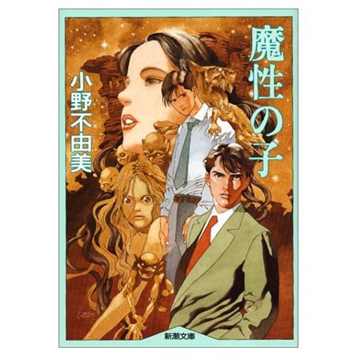

| [小野不由美] 十二国記シリーズ11 | |
| 小野不由美 | |
| (2015) | |
|
十二国記シリーズ 魔性の子
小野不由美
|

|
魔性の子 |
積水不可極
安知滄海東
九州何處遠
萬里若乗空
向國惟看日
帰帆但信風
鰲身映天黒
魚眼射波紅
郷樹扶桑外
主人孤島中
別離方異域
音信若通信
＊
雪が降っていた。
重い大きな雪片が沈むように降りしきっていた。
天を見あげれば空は白、そこに灰色の薄い影が無数に滲む。染みいる速度で視野を横切り、目線で追うといつの間にか白い。
彼は肩に軟着陸したひとひらを見る。綿毛のような結晶が見えるほど、大きく重い雪だった。次から次へ、肩から腕へ、そうして真っ赤になった掌に留まっては、水の色に透けて溶けていく。
雪の白よりも、彼の吐息の白のほうが寒々しかった。子供特有の細い首を巡らせると、動作のとおりに白く吐息が動きを見せて、それがいっそう眼に寒い。
彼がそこに立ってもう一時間が過ぎた。
小さな手もむきだしの膝も、熟れたように赤くなってすでに感覚がない。さすっても抱きこんでも冷たいばかりで、それでいつのまにかぼんやりとただ立っていた。
北の中庭だった。狭い庭の隅には使われてなくなって久しい倉が建っている。土壁に入った亀裂が寒々しい。三方を母屋と倉に、もう一方を土塀に囲まれていたが、風の無いただ寒いばかりのこの時には、ほとんど恩恵をもたらさなかった。庭木と呼べるほどの樹木もない。夏が近くなればシャガの花が咲いたが、いまはむきだしの地面が白く斑に染まっているだけだった。
（強情な子やね）
祖母は関西から嫁いできた。いまも故郷の訛が消えない。
（泣くくらいやったら可愛げもあるのに）
（お義母さん。そんな、きつく言わなくても）
（あんたらが甘やかすし、いこじな子になるんやわ）
（でも）
（近頃の若い者は子供の機嫌を取るしあかん。子供は厳しいくらいでちょうどよろし）
（でも、お義母さん、風邪をひいたら）
（子供がこれくらいの雪で風邪なんかひくわけないわ。──ええね、正直に謝るまで、おうちの中には入れへんかららね）
彼はただ立ち尽くしている。
そもそもは、洗面所の床に水を零して拭かなかったのは誰かという、そんな些細な問題だった。
弟は彼だと言い、彼は自分ではない、と言った。
彼にはまったく身に覚えがなかったので、そう正直に言ったまでのことだ。彼は常々祖母から、嘘をつくのは最もいけないことだと躾られてきたので、自分が犯人だと嘘をつくことはできなかった。
（正直に言うて謝ればすむことでしょう）
祖母が激しく言うので、彼は自分ではないと繰り返すしかなかった。
（あんたやなかったら、誰やの）
犯人を知らなかったので、知らないと答えた。そうとしか返答のしようがなかった。
（どうしてこんなに強情なんやろね）
ずっと言われつづけていることではあるし、彼は幼いなりに自分が強情なのだと納得していた。「強情」という言葉の意味を正確に知るわけではないが、自分は「強情」な子供で、だから祖母は自分を嫌いなのだと、そう納得していた。
涙が出なかったのは困惑していたからだった。祖母は謝罪の言葉を求めているが、謝罪すれば祖母がもっとも嫌う嘘をつくことになる。どうしていいか分からなくて、彼はただ途方にくれていた。
彼の目の前には廊下が横に伸びていた。廊下の大きなガラスの向こうは茶の間の障子。半分だけガラスが入ったそこから、茶の間の中で祖母と母とが言い争いをしているのが見えた。
ふたりが喧嘩をするのは切ない。いつも必ず母が負けて、決まって風呂場の掃除に行く。そこでこっそり母が泣くのを知っていた。
──お母さん、また、泣くのかなぁ。
そんなことを考えて、ぼんやりと立っている。
少しずつ足が痺れてきた。片足に体重をのせると、膝がきしきし痛んだ。足先は感覚がない。それでも無理に動かしてみると、冷たい鋭利な痛みが走った。膝で溶けた雪が冷たい水滴になって、脛へ流れていくのがわかった。
彼が子供なりに重い溜息をついたときだった。ふいに首筋に風が当たった。すかすかするような冷たい風でなく、ひどく暖かい風だった。
彼はあたりを見まわした。誰かが彼を憐れんで、戸を開けてくれたのだろうと思ったからだ。
しかしながら、見回してみても、どの窓もぴったり閉ざされたままだった。廊下ではなく部屋に面したガラスは、さも暖かげに曇っている。
首をかしげて、もういちどあたりを見まわす。暖かな空気はいまも彼のほうに流れてきていた。
彼は倉の脇まで目をやって、それからきょとんと瞬きした。
倉と土塀の間のごくわずかの隙間から、白いものが伸びていた。それは人の腕に見えた。二の腕の上のほうまで素肌を剥き出しにした、白いふっくりとした腕が倉の陰から差し出されているのだった。腕の主の姿は見えない。おそらく倉の陰に隠れているのだろうと、彼は思った。
ひどく不思議な気がした。倉と塀の間にはほんのわずかな隙間しかない。狭い隙間に落ちこんだ野球ボールが取れなくて、弟が泣いたのは昨日のことだ。彼や弟の小さな身体をもってしても、その隙間には腕より他に入らなかった。見たところ大人の腕のようだが、いったいどうやってあの隙間に入っているのだろう。
腕は肘から下を泳がせるようにして動かしていた。それが手招きしているのだと悟って、彼は足を踏みだす。凍えて痺れた膝が、音がしないのが不思議なほどにぎくしゃくした。
おびえる気になれなかったのは、暖かい空気がその方角から流れてくるのに気づいたからだった。彼は本当に寒かったし、本当にどうしていいか分からなかったので呼ばれるままに歩いた。
雪はすでに地面を覆って、彼の小さな足跡を残すほどになっている。白かった空は墨を暈かしたように色を変えている。
短い冬の日が暮れようとしていた。
一章
１
広瀬が校門を入ると、校舎へ至る前庭にはモノトーンの制服が溢れていた。学校には独特の喧噪が流れている。それは高校に特有の空気というより、長期の休み明けに特有の空気だ。ごく微かに海の気配がする風に、遠くから蝉の声が運ばれてきていた。
生徒たちは白とグレイの制服を着ていた。明るいスカイ・グレイのネクタイは見た目には涼しげだったが、当人たちにしてみれば暑くてたまらないだろう。わずかでも涼を取ろうと襟元を緩めた生徒が、校門の脇に控えた教師にたしなめられていた。
広瀬はそれを見て何となく微笑み、それから自分も衿を緩めたままでいるのに気づいた。あわてて鞄を脇で挟み、ネクタイを締め直す。ほんのわずか、苦笑が漏れた。
広瀬がこの高校に在籍していた頃の制服には、ネクタイなどというものはなかった。愛想のない開襟シャツと黒い学生ズボンの夏服が、現在の形になったのは広瀬が卒業した次の年からだ。そんなものは生真面目な教師しか身につけないものだった。その生真面目な教師──正確には単なる教生だが──になってしまった自分がおかしかった。
広瀬は教師たちに混じって職員用の玄関から校舎に入る。見覚えのある顔が幾人も通り過ぎて、それに会釈を繰り返しながら鞄の中に手を差し入れた。校舎の見取り図を引き出して建物を確認する。辺りを見回し、特別教室を探した。
広瀬がこの私立高校を卒業したのは三年と少し前のことだ。偏差値で言えば上のクラスの男子校で、歴史もあったので一応名門校の部類に入った。有名大学への進学率はそれなりに良かったが、その他にはこれといった特徴もない。特に面白い高校ではなかったが、特に厭うほど嫌な学校でもなかった。
このタイプの名門校にしては珍しく高校だけの学校で、一学年は六クラスしかなかった。そのクラスも概ね四十人学級で、都会の学校にしては小さいといってよい。広瀬が在学していた当時には市街地の真ん中に古い煉瓦造りの校舎が建っていたが、古今の風潮に従って市街の外れに移転した。三年前、広瀬が卒業した翌年度のことだ。
そういうわけで卒業して以来、学校に足を踏み入れたのは教育実習の根回しを始めた時が初めてだった。来ようと思えばいつでも来れたが、何となく気後れがした。
学校という場所はそこに在学している間は自分のテリトリーであるものだ。そこは彼の生活の場であり、家の延長線上にあるとても近しい場所だ。それがしかし、彼が卒業するやいなや他人の場所になってしまう。彼は部外者になり、侵入者になる。ましてや広瀬の場合のように、卒業した後に移転されて制服までもが変わってしまうと、見知らぬ学校と差異がなかった。
まだ建設途中だった新校舎を一度だけ見物に来たことがある。海に近いこの辺りには荒涼とした休耕地ばかりが続いていた。その中で、凪いだ海を背景に何かのパビリオンのように立ち上がりつつあった建物群。平板な土地の真中を広い道路が貫いていて、学校のすぐ近くでは巨大な団地が増殖している途中だった。そのまだ建設中の建物と、同じく建設中の学校と、ふたつながらに奇妙な姿を晒して、まるでタンカーか空母でも浮かんでいるような印象を受けたことを覚えている。
現在では建設途中だった団地群は完成し、荒れた休耕地には家が建ち並び、大規模なニュータウンを形成している。私鉄の路線も延長されて真新しい駅舎の前には繁華街が広がりつつあったが、それでもここが広瀬にとって異境であることには変わりがない。
母校という言葉によって呼び起こされる感傷に該当するものは、ここには何ひとつ存在しなかった。煉瓦造りの校舎や校舎よりも伸びた鬱陶しいほどの樹々はもちろん、歴史というには黴臭すぎる雰囲気も、伝統と呼ぶにはあまりにも野暮な印象も。
広々とした明るい学校だった。瀟洒な校舎の間に立つ樹木がひ弱な影を落としている。あちこちに幾何学的に配置された芝生はふっさりとした緑を輝かせていたが、清潔すぎて植物が繁茂している印象はなかった。正門から中庭まで向かう道の両脇に並んでいるのは桜だろう。幹の太さからいって市街地にあった旧校舎の桜並木を移植したのに違いないが、等間隔に並べられきちんと剪定されてしまうとまったく印象を異にした。
母校に帰った感慨は当然の事ながらなかった。よるべを失った懐かしさが浮遊する。奇妙に頼りない気分になった。それは広瀬が滅入ったときに必ず感じる独特の気分によく似ている。──故国喪失者の感傷に。
２
広瀬の担当教官は後藤という理科教師だった。私学のこととて教師の移動は少ない。広瀬の在学中にいた教師はほとんどが今もこの学校で教鞭を取っている。
後藤は化学の担当で広瀬が一年生のときのクラス担任だった。ずいぶん世話にもなったし、影響も受けた。
広瀬は後藤が気に入っていたし、後藤も広瀬が気に入っているようだった。後藤は必要のない限り職員室には戻らず化学準備室を住処にしていたが、広瀬はそこに三年間入り浸っていた。おかげで化学には親しみがあったし、そのせいで化学だけは成績も良かった。それで大学は理学部に進んだが、広瀬としては別段研究者になりたいわけではない。かといって、サラリーマンになるのも嫌だったので教職を目指した。決して後藤に教師の理想を見て触発されたわけではなかったが、やはり全部が後藤の影響と言ってもいいだろう。
特別教室はひとまとめにされて特別教室棟という一郭を作っていた。八月にあったガイダンスで、この日まっすぐ化学準備室に来るよう指示されていたが、その化学準備室がどこにあるのか分からない。まったく馴染みのない閑散とした特別教室棟を、見取り図を頼りに歩くのには疎外感を伴った。三階の端に化学実験室を見つけた。その隣にあるのが化学準備室だった。
広瀬は準備室のドアを軽くノックする。すぐにダミ声で応答があった。
「おう」
失礼します、と声をかけてドアを開けると、クーラーの冷気と一緒に油のにおいが流れてきた。化学準備室にはそぐわない、テレピン油のにおいだった。
「よう。一応大人の格好をしているじゃねぇか」
揶揄するように笑った後藤は、広くもない準備室の窓際に置いたイーゼルの前に立っていた。後藤は趣味で絵を描いた。素人離れした上手さで、必須の美術クラブを美術教師と一緒に担当していた。今は別に絵筆を構えているわけではなく、単に絵の仕上がりを見ているようだった。
壁の一面には戸棚が並んでいる。反対側の壁に袖を当てるようにして机が三つ並んでいた。その内の一つ、イーゼルの脇にある机の上には筆洗や絵具、パレットなどが散乱している。他の二つの机の上には一応教材らしい物が置いてあったが、そこも混乱を免れていない。床に放置された実験用具やカンバス、壁に貼られた周期表やメモ、どこもかしこも雑然として、かつてよく通った準備室となめらかに重なった。
少しも変わっていない後藤の顔を眺めてようやく広瀬は笑った。帰ってきた、という思いがやっとした。
「お久しぶりです」
広瀬が言うと、後藤は破顔する。八月に行われたガイダンスで会っていたから久しぶりではないのだが、準備室にいる後藤を見ると久しぶりに会ったという気がしてならない。
「一丁前にネクタイを締める年頃になったな」
「おかげさまで」
広瀬が会釈すると後藤はドアを入ってすぐの机を示した。
「丹野先生の机を使えや」
化学の担当は後藤と丹野の二人だった。老齢で温厚な教師である丹野は、テレピン油のにおいに降参してほとんど準備室に寄りつかない。丹野の机の上には後藤の私物が当然のように置かれていて、それさえも在学中のままで懐かしかった。
「遅刻しねぇようになったじゃねぇか」
「人間は成長する生き物なんですよ」
広瀬が言うと後藤は声を上げて笑った。
広瀬の両親が転勤したのは高校二年の冬だった。その時節から転校もないだろう、というわけで、広瀬だけがこの街に下宿して残った。そのまま地元の大学に進学して、生まれて育った街にとうとう居座っている。
一人暮らしを始めてからというもの、強制的に学校に送り出してくれる者がいないのでつい遅刻することが多かった。いい加減にしろと三年の担任に叱責されたのは、ひと月連続で遅刻したときのことだ。叱責されると欠席が増えた。要は学校が嫌いだったらしい。
広瀬は実際のところ、学校に馴染めない子供だった。同級生に溶け込むことができず、教師と折り合いを付けることが苦手だった。勉強自体は決して嫌いではなかったが、学校という檻の中に何がしかの時間、他人と閉じ込められることがどうしても苦痛でならなかったのだ。親がいる間は喧嘩をするのも面倒なのできちんと学校に行ったが、一人になってからは箍が緩んだように学校をさぼるようになった。登校拒否というほど深刻な事態ではなかったが、単に怠惰だと言うには根が深かったかもしれない。
幾度かの小競り合いの末にも一向に改善される様子のない広瀬に担任は頭を抱えた。担任は結局、広瀬と親しい後藤のところに苦情を持ちこんだ。
「人間というのはくさやと同じだ」
後藤はそういった。
「馴れないうちは臭くて鼻持ちならないが、馴れると結構味わいがある。臭いと言って投げ出しちゃ、死ぬまで食えない」
これに対して広瀬は、一生食えなくていいです、と答えた。実際広瀬はその頃、山奥に庵を結んで隠れ住むための方策を真剣に模索していた時期だった。それでも後藤の言葉にどこか慰められたのだろう、以来少しだけ他人に対して鷹揚になった。高校の三年間で、そんなことが数え切れないほどあった。
広瀬はつまり少しばかり扱いにくい生徒で、その広瀬がきちんと小言に耳を傾けるのは後藤が相手のときだけだった。他の教師もそれを知っていたので、広瀬が後藤のところに入り浸るのを黙認していた節がある。今から考えると後藤にはずいぶん迷惑をかけたと思う。
「それしゃ、職員室に行くか」
後藤は腰に下げたタオルを取って手を拭う。それは彼が気持ちを切り替えるときの癖のようなものだった。はい、とうなずいて広瀬は鞄を机の上に置く。澄ました顔で部屋を出て行く後藤の後に続いた。
不思議にもう疎外感は感じなかった。特に用があるわけでもないのに後藤が広瀬を準備室に呼んだのは、ひょっとしたらこのためだったのかもしれない、と何となく思った。
３
職員室で職員会議に参加して、それから始業式に出た。今年の教育実習生は十人と少しで、理科の教生は広瀬だけだった。そのうち八人が広瀬の同級生だったが、ほとんどの者に見覚えがない。
広瀬は生来友人の少ない性格だった。彼は学校で昨夜観たテレビの感想を伝え合うことに興味を持てなかった。学校の外で教師や同級生の論評を交換し合うことにはさらに興味が持てなかった。それ以上の会話をするためにはその段階を我慢しなければならないのだと分かっていても、高校生だった広瀬には敢えて苦行に挑戦する意欲を持つことができなかった。広瀬は一人でいることが苦痛でなかったし、孤立することが恐ろしくなかった。クラスの中には学年が終了するまでついてに会話をすることのない者が少なからずいた。準備室に入り浸る連中とは多少会話をしたが学校の外でまで会うことはなかったので、高校の三年間で得た友人といえば強いて挙げるなら後藤だけだろう。
整列した生徒たちの前に並ばされ、校長に紹介されている間、広瀬はそんなことをとりとめもなく考えていた。
始業式を終えると、担当クラスのホームルームに向かう後藤の後に続く。
後藤は現在二年六組の担任だった。
「担当は週二十六時間だ。二年の化学が四回と一年の理科Ⅰが二回。おまけにホームルームと必須クラブがつく。全部お前に任すからな」
「任す、って」
「一回くらいは手本を見せてやるよ。後は好きにやんな。俺は暖かく見守ってやるから」
「見守る、だけなんでしょうね」
「無論、見守るだけだ」
ニンマリとする後藤に、はいはいと広瀬は呟いてみせた。
「よし。全員揃っとるな」
教壇の上から教室を見渡した後藤の第一声で、ホームルームが始まった。広瀬は教壇脇に貼られた時間割の前で痛いほどの視線の中に立っていた。好奇心を露わにした視線と、意図的に外らされた視線。生徒たちの興味が自分の方に向いているのが分かった。
後藤はドラ声を張り上げて伝達事項を要領よく伝える。歯切れのいい、妙に聞き易い抑揚のついた口調が懐かしかった。
後藤の話題が十日後に予定されている体育祭のことに及んで、生徒の注意が教壇のほうへ集中した。視線の包囲がようやく解けて広瀬は軽く息をつく。
「これはまた生徒会の方から何やら言ってくるだろうから、ハメを外さん程度に勝手にやれ」
後藤らしい言いぐさだった。
「何をしようと勝手だが、俺ぁ責任を取らんからな。手前で責任を取れる範囲にしとけよ」
微かに笑って、広瀬は視線を後藤の方から生徒たちの方に移した。生徒たちの反応は様々だった。広瀬にとって後藤は良い教師だったが、クラスメイトの誰にとっても良い教師だったわけではない。野卑だという者もいれば、理解者ぶっているのが気にくわないという者もいた。後藤の言葉を額面通りに受け取って無責任な奴だと言う者もいた。そのように、今目の前にいる生徒たちも様々な表情を覗かせいている。
広瀬は教室を見渡してほのかに苦笑する。同じ年頃の子供ばかりが四十人。学校であれば当然のことだが、一旦学校を出てしまうとこれほど奇異な光景もない。同じ歳の、同じ服に身を包んだ、同じような顔の人間の群れ。誰もが優等生然とした顔つきで、それがずらりと並んでいるのは鶏卵のパックを思い出させた。
そんなことを考えながら教室を見渡して、広瀬はふと視線を止めた。
教室の後ろの方に、少しばかり目を引く生徒が座っていた。一瞬よりも長い間視線が釘づけになったが、広瀬にはその理由が分からなかった。
彼は別に特異な姿形をしているわけではなかった。特別醜くもなく、特別鮮やかでもない。他の生徒と同じように表情のない顔で壇上にいる後藤の方を見ている。それでも明らかに周囲の者とは違う。どこがと問われて答えられはしないが、それでも違うと断言できた。
強いて言えば、雰囲気が違うのだろうか。纏まっている空気、放射している気配の色、そんなものがひどく変わっているように思えた。
変わった奴がいる、と内心独白したとき後藤が広瀬に声をかけた。教壇の上から手招きされて、慌てて足を踏み出した。
後藤は、今年もまた楽ができるシーズンが来た、といって広瀬を紹介した。
「教生の広瀬だ。適当に可愛がってやれや」
後藤がそう言うと、教室のあちこちから乾いた笑いがまばらに起こった。後藤は広瀬に出席簿を突きつける。
「出席取って、このプリントを配って終われ。俺は一足先に戻って寝てるからよ」
教卓の上に置いたプリントを示す後藤に広瀬がうなずき返すと、後藤はニンマリと笑って教室を出ていく。広瀬の初仕事を見守るつもりはないようだった。
広瀬ですよろしく、と声をかけてから指示されたようにプリントを配布した。大雑把に分けた紙の束を最前列の者に渡し、それが後ろへ回されていくのを見ながら、もう一度生徒の顔を眺め渡した。やはり視線が「彼」のところで止まる。
「彼」は前に座った者が手渡してきた紙の束から一枚を抜いて、残りを後ろの者に渡す。何の音も立てず、空気でさえ動かさないように見えた。
「彼」がいかにも脆弱な、線の細い人間だったら特に意識をしなかったかもしれない。「彼」はその振る舞いとは正反対に、いかにものびやかな外見をしていた。凛と伸ばされた背筋のせいかもしれない。成長期の生き物だけが持ちうる闊達で健康な気配を「彼」の外見は完全に具現している。それなのに「彼」が身動きしても何の物音もしない。何の気配も放射しない。少なくとも外見から期待されるような、若者らしい伸びやかな振る舞いを「彼」は全くしなかった。あまりにもちぐはぐで、それでかえって広瀬の注目を引いた。
余ったプリントが帰ってくるのを受け取りながら、面白い奴がいるものだ、と広瀬はそう思っていた。
広瀬が出席を取る際に、「彼」は「高里」と呼ばれて返事をした。ごく静かな語調だった。声自体が若い張りのある声だけに、台本を棒読みしているような印象を受けた。
「タカサトと読んでいいんですか」
何となく確認したのは「彼」にもう少し喋らせてみたかったからだった。「彼」はただごく短く、はい、とだけ答えた。
４
化学準備室に戻ると、ちょうど後藤がビーカーにコーヒーを注いでいるところだった。出席簿を差し出すと自分の机の上を示して、戸棚からもうひとつビーカーを引っ張りだす。後藤の机の上に出席簿を乗せ、広瀬は書棚を開いて教材に混じって納められている広口壜をふたつ取り出した。一方には砂糖が、もう一方には粉末のミルクが入っていると知っている。
「覚えてたか」
「忘れられませんよ、こんなの」
広瀬が言うと後藤が笑う。何も書いてないラベルを貼った無色の壜が砂糖。茶色の粉が粉末ミルクだ。化学準備室に入り浸っていた広瀬には本当におなじみのものだった。薬匙を添えて机の上に乗せると、後藤がビーカーを差し出した。ハンカチを出してそれを受け取る。取っ手のないビーカーに湯を入れると当然の事ながら熱くて持てない。化学準備室でお茶を振る舞ってもらうためにはハンカチが不可欠だった。
「懐かしいな」
「だろう」
得意そうに言う後藤が可笑しかった。
「最近でも生徒が来るんですか」
「お前みたいに入り浸る奴はいねぇな。それでも昼休みにゃ何人か来て、好き勝手なことをしていくぜ」
広瀬は思わず笑う。
「ビーカーでラーメンを煮たり、試験管でアイスキャンディーを作る連中ですか」
そういうことだ、と後藤は笑う。
「まぁ、そういう連中はいつでもいるが、教生になって戻ってきたのはお前が初めてだな」
広瀬は軽く微笑む。広瀬の在学中にも準備室に入り浸る連中がいたが、そのほとんどが広瀬と同じような人間だった。卒業後彼らは多彩な道を──研究者から医者、果ては役者や活動家にいたるまで──選んでいったが、教師になった者はいなかった。
「教師の紛い物になった気分はどうだ」
「えも言われぬ気分です」
「だろうな。面白くなさそうなクラスだろ」
うなずいて広瀬は苦笑した。それからふと、
「ひとり、変わった子がいますよね」
ああ、と後藤は声を上げた。
「広瀬も気がついたか。高里だろう？」
そうとうなずく広瀬に、後藤は笑う。
「変わった奴は同類を嗅ぎ分けるのがうまいな。俺は高里を見たとき、広瀬みたいな奴がいると思ったぞ」
「おれとはタイプが違うでしょう」
広瀬が言うと後藤は天井を睨んだ。
「違うな。お前は見るからに神経質そうだったから。それでも目立つだろう？」
「おれ、目立ってましたか」
「目立ってたとも。広瀬も高里もはみ出してるぶん目立つんだ」
目障りとも言うがな、と言って後藤は笑った。
「あいつも美術クラブだ。──ちょっと印象深い絵を描く。妙な奴だ」
「へえ？」
「妙な奴だよ。お前より数段妙だ。広瀬のほうがずっと把握しやすかった」
後藤の表情は奇妙に深刻な色をして見えた。
「広瀬は俺と同じはみ出し者だ。だから把握しやすかったな。高里は違うんだ」
「高里もはみ出しているんでしょう？」
「それでも違う。俺やお前は好きではみ出してるんだが、高里は中に入ることができねぇんだ。ぜんぜん毛色が違うからどうしたってはみ出す。そんなふうに違う」
「ずいぶん観察してますね」
「変わっているというより、高里は異質なんだ」
気遣わしげな声だった。
「何か問題でも？」
「問題なんかねぇよ。お前と違って高里はできがいい。頭はいいし、協調性はあるしな」
「その節はご苦労をおかけしました」
慇懃な言い回しに後藤は笑って、
「奴は台風の目だ。本人が静かなぶん周りが荒れる。すぐに分かるさ。面白くもねぇクラスだが一筋縄じゃいかねぇからよ」
「どうしてですか」
「高里がいるからさ」
後藤はそう言って立ち上がった。カーテンを開けて光をいっぱいに入れる。腰に下げたタオルを取って手を拭うと、イーゼルの前に立った。
十号ほどの大きさのカンバスには校庭の風景が完成されつつある。校庭の一郭らしい景色が妙に毒々しい色合いで描かれていて、そこに妖怪か妖精のような姿で制服を着た生徒が幾人か描き込まれている。ひねこびた顔つきで植木の陰に隠れた者、ベンチの上にのさばった蝦蟇のような者、それを見ている数人の突飛なポーズをとった者。画面全体は一見すると暗そうだったが、しみじみ眺めると何ともいえないユーモラスな風情と温かみがあった。
最初に後藤が描いた絵を見た時には驚いたが、その画面に人間が登場することはまずなかった。一度など、職員室に奇天烈な服を着た動物がウヨウヨ集まって酒盛りをしている絵を「会議」と題して描き、それで校長から小言をもらったのを広瀬は知っている。
後藤に触発されたわけではないが、広瀬も必修クラブは美術クラブを選択していた。単に画布に向かって閉塞していられるのが好ましかったのかもしれない。後藤のような絵を描いてみたいと思って模倣したこともあったが、自分には画才などないことを発見しただけだった。
後藤が未完成の絵を眺め始めたのを見て取って、広瀬は黙って机に向かい、実習日誌を開いた。
翌日からは通常通りの授業が始まった。広瀬は後藤の後をついて走り回り、その日の午後にはもう汗だくになりながら教壇の上に立つようになった。実習の期間は二週間しかない。正確に言えば十二日間。その六分の一にあたる二日間を無我夢中で終える頃には、学校には体育祭前の浮ついた空気が流れ始めていた。
＊＊
白い花が咲いていた。
見渡すかぎりの野原だった。半分に切ったボールの形に空が広がっていた。野原は限りなく大きな円盤だった。地平線まで続く野原というものを、彼はこの時まで見たことがなかった。
彼は首を巡らせた。三百六十度、野原は完全な円形をしている。平坦に緑が広がるばかりで、ほんのわずかの起伏もない。
「すごい」
そう彼は独白し、そこでようやくその場所がどこなのか分からない自分に気がついた。ここはどこだろう。彼の家の周りにも小学校の周りにも、ようやく道順を覚えた通学路の周辺にも、こんな場所はなかったと思う。
そして、と彼は頭上を見上げる。空は複雑な色をしていた。こんな色の空を見たのも初めてだ。
空は総じて水色をしていた。見慣れた空よりずっと色が薄いように感じるのは、空全体にごく薄く刷かれた絹雲のせいかもしれない。その淡い水色の中に桜色や薄緑色が暈し込まれている。
彼はポカンと空を見上げた。今度から空を塗るときには、青色でなく水色を使おう、とそう思った。絹雲が緩やかに流れると、空の色がまるで極光のように変化して見えた。
しばらく頭上を見上げた後、さらに首を巡らせて彼は独りごちる。
──月も忘れないようにしなきゃ。
不思議な色の空には、有明の満月のように淡く白い月が昇っていた。その月の周りにはごく薄く、白い点で星が見える。星座の形を辿っていると二番目の月を見つけた。
彼は目を丸くした。
──月はひとつじゃなかったのかしら。
よくよく数えてみると、さまざまな形の月が大小併せて六つも浮かんでいる。太陽はどこにも見えなかった。
不思議だと思いながら、彼はしばらく空に見とれた。空気は寒くも熱くもなく、緩い風が吹いて微かに好いにおいを運んできた。花のにおいだと思った。それから草のにおい。
彼は深呼吸をし、それから視線を大地に戻した。どこまでも平らな大地には産毛のような緑が広がっている。彼の膝丈ほどの草だった。細い葉の間からまっすぐな茎が伸びて、そこに爪の先ほどの花が幾つかついている。近くを見れば花は疎らだったが、遠くを見ればけぶるほど白い。
さわ、と少しだけ強い風が吹いた。一斉に草が揺れて白い花も揺れる。小さな花はぶつかり合って、ガラスが触れ合うような澄んだ音をたてる。柔らかく草が足をくすぐった。
そうして彼は気づく。そこは野原ではなく湿地だった。彼の小さな足の、ちょうど脛の中程まで澄んだ水が湛えられていた。これほど澄んだ水を彼は見たことがない。波も流れもない水は、本当にあるのか疑わしいほどだった。不思議なことに、彼の足には濡れた感覚はなかった。試しに片足を上げてみる。割り砕いた水晶のように飛沫が輝いて零れ落ちたが、肌には湿り気でさえ残っていなかった。
水底は灰色の石でできていた。なるほど大地が平らなはずだ。大きな四角い石が、きちんと敷き詰められていて、その上に水が湛えられているのだった。細い澄んだ緑の茎がその石から生えている。群生を作った株の陰から小魚が光を弾いて泳ぎ出た。
彼は歓声を上げる。水の中に手を差し入れて小魚を掬いにかかった。小さな手に追いかけられても魚は逃げない。それどころか指先に泳ぎ寄ってくる。彼が指を動かすと、まとわりつくようにしてみせた。
──ここはどこなんだろう。
小魚ごと水を両手で掬いあげ、彼は周囲を見回す。彼にも、こんな場所があるはずのないことが分かり始めていた。指の間から水が洩れて、魚が通った時には擽ったいような感触がした。
──とても、きれいなところだ。
彼は意味もなくうなずいた。もう一度辺りを見渡して、それから水を跳ね散らかして歩き始める。彼が歩くと花が揺れて、足元できらきらと澄んだ音がした。
それからどれだけ歩いたのか、彼は覚えていない。ずいぶん長い距離を歩いた気がした。いくら歩いても少しも疲れなかった。花ばかりが続く風景は一向に見飽きなかった。彼は満足し、しごく幸福な気分で歩いた。時折、どこからか小鳥が飛んできて彼の頭や肩に留まった。ひとしきり遊んでは飛んでいく。
飛んでいく鳥を見送って、彼は遠くに野原の切れ目があるのに気づいた。白い花が横に切れて、深い蒼が覗いていてた。どうやら川が流れているらしかった。
彼は川を目指して歩く。まるで逃げ水を追いかけているように、それは歩いても歩いても近くならなかった。長い時間を小魚や小鳥と遊びながら歩いて、ようやくそれが近くなってきた。
小川に見えたそれは、実は大きな河だった。対岸は遙か彼方に見え、川底は見えないほどに深い。石畳の大地がすとんと切れ込んで、そこから先には深い蒼碧の水より他に何も見えなかった。覗き込んでも水の色の薄い場所さえない。均一に深い色をしていて、底には起伏などないだろうことが彼にも分かった。
その深く広い河の縁まで歩いていくと、それ以上前には進めなかった。彼はまだ泳げない。水の流れはないようだが、こんなに広い河を渡れるとは思えなかった。
がっかりした思いで彼は辺りを見回した。遠くでキラリと何かが光った。よくよく見ると蛇行して流れる河のずっと上流に（あるいは下流に）橋が架かっているのだった。
その橋は半分透き通って、ガラスか何かで出来ているようだった。彼は笑顔を浮かべ、河に沿って歩き出した。遠くに見える橋を目指して歩き始めた。
二章
１
三日目のことだった。三時間の授業を終え、実習日誌をつけ終えて、いよいよ帰るばかりになった段に二－六の生徒が後藤を呼びに来た。体育祭の準備で角材を扱っていて窓ガラスを割ったという。慌てて作業をしていた体育館裏に駆けつけ、後藤に指示された通りに処理をした。そろそろ放課後は体育祭の準備をする居残り組で賑わうようになる。クラスの生徒が居残りをすれば後藤も学校に残らざるを得ない。後藤が残れば広瀬としても帰りにくくなるだろう。
そんなことを考えながら、担当の職員に連絡をして準備室へ戻ろうと廊下を歩いていた広瀬は、二－六の教室に人影があるのを見つけた。今日は教室で居残りをするという届けは出ていなかったはずだが、とそう思いながら教室を覗き込み、そこにいるのが高里であるのに気づいた。
彼はそこで何をしている様子でもなかった。考えごとをするとか、ぼんやりするとか、そんなふうにさえ見えなかった。自分の席に座り、両手を軽く組むようにして机の上に乗せ、視線を窓の方に向けている。ただ、そこに存在している、それだけの気配。
「どうした、まだ残っているのか」
開いたままのドアから広瀬が声をかけると、高里はふと視線を上げて振り向き、それから静かにうなずいた。
「はい」
「準備か？」
何となく話をしてみたかった。それでそう聞きながら教室に足を踏み入れてみる。
高里は広瀬の顔をまっすぐに見返した。
「いえ」
そのときだった。高里の足元を何かが走り抜けた気がした。広瀬は足を止め、視界を走り去る何かの影を眼で追う。視線で追うよりも速く、それは視界の外に逃げ込んでしまった。一瞬のことだし正視したわけでもないが、それは何か獣のようなものに見えた。ぽかんと影が逃げ込んだ方向を見回したが、当然のように何の姿もない。
今のを見たか、と聞こうとして、高里のまっすぐな視線とぶつかった。彼の視線にはどんな色も含まれない。急にきまりが悪くなって、広瀬はただ視線を教室の隅々に向けた。がらんとした教室には乾いた夏の空気が淀んでいるだけだった。
広瀬は苦笑し、もう一度高里を見る。彼はそんな広瀬をじっと見返していた。
「居残りか？」
「いえ」
「じゃ、具合でも悪いのか？」
側に寄って聞くと、じっと広瀬を見上げて首を振る。
「いいえ」
高里の返答はどこまでも短い。広瀬は自分を見上げてくる顔をまじまじと見返した。高里の顔にはどんな表情も浮かんでいなかった。悟り澄ましたように静かな顔をしている。
「高里、だったよな」
すでにしっかり記憶した名前をあえて確認してみる。高里はただうなずいた。
「高里は放課後のクラブには入ってないのか？」
「はい」
「どうして？」
どうしても返答以外の言葉を喋らせてみたくて、そう聞いた。高里は少し首を傾け、年頃にそぐわない静かな声で答えた。
「クラブに入る気がしなかったので」
喋らせてみても、高里の違和感は変わらなかった。高里は広瀬を拒絶するわけでもなく、かといって歓迎しているわけでもなさそうだった。単に広瀬が話しかけるから答える。そのようにしか見えない。
「何をしてたんだ？ あ、これは別に尋問じゃなくて、単なる好奇心なんだけど」
高里は首を少し傾け、外を見てました、と答えた。
「見てただけ？ 考え事をするわけでもなく？」
「はい」
奇妙な奴だと思った。格別面白いものが見られるとも思えなかったが、窓の外を眺めてみる。角度の関係で広瀬からは体育館の屋根が半分と、その上に青ガラスでできたテープのように水平線が見えただけだった。座ったままの高里にはおそらく空しか見えないだろう。
「空しか見えんが」
「はい」
高里も顔を窓のほうへ向ける。視線の角度からいって、やはり空を見ているようだった。外は上天気で九月の今頃では夕暮れの気配も見えない。雲一つないそっけない青が書割のように広がっているだけだった。
「面白い風景には見えないけどなぁ」
はっきりと困惑が滲んでしまった広瀬の声に、高里は特に返答をしなかった。口角をほんの少しだけ上げて、笑みに似た表情を作っただけだ。
何となく落ち着かなくて、さりとて踵を返して教室を逃げ出すのも忌々しい気がして、広瀬は意味もなく高里に質問をした。体育祭にはどんな競技に出るのか、運動は好きか、学校は楽しいか、得意な教科は、一年の時の担任は、出身中学は、家族構成は。
対する高里は広瀬の目を見て淡々と返答した。競技は決まっていないこと、運動は特に好きでも嫌いでもないこと、学校がつまらないと思ったことは特にないこと、得意な教科はないこと、等々。問われるままにごく短く、必要最低限の返答をする。
聞かれた以上のことを喋ることも、広瀬に何かの質問をしてくることもなかった。何かを聞けば返答があるが、質問でなければ答えない。広瀬の相手をするのが苦痛な様子には見えなかったが、積極的に広瀬と会話したいと思っている様子もなかった。
「こう言っちゃ何だが、お前、変わってるな。そう言われないか？」
無礼を承知で言ってみると、「はい」という短い返答が何の感情も窺わせない声で帰ってくる。
「だろうな」
言って笑うと、高里も少しだけ笑顔を作った。それは世馴れた大人たちが使う愛想笑うによく似ていた。野卑な印象は受けなかったので不快感はなかったが、どうしても違和感が拭えない。落ち着き払った態度も声も、限度を越えていて、大人びていると言うよりも老成している印象を受けた。それはいかにも少年らしい彼の外観にそぐわない。どこまでもちぐはぐでひどく広瀬を困惑させた。
異質だという後藤の言葉を実感した。高里は「変わっている」というより「奇妙」だった。不快なところはどこにもなかったので、「異質」だとしか言いようがなかった。何を考えているのかさっぱり分からなかったが、何か歪んだ思考があるようにも見えなかった。
「邪魔だったろ？ 悪かったな」
そう広瀬が言うと、笑顔の形をした顔が「いいえ」と答えた。
２
「高里って変わってるな」
広瀬がそう言ったのは翌日の昼休み、化学準備室でのことだった。後藤は昼食を摂りに出かけていた。
広瀬の周囲には四人の生徒がいた。今も昔も準備室を根城にする連中は変わらない、と広瀬は思う。何かが多くて何かが足りなくて、教室に居場所がない。ただ、広瀬が在学してた頃はもっと破天荒な連中が集まっていたが、今周りで昼食を平らげている連中は以前見たメンバーに較べていかにも小粒な気がした。
「高里が変わってるって、よく分かりますねぇ」
感心したように言って顔を上げたのは築城という生徒だった。かれは高里と同じ二－六の生徒で、今年から準備室に来るようになったらしい。
「分かるとも。昨日喋ったしな」
昼食を摂るのに準備室くらい最適な場所はなかった。日当たりは良くて、夏にはクーラーが入る。後藤は惜しげもなくお茶を振る舞ってくれる。ただしビーカーで、ではあるが。
「一見おとなしそうでしょ、あいつ」
築城の声にはどこかしら刺のようなものが含まれていた。
「実際おとなしいんじゃないのか？」
「まぁ、それはそうですけど」
不満が滲んだような口調だった。それを聞きとがめたのか、岩木という生徒が築城の顔を覗き込む。
「何かあるのか？」
「別に」
突き放すように築城に言われて、岩木は露骨に鼻白んだ。彼も二年の生徒だった。クラスは二－五だが選択授業では二－六と合同授業になる。
「何だよ、お前、高里が嫌いなわけ？」
「別に」
何だよ、言えよ、と絡む岩木を築城はそっぽを向いてやり過ごそうとする。一年の野末と三年の橋上がそれを興味深そうに見ていた。
「単に暗い奴じゃないか。とっつきは悪いけどよ。それとも、あいつ裏で何かしてるわけ」
岩木が言うと、築城は吐き出すように言った。
「とにかく、あいつは変なんだよ」
その語気が妙に荒くて、全員が怪訝そうな表情をした。
「変って、何で」
橋上が聞くと、築城は目を伏せたまま堅い声で口ごもるように言う。
「あいつは、ちょっと違うから」
築地の口調に解せないものを感じて広瀬は首をかしげた。
「高里は嫌われ者なのか？」
そう聞くと築城は少し狼狽する様子を見せた。「好きな奴はいないと思うけど」と口の中で言ってから広瀬を見る。
「あいつには構わないほうがいいんだ」
「何で」
訊ねても返答はない。
「何か問題でもあるのか」
「──とにかく、あいつは違うから」
岩木がこれみよがしに溜息をつく。
「単に無口なだけだろ。今時いじめかぁ？」
揶揄するような声に築城は視線を落とす。少し迷うようにしてから意味ありげに声を潜めた。
「これは、おれが言ったっていわないでほしいんだけど」
彼は周囲を窺うようにして言う。
「高里は、カミカクシに遭ったんだ」
広瀬は一瞬、「カミカクシ」という音にどんな文字が当てはまるのか考えてしまった。ほんのわずかの間に「神隠し」という文字列を思い出し、ようやくぽかんとする。
「神隠し、って。あれか、ある日忽然といなくなるっていう」
築城はうなずく。
「高里が小学校の頃らしいですけど。本当にある日忽然といなくなって一年後にひょっこり帰ってきたんですって。その間、高里がどこで何をしていたのか、全然分からないって」
「高里自身はなんて言ってるんだ」
「何も覚えていないらしいけど」
「まじかよ」
橋上が身を乗り出した。
「誘拐されたとかじゃなくて、神隠しなのか」
「らしいですよ。それで高里、一年ダブってるんです」
「バカバカし」
岩木は言い捨てる。
「何か事情があったんだよ。単なる噂だろ」
築城は岩木をねめつけた。
「本当だって。有名な話なんだから。とにかく、高里はそれで変わってるんだよ」
広瀬はひどく困惑した。この一帯はここ数年の間に急開発された街だが、築城も高里も開発の波が押し寄せる前からここに住んでいたいわば地元民だと聞いている。「有名な話」というのは「学校で有名な話」なのではなく「地元で有名な話」なのだろうと、そこまでは想像がつく。しかし、「神隠し」とは。
「くだらねぇ」
岩木の一言でその会話は終わったが、広瀬は「神隠し」という単語を強く印象に残した。広瀬は基本的に神秘思想や超常現象に興味のない人間だが、だからといってそれを拒絶したいわけでもない。ましてや、高里という人間と照らし合わせてみると岩木のように軽視することが難しかった。
３
その後すぐの五時間目が必修クラブに割り当てられていた。広瀬が昼食から戻ってきた後藤と美術室に向かうと、すでに生徒の大多数が揃っていた。
必修クラブといっても内実は美術部と大差なかった。美術教諭の米田がおざなりに出席を取ると生徒たちは三々五々美術室を出て行く。全員がスケッチブックを抱えてはいたが、その大多数が図書館か空き教室に行って勉強するなり遊ぶなりするものであることを、広瀬は自分の経験から知っている。教師もそれを黙認していたし、生徒の方もそれを承知していて文化系のクラブでは最も登録者の数が多いのが常だった。中には本当に絵が好きで美術室に残る者もいる。そういう生徒たちは、後藤と米田がのんびりと会話する横でそれぞれが自分の作業を始める。
高里は残った方の生徒だった。彼は美術室の隅に備品のイーゼルを広げ、共同のロッカーからカンバスを取り出した。油彩をやるのか、と広瀬は妙に不思議な気がした。彼の持つ雰囲気が水彩を連想させていたのかもしれない。手慣れた仕草でロッカーから絵具箱を取り出して広げる。広瀬は黙って高里の方へ歩み寄った。
画布を覗き込める位置まで来てから声をかけた。広瀬の声に高里は振り返り、広瀬を認めて軽く会釈した。その顔には昨日と同じように、笑顔らしき形状が浮かんでいた。広瀬は手を上げ、それから高里の画布に視線を向けた。向けてしばらくその絵を眺めていた。
それは確かに印象深い絵だった。広瀬はしばらくの間高里とカンバスを見比べた。
「......こんなことを聞くのは失礼だとは思うんだが」
広瀬は言いよどむ。それでも聞かずにはおれなかった。
「それは何だ？」
画布には色が、ただ色が塗りたくってあった。朧気に何かの形が見えそうな気もするのだが、形を掴もうと目を凝らすやいなや輪郭が曖昧すぎてその形が見えなくなる。色は複雑な色をしていた。概ね柔らかな色が使われていたがひどく不透明で、美しい色とは言い難い。色も色の配置も美的とは言い難くてコンポジションというわけでもなさそうだった。
「何かの風景か？」
苦し紛れの科白に、高里は微かに目を見開いた。
「はい」
軽く笑みを作る。少しだけ本当に近い笑みに見えた。
「どこなんだ、これは？」
広瀬が聞くと、高里は首を振った。
「覚えていません」
「覚えていないのに、絵を描くのか？」
聞くと高里は生真面目な表情でうなずく。
「はい」
「どうしてだ？」
「描いていたら思い出せないかと思って」
そうか、と相づちを打ちながら、本当に妙な奴だと呆れていた。内心肩を竦めながら高里の側を離れて、広瀬は突然築城の言葉を思い出した。──神隠しに遭った。一年後。何も覚えていない。
高里を振り返った。それは神隠しに遭ったその間に見た風景なのか、と聞きかけて広瀬は口を噤んだ。うかつに聞くのは躊躇らわれた。築城の言葉を鵜呑みにすることはできなかったし、信じたら信じたで、なおいっそうたやすく触れてはならないことのような気がした。
奇妙な奴だ、と広瀬は口の中で呟く。
もしも神隠しに遭ったのが事実なら、高里はその間のことを本当に覚えていないことになる。そして、思い出したいと願っていることになる。確かに自分の記憶に欠落があるのは気味の悪い話だろう。それでも、積極的に思い出したいと願っているのだ、という事実は広瀬の首をかしげさせた。
人は異端に敏感な生き物だ。築城の口調はそれを象徴している。高里は神隠しに遭った。だから変わっているし、自分たちとは少し違っている。──だから好意的になれない。
好悪の情は隠しておいても相手に伝わる。高里がそれに気づいてないとは思えない。高里は「神隠し」をなかったことにしたいとは思わないのだろうか。自分の経歴から抹消したいと、そんなことがあったことを忘れてしまいたいと、そう思っていないのだろうか。──それとも、「神隠し」などという事件はそもそもなかったのか。
高里はクラブの間中、黙々と画布に筆を下ろしていた。何度も筆を休め、考え込みながら色を置き、さらに何度もナイフで色を削り取った。その絵を描くことが──ひいては思い出すことが、彼にとっては重大事なのだと、それだけは広瀬にも理解できた。
４
五日目、金曜の五時間目はロングホームルームの時間に当たっていた。話題はもちろん、一週間後に迫った体育祭のことしかない。簡単に諸注意の連絡を終えると、あとはクラス委員が準備の段取りをするのを見物するだけだった。
生徒たちは雑談をしながら議事を進めていく。教師が教壇にいないというだけで、クラスは段違いに騒がしい。競技種目と準備のための役割分担を決めようとしているようだったが、単なる雑談と大差なかった。
教室の後ろに立って広瀬は教室を見守る。高里は雑談に関与していなかった。高里の周りで空気が途切れたように、彼は完全にクラスの雰囲気から孤立していた。彼に声をかける者もなかったし、彼が他人に話しかけることもなかった。ただそこに座って、議事が進行していくのを見守っている。彼の周囲の人間は、彼がそこに存在しないかのように振る舞っていた。
すでに根回しが完了していたらしく、全員の競技種目があっさりと決まる。委員長の五反田が確認するように種目毎に板書された名前を数えていって、ふいに声を上げた。
「あれ？ 一人足りないぞ」
高里の名前が足りないのだと、広瀬は気がついていたが黙っていた。高里も特に何も言わなかった。最前列の生徒が五反田に耳打ちをする。彼は慌てて高里の方を見た。
「高里、希望の種目はあるか？」
そう聞いた五反田の声は少しだけ緊張しているように聞こえた。高里は短く、いえ、と答える。困ったように五反田は高里と黒板を見比べた。
「二百メートルしか余ってないんだけど、いいか？」
高里は無表情にうなずいた。五反田がホッとしたように表情を緩ませる。
そんな様子を見守りながら、広瀬は教室の空気を読み取ろうとしていた。高里は孤立している。生徒たちは高里を無視しようとしている。そこに悪意が感じられないのが不思議だった。誰も悪意でもって彼を孤立させようともくろんでいるわけではなさそうだった。彼らは高里から目を反らそうとしている。──それが広瀬が感じ取った印象だった。
その後にはそれぞれが準備のために教室を出ていく。体育祭では一年から三年までを縦割りにして三チームに分割するのが通例だった。各学年の五、六組が──青軍と呼ばれるのが伝統だったが──ひとチームに編成される。金曜の五限目は全校がロング・ホームルームのせいもあって、教室には一年や三年の生徒までが出入りし始めた。
後藤は生欠伸をしながら準備室に戻ってしまい、広瀬は教室に取り残される。他愛もない会話をしながら生徒たちが手作業をするのを漫然と眺めていた。
「広瀬センセ、暇だったら手伝ってくれない」
生徒に声をかけられて広瀬は苦笑する。
「何をすればいいんだ？」
これを適当に切ってくれ、と新聞紙を手渡されたところをみると、どうやらハリボテの準備らしい。少し離れた位置で高里もおとなしく鋏を使っていた。
「よう、広瀬さん、使われてんな」
声をかけられて顔を上げると、三年橋上が教室に顔を出したところだった。
「見習いってのは、こんなもんさ」
「修行は辛いと決まってら。──応援の担当はいるか」
橋上は教室に残った連中を見渡す。生徒のひとりが手を上げると、放課後応援の打ち合わせをするから、と連絡事項を伝え始めた。
「高里。次、これな」
切った新聞紙を揃えていた高里に、青い布を差し出した者がいたのはそのときだった。
うなずいて布を受け取る高里を、橋上がまじまじと見つめた。
「高里、ってお前か？」
「はい」
高里の態度には、相手が教生であろうと先輩であろうと変化がなかった。何の表情もない眼がただじっと相手の眼を見返すばかり。
「へぇぇ」
橋上は面白そうに呟いてから、
「お前、ガキの頃に神隠しにあったんだって？」
そう聞いた。
その後の教室の変化を何と表現すればいいのだろうか。広瀬には目に見えるほど濃い緊張が生徒たちを絡め捕ったように見えた。一瞬の後にはそれぞれがそ知らぬ顔で作業を始めたが、それは何か不穏なものから必死で目を外らそうとしているかのようだった。
「それ、本当なのか？」
橋上の好奇心を露にした声に、高里はただうなずいた。
「誘拐とかじゃなくて？ 全然覚えていないって本当なのか？」
「はい」
高里は淡々と返答をする。別段不快気には見えなかった。
「記憶喪失、ってやつか？すげぇなあ」
そのとき初めて、高里の眉が顰められた。あいかわらず不快なようには見えなかったが、それでも彼がこの話題を歓迎してはいないのが、そこはかとなく感じられた。
「実はＵＦＯに連れ込まれたんだろ。最近よく聞くもんな。気味の悪ぃ宇宙人に生体実験とかされて記憶を消されて戻される、って話」
高里が口を開いた。彼が自発的に言葉を発するのを広瀬は初めて見た。
「それ、誰から聞いたんですか？」
橋上は顎をしゃくる。躊躇なく築城の方に視線を向けた。
薄情な奴だ、と内心独白した広瀬は椅子が倒れる激しい音でとっさに表情を引き締めた。音のしたほうを振り返ると、築城が血相を変えて立ち上がっていた。
「おれじゃない」
驚いたことに、築城は恐慌をきたしているように見えた。
「信じてくれよ、おれが言ったんじゃない」
言い募る築城を橋上が笑う。
「お前が言ってたじゃないか」
「おれじゃない。おれは、言ってない」
高里はただ視線を落としていた。少しだけ眉根が顰められていたが、それがどんな感情を表すものかは分からなかった。
「おれじゃないから、高里」
逃げ出すように教室を出ていった築城を、橋上は呆れたようにして見送った。
「何だぁ、あいつは」
広瀬もまた唖然とした。どうしてあそこまで血相を変える必要があるのか。そうしてさらに広瀬は気づいた。その場にいる生徒の誰もが奇妙な表情を浮かべているのに。
彼らは一様に緊張し、しかもその緊張を必死で隠そうとしているように見えた。誰もがことさらのように無表情で築城の奇妙な行動には気がつかなかったふりをしようとしていた。それはあまりにも、電車の中で酔漢が喧嘩するシーンを目撃した人間の反応に似ているような気がした。
広瀬は高里を振り返る。高里の顔にはすでに何の表情も浮かんでいなかった。到底陰で暴力を振るうようなタイプには見えない。彼が何らかの直裁的な恐怖を他人に対して与えるとは思えなかった。
「築城のほうがよっぽど変なんじゃないか」
橋上の呟きもまた、その場の全部の生徒によって無視された。
５
放課後になっても喧噪はやまない。化学準備室の窓の下ではどこかのチームが立て看板作りに勤しんでいたし、死角に入ったどこかでは赤軍の応援団が練習をしているようだった。二－六も居残りの届けが出ている。後藤がのんびりと絵筆を動かしているので、広瀬もゆっくりと実習日誌を埋めていった。
そんなところに飛びこんできたのは学級委員の五反田だった。
「先生、怪我した奴が出たんですけど」
「怪我だぁ？ 誰だ」
「築城です」
広瀬はとっさにペンを置いた。
「築城？ どうしたんだ、喧嘩か」
慌てて広瀬が聞いてしまったのは、あの奇妙な光景が忘れられなかったからだ。
案に相違して、五反田は首を横に振った。
「タテカン作ってて鋸で足を切ったんです」
「ああ......、そうか」
我ながら奇妙なほど安堵した。
「酷いのか」
後藤が聞くと五反田は肩をすくめる。その様子からすると特に大怪我というわけではなさそうだった。
「保健室に連れて行くときには、ポタポタ血が落ちてましたけど」
「おれ、行ってきます」
広瀬が立ち上がると後藤がうなずいた。
広瀬が五反田と一緒に保健室に駆けつけると、築城はすでに家に帰った後だった。
「帰ったんですか」
自力で帰れるようなら本当に大した怪我ではないのだろう。ホッとしつつも、どこか釈然としなかった。養護教諭の十時は苦笑する。
「何だか知りませんが、慌てふためいて帰っていきましたよ」
広瀬の在学中にいた養護教諭はすでに定年で退職している。十時は数少ない広瀬には見覚えのない教師のうちのひとりだった。
「縫うほどの怪我じゃなかったですから。病院に行くよう言っておきましたけど」
「そうですか......」
広瀬が五反田に向かって手を上げると、彼は無表情にうなずいて保健室を出て行った。広瀬は十時に軽く頭を下げる。
「お手数をおかけしました」
いえ、と言ってから広瀬と幾らも歳の違わない彼は笑う。
「お茶でもいかがです。実習はどうですか」
「思ってたよりも楽です」
十時に勧められるまま、広瀬はその辺りにある椅子に座った。彼は手慣れた様子で冷えた麦茶を振る舞ってくれた。
「広瀬先生は教科は？」
「理科──化学です」
「ああ、じゃあ後藤先生が担当教官？」
「そうです」
「だったら大変なんじゃないですか？ 全部教生に任せてしまわれると聞きましたけれど」
そうなんですけど、と苦笑して広瀬は湯呑みを手に取った。
「十時先生も居残りですか」
「体育祭と文化祭の間は最後の生徒が帰るまで帰れません。千客万来
ですから」
おっとりと笑ってから、十時も腰を降ろす。
「近頃の子は不器用ですからね。さっきの」
そう言って彼は机の上のノートを見た。
「築城君、ですか。彼も板で足を支えていて、大人しく鋸で切られちゃったと言うんですから」
「足でねぇ」
「膝で板の端を支えてて、脛を切ったんです。支えた彼も不器用だけど、切った方もなってない」
広瀬は十時を改めて見返した。
「自分で切ったんじゃないんですか」
「いや。他の生徒が板を切るのを手伝ってたようですよ」
「鋸を使っていた生徒の名前は分かりますか」
広瀬が聞くと、十時は怪訝そうにしてもう一度ノートを覗き込んだ。
「付き添いに来てた彼だな。ええと、勢多君」
ほっと無意識のうちに息を吐いた。
「どうかしましたか？」
十時に聞かれて慌てて頭を振る。十時はちょっと首をかしげるようにしてから、
「まぁ、彼らはマシな方です。その前に来た三年生は、自分の手に釘を打ち付けたんですから」
「三年生？」
妙に予感めいたものがした。十時はうなずく。
「五センチもある釘を掌に根本まで刺して、釘の方が勝手に刺さってきたんだ、ですからね。どんな金槌の使い方をすればそんなことができるんだか」
「彼は......」
十時はああ、とうなずき、
「すぐに病院に行かせました。誰かが持ってきた古釘のようだったので。ああいうのは怖いですから」
「いえ。そうでなくて」
広瀬は我ながら奇妙だと思う。どうしてもその生徒の名前を確認しておきたがった。
「それは何という生徒ですか？」
十時は目を見開き、それから三度ノートに目を落とした。
「三年五組の橋上君です」
６
広瀬は準備室まで戻りながら、ひどく自分を持て余していた。
築城と橋上。それは意味ありげなことに見えた。意味などあるはずがないと分かっているにもかかわらず。奇妙な符号の羅列でも見たような気がした。橋上、緊張した生徒たち、逃げ出した築城、──高里。
保健室のある本部棟から特別教室棟まではまっすぐに戻れた。広瀬は本部棟の階段をゆっくりと三階へ昇る。階と階の間で一度折れてから昇るようになっている階段の、踊り場の壁は床から天井までが一面のガラス張りになっている。そのガラス越しに黄昏が落ち始めた校舎の様子が見て取れた。広い中庭の芝生を挟んで、各クラスの教室が並ぶクラス棟が真向かいだった。
横一文字に並んだガラスは廊下の窓だった。そのほとんどには明かりが入っている。踊り場のガラスに顔を寄せると、クラス棟の内部がよく見通せた。電灯の点った廊下を生徒が行き交う。ドアが開け放された教室では、中で作業をしている生徒の姿までが見えた。
さっきまでの気分を忘れて、広瀬は微笑んだ。お祭り騒ぎに浮かれて、常にはなく高麗鼠のように働いている彼らが何となく微笑ましかった。その姿を見渡すように顔を動かして、広瀬はふと目線を止めた。校舎の端の窓際に生徒がひとり佇んでいるのが目に止まったのだ。
誰もがせわしなく動いている中で、彼だけがぼうっと動かなかった。二階の窓際に立って、芝生を見下ろしているように見えた。
広瀬は思わず瞬きをした。もう一度、今度は深く瞬きをする。そうして目を開けて二階の端を見る。腕を上げて掌でガラスを拭い、更に目を凝らした。
その生徒の顔が見えるほどに距離は近くなかった。それでも、彼の肩に手がかけられているのだけははっきりと分かった。むき出しになった腕だった。制服は今半袖だから、肘までが見えるのはおかしくはない。しかし、その腕は肩の辺りまでが露出しているようだった。素肌の腕が背後から生徒に覆いかぶさるようにしていた。一瞬彼が誰かをおぶっているのかと思ったが、彼の背後には腕の持ち主の顔も肩も見えない。ただ二本の腕だけが、彼の両肩から力なく前へ下がっている。
ありえないものを見ている気がした。どうしてあの腕の持ち主の肩も頭も見えないのだろう。二の腕がほとんど付け根まで肩を越えていて、その背後には何の影も見えなかった。腕をかけられた生徒も、その姿勢からいって到底重いものを背負っているようには見えなかった。まるで彼の首の辺りから生えたようにして、その腕は彼の胸元に垂れている。彼の背後をさっきから幾人かの生徒が通っていたが、その誰もが彼の異常に気づいた様子がない。
何度もその生徒と腕とを見比べているうちに、ふいに彼が脇を向いた。彼は首だけを横に向ける。彼が見ているとおぼしき方向に二人ほどの生徒が見えた。
広瀬はほっとする。きっとあれは彼の悪戯なのだ。仮装リレーで──それはこの学校の名物競技だった──使う紛いものの腕をああしてぶら下げて遊んでいたのだ。そうしてそれに気がついた者が声をかけた。きっとそうに違いない。
窓際に立った彼は何かを言って、それから窓に背を向けた。彼が窓に完全に背を向けるまでのごく僅かな時間に、その腕は背後で巻き取られたように動いて姿を消した。ちょうどそれは、腕の形をした蛇がするすると後退っていったように見えた。窓を離れていく彼の背には、もちろん何の影も見えなかった。
しばらくの間広瀬はそこでボンヤリしていた。額をガラスに当てるようにしながら、眼の奥で何度も今自分が見たものを再現していた。
距離があったし。
広瀬はそう独白する。
そう、距離があったし、逆光だったし。
今は体育祭の準備中で、学校内には様々なものが溢れている。ハリボテの人形、仮装の小道具、応援の為に用意された一見して用途不明の品々。
何かのバカバカしい事情があって、そんなふうに見えただけに違いない。
広瀬はそう言い聞かせて息を吐いた。温い大気のせいでか額に汗が滲んでいる。思い切ったように勢いをつけて踵を返したが、脳裏のどこか深いところにその光景は沈殿していった。
＊＊＊
男は深夜の団地を家に向かって急いでいた。夜風がじっとりと汗ばんだ肌を撫でていって、さらに汗をかかせた。
ずいぶんと酒が入っている。男は帰巣本能に頼って道を歩いていたが、よく似た建物が並ぶこの団地では彼の本能はあてにならない。現に他人の家のチャイムを鳴らしたことが一度ならずあった。
それを覚えている程度の理性は残っていたので、彼は何度も足を止めて頭上を見上げた。同じ体裁の建物が行儀良く並んでいる。巨大な墓石のようにも見えるその横腹を、彼は何度も確認する。地上十二階の建物の、非常階段に面した横腹の最上部に棟の番号が色タイルで大きく描かれていた。
──これだけ何度も確認しておきながら、間違えてしまうのは何故だろう。
彼はそう内心で独りごちた。
まるで枕返しのようだ、と思った。
彼の郷里には「枕返し」の伝承があった。夜に「枕返し」という妖怪が現れて、眠っている者の枕を妙な所に運んでいく。田舎にある祖母の家に行くと、必ず「枕返し」が現れた。朝起きると足元に枕がある。それどころか、目を開けてじっとしていると布団の方向が寝たときとは違うような気がしてならなかった。今から思えば単に寝相が悪かっただけなのだが、それでもあの奇妙な気分は忘れられない。古い田舎家の古い座敷で、目を覚ました時のあの違和感。よくよく考えてみると、布団は昨夜のまま動いていないのだが、それでも釈然としない思いが残った。
彼は苦笑し、立ち止まった。すぐ先の建物をしっかりと見上げる。自分が帰るべき建物の一つ手前にいることを確認した。
訳もなくうなずいて歩き出し、彼はもう一度頭上を見上げる。車の乗り入れが禁じられている道には人影がなかった。自分の靴音がガランとした谷間に谺していた。背の高い建物は彼に向かって落ちてきそうな気がする。ぐるりと見回すと軽い目眩がした。
彼は頭を振り、そうして自分が見上げている建物の屋上に何か白い光が見えるのに気がついた。
弱く淡い光だった。屋上の縁にぼんやりとした丸い光がともっている。彼は目をしばたたきそれから目を凝らした。丸い光の中に、何かの影が浮かび上がってくるのが見えた。
男はかくんと口を開けた。まるで何かの獣が光の中から這い出てきたようだった。それが何なのかは分からなかったが、かなり大きな四足の獣だということは分かった。犬にしては大きく、背が高い気がした。獣の姿は影になってよく判別できない。それでも、その背が淡く輝いているのが見て取れた。
あれは何だ、と思う間もなく、その獣は跳躍した。まるで水の中を泳ぐような速度で彼の頭上を越え、十二階の建物の間を飛翔した。
その姿が消え去っても、彼はまだぽかんとその方向を眺めていた。
三章
１
実習も一週目が終わろうとしている。この日は土曜で学校は午前で終わりだったが、生徒の大多数は体育祭の準備で午後になっても居残っていた。化学準備室は常連のうち、そういった連中に占拠されることになった。
野末という一年生は橋上の怪我をどこで聞いてきたのか、丁寧に事件を解説して見せた。
「それが５センチくらいある釘でさ。その釘の頭のとこまで手の甲に突き刺さったんだって。病院で抜いてもらったんだけど、抜くの大変だったらしいよ」
「ひゃあ、スプラッタ」
杉崎という一年生がしきりに感動している。
準備室はクーラーが効いていた。後藤は例によって昼食を摂りに外出し、生徒たちは勝手にビーカーを引っ張りだして、購買部で買ってきたジュースだの後藤が用意しているコーヒーだのを飲んでいる。
築城は今日、欠席の届けが出ていた。橋上も欠席しているという話だった。
「橋上さん、器用な人なのになぁ。大工仕事も上手いしさ」
一年生の野末の言葉が、広瀬の気に引っかかった。
「そうなのか？」
野末が神妙にうなずく。
「橋上さんって、実はオタクなんですよね」
言葉の意味を取りかねた広瀬に、
「橋上さんの部屋ってすごいんです。ビデオデッキなんか五台くらいあるし。それでアニメのエア・チェックするんだよね。遠くの放送局の再放送を録画するのに、すっごいアンテナ立ててるんですから」
「へぇ」
「で、そのビデオとかテープとか入れとく棚が部屋の壁にぎっしり立ってて、それ全部橋上さんが自分で作ったんだって」
岩木が笑う。
「そりゃ、アレだな。猿も木から落ちる」
杉崎が笑い声を上げた。
「橋上も釘を刺す、ってか」
つきあって笑いながらも広瀬は釈然としなかった。何かが腑に落ちない気がする。
「そういや、築城が昨日、妙だったって？」
岩木に聞かれて広瀬は慌ててうなずいた。
「よく知ってるな」
「うちのクラスの奴が見てたらしいぜ。泡くって教室から逃げ出していくの。高里と喧嘩したみたいだったけど、ってさ」
「うん......。橋上がな、高里につまんないことを言って、その結果」
「つまんないことって？ 橋上さんもいたわけ？」
「まぁな」
「あ、わかった。アレだ。神隠し」
野末が嬉々として言うのに、広瀬は曖昧にうなずいた。神隠しってなに、と杉崎が騒ぎ出して、野末は虚実入り混ぜた半分以上創作の話を開陳し始めた。
「本当に」
「信じるなよ。ほとんど野末の作り話だから」
広瀬が苦笑すると野末は拗ねた顔をする。
「困るなぁ。簡単にネタをバラしちゃ。──でも、神隠しってのは本当らしいよ」
「へぇぇ」
そのときだった。
「それ、あんまり面白がって話さない方がいいんじゃないかなぁ」
二年の坂田だった。
「なんで」
岩木が振り返る。
「おれ、クラスの奴に聞いたんだけど、なんかヤバいらしいんだよね......」
「ヤバいって」
聞いたのは広瀬だった。坂田は肩を竦めてみせる。
「おれも、よくわかんないですけどぉ。聞いた奴も言い難そうにしてたし。そいつ高里と一年の時一緒のクラスで、なんかその話すんのヤバいって言ってましたし。それで高里をからかった奴って、ろくなことないらしいよ......」
その場にいた誰もがキョトンとしたが、広瀬は少しばかり真剣にならざるをえなかった。
「ろくなことがないって？ 事故とか？」
「らしいですけど。高里をいじめたりしてもヤバいって。高里をいじめた奴はみんな怪我してるって」
「嘘だろ、おい」
岩木が聞いても、坂田は首をかしげるだけだった。
「おれ、聞いただけだから。でも、それで怪我した奴いっぱいいるし、春の修学旅行で死んだ奴いたろ。あれもそうだって噂」
「死んだ──？」
その話は初耳だった。広瀬は坂田の顔を覗き込む。
「ええ。フェリーで海に落ちて死んだ奴がいるんですよねぇ。三組の奴かな。帰り道だったんで、旅行が中止になんなくてすんだんですけど。新聞にも出ましたけど、見てません？」
「ああ、覚えがないな......」
「そいつ、前の日に高里が気にくわないって三人がかりで袋叩きにしたらしいんですよねえ。そいつ、死んで、残りの二人も悲惨なことになったって」
岩木が不満を露にした声を上げた。
「勿体つけんなよ、お前は」
「別に。そんなわけじゃないけど。残りの二人、ひとりはトラックに巻き込まれて片足切断したんだよね。もうひとりもスクーターの無免許で事故って、大怪我したし。停学くらって、そのまま退学したんだよね。つまり、三人とももうこの学校にはいない、ってわけ」
そう言ってから坂田は上唇を舐めるようにした。
「一年の時にも、死んだ奴、いたらしいよ」
誰もが口を開かなかった。呆気にとられているのだと分かったが、広瀬だけはひどく胸騒ぎがして喋れなかった。築城の狼狽はこのせいだったのだ。あの場にいた生徒の奇妙な緊張も、この噂のせいだったのだと理解した。
２
翌日の日曜は、準備をする連中のために校門が開かれることになっていた。後藤も一日準備室に詰めているらしい。他の教生も学校に出て、この機を利用して研究授業のリハーサルをやると聞いた。広瀬は考えた末、午後から行きますと連絡して朝早くにアパートを出た。
他愛のない不安がくすぶって、実体を確認せずにおれなかった。野末に書かせたメモを見ながら広瀬は橋上の家を訊ねた。会って話をすれば安心する。単なる事故に過ぎないことが分かって気抜けするに違いない。
橋上の家は市街地と、学校のあるニュータウンのちょうど中間地点にある。ゆったりとした住宅地で、公園も多い。ベッドタウンという表現が似つかわしい閑静な街だった。その一郭にあった橋上の家は、一目で持ち主の経済状態が裕福であることを窺わせる建物だった。
呼び鈴を押し、広瀬と申しますが、とだけ言って橋上を呼んでもらう。すぐに玄関ホールの螺旋階段を橋上が降りてきた。
「あれぇ、広瀬ってあんたのことかぁ」
「元気そうだな」
広瀬が言うと橋上は苦笑する。
「実を言うとサボリなんだ。どうせ土曜で半ドンだったし」
そう言っておどけたように顔をしかめてから二階を示した。
「上がれよ」
橋上の部屋は野末の言った通り、ビデオやそんなもので埋まっていた。八畳ほどの広い部屋の壁という壁に、天井までの高さの棚が置いてある。しっかりした作りの棚で、きちんと塗装もしてあったし、野末に言われていなければ既製品だと思っただろう。
「この棚、全部橋上が作ったのか？」
電気ポットを提げて戻ってきた橋上ははにかむように笑う。
「そ。規格品だと使い勝手が悪くてさ」
「器用なんだな」
まあな、と笑いながら、橋上はくすぐったそうにした。
「その器用な奴が、何で怪我なんかしたんだ？」
広瀬が聞くと、橋上は包帯を巻いた手を示した。
「これ？」
「釘を刺したんだって？」
そう尋ねると橋上は少し堅い表情をする。包帯の端をいじってわずかの間考え込んだ。
「......釘が勝手に刺さってきたんだ」
返答に困って広瀬がただ顔を見ていると、橋上は拗ねた子供のような顔をして見せた。
「広瀬さん、幽霊とか信じる」
唐突な質問に広瀬が呆気にとられていると、
「言っとくけど、おれは信じてない」
橋上はそうキッパリ言った。
「おれも......そういうのは信じない方だな」
心のどこかがチリチリと音をたてた気がしたのは、一昨日に見た奇妙な光景が脳裏に残っているからだった。
「でも、これは幽霊が刺したんだと思う」
橋上は低い声でそう言った。
「どうしてそう思う？」
「釘を刺した犯人が見えなかったからだよ」
橋上はティーバッグをポットに放り込む。電気ポットからお湯を注いで蓋をした。
「おれは入場アーチを作るのに、釘を打とうとしてた。左手で釘を構えて、右手に金槌持って。でも、おれの手に刺さったのはその釘じゃないんだ」
言って橋上は机の上から釘を持ってきた。それは五センチほどの、中程で軽く曲がった釘だった。全体に赤茶けて古い釘だと分かる。
「これが、その？」
「そう。病院で貰ってきたんだ。記念に」
妙な記念もあったものだと広瀬は思ったが黙っていた。
「釘も金槌もおれが自分で家から持っていったんだ。いわば愛用の品ってわけ。でも、それはおれの釘じゃない」
「どうして」
聞くと橋上は肩をすくめた。
「おれ、そんな錆びた釘なんて持ってねぇもん。錆びた釘を刺すと破傷風になるって言うだろ。なんか怖くて、錆びた釘は捨てることにしてる。こんなふうに曲がったやつならなおさらだよ。叩いて伸ばす奴もいるけど、おれがやってもまっすぐになったためしがねぇし」
そう言って橋上は釘を机の上に放り投げた。
「おれ、隅の方で釘を打ってたんだよね。そうしたらチクって左手の甲に何か刺さった感じがしたわけ。見ると、あの釘が刺さってたんだ」
「根本まで？」
とんでもない、と橋上は笑う。
「ほんの先っぽだけ。刺さるっていうより当たってるって感じ。その釘がさ、別に誰も支えてねぇのに手の甲に斜めに当たってるわけ」
橋上の声は淡々として、かえって広瀬にはもっともらしく聞こえた。
「何だよ、これ、と思って持ってた釘を放して手の甲を顔の前に持ってきたんだ。そしたらゴン、っていきなり誰かが釘を叩いたんだよね」
「誰か」
「そ。姿は見えなかったけど、釘の頭を金槌か何かで叩いた感じだった。はずみで手を吹っ飛ばされて、それで手を地面に突いて。そしたらまたゴンって。今度は手に釘が刺さるのが分かった」
少しだけ部屋の温度が下がった気がした。広瀬は無意識のうちに天井近くのエアコンを見上げた。
「おれ、声が出なかったんだよ、びっくりして。完全に思考停止しちゃって。そうしたらもう一回叩かれて。大して痛くなかったけど、慌てて手を地面から放そうとしたら離れねぇの。えっと思ったらもう一回。そんで釘が頭まで貫通しちゃった。びっくりして、何だよこれ、って叫んだんだからお笑いだよな」
橋上は乾いた声で笑った。
「後ろにいた奴がどうした、って聞くから、釘が刺さったって。手が完全地面にくっついてて、それで掌の下に手を入れてそうっと剥がしたんだ。地面に釘の跡がついてたけど、血は垂れてなかったな。そっから痛くなって、慌てて保健室に行ったんだ」
橋上は紅茶をカップに注ぐ。苦そう、と彼は呟いた。忘れられていた紅茶はいかにも苦そうな海老茶色をしていた。
「ひょっとしたらこれで価値観変わっかなー、と思って。そんで記念に貰ってきたんだ、その釘」
「変わったか？」
広瀬は何となく聞いてみた。自分の声も乾いた音をしていた。
「別に。他人事みたいな気がしてる。さすがにゆうべはビビったけど。寝てるとさ、またどっからか釘が刺さってきそうな気がするわけ。眼を閉じるのが怖くてさ。眼ぇ閉じたら絶対眼に来るぞ、って意味もなく思って。でも、結局寝ちゃったし」
広瀬はただうなずいた。他にどうすればいいのか分からなかった。橋上の話には奇妙な説得力を感じたが、鵜呑みにすることを自分の中の何かが拒む。それで、この話に論評を加えることはできなかった。
「おれ幽霊なんて信じられないし。今もやっぱ信じてねぇけど、だったらあれ、何だったのかなって。狐につままれた、ってこういう気分のことをいうのかな。そんな気がしてる」
広瀬はもう一度ただうなずいた。
３
次の話題を見つけられないまま、広瀬は橋上の家を辞去して築城の家に向かった。築城の家の正確な位置を知る者はいなかったので、クラス名簿から住所だけを抜き出し、交番で道を尋ねた。
築城の家はニュータウンの外れ、いかにも近年建ったような建て売りらしい家と、それ以前からあるような古い家が入り乱れた辺りにあった。古いというほど古くもないが、周囲の家とは趣を異にしている。
呼び鈴を押すと母親が出てきて、今度も名前だけを名乗ると、彼女は息子を呼びに階段を昇っていった。暫くの間上から微かに話し声が聞こえ、それから母親が階段を降りてくる。
「ごめんなさい。何だか具合が悪いと言って」
あまり済まないとは思っていない口調だった。
「具合はいかがですか」
広瀬が聞くと、母親は眉を顰める。
「失礼ですけど、お友達ですか」
顔にも名前にも記憶がない、と彼女の口調はそうはっきり言っている。
「いえ。わたしは教生です。後藤先生から様子を見てくるよう言われまして」
内心後藤に詫びながらそう言うと、彼女はあら、と口元を押さえた。
「まぁ、そうですか。済みません」
もっとお若く見えたものですから、という彼女に付き合って微笑う。彼女は二階を示した。
「お上がりになってください。なんですか、気持ちが悪いと言い張って。杖を使えば学校にも行けるとお医者さまにも言われたのに、休むと言ったり。真面目な子なんですけど。学校で何かあったのかしら、なんて思っていたんですよ」
曖昧にうなずきながら広瀬は階段を昇る。昇ってすぐの部屋が築城の部屋のようだった。
「先生なら先生と言ってくれなきゃ困るでしょ」
彼女はノックもせずにドアを開き、そう言った。広瀬を振り返り、
「今お茶をお持ちしますから」
「お構いなく」
築城はベッドの中に潜り込んでいた。
「具合、どうだ？」
声をかけると、夏布団から顔を出す。
「広瀬って先生のことだったのか」
築城は橋上と同じことを言った。
「足はどうなんだ？」
微笑ってそう聞くと、築城は身を起こした。ジャージ姿のまま布団の上に座る。足を重そうに投げ出して、それで足首まで巻かれた包帯が見えた。
「うん。大したことない」
「そうか。一昨日保健室に行ったら、もう帰った後だったんで」
「うん......」
「どうしてまた足なんか切ったんだ？」
聞いても返答はない。ちょうど麦茶を持って入ってきた母親が、そんな様子を見て困ったように微笑った。
「ちょっとした不注意だって、ちっとも話そうとしないんですよ。高校に入ってからすっかり口が重くなっちゃって。──わたしの弟もそうでしたけど」
広瀬の脇に座りかけた母親に、築城は短く言う。
「お袋、下に行ってろよ」
「でも」
「別に大した話じゃねぇから、降りてろよ」
そう、と広瀬は築城を見比べるようにして、彼女は部屋を出て行った。広瀬は暫く黙って彼女が階段を降りていく足音を聞いていた。築城もまたそっぽを向いたまま耳を澄ましている気配がした。
「なぁ、築城」
声をかけると、築城は困惑したように広瀬を見る。彼は何かを迷っているように見えた。広瀬は聞いてみた。聞くだけなら構わないはずだ。
「その怪我、高里のせいなのか」
ピクと築城の口元が痙攣する。
「高里を構うとロクなことがないんだってな。色々不吉な話を聞いた。お前の怪我はそういうことなのか？」
一瞬何か言いたげにしたが、築城はやはり口を開かなかった。
「さっきまで橋上のところに行ってたんだ」
「橋上さん、大丈夫だった？」
ふいに身を乗り出した築城にうなずいてみせる。
「ああ、大したことはない」
広瀬が言うと築城は顔を歪める。やっぱり何かあったんですか、と聞いてきた声に広瀬は会話が噛み合ってなかったことに気づいた。
「──そうか、築城は心配してたんだな。橋上にも何か起こるんじゃないかって」
「何があったんですか」
「釘をね」
広瀬は自分の左手を示した。
「刺したらしい。もっとも橋上は釘の方が勝手に刺さってきたんだ、と言ってたが」
築城は俯いた。
「目に見えない誰かが故意にやったんだと、橋上はそう言ってた」
「先生は、それ信じるんですか」
築城に言われて広瀬はうなずく。
「嘘をついてるようには見えなかった。本当を言うと半信半疑だったんだが、築城を見てると信じたい気がするな」
築城は俯いたままだった。膝に乗せた手が震えているのが見て取れた。彼は怯えているのだと、広瀬は悟る。
「高里を怒らせると死ぬんだ」
長い間待って、ようやく築城が口にしたのはその言葉だった。
「中学のとき高里と同じ学校の奴が塾で一緒で、そいつがよく高里の話をしてたんです。変わった奴がいる、神隠しにあったことがあるんだって。でもって、高里を怒らせると死ぬ、ちょっと気に障るようなことをしても大怪我をするんだって。馬鹿な、と思ってたけど......」
「修学旅行の話か？」
築城は首を振った。
「そいつも面白がって言ってるだけで信じてなかったんです。そしたら、三年の夏に妙なことを言い出して。体育で水泳するのが怖いって言うんです。何かが足を引っ張るから怖いって。塾で泣きながら言うんですよ」
広瀬はただ黙っていた。
「高里に怪我させたせいだって、言ってました。体育だか理科だかの授業中、なんかカッとくることがあって喧嘩したって。それ以来だから、ぜったいにそのせいだって言うんです」
「何か......というのは？」
築城は頭を振った。
「あいつにも分からないみたいでした。ただ、何かがいて足を引っ張るんだって。気味悪いから泳ぐのは嫌だって言っても、教師には通らないし。もうすぐ足を引っ張られて死ぬんじゃないか、って言ってました。そして、本当に死んだんです。プールで溺れて」
広瀬は再び口を噤んだ。
「二年になって、高里と同じクラスになって。最初はおれ、それがあの高里だって知らなかったんです。そしたら、他の奴が高里に絡むと祟られるぞ、って教えてくれて。一年の時も、大怪我した奴や死んだ奴がいるって。別に鵜呑みにした訳じゃないけど、気味悪くて。そしたら、修学旅行じゃ......」
「ああ。聞いた」
築城はうなずく。
「一昨日高里が嫌そうな顔したから、絶対にヤバいって思ったんだ......」
口を噤んだ築城を広瀬は促す。
「それで？」
「そしたら、作業してるとき、変な手が現れて足を掴んだんです」
「変な手む
「白い、女みたいな手だった。おれ、タテカンのベニヤを膝で支えてて、そしたらその足を誰かが掴んだんです。両手でギュッって、抱きつくみたいに。おれ、振り解こうとしたんだけど足が動かなくて。鋸挽いてた奴は全然気がついてないみたいに鋸を動かしてるし、鋸が足に近づいてきて、このままじゃ足を切るなって分かってたけど動かなくて、ベニヤの下を見たら、白い女みたいな手がおれの足を掴んでたんです。ベニヤの下には人なんているはずないのに」
「声をかけなかったのか？」
「声が出なかったんです。足が切れる、どうしようってそれだけ考えてて。きっとあの鋸で切断されちゃうんだって、そう思ってもどうしていいかわからなくて。だから、脛をちょっと切っただけで済んでホッとしたんです。ああ、よかった、おれは高里をそんなに怒らせたわけじゃないんだって」
ある意味で、この思考回路こそが恐ろしい気が広瀬にはした。
「でも、保健室で手当てをしてもらってる間にどんどん不安になって。まだ終わったわけじゃないかもしれないって。それで家に帰ったんです。結局あれきり、何も起こらないんですけど......」
築城はすがるようにして広瀬を見た。
「先生、どうでした。おれが教室を出たあと。高里、すごく怒ってましたか」
いたたまれない気がした。広瀬はただ首を振った。
「いや。高里はそんなに気にしているようには見えなかったよ」
「これで終わったと思いますか。気が済んだと思う？」
広瀬は深い溜息をひとつ落とした。
「橋上もあれきり何もないようだし、これ以上のことはないと思う」
根拠があったわけではなかったが、そう言ってやると築城はひどく嬉しそうにした。安堵したように笑って、それからふいに表情を強ばらせる。
「先生、あの」
意を察して広瀬はうなずいた。
「このことは誰にも言わない。だから、もう心配ない」
広瀬が言うと、肩の荷を降ろしたように築城は大きく息をついた。
４
広瀬は決して「高里の祟り」を信じたわけではなかったが、「高里の祟り」という信仰が一部の生徒の間にあることを実感した。
高里は祟ると信じられている。それで何か不審な事故がある度に、それは高里と関連づけられて語られる。そのメカニズムは分かる。それが単なる信仰なのか、事実なのかが分からなかった。
「よう」
化学準備室のドアを開けると、後藤が声をかけてきた。後藤はあいもかわらず、イーゼルの前に立っている。
「築城と橋上はどうだった」
聞かれて一瞬広瀬はぽかんとする。すぐに苦笑が浮かんだ。
「バレてましたか」
「お前の考えそうなことくらい分からぁ。お前が行かなきゃ俺が行ってた。ふたりはどうだった」
広瀬は近所の自動販売機から買ってきたジュースを後藤に差し出した。
「橋上は元気そうでしたよ。築城もまぁ、元気な方でしょう」
「やっぱり高里か」
リングプルを引きながら、広瀬は後藤の顔をしみじみと見た。
「何です、それ」
「一昨日、高里とあいつらがモメたんだろ。岩木が言ってた」
広瀬は後藤の表情を窺う。準備室に生徒が出入りするせいで、後藤は生徒間の事情に詳しい。「高里の祟り」についても知っていて不思議はなかった。それでも、と思う。後藤は「祟り」を信じているように見える。そんな語調なのが不思議だった。
「高里が原因か」
広瀬は築城との約束を思い、少し迷う。
「心配しなくても誰にも言わん」
「......少なくとも築城はそう信じてました。高里の祟りだって。橋上は何も知らないみたいでしたけど」
後藤は手を拭ってからどっかと椅子に腰を降ろす。勢い良く缶を開けた。
「高里は問題児だ。ある意味では非常な問題児だ。本人はこれっぽっちも問題を起こさないが、周囲が荒れる。台風の目だよ」
「......いいんですか。教生にそんなことまで言って」
後藤はただ苦笑した。苦笑して缶を眺める。
広瀬は尋ねてみる。
「最初の日に、後藤さんが意味ありげなことを言っていたのはこのことだったんですか」
後藤はうなずいた。
「まぁ、そうだ」
「高里は祟る、と聞きました。修学旅行にもそれで死んだ生徒がいるとか。──本当なんですか」
後藤は顔をしかめた。
「修学旅行で死んだ生徒がいたのは事実だ。警察は事故だと判定した。あの馬鹿は帰りのフェリーで酒を飲んでいたんだ。うちの生徒は総じて行儀がいいが、中にはハメを外す奴もいる。奴はハメを外しがちで生徒指導部からもマークされてた。その生徒が同じくマークされてた生徒たちとビールを飲んで酔ったあげく、風に当たってくると言いおいて甲板に出て、海に落ちた。奴が落ちるところを他の乗客が見ていた。疑問の余地はない。事故だ」
言って後藤は缶を傾ける。
「その事故にはそれ以上の意味があるかどうか、俺に判定しろたぁ無理な話だよ」
広瀬はうなずき、さらに尋ねる。
「後藤さんの印象はどうです」
そう聞くと、後藤はちら、と広瀬を見た。視線を手元に戻し、それから低い声で問う。
「高里に興味があるか」
「あります」
「何故だ」
「分かりません」
広瀬は正直に答えた。変わった生徒だと思った。それだけならばここまで関心を持たなかったろう。広瀬はそういうことが苦手な人間だった。こだわらせるのはあの絵だった。高里が描いていた不可思議な絵。「神隠し」の噂と、その間のことを高里が思い出したいと願っている様子。
後藤は微かに笑い、それから天井を見上げた。
「俺も高里には興味があった。いろいろな意味でな。調べられるかぎりのことは調べた。根が野次馬だからよ」
言って後藤はシニカルに笑って見せた。
「高里の周りには死人や怪我人が多い。多いように見える。例えば、高里の中学では奴がいた三年間に四人死者が出てるんだ」
「四人......もですか」
「おうよ。交通事故が三人、病死が一人だ。全員死因ははっきりしてる。疑問を差し挟む余地はねぇ。──ところで広瀬、お前の中学じゃ死人はいなかったか？」
唐突に聞かれて、広瀬は慌てて記憶を探る。
「二人、いました。確か、交通事故がひとり、あと病気で死んだ先生と。どちらも知らない人でしたが」
後藤はうなずく。
「だろう？ 高里の場合も同じだ。同級生が一人いたが、あとは高里とは大して面識のなさそうな連中だ。それでも言う奴に言わせると、高里の祟りだってことになる。偶然かもしれんし、偶然でないかもしれん。どうやって確かめればいいんだ？」
「そうですね」
「修学旅行の話にしてもそうだ。死んだのが一人、大怪我したのが二人。全員が事故だが、どっからどう見ても単なる事故だ。三人目が事故ったのは修学旅行が終わってから一月もしてからだ。本当に高里に関係があるのか？──俺には分からんよ」
広瀬はうなずいた。
「それでも高里は恐れられている。人間は異端に敏感だが、そのわりに高里は迫害されてない。祟ると信じられてるからだ」
広瀬はうなずき、それから少し迷いながら口を開いた。
「高里について、他にも妙な噂を聞いたんですが......」
後藤はあっさりとうなずいてみせた。
「神隠しか」
「本当なんですか」
「らしいな。少なくとも一年ダブってるのは本当だ。小学校四年生のときだが」
「でも、神隠し、って」
「庭で消えたんだそうな」
後藤は言って空き缶を放り出す。空になったまま放置されていたビーカーを広瀬に突きつけた。広瀬は黙ってそれを受け取り、自分のぶんと一緒にコーヒーを注ぐ。
「中庭だったらしい。高里が小学校四年の二月のことだ。高里は中庭にいた。家というのが古い建物でな、庭に倉があったりするようなやつだ。その家のどっかに中庭があって、高里はそこにいたらしいんだな」
広瀬が差し出したインスタント・コーヒーに砂糖とミルクを山盛りに入れて、後藤はビーカーをかき回した。
「庭の四方は完全に建物と塀に囲まれていて、家の中を通らなきゃ外に出られん。家に入るには、茶の間の縁側から入るしかないんだが、そこには母親と祖母さんがいた。縁側の障子は開いていて、庭の風景はしっかり見えた。その二人がちょっと目を離している間に高里は消えてしまったというんだ」
「へぇ......」
「二人は、高里が通ったなんてことはありえないと証言したそうだ。塀は軒の高さほどもある土塀で、中庭には足掛かりになるようなものはなかった。一方は長いこと開けていない倉で、もう一方は風呂やらトイレやらがある棟の壁だ。明かり取りの程度の窓しかなくて、しかも全部に目隠しになるよう格子がついていた。建物の床下には入れないようになっている。つまり、茶の間を通らなければ庭からは出られない」
後藤が薬匙を流しに投げ込んで、高い派手な音がした。
「出られるはずのない庭から高里は消えた。まさに忽然と、ってやつだ。だから神隠しなんだと」
「でも」
広瀬が言いかけると、後藤は投げやりに手を振った。
「無論、警察の言い分は誘拐だ。誰かが塀から忍び込むか何かして、高里を攫った。営利目的ではなかったのかもしれんし、そのつもりだったのが情が移ってしまったのかもしれん。もっともこの言い分にはひとつだけ弱点があるんだが」
「弱点？」
後藤は眉を上げた。
「塀の向こうは、隣の家の庭なんだよ」
なるほど、犯人は隣の家に忍び込み、更に塀を越えて高里の家に侵入したことになる。
後藤は続ける。
「それはともかく高里は、どこかで一年を過ごした。正確に言うと一年と二ヶ月だ。戻ってきたとき高里には記憶がなかった。実際のところ何があったのか、もう誰にも分からんことだ」
「警察は捜査しなかったんですか」
聞くと後藤はうなずく。
「高里は一年と二ヵ月で戻ってきた。その日はちょうど祖母さんの葬式だったそうだ。その葬式の会場にひょっこり戻ってきたんだと。ところが誰一人奴が家に向かって歩いていくのを見た者がいない」
後藤は溜息を落とす。
「高里に気がついたのは玄関にいた弔問客だ。門から素っ裸の子供が入ってきて驚き、更にそれが一年前に消えた高里だと気づいて二度驚いた。高里の家は古い集落の奥だ。家に戻るためには集落を抜けなきゃならん。その日は葬式もあって、常に人が高里の家に出入りしていた。なのに誰一人集落を歩く高里を見ていない」
「変ですね......」
「道沿いの田圃では、世間話をしている連中までいた。連中は不審な車や人間は通らなかったと断言できたが、高里を見かけたとは証言できなかった。つまり、高里は消えた時と同様に忽然と戻ってきたわけだ」
「なるほど、それで神隠し、ですか」
「そういうことだ。戻ってきた高里は背丈も伸び、体重も増えて健康状態は良好だった。──いったい何が起こったのか？知っているのは高里本人だけだ」
まさしく高里は異質だ、と広瀬は思った。その経歴からしてそもそも異質だ。築城の弁によれば高里の神隠しは有名な話だそうだが、無論有名にもなるだろう。高里の周囲の人間はいったいどんな顔をして彼を迎えたのだろうか。決して気持ちよく迎えたばかりではないだろう。付近の連中は噂話のタネに事欠かなかったろうし、高里の同級生はいじめのネタに事欠かなかっただろうと容易に想像できる。
それは高里にとって、ありがたい経験ではないはずだ。一部のクラスメイトは高里を異端視しているが、それには今も高里の過去が影響を与えている。高里だってそれは承知しているだろう。だとしたら、高里は忘れたいと思って当然なのではないか。
「高里は思い出したいようですね」
広瀬が言うと後藤はうなずいた。
「そのようだ。高里は自分が疎外されていることを気にしちゃいないように見えるな。でなきゃ思い出したいとは思わんだろう」
自分が神隠しにあった事実は、高里にとって禁忌ではない。そのことが広瀬にはひどく不思議なことに思えた。
「祟るの何のという噂にしても、神隠しの話が影響してるんだろうよ。高里がどうしてああも熱心に思い出そうとしているのか、正直言って理解を越えてる」
「そうですね」
「だが、広瀬なら理解できるかもしれん」
後藤はポツリと言った。
「おれが、ですか」
「広瀬にできなきゃ、誰にもできん」
後藤が言わんとしているところは分かったが、広瀬には返答できなかった。
＊＊＊＊
男は煙草を放り投げた。真っ暗な闇の中を紅い火が落ちていって、コンクリートにあたって細かな火の粉を散らした。波の音が耳に迫る。目の前に見える夜の海の、銀波の上に半分になった月が出ていた。
彼は落ちた吸殻をつま先で踏み消した。ポロシャツのポケットに手を向けながら、もう一本吸おうか迷い、結局ひしゃげた箱を引っ張りだした。ジッポーの火が勢い良く点る。鼻先にきつい油のにおいがした。においから逃げるように目を背けると、堤防の下に駐車してある彼の車が視野に入った。
彼は薄い笑みを浮かべる。バイトと仕送りが収入の全てである大学生が手に入れるには少しばかり高価な車だった。郷里の方の企業に就職する約束で親に買わせた。実際、夏に内定をもらった企業は本社が郷里の近くにあったが、企業の実体は東京営業所の方にあったし、彼自身も東京での勤務を希望していた。どうやらその希望が叶いそうであることを彼は知っている。
罪悪感はない。子供とはこういうものだし、親とはそういうものだと思っている。彼の周りの下宿生はみんな同じことをしていた。親は子供を手元に置きたがる。子供は親元を飛び出したいと願う。彼の親にしても、祖父母の膝元を離れている。今後も同居するつもりはないらしい。両親は末は彼と同居して幸せな老後を迎えるつもりらしいが、自分にできないことを子供に要求するのはあつかましいというものだろう。
彼は微笑って灰を落とした。新車はまだ馴らし運転の最中で遠出には向かない。交通量の減った頃を見計らって下宿の周辺を流すのが、このところ彼の習慣になっていた。
──横に女の子がいれば完璧なんだが。
彼はそう思って苦笑する。夏前までつき合っていた同級生は、いかにも軟派なくだらない男に乗り換えた。車を買ってもらうのが遅すぎたのが敗因かもしれない。
もう一度灰を落として吸殻を投げ捨てた。堤防の外に放り出された煙草は、紅い軌跡を描いて遙か下の浜に落下していく。それを見送って息をついたとき、彼は浜に人影を見つけた。
浜は小さい。潮は引いているようだが、波打ち際までいくらも距離がなかった。その汀を遠くから近づいてくる影がある。不審に思ってよくよく見ると、若い女のようだった。
彼は思わず腕時計を見た。針は午前一時を過ぎている。浜を見渡してみても、女より他に人の姿は見えない。真夜中のデートというわけでもなさそうだった。
波打ち際を歩いてきた女は、大して距離のないところで足を止めた。彼の方に顔を向け、少し間を置いてからまっすぐこちらに歩いてくる。彼はぼんやりと彼女が近づいてくるのを見守った。
彼女は堤防の下で足を止めてまっすぐに彼を見上げた。年は二十を越えるか越えないかという辺りだろう。飛び抜けて美人というわけではないが、彼の好みの顔をしていた。
「独り？」
彼女は彼に聞いてきた。
「そうだけど。こんな時間に女の子が独り？」
聞くと、彼女は小さくうなずく。
「街まで送ってもらえませんか」
聞いてきた声は頼りなげな音をしていた。
いいけど、というと彼女は微かに笑みを浮かべる。それから困ったように左右を見渡した。彼は右、と声をかける。彼の左手に浜から上がってくる階段があった。
彼が堤防を降りて車の脇で待っていると、すぐに彼女が浜から上がってきた。彼を認めて堤防を降りてくる。ずいぶん小さな女だと思った。女というより、少女のような体型をしている。
「家はどこ？ そこまで送ってもいいけど」
そう聞くと、彼女は困ったように首を振った。彼は眉を上げる。
「どこまで送ればいいわけ？ 街、だけじゃ分からないだろ」
彼女はさらに困ったように俯いた。背丈が彼の肩のあたりまでしかない。俯くと長い髪が肩から落ちて、子供のように細い項が露になった。落ち着いて見えるが、ひょっとしたら高校生なのかも知れない。
「ニュータウン？」
彼が聞くと、彼女はホッとしたように顔を上げてうなずいた。彼は内心、妙な感じだ、と思いながら車のドアを開けた。
彼が車を走らせる間、彼女は終始無言だった。何かを話しかけてもうなずくか首を振るかで、少しも答えようとしない。
「彼氏に置いて行かれたのか？」
聞いても彼女は首を横に振るばかり。
「どうしてこんな時間に、あんな所にいたわけ？」
そう聞くと、彼女はようやく声を出した。ぽつんと零すように、捜し物をしてたんです、と答える。
暗い女だ、と彼は思った。嫌な感じだ。
「独りで夜の海なんて、気味が悪いだろ？」
強いて明るくそう言ってみて、彼はよく耳にする怪談を思い出した。車に女を乗せる。女が消える。──そんな幽霊噺。
まさか、と視線を走らせる。助手席に座った女はじっと俯いているが、それでも幽霊には見えなかった。
「捜し物って何？」
聞くと彼女は顔を上げた。
「き、です」
「木？」
樹木のことだろうか、と彼は彼女を見返した。
「き、を捜しているんです。見つからないので、とても困っているんです」
へぇ、と彼は曖昧に相づちを打った。
「き、って名前？ 銀杏とか松とかのことじゃなくて？」
はい、と彼女はうなずく。
「たいき、を捜しているんです」
「タイキ、って......男の人？」
聞くと彼女は首を振った。
「人ではありません」
彼は束の間、彼女をまじまじと見つめた。意味をなさない。よく理解できない。次いで感じたのは寒気だった。得体の知れない女と密室の中にいる自分。
「たいき、を知りませんか」
「いや......知らない」
言いながら彼はアクセルを踏み込んだ。タコ・メーターが跳ね上がる。馴らしの最中だが、今はそんなことに構っていられなかった。
「ニュータウンの入り口まででいいよね」
聞くというより念を押した。それ以上長い距離をこの女を乗せていくのは嫌だった。女は無言でうなずいた。そこからの道のりを、彼は一言も話をせずに駆け抜けた。
十分ほどの間ひたらすら車を走らせると、ようやく目の前に信号が見えた。深夜のことで点滅信号になっているが、交差点の向こうにはニュータウンの影が見える。周囲に車がぱらぱらと通り始めた。
彼は息をつき、隣に目をやった。彼女はただ俯いてそこに座っている。意味もなく怯えた自分に苦笑し、彼は彼女に声をかける。少しだけ気が大きくなっていた。
「団地が見えてきたけど、どうする？ 入り口まででいいのか？それとも先まで」
行こうか、と言いさして彼は言葉を呑み込んだ。女が怪訝そうに顔を上げる。
「君......」
言いかけて彼は言葉を発することができない。車の周囲は暗い。窓には彼の影が映っていた。助手席を向いた彼の姿。女の影はなかった。フロントグラスに目をやっても、助手席のシートは空で何の影もない。
足元から震えが駆け昇ってきた。必死で視線を前の道路にだけやって、強いて女を無視しようとしている彼の脇で、突然ぐず、と音がした。プラスティックが煮溶けるような音がぐずぐずと鳴って、視野の端に捕らえた女の姿が崩れる。
我慢できずに彼は助手席を見た。そこには人の大きさほどの泡だけが残って、それもどんどん溶けていこうとしていた。
急ブレーキを踏んだ。妙な遠心力がかかって、風景が回転する。車が停止したとき、車体は道路に対して完全に横になっていた。側を走る車がなかったのは幸いだった。
息を整えて横を見たとき、助手席には水に濡れたような跡より他に何も残っていなかった。
四章
１
月曜の放課後、広瀬は教室で高里を見つけた。曇天の空は雲が淀んで、常より早く黄昏ようとしていた。学校のどこか遠いところから喧噪が聞こえていた。校庭からは応援団の喧しい声が響いている。
広瀬は校内をあてもなく歩いていた。何となく二－六の教室に向かい、そしてそこにぽつんと高里が座っているのを見つけたのだ。
「高里、ひとりか？」
少しだけ勇気を必要としたが、何気ない調子で言えたと広瀬は思う。高里は広瀬の方を振り返った。高里の周囲の机には用途不明の小道具が散乱している。
「みんなは」
聞くと、買い出しに行っています、と淡々とした声が答えた。
「少し話をしても邪魔じゃないか？」
「はい」
あいかわらず短い返答だった。広瀬は口を開きかけ、何を聞けばいいのか分からない自分に思い至った。何の話をしたらいいのか、分からなかった。
「高里は......一年だぶってるんだな」
そう聞いてみた。高里はまっすぐに広瀬を見たまま表情のない声で答える。
「はい」
「病気じゃないのか？」
そう聞いたのは広瀬自身、かなり卑劣な振る舞いだと思った。問われた高里は別に何を気にする様子もなかった。ごく当たり前のことを答えるように、
「ぼくは神隠しにあっていたらしいんです」
「こないだ橋上もそう言ってたな。でも、神隠しって」
「失踪、と言うんでしょうか」
広瀬は高里の顔を見つめる。そこにはどんな表情も現れていなかった。
「よく......分からないんだが」
言うと、高里は少し首をかしげる。
「ぼくはある日いなくなって、一年経ってから出てきたんです。それでみんなが神隠しだと」
「その間、どうしていたんだ？」
「覚えていません」
「全然？」
「はい」
淡々とした声、淡々とした表情だった。彼はただ事実だけを述べているように見えた。
「こういう話は不愉快か？」
聞くと高里は首をかしげる。
「さあ」
「さあ、って。自分の気分のことだろう？」
高里は何かを考えるような気配を見せ、それから無遠慮なほどまっすぐに広瀬を見上げた。
「どうして知りたいんですか？」
高里が広瀬に対して発した初めての質問だった。
「自分でもよく分からないんだが」
そう言ってから、きまり悪くて何となく微笑った。
「高里は絵を描いていたろ」
「はい」
「思い出したいと思ってるんだ、とそんな気がして。違うか」
高里はうなずいた。
「それは何故だ？」
「覚えてないからです」
木で鼻をくくるような返答だと思った。広瀬は軽く息をつく。少し逡巡してから、めったに他人にはしない話をしてみる。
「おれ、ガキの頃死にかけたことがあるんだよな」
広瀬が言うと高里は怪訝そうにする。初めて表情らしいものがその顔に浮かんだ。
「注射のショックらしいんだけど。もう前後のことなんか覚えてないんだが、そのときおれはあの世を見た気がするんだよ」
「臨死体験、ですか？」
「うん。不思議な色の空の、白い花が咲いている湿原だった。澄んだ深い河が流れてて、遠くに橋がかかってた。俺は川に沿って歩いていたんだ。暑くもなく寒くもなく、いくら歩いても疲れない。景色を見ながらボンヤリ歩いて、ときどき鳥やら魚やらが出てくるとそいつらと遊んでた。人懐こいのばっかりだったよ。たぶん橋を目指して歩いていたんだと思う。ずいぶん歩いてた気がする」
広瀬は何度も反芻した風景を思い出す。
「覚えているのはそれきりだ。どうやって行ったのか、どうやって戻ってきたのか覚えてない。ただ、綺麗な所だと思ったよ」
高里は何も言わなかった。
「おれは三日ばかり意識不明だったらしい。六つくらいの時のことかな。それ以来、事あるごとに親が言うんだ、お前は死にかけた子だから、って。良い意味にも悪い意味にも。悪い意味の方が多かったかな」
高里はうなずく。それは共感の表れに見えた。
「ひょっとしたら親に言われ続けたんで、記憶を勝手に作ってしまったのかもしれない。でもおれは確かに見た気がするんだ」
広瀬は自嘲ぎみに笑ってみる。広瀬と母親は絶望的に馬が合わなかった。母親は広瀬を拘束したがり、広瀬は何より拘束されるのを厭うた。それは今でも続いている。広瀬は家に帰るのが億劫で、母親はそれを臨死体験のせいにしたがった。それは今でも続いている。広瀬は家に帰るのが億劫で、母親は帰ってこない息子を責める。バイトだ実験だとごまかすたびに、母親はこう言って電話を切るのだ。おまえはあちらに親に対する情を置いてきたのね、と。
「めげるたびに、帰りたいと思ってた。いつの間にかあそこは、あの世って言うより自分の本来いるべき世界のような気がしてたんだ。親と気が合わないのも、教師と気が合わないのも全部おれがこっちの人間じゃないからだという気がした。──今も少しはそんな気がしてる」
高里はうなずいた。真摯な顔をしていた。
「分かります」
「うん。お前は分かると思ってた」
高里は瞬きし、そうして視線を落とす。机の上に置いた自分の手を見つめた。
「ぼくは家の外にいました。ずいぶん古い家で、中庭の隅には倉が建っています。中庭の一方を倉で仕切ってあるって言うか......。わかりますか？」
「ああ、だいたいは」
「ぼくは中庭に立ってました。そうしたら、庭の隅に白い手が見えたんです」
高里は何だか懐かしそうな顔をした。
「倉の横は土塀なんです。倉と土塀の間には猫だけが通れるくらいの隙間があって、その隙間から白い手が手招きをしてたんです」
「手......だけが？」
白い手。広瀬は僅かに眉を顰める。
「ええ。ごく狭い隙間で、人がいられるような場所じゃないんですけど。白い、女の人みたいなむき出しの腕が隙間から伸びてて、その手が手招きをしてたんです」
「それ、気味悪くないか」
高里は軽く微笑んだ。
「そうですね。でも、ぼくは別に気味が悪いとか、怖いとか思いませんでした。それよりも、なんだかとても安心して嬉しかった」
「腕がか」
「ええ。それで呼ばれる方へ行ったんです」
「それで？」
高里は首を振った。
「それだけです。庭をそっちへ向かって歩いていたことは覚えるんです。でも、自分が庭の隅までたどり着いたのかどうか、それはもう覚えていません。それから先のことは何も覚えていないんです」
出没する白い手。それは何なのだろう。それぞれが無関係である可能性があるだろうか。
「次に気がついたら、ぼくは道を歩いていました。ちょっとの間ボンヤリと歩いていて、はっと我に返った、って感じでした。どこだろうと思って辺りを見回したら家のすぐ脇で、そこからぼくの家でお葬式をやっているのが見えたんです。誰が死んだんだろうと思って行ってみると、祖母のお葬式でした」
高里の顔にはどこまでも表情がなかった。
「ぼくが家に入っていくと、その場にいた人全部がひどく驚いた顔をしました。いろんな人に取り囲まれて、それで初めて自分が一年以上もいなくなっていたんだと知ったんです」
「その間のことは覚えてないのか？ 全然？」
「ええ。ほんの少しだけ。色とか何かの印象とか、覚えているような気がすることもあるんですけど。考えてみても思い出せません」
高里は少し息を落とした。
「でも、ぼくはその間どこかにいて、そこはとても気持ちのいい場所だった気がするんです。思い出そうとすると必ずとても懐かしい感じがするから」
高里は淡く笑みを浮かべた。それは確かに微笑だった。
「そこでぼくは自分がとても幸せだった気がします。それで切ないくらい懐かしい気分になるんです」
「それなのか？ あの絵は」
はい、と高里はうなずいた。
「絵に描いてみたら、もう少しはっきり思い出せないかと思って。でも、だめなんです。思い出した気がして筆を下ろしたとたん、かえってあやふやになってしまうんです」
その顔は本当に切なげに見えた。高里が心底思い出したいと願っていることだけは広瀬にも分かった。
「そうか......」
いろんな思考が渦を巻いて、広瀬にはただ相づちを打つ以外に何と言っていいのか分からなかった。高里は故国喪失者だ。広瀬と同じように。現れたのは強い共感だった。高里が周囲に対し意図的に報復を与えているとは信じられなかったし、信じたくなかった。
２
買い出し部隊が陽気な喧噪と一緒に戻ってきたのはそのすぐ後だった。
「あれぇ、広瀬先生」
陽気な声の主は岩木だった。
広瀬は手を上げて答え、腰を降ろしていた机から滑り降りる。高里にじゃあ、と声をかけてその場を立ち去ろうとした。
「何だ。広瀬先生、帰んのー」
「手伝ってくれるんですよね。そんで待っててくれたんですよねー。感心だなぁ」
勝手なことを言う生徒たちに苦笑していると、岩木が紙袋を突きつける。
「これは広瀬君のポスター・カラーだ。好きなだけ使ってくれたまえ」
「分かった、分かった」
広瀬は紙袋を机の上に置く。
「後藤さんに声をかけてくるから」
教生が来るのは毎年九月だ。そうして体育祭も毎年九月と決まっている。教生が来ている間に祭りが行われるのは授業の進行を遅らせないためだ。広瀬は記憶を探る。体育祭が終わって最初に行われる通常授業が研究授業だった覚えがある。当然体育祭の準備中には教生がいたはずだが、広瀬には教生と一緒に作業をした記憶がない。生徒に体よく使われる自分は特別人がいいのか、それとも使う生徒達がちゃっかりしているのだろうか。
準備室に戻って後藤に事情を告げると、失笑をかったが何も言われなかった。実習日誌を仕上げて判をもらい、教室に取って返す。二－六の前まで行って、中で何やら揉めている様子なのに気がついた。
「どうした」
声をかけながら教室に入ると、岡田という生徒が広瀬を振り向いた。
「広瀬先生、岩木を止めてくださいよ」
生徒達が作った人垣の間に岩木が立っているのが目に入った。岩木は高里の机の前に立ち、険しい顔をして高里を見下ろしていた。
「どうしたんだ、岩木」
広瀬の方は見ないまま、べつに、と岩木は呟く。険しい視線が高里に注がれたままだった。高里はただそんな岩木を見上げている。
「どうなんだよ、高里」
高里は返答をしない。ただ表情のない視線が岩木の眼を見返していた。
「岩木、どうしたんだ」
岩木はようやく広瀬を見る。
「築城は今日も休んでんだろ。築城の家に行って一回話をした方がいいんじゃねぇかって言ってただけだ」
生徒達の半数ほどがひどく緊張した様子をしていた。残りの半数ほどは、事情を知らないのか上手く状況を呑み込めないでいるようで、困惑したような、好奇心を刺激されたような顔で高里と岩木を見比べていた。
「杖を使えば学校には来れるんだろ、あいつ。来ないのはビビってるからだ。だから、ちゃんと話をした方がいいと思う。そうやって誤解を放っておくから、変な噂がどんどん広まるんだ」
岩木に言われて高里はただ眉根を寄せる。
「神隠しだとか、祟りだとか。高校にもなって何ガキ臭ぇこと言ってんだか。マジに言う奴も奴だけど、何言われても黙ってる高里も悪い。ちゃんと申し開きしろよ」
それでも高里は返答をしなかった。表情のない眼がじっと岩木を見返している。
「岩木、やめろって」
小声で岩木の側にいた生徒がたしなめた。とがめているのではなく、警告している。危機感が漂っていた。
「バカか、お前は」
岩木はその生徒を睨む。
「お前も信じてんのか？ 祟りなんてあるわけがないだろうが。これでおれが死んだら、そりゃ祟りじゃなくて報復だよ。高里が自分の手でおれを殺したんじゃなきゃ、どんな事故に遭おうとそんなのは偶然だ」
岩木は呆れた表情を隠さない。
「確率の問題だよ。高里がそう言う性格だから人に難癖つけられるんだ。大勢で寄ってたかっていじめてんだろ。数が多けりゃ、中には事故にあったり死んだりする奴もいるさ。そういうのは本人の持ってる運の問題だ。高里と関係があるかよ」
「岩木、止せ」
広瀬は声をかける。岩木が心底呆れかえった顔をした。
「何だよ、広瀬先生も信じてんの」
「そうじゃない」
「そうじゃなきゃ何だよ」
広瀬は答えなかった。岩木が口元を歪める。
「まったく、どいつもこいつも」
築城は高里に会いたくはないだろう。高里が会いに行っても会えるとは思えない。築城は高里が祟ると信じている。事実はこの際関係ないのだ。高里が会いに行って何を言っても、築城の不安を煽るだけでしかない。
突然、岩木が腕を伸ばした。低く歯切れの悪い音がして全員が息を詰めた。
「これでおれは死ぬはずだな」
岩木は周囲の生徒を皮肉を込めて見渡す。張り手をくらった高里よりも、それを見ていた生徒の方が明らかに狼狽していた。
「遠慮なく祟ってくれていいんだぜ？」
高里はただ岩木を見返している。その横顔には少なくとも怒りや不満は見えなかった。僅かに顰められた眉が高里の心中を忖度する唯一の手がかりだった。
「バカみてぇ」
軽く笑って岩木は高里の前を離れる。そのあたりに散乱した道具を手に取った。
「お前らも、何ぼんやり見てんだよ。おら、作業すっぞ」
どっかと岩木が手近の椅子に腰を降ろして、それで全員がぎくしゃくと動き始めた。誰もが窺うような眼で岩木と高里を見比べる。当の本人達が最も平然としていた。岩木は封を切っていない包みとメモを高里に放り投げる。
「その布切ってくれ」
高里は無言でうなずいて手近にあった鋏を手に取った。
３
「よう」
翌日の昼休み、真っ先に準備室に現れたのは岩木だった。広瀬が声をかけると岩木は笑う。
「どうです、まだ死んでませんぜ」
「そのようだな」
「事故もなきゃ闇討ちもない。平穏無事」
広瀬はただ笑ってうなずいた。
「今朝教室行ったら、みんな幽霊でも見たような顔しやがんの。呆れた連中だぜ」
単に苦笑して、広瀬はビーカーを引っ張り出す。
「コーヒーでいいか？」
「サービスしてくれんの？ 待遇いいなぁ」
「敢闘賞」
岩木はニンマリと笑った。
「ざまぁみろ、っての。──築城は？」
「今日も休んでるようだな」
「だらしねぇ奴」
広瀬はビーカーを差し出した。
「信仰の問題」
「何だよ、それ」
「受験の前に合格祈願に行く連中がいるだろう。そういうタイプの問題だな」
「ああ、なるほど」
「遠方の神社に行く暇があったら勉強した方がマシなんだが。だからといって他人が行くのを止めるのはかえって不親切だ」
「かもな」
岩木が苦笑したところで、ドアが開いて橋上が顔を出した。
岩木は手を上げる。
「元気そうですねぇ。橋上さん。怪我、どうです」
「昨日熱出して、まいった。多少痛いけど、こんなもんだな」
「どじでやんの」
「うるせぇ」
橋上はしごく元気そうだった。左手には分厚く包帯が巻かれていたが、本人もそれを気にしている様子がない。橋上にもコーヒーを振る舞っていると、人声がして三人の生徒がやってきた。先頭をきって入ってきた野末が岩木を見るなり声をあげる。
「岩木さん」
「よう」
「昨日、高里とやっちゃったんですって？ 大丈夫なんですか」
岩木はビーカーを口元に持っていきながら横目で野末を見返した。
「くだらねぇ。どいつもこいつも何考えてんだか」
乱暴に空になったビーカーを置く。
「何で知ってんだよ」
野末は視線ですぐ後ろの坂田を示す。岩木は坂田を見やって肩を竦めた。
「高里は注目度高いな。ひょっとしてアイドルって言うんじゃねぇのか、こういうの」
昨日の放課後から今日の昼休みまでに他のクラスの人間にまで噂が伝播しているというのは、確かに特殊な状況だった。
「高里がどうかしたのか」
橋上に聞かれて岩木は笑う。
「高里は祟るんだって。橋上さんのそれも、高里の祟りらしいよ」
橋上は自分の左手を見る。それから声をあげて笑った。
「バカか」
「でしょ」
笑ってから岩木は天井を見上げるようにした。
「高里も妙な奴だよな、殴られたら少しは怒れってぇの」
「怒らなかったんですか？」
野末の声に岩木は笑う。
「怒るかよ。怒るほど覇気のある奴だったら、あんな噂もねぇんだろうけど。怒らないからかえって不気味で怖いのかねぇ」
「へぇぇ」
橋上が岩木を見た。
「お前、何かしたわけ？」
「ちょいと一発」
岩木は手首を翻して叩く真似をする。
「何で、また」
野末が何故だか得意げにした。
「祟れるもんなら祟ってみろ、でしょ」
「そんなこと言ってねぇぞ、おれは」
抗議する岩木にはそ知らぬ顔で野末は橋上に説明する。
「殺してみろ、って言って横面張ったらしいですよ。祟れるもんなら祟ってみろって啖呵切ったんだって。他の連中に、何バカなこと信じてビビってるんだ、って」
「いかにして噂に尾鰭がつくか、よぉく分かったぜ」
溜息をついてみせる岩木を、橋上は楽しそうに見返した。
「岩木もイナセな真似をするじゃないか」
「バカくせぇ」
「それで横面張って？ 高里怒らなかったって？そりゃ怒らんだろ、親切じゃないか」
「どぉこが」
岩木が照れたようなのがおかしかった。
「でもさぁ、親切でも何でも他人の目の前で殴られたら普通怒るよねぇ」
野末の言葉に岩木がうなずく。
「だろ？ よっぽど人間ができてるか、よっぽど腑抜けなんだぜ」
坂田がボソ、と声を落とした。
「安心するのは早いんじゃないかなぁ」
言って薄く笑みを浮かべた。岩木は眉を上げる。
「おれが死ねばいいってか？」
「そんなことは、言わないけどぉ」
坂田は楽しんでいるように見えた。
「高里は本当にヤバいんだから。安心するのは早いと思うなぁ。注意した方がいいよ、岩木君」
岩木は冷ややかに笑う。
「そういう自分が高里の逆鱗に触れないようにな」
「ありえないよ、そんなこと。おれは高里を怒らせるようなマネ、しないし......」
「どうだかな」
「しないよぉ。おれ、高里をすげぇと思ってるから」
舌舐めずりしそうな口調だった。全員が鼻白んで口を閉ざした。岩木が不快げに顔をしかめて立ち上がる。野末が声をかけた。
「岩木さん」
「おれ、五限目体育だから」
ひらひらと手を振る岩木を残された者は見送る。何とも気まずい空気が残った。
「坂田さん、岩木さん怒ってるよ」
野末が言うと坂田は薄笑いを浮かべる。
「そうかなぁ」
「あたりまえでしょ。あんな言い方したら、岩木さんが死んだ方がいいみたいじゃないか」
「べつにぃ。そんなことは思ってないけどぉ。ただ、高里を甘く見ない方がいいんじゃないかな、っていう忠告だよ......」
橋上は不快そうに言う。
「甘いも何も、祟るなんてあるわけないだろ」
「そうとはかぎらないと思うけどねぇ」
「もしも、祟るにしても」
橋上がちらと左手に視線をやるのを広瀬は見逃さなかった。
「岩木は親切で言ったんだろうが。それが分からないほど高里も馬鹿じゃないだろ」
野末が大きくうなずいた。
「あれで岩木さん、結構正義漢だからなぁ」
坂田はなおも微笑んでいるる
「余計なお世話、ってこともあるからね......」
その薄笑いがひどく背筋に寒かった。岩木の行為はむしろ善意だ。高里だって分かっていないはずがない。なのにこの不安はなんだろう。
広瀬はしばらくの間考え込む。何故だか動悸が静まらなかった。
４
火曜の五限目は理科Ⅰの授業に当たっていた。その日の授業は実験室で、一年生達は十円硬貨にメッキをするのに忙しかった。しばらくは購買部で銀色の十円玉が飛び交って、カウンターの小母さんを混乱させるのだろう。
実習の三分の二が終わって、広瀬にも落ち着きが出てきた。後藤は実験室の後ろで半分眠った様子だし、広瀬も時折生徒に声をかけながら窓の外を見る余裕ができた。
実験室の窓の外は広いグラウンドになっていて、体育の授業中だった。体育祭の前の体育は競技種目の練習時間になってしまうのが恒例だった。今日は騎馬戦の予行練習をやっているのが見えた。昨今では危険だと言って取りやめる学校が多いらしいが、この学校では伝統のひとつとして生き残っている。
あの中に高里と岩木がいるはずだ、と広瀬は何気なく思った。むろん、どこにいるのか分かるはずもなかったが。
ぼうっとその様子を見るともなく見ていた広瀬は、やがてそこに小さな異変が起こったのを見つけた。
染み、だった。小さな染みが、影が落ちたかのように入り乱れる生徒達の足元に現れた。外は晴天、グラウンドの砂は白く灼けて照り返しが眩しいほどだった。生徒達の影は小さく濃い。その足元に水でも撒いたように水たまりほどの大きさの染みが現れたのだ。それは速やかに、地下水が滲み出すように広がって、みるみるうちに生徒達の足場を呑み込んでいった。
広瀬は冷房のせいで締め切ってある窓のガラスに顔をつける。もみ合いを繰り返している生徒も、それを見ている教師も染みに気づいた様子がない。
「後藤さん」
低く声をかけると窓枠に頬杖をついていた後藤が薄目を開けた。
「あれ」
ひどい動悸がした。あの中には高里と岩木がいる。
後藤は窓の外に目をやり、そうして立ち上がった。実験をしている生徒達の何人かが不思議そうにこちらを見るのが分かった。
後藤が窓を開けて、おおい、と叫ぶのとほとんど同時にホイッスルが鳴った。入り乱れた騎馬が崩れて左右に別れていく。グラウンドの色を変えた染みも、強い陽射しに蒸発したように薄れていった。
三々五々左右の陣営に戻っていく人波の間にぽつんと影が現れた。ひとりの生徒だった。彼の身体は地面の上に横たわったまま、こそとも動かない。ただ、倒れているにしては少しばかり大きすぎる奇妙な色の影が身体の下に落ちていた。
岩木だ、という確信があった。
体育教師が何かを叫んで駆け出すのが見えた。横たわった生徒の白い体操着は砂と血糊で斑に変色していた。
広瀬は駆け出す。後藤のダミ声が背中で聞こえた。
「全員席につけ！ とにかく大人しく座ってろ！」
階段を駆け降りて上履きのままグラウンドに飛び出すと、すでにそこは恐慌状態に陥っていた。
「どうした！？」
円陣を作った生徒をかきわけ、人垣の前へ急ぐ。砂は白いばかりの色をしていた。円陣の中央で一人の生徒が倒れている。その脇に立ったのは体育科の教生だった。彼は腰を折って、今にも逃げ出しそうな様子を見せている。
「どうしました」
息を切らして問いながら、こんなに馬鹿げた質問もない、と広瀬は思っていた。そこにあるものを見ると重大な事故が起こったことは明白だった。
教生は広瀬を見返し、それから後ろを向いて吐瀉した。生徒の何人かもうずくまって頭を抱えてしまっている。
そこに倒れているのが岩木かどうか、広瀬には分からなかった。彼は仰臥していたが、顔の判別はつかなかった。顔があった場所は紅く熟れた肉塊に変わっている。体操着には血糊と泥が所構わず付着していた。砂の色をした足跡と、血の色をした足跡が入り乱れて、無数の足が彼の身体を踏みにじったのだと分かった。
「先生は」
広瀬が聞くと肩で息をしていた教生は、電話、とだけ切れ切れに言った。体操着の胸はさっきから微動だにしない。紅く汚れたそこに「岩木」という名札を広瀬は見つけた。
広瀬は生徒達を見渡す。
「何が起こったんだ」
聞いてみたがそんなことは分かっている。
「誰も、岩木が倒れたのに気がつかなかったのか！？」
人垣からの返答はなかった。
「騎馬を組んでたのは誰だ？」
「先生ぇ」
今にも泣きそうな声が背後から聞こえた。三人の生徒が人垣の最前列で肩を寄せ合っていた。二－五の生徒だった。
「お前達か？」
彼らはうなずく。怯えきった小学生のように見えた。
「そんなはず、ないんだ」
一人が耐えかねたようにしゃくりあげる。
「岩木は、ぼくの左足を、支えてたんだ。ずっと、笛が聞こえて騎馬を崩すまで、ずっと、左足を支えてる奴がいたんだ！」
ザワ、と人垣が揺れた。
「岩木じゃなかったら、あれ、誰なんだよ」
他の二人もうなずく。駄々をこねるような仕草を見せた。
「確かに隣に人がいたんです。顔を見たわけじゃないけど手を繋いでたんだし、いなくなったら分かるよ、そんなの！」
「岩木が転んだの、分からなかった。岩木が転んだら普通、後ろのおれが最初に躓くよ。絶対に何もなかったんだ。岩木が抜けたんだったら、おれがずっと手を握ってた奴は誰なんだよ！？」
ざわ、と人垣が揺れて、奇妙な方向に割れた。その向こうに呆然と立っている高里の姿が見えた。
誰かがどこかで何かを呟くのが聞こえた。言葉は聞き取れなかったが、広瀬にはその言葉が想像できた。人垣に別の空気が漲り始める。危険だ、ととっさに思った。
「高里」
この場は危険だ。この無惨な死体がある、この場所は危険だ。
「準備室に行ってろ」
高里は物言いたげに広瀬を見返す。
「さっさと行け！ 化学準備室に行って、おれが戻るまでそこにいろ、いいな！？」
小さくうなずいて高里が身を翻した。それと入れ違うように体育教師が戻ってきた。
５
体育の授業は中断され、生徒は教室に戻された。実験室にいた一年生も教室へ帰す。自習が申し渡された。救急車が駆けつけて岩木が辛うじてまだ生きていることが分かったが、結局彼は救急車の中で死亡した。
教頭や学年主任によって何度も事情聴取が行われたが、誰一人岩木が転倒したことに気がつかず、同時に人を踏んだことにも気がつかなかったことが判明しただけだった。
六時限目が自習になって、緊急会議が持たれた。体育祭が中止になるのは間違いがないだろう。
長い会議が終わったときには、すでに夜の九時を過ぎていた。
「体育祭は中止か。来年からは騎馬戦もねぇな」
職員室から暗い廊下を戻る途中で、後藤が呟く。
「......そうですね」
「お前も、見たんだよな、あれ」
「染み、ですか」
「ああ」
「見ました」
「関係あると思うか」
広瀬は口を閉ざす。関係がないとは思えない。あれは岩木を死に至らしめた事故と深い関係があるのに決まっている。
何も答えずに黙っていると、階段のところまで来て後藤が広瀬の肩を叩いた。
「俺は先に帰るから。戸締まり頼むわ」
それだけを言って後藤は白衣を脱ぐ。それを広瀬に突きつけて、一階へ階段を降りていった。
広瀬はぼんやりと俯き、黙々と廊下を歩いた。元気そうな岩木に会った、あれはあの事件が起こるほんの一時間も前のことだ。準備室に入ってきた岩木は笑っていった。
──どうです、まだ死んでませんぜ。
広瀬は目を閉じ、深い溜息をついて準備室のドアを開けた。岩木がこのドアを開き、今の広瀬のようにして準備室にはいることは二度とない。二年生。十七歳。わずかに十七歳。
灯のない夜の準備室には暗い闇だけが落ちている。廊下にも明かりはないが、グラウンドと中庭の両方から入るほのかな照明で真の闇というほどでもない。窓には薄いカーテンが掛かっている。きっちりと引かれたそっけない布地は波を描いて、グラウンドから射し入る光で四角い水面のように見えた。まるで準備室自体が大きな四角い井戸のようだった。広瀬はそれを覗き込んでいる。暗い虚しい井戸だ。
窓の手前に置かれた後藤のイーゼルが、その奇妙な感覚から広瀬を現実に引き戻してくれた。画布に盛られた絵具の表面が濡れた色に光っている。そこまで目をやって、広瀬は硬直する。入り口に立ったまま息を呑んだ。
腰の辺りまである窓の、その下の床に誰かが座っているのに気がついた。乏しい明かりではっきりとは分からなかったが、それが体操服を着た生徒だと分かる。彼はそこにうずくまり、膝を抱くようにしてこちらを見ている。広瀬はとっさに岩木を──いつもの彼と無惨な姿の両方を──思い出し、後退りしけかてから別のことを思い出した。
「高里......か？」
暗い部屋の中から声が返ってきた。
「はい」
広瀬は電灯を点す。ぼんやりと立ち上がった高里の姿を確認して息を吐いた。
「済まない。忘れてた」
慌てて広瀬は頭を下げる。
「悪かった。動転してて」
「いえ」
高里の声にはなんの色も感じられなかった。
「本当に済まなかったな」
高里を椅子に座らせてコーヒーを淹れる。
「いえ。ありがとうございました」
「気が咎めるからやめてくれ」
高里は首を振る。
「あの場にいるのは少し怖かったから」
「そうか」
ハンカチを添えてビーカーを差し出す。高里は少し眼を見開き、それから少し微笑めいたものを浮かべてそれを受け取った。
「どうしてなのか、聞いてもいいですか」
彼はビーカーに口を付けながら呟く。
「何がだ？」
「どうして、ぼくにここへ来いとおっしゃったんですか」
「あの場は嫌なムードだったからな」
「保護ですか。それとも、隔離ですか」
広瀬は高里を見返す。彼の眼は広瀬の視線を捕らえ、離さない。嘘や欺瞞を許さないひどく真摯な気配がした。
「保護のつもりだったんだが」
静かな眼が広瀬を見守る。
「高里......お前を怒らせると祟られる、って噂があるのを知ってるか」
そう聞くと、高里はただうなずいた。
「──実際のところ、どうなんだ」
彼は視線を外し、少しの間沈黙した。
「......ぼくの周りで事故や人死にが多いのには気づいてました。それがぼくに関係があるようで、それをみんなが恐れていることも。でも、違うんです」
「何が違うんだ？」
高里はひとつ溜息を落とす。
「それはぼくが怒ったとか怒らなかったとか、そういうことに関係がないんです」
広瀬は高里を見返す。高里はただ目を伏せて両手で支えたビーカーを見ていた。
「岩木に腹が立たなかったのか？」
「何故、彼に腹を立てる必要があるんですか」
広瀬はうなずく。高里は馬鹿ではない。少なくとも岩木の意図を理解している。
「じゃあ、橋上や築城は？」
高里は顔を上げて少し首をかしげる。
「橋上......あの三年生の人ですか？」
「ああ」
「生体実験なんて言われて、妙なことを言う人だなとは思いました。築城君は別に......。だって、みんな言ってることですから」
広瀬は苦笑する。
「そうだな」
「ただ、また何かが起こるんだろうか、って。それが少し嫌でした」
「築城や橋上が事故に遭うんじゃないかって？」
「はい。だとしたら、嫌だなと思いました」
少しだけ迷って聞いてみた。
「修学旅行の話は？」
高里は広瀬を見上げ、そうして再び苦笑めいた笑みを浮かべた。
「ぼくは、殴られても腹が立たないんです」
「どうして」
「だって仕方がないでしょう。ぼくは違うので、人はみんなぼくの存在を許すことができないんです」
淡々とした声だった。広瀬がまじまじと見つめると高里は顔を上げる。
「......腹が立たないのか？ 自分の存在が許されなくても」
「だって、違う種の生き物が混じっているようなものですから」
言って高里は自分の手を見る。
「明らかに種が違って、それが何なのか分からなかったら気味が悪くて当然です。有害なのか無害なのか判定できませんから。しかもぼくはどうやら有害なようなので、余計に仕方ないことです」
まるで他人事のように言う、と広瀬は思った。
「だから、殴られても別に......。それでもみんな死んでしまうんです」
ふいに背筋を悪寒が走った。高里の声が淡々としているだけに、それは恐ろしい言葉のような気がした。
「......どうしてなんだろう」
本当に不思議そうな口調だった。
「やはり、ぼくのせいなんでしょうか」
高里が呟くように言う。
「高里のせいじゃない」
自信はなかったが、そう言った。彼は俯いたまま顔を上げない。広瀬も暫く黙ったままで目を外らしていた。
あれは何だったのだろう。グラウンドに現れた奇妙な染み。岩木が倒れたにもかかわらず騎馬を支えていた誰か。それは常識では割り切れない異常な事態を示している。
神隠し。祟るという噂。築城の足を掴んだ手、橋上に釘を刺した誰か。
──不可解な事態が多すぎる。
広瀬は高里を盗み見た。
無関係だとは思えない。全ての事象は何らかの関係を持っていて、その中心に高里がいる。
「......理由なんかないのに」
囁くような声に広瀬は顔を上げた。高里は虚ろな顔で虚空を見ていた。
「彼が死ななければいけない理由なんて、どこにもなかったのに」
広瀬は返答をしなかった。高里もそれきり、何も言わなかった。
＊＊＊＊＊
彼は夜の道を急いでいた。彼は小学校の六年生で、実に多忙な生活を送っていた。彼の母親は子供の仕事は勉強なのよ、と言う。だとしたらひでぇ超過勤務だ、と彼は心の中で愚痴を零した。
いつだったか彼の父親が決算とかいうもので夜遅くまで帰れないことがあった。父親が毎日十二時間労働じゃたまらない、と言っていたのを彼はちゃんと覚えていた。こっちは十三時間労働だよ、と彼はぼやく。学校から帰って塾がふたつ。母親は今頑張っておくと後が楽なのよ、と言うが怪しいと思う。きっと中学に入っても隣のお姉さんのように夜遅くまで塾に行くんだし、それで高校に入ってもやっぱり塾に行くんだろう。大人になって就職したら、決算というのがあって超過勤務。
「過労死しても労災はきかないんだぞぉ」
呟いてみたがしっかり意味が分かっているわけではない。単に最近塾で流行っている愚痴だというだけだった。
実際のところ、彼はそんなに現状に不満を持っているわけではない。塾のひとつにでも行くのは当たり前のことだし、有名私立中学の受験コースに入れたのは彼に希望が残されている証拠だった。それでも帰りが夜遅くなるのは嫌になる。駅から家までは近道を使えば大した距離ではないが、近道の脇には延々お寺の土塀が続く場所があってちょっと気味が悪いので忌々しい。おまけに、季節柄もあって塾では怪談噺が流行っていた。今日も休み時間と帰りの電車で、たっぷり嫌な話を聞かされたのだ。
そういうわけで彼は実を言うと、かなりのところおっかなびっくり帰り道を急いでいた。駅前の信号を右に曲がり、さらに次の信号を過ぎてひとつ目の角を曲がると一方通行の道に出る。それをずっと歩いてドブ川に架かった石の橋を過ぎたところが寺院の脇の道だった。
舗装もされていない五十メートルほどの道の右はずっと土塀で、左は竹林だった。彼は小走りにその道を歩く。勢いをつけるために鞄を派手に振り回した。
橋を渡っていくらも歩かないうちに、竹林でガサ、という音がした。彼は硬直したように足を止める。反射的に音のした方向を見た。もしそこに何も見えなくても、彼は駆け出していかもしれない。実際は竹林の奥に白い犬の背が見えたので、彼は肩から力を抜いた。瞬間怯えた自分を知っていたので、ひどく恥ずかしい気分になった。それで次にガサゴソと音がしたときにも落ち着いてその方向を見守っていられた。
犬の姿は下生えの中に埋もれてよく見えない。それでも白い毛皮が見えたので大きさから犬だろうと推測をつけていた。その犬の後を追うようにして人影が姿を現した。彼は自分の家で飼っている柴犬のことを思い出し、犬を散歩に連れて行くときの苦労のことを考えた。
林の奥から姿を見せたのは若い女だった。彼女は犬を見守るように闇の中から歩き出てきて、それから視線を感じたかのように顔を上げた。彼がよく見ていた特撮番組に出てくる、ピンクの制服を着る隊員に少しだけ似ていた。
彼女は犬に視線を向けてから、彼の方へ歩いてきた。その顔に話しかけたそうな表情を読み取って、彼はその場に立っていた。
彼女は道まで出てくると彼に視線を当てたまま立ち止まった。彼は彼女に足があることを一応チェックしておいた。彼女は首をかしげるようにした。優しそうな人だ、と彼は思った。
「き、を知らない？」
優しそうな声をしていた。少しだけ悲しそうな響きを感じた。
「き、って何？ はっぱのある木のこと？」
「たいき」
彼女は彼を見降ろす。
「聞いたことないなぁ。それ、大切なもの？」
彼女はうなずいた。悲しそうな顔をしていた。こんな夜に犬を連れて、こんな寂しい場所にいるのは捜し物をしているからなのだ、と彼は思った。
「とても、大切なの。捜しているの。聞いたことない？」
「うん、ぜんぜん。どんなもの？ 何だったら友達に聞いてやるよ」
彼女は微かに笑みを作った。
「ものじゃないの。獣」
彼は藪の中に視線をやった。犬はまだそのへんでガサゴソやっている。ひょっとしたらあの犬の、お嫁さんだか旦那さんだかなのかもしれない。
「犬？ き、って名前？」
彼女はうなずいた。
「たいき、という名前なの」
彼は首をかしげた。
「聞いたことない。でも、学校で聞いてみるよ。お姉さんの飼い犬？どんなやつ？」
彼が言うと、彼女は首を振った。
「犬じゃないわ。き、なの」
彼は首をかしげる。
「たいおうのき」
彼には彼女の言葉が全く分からなかった。
「き、なんて聞いたことない。それ、どういう格好をしてるの？」
彼女は首を振った。
「分からない」
「分からないの？」
彼女はうなずく。
「こちらでは物の形が歪んでしまうので、どんな姿をしているのか分からないの」
奇妙な話だと彼は思った。
「じゃ、捜しようがないんじゃない」
「気配が残っているから」
彼は草むらに鼻先を突っ込んでいる犬の方へ目をやった。
「それはにおいのようなもの？」
それで犬を連れて捜し物をしているんだろうか。
「光、みたいなもの。普通はもっとはっきり見えるのだけど、たいきの気配はとても細い。すぐに途切れるので、どこにいるか分からないの」
彼は首をかしげた。彼女のいうことはよく理解できなかった。
「ひょっとしたら、病んでいるのかもしれない......」
「ふうん」
彼が対応に困ってそう相づちを打つと、彼女は溜息を落とした。それからありがとう、といって藪の中に戻っていく。彼はそれを見送りながらひどく不思議な気分でいた。
彼女はまっすぐ竹林の中へ消えていく。犬のそばを通るとき、小さく何事か声をかけた。犬の毛並みがふさ、と動く。
彼はポカンとした。彼女に呼ばれて顔を上げた犬の、顔には眼がひとつしかなかった。声も出ないまま見つめていると、彼女と犬は藪をかき分けて奥へ消えていく。遠くにぼんやりとどこかの塀が見えた。
彼女は藪をかき分けて塀に歩み寄ると、犬もろとも吸い込まれるように塀の中に消えていった。
彼は大きな声をあげた。一声叫ぶなり、一目散に家に向かって駆け出していた。
五章
１
翌日の朝は全校朝礼で始まった。その場で岩木の死が伝えられ、一日後に迫っていた体育祭の中止が告げられた。
朝礼の後は通常のカリキュラム通りに授業が行われたが、小規模な会議が繰り返されていて自習が多かった。教生は参加しなくてもいいとの通達で、広瀬は準備室でボンヤリしているしかすることがなかった。教生の控え室に行ってみても、話題は岩木のことしかない。広瀬が行くと質問責めにあうだけなので、億劫だった。
生徒達は概ね何かの記念行事に参加しているかのように浮かれていた。今朝は校門の前にマスコミの関係者らしい人間が集まっていたが、彼らに対する目も教師と生徒の間にはひどい隔たりがあった。学校側は生徒をマスコミから守ろうと──うがった言い方をするなら分離しようと──躍起だったが、集まっている取材陣にわざわざ捕まって、嬉々として返答をしている生徒がかなりの数いた。そういった種族の生徒が、今も校内に浮き足立った明るい喧噪を振りまいている。
とは言え、二年の五・六組だけはさすがに沈み込んで、欠席の数も多かった。彼らを蝕んでいるのは同級生が死んだことではない。他ならぬ自分が同級生を殺したという事実だった。放課後にやってきた警察の事情聴取が行われる時にも、生徒の幾人かが保健室やどこかに逃げ込んで姿が見えなかった。彼らのほとんどは自分の靴や靴下に着いた血糊に血相を変えて、どんなに諭しても隠れ家を出てこようとしなかった。
ただぼんやりと広瀬は窓の外を見る。グラウンドの白い砂の上に小さな影が見えた。新しい砂が盛られてマウンドのようになったそこに、花が置かれているのだった。
岩木の死体は凄惨に過ぎた。救急隊員でさえ、しばらくは正視できなかった。病院に駆けつけた母親は、本当にうちの子なんですか、と言い続けていたという。
そんなことを思い出してひどく滅入っていた時だった。あわただしい足音がして、委員長の五反田が飛びこんできた。
「後藤先生は」
肩で息をしている。事故にでも遭ったように制服も乱れて、しかも顔つきがただ事ではなかった。
「会議中だ。どうした」
「止めてください。みんなが高里を吊し上げてます」
広瀬は二－六まで全力疾走した。クラスのある二階まで来ると、廊下にはパラパラと生徒があつまっていた。生徒を押し退けて教室に走る。中に飛びこむと窓へ向かって制服の壁ができていた。
「何をしてる！」
生徒の何人かが振り向いたが、誰も包囲を解こうとしなかった。その人垣から離れたところに青ざめた顔をした生徒が幾人か、怯えたように身を寄せあっている。何人かは殴られたように痣を作っていた。
「やめないか！」
手近の生徒の肩に手をかけた。強引に人垣を割ろうとすると、突然背中に殴打が飛んできた。
「邪魔すんなよな！」
広瀬に向かって怒鳴った生徒の目つきは完全に据わっている。教室には度を越してほとんど殺気立ったと呼びたいほどの興奮が満ちていた。
「おい、やめろ！」
周囲の生徒を押し退けようとしたが、反対に無数の手が拳を振り上げてきた。生徒の誰もが血相を変えている。
「高里！」
人垣の前方に彼はいた。数人の生徒が彼を小突きまわしているのが見えた。
「お前が殺したんだろ」
「殺したんだろうが、え？」
岩木のことだと分かった。そうじゃない、と叫びかけた広瀬の言葉は鳩尾に入ってきた膝の衝撃で声にならなかった。
「教生が出しゃばるんじゃねぇよ」
足が萎えた。片膝をついたところに有無を言わさず誰かの蹴りが飛んできた。
「高里、お前何者だよ。本当に人間なのかよ」
返答する声はなかった。ひょっとしたら手あたり次第に乱打された衝撃で耳に届かなかったのかも知れない。
「岩木は祟りなんてねぇって言ったけどよ、みろ、本当に死んだじゃねぇか」
人垣の足の間を透かして高里が窓際に追いつめられているのが見えた。興奮の仕方が尋常でない。切迫した危険を感じた。
「お前ら、やめろ！」
這うようにして生徒をかき分ける。かきわけるうちにも爪先が飛んでくる。
「化物の味方すんのかよ。味方しても助かんねぇぞ。岩木だって死んだんだからよ」
「何をしてるか分かってるのか！？」
分かってるとも、と声がして足が顔面に飛んできた。目頭へ抜けるような痛みと同時に生温かなものが鼻先を流れ始めた。とにかく遮二無二生徒をかき分けて人垣の最前列へ出た時には、床が揺れて立ち上がることができなかった。思わず床に額を当てた広瀬の肩に複数の腕が回る。その場に押さえ込まれたが、それ以前にもはや身動きすることができない。
高里は広瀬を見た。瞬間、広瀬の方に駆け寄る仕草を見せたが、包囲した生徒達がそれをさせなかった。
「謝れよ」
誰かが高里を突き飛ばした。誰かが傾いた高里を捕らえ、衿首を掴む。
「岩木に謝れよな。おれたちだって、酷ぇめにあったんだから」
「土下座して二度としないって誓えよ」
誰かの手が高里をその場に引き倒そうとした。押さえ込んで膝を突かせる。髪を掴んで頭を下げさせようとする。
その時だった。ずっと無抵抗だった高里が声を上げた。
「嫌だ」
ざっと音をたてるほどの勢いで周囲が殺気立つのが分かった。
高里は押さえ込んだ腕を振り解く。力任せに倒そうとする連中の手を身を捩って逃れ、窓枠に縋りついた。身を起こした高里は奇妙なことに、ひどく何かに驚いているように見えた。
「何で嫌なんだよ。謝れないってことか」
「人殺しといて、何にも感じてねぇのかよ」
高里は瞠目している。血の気のない顔で、それでも勁い声がきっぱりと言い放った。
「手は突かない。それは、できない」
罵声が轟いた。数人の人間が高里の側に押し寄せてもみ合いになるのが見えた。
「やめろ」
声が掠れた。ひどい目眩がする。身体にかかった腕を振り解き、せめて身を起こそうとしたが、バランスが取れなかった。
高里が窓に押し上げられるのが見えた。彼は呆然としたように眼を見開いていた。どんな抵抗もしていなかったが、何かに驚いて抵抗するのを忘れているように見えた。
いけない、と思う。そんなことをしてはいけない。全員が加害者になってはいけない。彼らのために、それは良くない。
──報復が。
報復が報復が報復が。
「よせ！」
広瀬が声を上げた時には間に合わなかった。高里の身体は無抵抗のまま窓の外に消えていた。どっと歓声が湧いた。
２
数人の教師が飛びこんできたときには、朦朧として意識を保っているのが難しかった。誰かに抱えられて廊下を歩いた。何度も膝を折り、一度廊下に吐瀉して、長い長い歩行の果てに転がり込んだ保健室で気を失った。
次いで目を開けたときには広瀬は保健室のベッドの上にいた。ひどく痛む頭を振って半身を起こすと、十時の姿が目に入った。
「大丈夫ですか」
「......高里は」
十時は広瀬の方に歩み寄ってくる。ベッドの端に腰を降ろした。トンネルの中に入ったような耳鳴りがした。目の前に白く霞がかかってよく見えない。口も思うように動かなかった。
「彼は救急車が運んでいきました。大事はないようですよ。どっちかというと先生の方が重体です」
十時の声に安堵した。何度か眼を強くしばたくと、ようやく視野が澄んだ。
「今、何時です」
「じきに昼ですよ。先生が担ぎ込まれてからほとんど時間が経ってません」
「......水をくれますか」
口の中に血のにおいが充満して酷く粘った。十時に貰った水で口をすすぐとようやく楽になる。
「ひどい目に遭いましたね」
「生徒達は」
「教室で絞られてます」
「後藤さんは」
「クラスに行ってます。とにかく休んでください。少し吐きましたね？頭痛はしませんか？吐き気は？」
「もう......大丈夫です」
広瀬は身体を起こした。あちこちが痛んだが、目眩は感じなかった。
「病院に行った方がいいですよ」
「用が終わったら、行きます」
ベッドを降りた。立ち上がって自分の身体を確認する。大丈夫だ、もう動ける。
「お世話をかけました」
ベッドを降りた。立ち上がって自分の身体を確認する。大丈夫だ、もう動ける。
「お世話をかけました」
「本当に、病院へ行ってくださいね」
「はい」
頭を下げて広瀬は保健室を出た。
クラスへ戻る廊下の途中で広瀬は後藤に会った。
「よう、美男子、生きてたか」
軽口にちょっと笑って広瀬は頭を下げる。後藤は苦笑し、それから広瀬の肩を叩いた。
「大荒れになったな」
「申しわけありません。おれがあの場にいたのに」
「怪我人が気にしてもはじまらん。とにかく帰って病院に行け。頭打って吐くと怖いからよ」
「済みませんでした......」
「お前のせいじゃない。いつかこういうことが起こるんじゃねぇかと、思ってたよ」
広瀬が見返すと後藤は苦い表情をする。
「武力革命だ。高里は恐怖政治を布いてきた。いつか、一斉蜂起の時が来るんじゃないかと思ってた」
「連中は」
「教頭に絞られてる。祟りだなんだと言ったって分かるはずがねぇんだけどよ、言わなきゃ大事になる。奴らにしちゃ正当防衛のつもりなんだからな。そんでもって、言えば言うほどいじめか、って顔をされるわけだ」
「......でしょうね」
「とにかく病院に行ってこい。今お前にできることは何にもねぇ」
広瀬はうなずいて頭を下げ、それからふと、
「高里が担ぎ込まれたの、どこの病院だか分かりますか」
「日赤だって言ってたぜ。あんな遠方まで連れて行かれたんだ、大した怪我じゃねぇだろう。まぁ、二階だしな」
言ってから後藤は苦笑した。
「日赤に行くんなら、見舞いじゃなくて検診にしろ。いいな」
広瀬はうなずいて廊下を戻った。
鞄を取ってこようと準備室に向かう。ドアを開けると数人の生徒がいた。
「......いたのか」
「広瀬さん、大丈夫か」
真っ先に声をかけて来たのは橋上だった。
「まぁな。耳が早いな」
「あんだけの大騒ぎになりゃ、誰でも知ってるって。何か飲むか？」
「水くれ」
広瀬は椅子に腰を降ろす。本部棟から戻ってくるのは現在の広瀬にとって、結構な重労働だった。
水の入ったビーカーが目の前に置かれる。野末が広瀬の顔を覗き込むようにしてきた。
「すげぇ顔。大丈夫なんですか」
「ああ」
そう答えて、広瀬は机の上に菊が一本乗せられているのに気がついた。
「誰だ、これ」
ぼく、と野末が言う。
「なんか、岩木さんってここにいるとこしか思い浮かばないから、教室から抜いてきちゃった」
「そうか......」
軽く手を触れて部屋を見渡す。坂田の姿が無かった。
「坂田は」
「橋上さんが叩き出した」
橋上を見ると、彼は顔をしかめた。
「あんまり嬉しそうにしてるんで、ここは通夜の最中だから出て行けって」
なるほど、と広瀬はうなずく。それで常連が集まっているのか。
「岩木さん、今日が葬式だって。広瀬先生、行く？」
野末に聞かれて広瀬はうなずいた。
学校を出てタクシーを拾い、病院へ行く。受付が閉まっていたのをいいことに、検診を諦めて高里の病室を聞いた。彼が運び込まれたのは六階の大部屋だった。軽くノックをしてドアを開けると、隅のベッドだけカーテンが閉められているのが目に入った。病室を見回し、広瀬を見返してくる患者達に会釈をして、隅のベッドに近寄る。そっとカーテンを開いた。
目を見開き、一瞬目を瞑った。
高里はベッドの脇から軽く腕を垂らすようにして眠っていた。その手を握った白い手。
──あれは、高里だったのか。
どっといつか見た風景が甦った。クラス棟の窓、佇んでいた影。
間近で見るとそれは完璧な造形をしていた。まるで大理石に刻まれたようになめらかで美しい女の腕。ベッドの下から伸ばされた腕の、その持ち主の姿は見えない。それは広瀬が驚く余裕さえないうちに慌てたように指を離し、ベッドの下に消えていった。
広瀬は足を踏み出し、腰を軽く屈めてベッドの下を覗く。もちろん、そこには何の姿もなかった。
広瀬は長いこと呆然とし、それから深い溜息をひとつついた。高里を起こしたものかどうか悩んでいると、背後の患者が椅子を勧めてくれた。広瀬が屈みこんだのを椅子を捜してのことだと思ったらしい。
どうも、と会釈をしてカーテンを開け、ベッドの脇に座った。そうして高里に課せられたもののことを考えていた。
すぐに高里は目を覚ました。深く眠っていたわけではないらしい。広瀬を認めて彼は目を見開き、それから身体を起こした。
「大丈夫か」
「はい。申し訳ありませんでした」
彼は深く頭を下げる。
「お前のせいじゃない。気にするな」
言いながら、広瀬は昨日も同じことを言ったのを何となく思い出していた。
「怪我は」
聞くと高里は首を振る。
「大して。打ち身や擦り傷ぐらいです」
二階と言っても学校の二階は高い。しかも下の歩道は一階分ほど低くなっていて、地下に自転車置き場がある。高里はその自転車置き場に降りるコンクリートの坂道の上に転落した。三階分の距離を落ちて無傷というのは少しばかり信じがたい事態だった。
「どうして抵抗しなかったんだ」
高里は抵抗していなかった。ひどくそれが気にかかった。彼は何かを言いかけ、それから首を振った。少し驚いて、とだけ答えた。
広瀬は立ち上がり、ただ黙って俯いた高里の肩を叩いた。
「高里は入院か？」
高里は顔を上げて、困ったような表情をした。
「いえ......。もう帰ってもいいと言われているのですけど」
「けど？」
ひどく言い難そうだった。
「迎えが来ないので」
広瀬は首をかしげ、ちょっと待ってろと言い置いて病室を出た。
ナース・ステーションに行って身分を告げる。高里はまだ帰れないのか、と聞いてみた。
年嵩の看護婦は困惑したように言う。
「一応未成年ですから、保護者に来てもらうよう言ったんですけど」
「来ないんですか」
「ええ。電話したらお母さんが出て、分かりました、って言ってたんですけど。あれきり何度電話しても誰も出ないし......」
広瀬は眉を顰めた。
「困ってるんです。保険証も持ってきていただかなきゃいけないし、精算もしてもらわなきゃならないのに」
「おれが行ってみます」
「そうですか？ お願いできると助かります」
看護婦は安心したように息を吐いた。請求書を渡され、それをポケットにしまう。ロビーから後藤に連絡を入れて、病院を出た。
３
広瀬は一旦家に戻り、血だらけになった服を着替えて高里の家に出かけた。上着を持っていたが、到底そんなもので隠せる血糊の量ではなかったからだ。
高里の家は海に近い古い集落の奥にあった。いかにも年代を経た民家で、手入れはいいが暗い趣を隠せない。
門はぴったり閉ざされていたが閂はかかっていなかったので勝手に開けた。砂利を敷き詰めたところに飛び石が続いている。それを踏んで物々しい玄関にたどり着くと、呼び鈴を押した。すぐに応答がある。身分を告げるとしばらくしてから足音がして、玄関の戸が開いた。
顔を出したのは中年の女だった。一目で高里の母親だと分かる。彼女は戸口に立ちはだかったまま窺うような目付きで、どんな御用でしょう、と聞いた。内心怪訝に思いながらも広瀬は事情を説明する。
「保護者の方がいらっしゃらないので、家に帰せないと病院の人が......」
彼女は軽く額に手を当てた。
「勝手に帰ってくるよう言ってください」
広瀬は少しばかり驚く。その言葉はどう好意的に解釈しても、窓から転落して救急車で病院に担ぎ込まれた息子に対するものとは思えなかった。
彼女はそれだけを言って広瀬に背を向ける。そそくさと戸を閉めようとするのを、あわてて制した。
「あの、精算が」
ああ、彼女は瞠目して、それからようやく玄関の中を示した。三畳ほどもあろうかという広い土間に広瀬は踏み込んだ。
「お幾ら？」
戸惑いながら広瀬は請求書を渡す。この女性は自分を病院から派遣された借金取りと混同してはいないだろうか。
「保険証も必要なんです」
「今、持ってきます」
「ちょっと、待ってください」
家の中に戻ろうとする彼女を呼び止めた。
「ぼくは別に取立に来たわけじゃありません。どうして病院に行かれないんですか」
彼女はぼんやりと振り返り、それからこれみよがしに溜息をついた。
「忙しいんです、わたし。お手間ですけど、先生が病院に行ってくださいません？」
「お忙しいようには見えませんが」
つい、刺のある口調になった。この母親の態度はどうしても解せない。
彼女は勢い良く広瀬を振り返り、敵を見るような目付きで睨み据えた。
「帰りたいのだったら、勝手に帰ってくればいいんだわ！」
叩きつけるように言われて唖然とする。彼女は広瀬に指を突きつけた。
「あなたがあの子を家に帰したいのなら、あなたが迎えに行けばいいんです。わたしは忙しいんだから」
あなた、という言葉には吐き捨てるような調子が含まれている。広瀬は怒るよりも困惑する。彼女がどうしてそこまで激高するのか全く理解できなかった。
「お母さん。高里君は怪我をしたんですよ」
「それが？」
居丈高な問いに、どっと不快な感情がこみ上げる。思わずそれを言葉にして吐き出していた。
「貴女は母親じゃないんですか」
彼女は広瀬を睨んだ。
「わたしは」
地団駄を踏むように足を鳴らす。
「あの子が帰ってこなくても構わないんですよ。帰りたいというのなら止めません。母親ですからね」
呆れて二の句が継げないとはこのことだ、と思った。広瀬が身動きできないでいる間に、彼女はそそくさと奥へ戻る。すぐさま玄関に戻ってきて、封筒と保険証を広瀬に突きつけた。
「どうしてなんですか」
思わず問うと、彼女は素足のまま土間に飛び降りてきて広瀬の手にそれらの品を握らせようとする。とっさにその手を振り解いた。
「どうかしてる」
彼女は広瀬を睨み据えた。
「また、死んだんでしょう？」
彼女の問いの意味を一瞬取りかねて、広瀬は首をかしげた。
「また、同級生が死んだんでしょう。あの子のせいで」
広瀬はわずかに息を呑む。彼女は拳を握って子供のように身もだえして見せた。
「これで何度目だと思います？ わたしたちまで、まるで人殺しのように言われて」
彼女の目から涙が零れ落ちた。呪詛の声だと思った。
「また、雨戸を閉めて暮らすんだわ。全部あの子のせいなんですよ」
「高里のせいじゃありません！」
思わず叫んでいた。酷い、と思う。たとえ世間が糾弾しても、かばってやるのが親ではないのか。
「みんな言いますよ、あの子のせいだって。もう近所の人はみんな知ってます。みんなそう言ってるんです。直接言われなくたって分かります」
彼女はそう断言した。
「あの子のためにわたしも夫も、どれだけ情けない思いをしてきたか。白い目で見られて皮肉を言われて。子供だって何かある度にいじめられて」
子供、という言葉が胸を刺した。高里には弟がいると言っていた。子供、とは弟のことを指すのだろう。その言葉に高里が含まれないことは明白だった。
「だからって、母親が見捨てるんですか」
「わたしは知りません」
「知らない、って。貴女の子供でしょう？ そんな態度をとって、高里がどれだけ傷つくか考えてみないんですか」
彼女は笑った。
「あの子が傷ついたりするもんですか。一度だってそんな殊勝な様子を見せたことなんてないんですから」
「そんなこと、分からないでしょう。表に出ないだけなのかもしれないじゃないですか」
「ええ、分かりませんとも。あの子が内心で何を感じるかなんて、考えているかなんて、分かるはずありません」
彼女は更に笑う。はっきりと嘲笑の色をしていた。
「何も感じてないんです。何も考えてないんですよ。あの子は人間じゃないんですから」
「そんな」
彼女は口元を歪めて笑った。これほど醜い笑顔を見たことがない、と思った。
「取り替え子というのなんです、あの子は。姿を消したときに取り替えられてしまったんです」
『妖精の取り替え子』。聞き覚えのある言葉に広瀬は記憶を探った。確か大学の英語テキストでこの言葉を見た。アイルランドに伝わる俗信。そこに住む妖精は、美しい人間の子を盗み出し、代わりに数百歳の醜い妖精の子を置いていくという。
親子の断裂を目の当たりにした気がした。もう何も言う気も起きなかった。
「小さい頃から変わった子でした。それでも、いなくなるまでは本当に良い子だったんです。取り替え子を家に置いて食べさせて。学校までやってるんだから、誉めてほしいくらいだわ」
そうして彼女は顔を覆った。指の間から漏れた声は広瀬を慄然とさせた。
「どうして戻って来たときに、火掻き棒を当てなかったんだろう......」
妖精は火を嫌い、鉄を嫌う。取り替えられた子供の喉に、真っ赤に灼けた火掻き棒を突き立てると元の子供に戻るという。
言葉もなく立ち尽くした広瀬を、彼女はふと真っ向から見つめた。
「わたしがこんなことを言ったなんて、あの子には言わないでくれますよね」
広瀬は目を見開く。しばらく返答ができずにいると、彼女はふいに怯えた表情をした。
「言わないでください。お願い」
高里の恐怖。それは家庭にも満ちているのだと分かった。
──なんて、遠い。
広瀬は内心で呻いた。高里とその周囲の世界とのなんて遠い距離。高里は放課後の教室にいた。残っていたのではない、と広瀬は思う。高里は教室に残っていたのではなく、家に帰ることができなかったのだ。
「言いません」
広瀬が呟くと、彼女は封筒を広瀬に突きつけた。今度は広瀬も黙ってそれを受け取った。
「高里君は......」
広瀬は口に出した。どうしても言わずにおれなかった。
「しばらく家に戻らない方がいいんじゃないでしょうか」
彼女は怪訝そうにする。
「落ち着くまでぼくがお預かりします。それで、いいですか？」
彼女はうなずいた。明らかにひどく安堵した表情だった。うなずくやいなや広瀬に背を向けて、家の奥へ戻っていった。
広瀬は土間に残され、しばらくの間俯いていた。ひどく泣きたい気がした。
４
病院に戻った広瀬は会計で精算を済ませ、それから高里の病室に向かった。高里のベッドのカーテンはやはり閉められたままで、軽く布端をつまんで中をのぞき込むとベッドに座ったままカーテンを見ている高里の姿があった。
広瀬を認めて振り返る顔に笑ってみせる。
「カーテンを見てて楽しいか？」
言うと高里はちょっと微笑う。
「雀の影が映るんです」
「へぇ？」
窓に面したカーテンには、わずかに傾いて差し込んだ陽射しで薄く外の樹影が映っていた。鳥の姿のようなものは見えない。風に揺らされて枝と木の葉がざわめくのが見えただけだった。どこに雀が、といいかけたときに、ふいに一枝が動いた。ごく薄い影が揺れて、その跳ね上がる動きでそこに何かがいたのだと分かる。木の葉とは違う丸い輪郭を描いた影が、つい、と隣の枝に向かう。その枝も風の動きに逆らうようにしなって、鳥がそこに移ったのだと分かった。難解な影絵を見ているようだった。
なるほど雀の影だ、と納得して高里を見ると、彼は同意を求めるように広瀬を見上げていた。
「目がチカチカする」
広瀬が言うと高里は微笑ってカーテンの方に視線をやった。
「三羽いるんです」
言われて視線をやったが、広瀬にはもうさっき見た一羽でさえ判別できなかった。広瀬は苦笑して高里を促す。
「出よう。精算は済ませてきたから」
とたんに高里が表情を曇らせた。
「申し訳ありません」
「気にすんなって」
高里はきちんと制服を着ていたが、シャツは生地が薄いだけあって酷い有り様だった。もみ合った時にできたのか、落ちた時にできたのかあちこちに破れ目が見えたし、転々と変色した血の痕がついている。着ろ、と苦笑して広瀬は腕に抱えた上着を差し出す。高里は立ち上がってそれを受け取り、もう一度深く頭を下げた。
ナース・ステーションに顔を出して挨拶をし、病院を出る。近くにある地下鉄の駅まで行くと高里は、そこでもう一度頭を下げて別れようとする。
「どこ行くんだ」
声をかけながら広瀬は、硬貨を券売機に落とし込んだ。同じ切符を二枚買う。
「一度家に帰ります」
高里の淡々とした声に溜息が漏れた。救急車で病院に運び込まれて、当然の事ながら高里は鞄を持っていない。つまりは所持金がないので歩いて帰ろうということなのだろう。高里の家まで電車を乗り継いで半時間はかかるという事実は、彼にとって重要でないのに違いない。
広瀬は切符を渡す。
「おれんちに来い。狭いけどひとりだから気兼ねいらないから」
はっとしたような目が広瀬を見返してきた。それで事情を察したのだろう、悲嘆の影のようなものがその顔を掠めた。彼は俯く。
「行けません」
広瀬は頓着せずに高里の背中を押す。
「布団が一組しかないけど、この気候じゃいらないか。背骨が痛くなるかもしれないけどな」
「先生」
「少し時間を置いた方がいい」
低く言うと、高里はようやくうなずいた。うなずいたそのまま深く深く首を垂れる。
「本当に申し訳ありません」
「お前が謝ることじゃない」
むしろ、大して事情を語りもしないのに全部を納得した風情なのが悲しかった。ああいった確執は母子の間で幾度も繰り返されてきたことなのだろう。それを思うと哀れな気がした。
広瀬の住処は市街地の縁にある。古いコーポの二階だったが、窓の外は河口に面した堤防で、これが屋根より高いので眺めは酷い。住宅が密集しているせいもあって、海が近いのに風が淀んで夏はしのぎにくかった。家賃が割安なのと大学に近いのだけが取り柄だ。
「何にもないけどな」
そう言って部屋に入れると、高里はひどく珍しそうに部屋の中を見回した。
入ったところが三畳の台所になっていて、その奥が六畳の和室、踏み込みの脇にユニット・バスがある。
広瀬には物を収集する性癖がなかったので、部屋は閑散としたものだった。もともと部屋に物が溢れていると落ち着かないタイプで、できるだけ何も持たないようにしている。一間の押入があるのをいいことに箪笥でさえ置いてない。六畳の部屋にはテーブル代わりの炬燵がひとつと、本棚が一本、テレビ台代わりの三段ボックスがひとつだけ、家具はそれで全部だった。
「殺風景だろ」
広瀬が苦笑すると高里は首を振る。窓の外を見てもいいですか、と聞いた。広瀬がうなずくと高里は窓際に寄る。窓の外は狭いベランダで、そのすぐ前は堤防沿いの道だった。道の方が窓よりも高くて、ベランダに立っても斜めに駆け上がったコンクリートより他に何も見えない。少し離れているので採光は悪くなかったが、風の通り道としては見放されていた。高里はカーテンを持ち上げて窓の外を眺めてから、今度は本棚を見上げる。広瀬は本を読むのは好きだったが、部屋に本が溢れるのは嫌いだったのでできるだけ図書館を使うようにしている。買った本も読んでしまえばほとんどは処分するので、その本棚にあるのは教科書と、若干の写真集だけだった。
本棚をもの珍しそうに覗き込む高里を、広瀬は苦笑して眺めた。
「珍しいか？」
高里ははい、とうなずく。
「人の家に来たのって、初めてなんです」
ずいぶんと寂しい言葉だと思った。家を訪ねる友達でさえ彼は持ちえなかったのだ。
「おれは学校に戻るから、勝手にしててくれ。帰りに何だったら家に寄って来てやる。必要なものはあるか？」
高里は首をかしげ、教科書があれば、とだけ言った。広瀬はうなずき、予備の鍵を渡してざっと家の中の説明をしてから部屋を出る。部屋を出しな、本を見ていいですか、と聞いてきたのが何故か印象に残った。
５
「怪我はどうだ？」
準備室に入るなり、後藤がそう聞いてきた。
「済みませんでした。もう大丈夫です」
しばらくあちこち腫れてるでしょうが、と言って広瀬は笑った。
学校は閑散としている。放課後に入った時間とはいえ、本来なら今ごろは明日にせまった体育祭の準備で大騒ぎだったはずだ。
「高里は」
「看護婦に聞いたところによると、大したことはないそうです。打ち身と擦り傷くらいで」
なるほど、と後藤はうなずく。ビーカーにコーヒーを注いでくれた。
「連中はどうなりましたか」
広瀬が聞くと後藤は机に足を上げて天井を見上げる。
「苦慮する、ってやつだ。さっきまで会議だったんだが、取りあえず処分なし、ってとこまでは決着がついた。まぁ、全員謹慎にでもしようもんなら、明日から机を相手に授業をせにゃならん」
「そうですね」
「とりあえず事故の扱いになった。高里が、自分の不注意で落ちたと言ってくれたからだがな」
広瀬は後藤を見返す。
「そんなことを言ったんですか」
「聞いてないのか、本人から」
「ええ」
後藤は溜息をついた。
「落とした連中も、高里が勝手に落ちたの一点張りだ。廊下から見てた野次馬が高里は突き落とされたと主張しているが、当の高里がつまずいて窓から落ちました、って救急車に運び込まれる前に言ったそうだ」
「そうですか......」
後藤はさらに大きな溜息を落とす。
「悪い奴じゃないんだ。悪い奴じゃない。それでも問題が多すぎる」
独りごちる調子だったので、広瀬はこれには返答をしなかった。
「そういうわけでお前も事故だ」
広瀬が後藤を見ると、後藤は眉をあげてみせる。
「同級生の不幸な事故で興奮していた生徒が、ヒステリーを起こして少年Ａを吊し上げた。少年Ａは身の危険を感じて逃げようとしたが、そのとき誤って窓から転落。これを仲裁しようとした教生は生徒ともみ合ってある最中に転んで怪我をした」
言って後藤は広瀬に人差し指を突きつけた。広瀬は苦笑する。
「了解しました」
「悪いな」
広瀬は苦笑し、それから、
「後藤さん、高里はしばらくおれがあずかります」
そう言うと後藤はガクンと足を落とした。
「何だ、それは」
「しばらく家に帰らない方がよさそうだったので。母親の了解は取ってあります」
あんぐり口を開けたままの後藤に、広瀬は事情を説明する。後藤は何ともいえない表情をした。
「......まったくお前はそういう勝手なことを」
「済みません」
後藤は口を曲げた。
「まぁ、いいが。とりあえず実習が済むまで黙っとけよ」
広瀬はうなずいた。後藤はしみじみと嘆息する。
「じゃあ今度、家庭訪問に行かせてもらうか」
「おれじゃ信用できませんか」
「いや、高里だけ家庭訪問がまだなんだよ」
広瀬が見返すと後藤は苦笑する。
「一度行ったら居留守を使われた。以来、何度電話しても忙しい、の一点張りだ。学校に全部任せるから勝手にしてくれとよ。一年の時も、それでとうとう家庭訪問ができなかったらしいぜ」
今度は広瀬が溜息をつく番だった。
「担任の生田先生はカンカンだったがな」
広瀬はほのかに笑う。生田は英語の教師で、サッカー部の顧問もやっている熱血漢だった。
「母親じゃ埒があかねぇ、ってんで父親の会社まで行ったんだとよ。そうしたら、あれのことは母親に任せてあるので知らんとさ」
さもありなん、と広瀬はうなずく。
「とうとう一度も高里の名前を呼ぶのを聞けなかったと言ってた」
広瀬はふと思い返し、高里の母親も「あの子」とだけ言って名前を呼ばなかったのに気がついた。
「生田さんも、何度か自分の家に連れて帰った方がいいんじゃねぇかって思ったらしいな。でも、と思うんだな、普通。生田さんちにゃヤンチャ盛りの子供が二人いたし、高里には悪い噂がある。だから、でも、と」
広瀬はうなずく。後藤はきまり悪そうに笑った。
「──俺も連れて帰ろうと思わんじゃなかったがね。あの母親と話してると、誰もがついそう思うんだな。だが、俺んちにゃ口を開くとイヤミしか言わねぇ根性悪の婆あがいるからよ」
後藤は溜息を落とす。
「生田さんは高里を気にかけてたよ。実際、俺は生田さんに頼まれて高里をうちのクラスに入れたんだ」
「そんなことができるんですか」
広瀬が聞くと後藤は苦笑する。
「まぁな。──だが、何もできなかった」
後藤は溜息を落とす。今日の後藤は溜息をついてばかりだ、と思った。
「俺も何とかしてやりたいとは思うんだよ。だが、生田さんが実際に死ぬとな......」
広瀬は腰を浮かした。
「何ですって？」
「知らなかったのか」
後藤に聞かれて広瀬は首を振った。
「三学期の終業式の日だ。その日、生田さんがここに来てな、高里を頼む、つって。最後にちょっとガツンと喝を入れといたから、って。何をしたのか、言ったのかは知らん。その帰り道、車でカーブに突っ込んでな。ブレーキを掛けた跡も、ハンドルを切った跡もなかったんで居眠り運転だろうって話になった」
広瀬は目を閉じた。
「その日生田さんが高里を残したのを知ってた奴がいたんだな。葬式のとき、クラスの連中が祟りだって言ってたから」
広瀬は深く息をついた。
生田も岩木も、高里に悪意で何かしたわけではない。むしろ善意で、しかも高里もそれを分かっていた。──なのに、死ぬ。それは高里の思惑とは関係がない。本当は高里のために死んではいけないのに、そんな人間が死んでそれが全部高里のせいになる。
だから、高里はどこまでも孤独だ。
後藤が深い溜息をついた。
「......悪い奴じゃない。本当に、悪い子じゃないんだがなぁ」
６
学校から高里の家に電話をし、荷物を取りに行きますと連絡してから学校を出た。
閑散とした学校はどこか緊張した静寂に包まれている。明日も通常通りの授業が行われるが、学校が落ち着くまでにはまだまだ時間がかかるだろう。
高里の家に着くと、玄関の前に荷物が置いてあるのが目に入った。紙袋がひとつと、旅行サイズの鞄がひとつ。紙袋の中を覗き込むと、教科書やノートの類が入っているのが分かった。唇を噛み、取りあえずチャイムを鳴らしてみる。何度も試して待ってみたが、何の返答もない。玄関の横に見える棟は全部雨戸が閉められていた。広瀬は溜息をつき、そうして荷物を持ってその場を去った。
広瀬が部屋に戻った頃にはすでに陽も傾いて、堤防の上の空では薄い雲が朱く染まっていた。声を掛けてドアを開けると、開け放したガラス戸から窓際に座って本を眺めている高里の姿が見えた。
彼は顔を上げ、すぐに本を閉じて立ち上がる。申し訳ありませんでした、と詫びてから広瀬の手の荷物を受け取った。
「気にするなって」
「済みません」
「謝るな」
言うと高里は微かに笑う。
広瀬はひどく胸を突かれる。ごく薄いものだがずいぶん表情を見せるようになったと思う。母親はああ言っていたが、何も感じていないのでもないし、何も考えていないのではない。感じたことも考えたことも、伝えることのできる相手がいなかっただけなのだと思う。──家の中にさえ。
部屋のそこかしこに夕闇が落ちていた。広瀬は明かりを灯す。さっきまで明るかった窓がそれで一気に暗くなった。
「退屈だったろ、何もなくて」
言うと高里は首を振る。どの本を眺めていたのかと覗き込むと、ギアナ高地の写真集だった。
「それか。いいだろ」
聞くと高里はうなずく。
「一回行ってみたいんだけどな」
着替えながら言うと、高里がそうですね、と答えた。
「高里もそう思うか？」
「はい」
うなずいてから、
「ロライマ山に行きたいです」
「ああ、水晶の谷のあるとこ」
高里は微笑った。
「岩の迷宮のあるところ」
「岩の迷宮かぁ」
広瀬は座った高里の前に屈み込んでページを覗き込む。上空から見た「岩の迷宮」と呼ばれる地帯の写真が見えた。奇岩や亀裂で迷路のようになっている。スケールの関係で小さくは見えるが、東京ドームの数十倍は広い巨大な迷宮だ。
「......何だか、見たことがある気がする......」
呟いた声を聞きとがめて、広瀬は高里の顔を覗き込んだ。
「迷宮を？」
聞くと高里は神妙にうなずいた。
「ギアナ高地の風景も......。既視感、って言うんでしょうか」
「それは、あれか？ 神隠しの間の」
分かりません、と高里は首を振った。
「ずっと考えていたんだですけど、よく分からないんです」
声にどこか切羽詰まった響きを感じて広瀬は強いて明るい声を出す。
「気に病むな。いつか思い出すこともある」
高里は微笑いかけたが、成功しなかった。
「思い出さなきゃ、いけない気がするんです。急いで思い出さなきゃ、何か取り返しがつかないことが起こるような気がする......」
広瀬はただ眉を顰めた。何をいうこともできなかった。
「とても大切な約束を忘れてしまった気がして。絶対に忘れてはいけないのに」
広瀬は黙ったまま上着をハンガーにかける。押入を開いてそこに上着をしまった。襖を閉めようとして、高里がこちらを見ているのに気づいた。彼は押入の下段を不思議そうに見ている。
一間の押入の上半分には服を吊すようにしてある。下半分には棚を入れて本を収めてあった。高里はその棚を珍しそうに見ていた。広瀬と視線が合うと、覗いてもいいですか、と聞く。どうぞ、と広瀬は前を空けてやった。
押入の左側、その下段の左右に小さな棚が二本だけ置いてあって、そこに処分できない本を収納することにしていた。この部屋は大学に入ってから入居した部屋だが、四年経った今もその棚には空白が残っていた。
高里は覗き込み、本の背表紙を眺めるより先に手を上げて中を示した。指の先を見ると、奥の壁に下げた絵があった。
「ああ......。後藤さんが描いてくれたんだ」
殺風景なフレームに収めたその水彩画は、染みかと思うような薄さで風景が描いてある。白い花の咲く野原で、透明な川が大きく蛇行して流れ、遠くに半分透き通ったように橋がある。
広瀬が「あの世」の話をした時に後藤が描いてくれたものだった。鉛筆で薄く影をつけた絵を「こんな感じか」と聞いて示した。欲しいと言うとその日のうちに着色してくれて、ごく淡い複雑な色の絵になっている。
「どうしてこんな所に飾ってあるんですか？」
広瀬は笑って、下段の棚の脇に引っ張り込んだスタンドを示した。
「布団を垂直移動させて、こう敷くだろ」
腕で押入に対して直角に示して見せた。さらに押入側を示し、
「でもって枕をここに置く。そのスタンドを点ける。すると本が読める。怠け者の書斎みたいでいいだろ？」
広瀬が言うと高里は微笑ってうなずいた。
「高里、何食べたい？」
ベランダの洗濯機にシャツを放り込みながら聞く。首をかしげている高里のシャツを示した。洗濯してやろう、との意だ。
「何でもいいです」
「好き嫌いは？」
「食べられないものはありません」
「上等」
洗濯機に水を入れ洗剤を放り込んでいると、私服に着替えた高里がベランダに顔を出す。
「これはいいです。替えの制服が入っていましたから」
そうか、と言って広瀬はベランダに置いてあるゴミ箱を示す。実際、血痕が容易に落ちるとは思えなかったし、破れ目に至っては広瀬の家庭科能力では再生不可能だろうと思っていたのでホッとした。高里はポリ容器の蓋を開け、そうして広瀬の方を見た。途方にくれたような顔をしていた。
怪訝に思って中を覗き込むと、昼間放り込んだ自分のシャツが見えた。鼻血が盛大についていて再利用を諦めたものだ。
「なかなか猟奇だろ」
広瀬が軽く言うと、高里は済まなさそうに頭を下げた。
７
広瀬の部屋は深夜になると海鳴りが聞こえる。そのどこか鼓動のような音を広瀬はかなり気に入っていた。今夜はその音に呼気を合わせるように、微かな寝息が聞こえる。
スタンドは消してある。灯無のない部屋の中には、堤防に月が落とした光の照り返しが流れ込んでいた。横を見ると高里の寝顔がある。冬用の厚い掛け布団を敷いて夏布団の代わりに毛布を与えた。他人の家に入ったことがないのだったら、外泊も──修学旅行などを除いて──初めてだろう。寝易くはないだろうに、よく眠っている。
実を言えば、広瀬としても部屋に人を泊めたのは初めてだった。広瀬はそもそも部屋に他人を入れるのが好きではない。そうも言ってられないので来訪者を門前払いするような真似はしないが、部屋に他人が入ってくると必ずひどい不安に襲われた。名づけるなら来訪者恐怖症とでもいうべきだろう。意味もなく、相手が長居を決め込みそのままずるずると居座って二度と出ていってくれないのではないか、という不安に襲われるのだ。このまま居座るのではないか、そうして何もかもを滅茶苦茶にしてしまうのではないかと怯えてしまう。いったい何を無茶苦茶にするのか、という段になると、広瀬自身にもよく分からなかった。
それでどんなことがあっても他人を部屋には泊めずにきた。部屋にはいることを許しても泊まることは許さない。それは母親や父親がきても同様だった。部屋には入れるが絶対に泊めない。それは単に嫌だというよりも怖くて不安で耐えられないからなのだが、広瀬が変人だと言われる所以だった。
そもそも広瀬は他人と長時間一緒にいるのが嫌いだった。どんなに気安い相手でも、それがたとえ親でも恋人でも、時間が経つにつれて疎ましくなる。相手が嫌になるわけではないが、とにかく疎ましくて独りにしてくれと言いたくなった。余所にいるのなら嫌になった時点で帰れば済むことだが、他人がきたとなると帰ってくれとも言い難い。それでなのだろうと、自分では思う。
それが自分から他人を招くなんて驚きだ、と広瀬は苦笑した。それも長期間の滞在になることが分かりきっている。
広瀬は寝返りをうった。──何故なのかは分かっている。
広瀬は高里が怖くないのだ。高里は広瀬の不安を呼び覚まさない。彼は「何かを無茶苦茶に」したりしない。それは、感傷的な言い方をするなら、高里が同胞だからだ。高里も広瀬も「こちら」の人間ではない。少なくともそういう感傷を抱いている。だから「何かを無茶苦茶に」したりはしない。
「何か」とは何なのだろうと、広瀬は思う。それは故国喪失の幻想に、とても深い関係があるのではないだろうか──。
とろとろと眠っていて、広瀬はふと目を覚ました。半分だけ微睡んだまま、もっと考えたいことがたくさんあるのに、とそう思った。もう少し思考を弄んでいたい。眠りたくない。
そう思いながら再び眠りに落ちそうになって、広瀬は突然間近で人の気配がするのに気がついた。誰だ、と怪訝に思い、高里がいるんだと思い出した。そうだ、高里が寝ているんだと思いながら眠りかけ、そうして今度は間近で人の足音がして本当に目が覚めた。
高里が起きているのだろう、やはり眠れないのだろうかと横を見ようとして、広瀬は自分の身体がまったく動かないのに気がついた。手も足も寸分も動かすことができなかった。呼吸をするのでさえ辛く、一呼吸がひどく間延びする。
ずっ、と近くで足音がした。畳の上を摺り足で歩く音に聞こえた。音の方向を見ようと必死になっても、視線を動かすのでさえ多大な労力を必要とする。仰臥したまま動けない広瀬の視野に、足音の主の姿は見えなかった。視線で辺りを見回す、それだけでどっと汗が噴き出した。金縛りというものか、とやっと思い至った。
ずっ、と足音がする。ひどく間遠い足音だった。巌を動かすほどの労力を払っても頭を動かすことができない。ずっ、ともう一度足音がしてすぐ近くに人の気配がした。どうしても動かない視野の、ぎりぎりの外に誰かがいる気配を感じる。一センチでいいから頭が動けば必ず姿が見えるはず。
ぞぞぞ、と畳の上を何かが滑る音がした。それきりで、しんと音が絶えた。
広瀬は音の在処を確認する作業を続けている。額から噴き出した汗が蟀谷を伝う。身じろぎの幅で首が動く。あと少し。もう少し。
息が詰まるほど渾身の力を込めて、ようやく視線が気配のあった辺りに届いた。そこにはただ光の射した窓の上端が見えるだけ。視野の端に隣で眠る人影が見えた。
高里だったのだろうか。高里が起きて、もう一度横になったのだろうか。そう考えたとき、その視野の端を白いものが動いた。白い指だと分かった。
身動きできない視野の隅で白い指がわらわらと動く。隣に眠った高里のその顔に触れるようにした。顔を撫でるようにしてその指がこちら側に回る。高里の首をやんわりと抱くようにして白い腕が現れた。息を詰めて頭を動かす。ようやく視野にはっきりとその光景が入ってきた。
高里の首を抱え込むように回された白い腕。ふっくりとしたラインがむきだしで、女の腕だと一目で分かった。それは高里の向こう側から伸びている。そこが一段低くなって、誰かが死角に寝ているように見えたが、そんなものはないことを広瀬は知っている。
考えながら見つめていた高里の横顔の陰から、唐突に顔が突き出されたのはその時だった。
視線が合った。女の顔だった。鼻先までを覗かせてこちらを見ていた。声を上げそうになったが腹筋が痙攣しただけで声にはならなかった。眼を閉じることも外らすこともできなかった。暗がりのせいで顔つきは分からない。真円に見開かれた眼がじっと広瀬を窺い見ている。
ふいに声が聞こえたような気がした。
──オマエハ、オウノ、テキカ。
言葉の意味を吟味する間もなく、ずり、といきなり顔が広瀬の前に突き出された。真円の眼が目の中に飛びこんでくるように見えた。強い潮のにおいがした。声にならない悲鳴を上げた。弾かれたように束縛を引きちぎって飛び起きていた。同時に腕と頭が引っ込む。目線が追うよりも早かった。
広瀬がそれを追って身を乗り出したときには、それは畳の中に吸い込まれようとしていた。白い肘までの腕と、鼻先までの女の頭。真円の眼が僅かに細くなって、ずり、という音を残してそれは消えた。畳の中に沈むように消えてしまった。
広瀬は肩で息をしていた。噴き出した汗が次から次へ顎を伝い、滴っては落ちていった。もはや何の気配もなかった。冷えた色の畳と、静かに眠った高里の姿だけ。
身を起こしてそれを呆然と見ながら、広瀬は自分の見たものを反芻していた。女、だった。髪は長かったように思う。爬虫類のような、あるいは魚類のような目をしていた。あの真円の眼。強い潮のにおいがした。女のにおいと言うよりも、女の吐息のにおいだと感じた。鼻梁は見えなかった。ひょっとしたら、なかったのかもしれない。口元も首も肩も、他のどんな部分も見えなかった。そうして畳に沈んでいった。
広瀬は顔を覆い、滴り続ける汗を拭った。高里に目をやるとごく静かに眠っていた。今の出来事に眠りを揺すられた様子もない。
広瀬は左右の二の腕を抱くようにした。休息に汗が冷えて身体の芯まで寒かった。自分の手で掴んだ腕は鳥肌がたっていた。
夏布団を引き寄せ、横になって頭まで被った。眼を閉じ、何も考えずただ眠ることだけを念じた。
＊＊＊＊＊＊
子供は学校の帰り、夕暮れの道で女に出会った。女はひどく困った顔をしていた。親切心で声をかけると、「き、を知らない？」と問う。知らない、と答えると、音もなく消えていった。
男は配送の途中で女を見かけた。道を聞こうと車を止め、声をかけると反対に聞かれた。き、を知りませんか、と。記憶になかったので知らない、と答えると、女は近くにあった壁の亀裂にするりと消えていった。
運転手は夜の道で若い女を拾った。メーターを倒して走り出してから、どこまで、と声をかけた。女は「たいき、を知りませんか」と聞く。そんな地名に心当たりがなかったので、店ですか、と問うと首を振る。困った運転手は何とか目的地を知ろうと質問を重ねたが、ほとんど返答がなかった。五分もしないうちに応答が絶えた。背後を見ると、女の姿は消えていた。
女は終電を待つホームで若い女に声をかけられた。「き、を知りませんか」と彼女は聞く。女の友人にそういう名字の女がいたのでそう答えると、女はひどく嬉しそうにした。どこにいるかと聞くので、友人の住所を教えた。女は深く頭を下げ、それからホームを飛び降りると軌道を歩き去ろうとした。彼女は慌てて呼び止めた。そこへ終電が入ってきた。電車は女の上を通過して急停止したが、肝心の女の姿はどこにも見えなかった。
女が夜部屋で眠ろうとしていると、部屋の隅に奇妙な獣の姿が見えた。犬ほどの大きさで、眼はひとつしかなかった。化物はどこからともなく部屋へ入って来ると、女の枕許に歩み寄ってきた。恐怖に声を上げて飛び起きると、ベッドの足元に若い女がいた。女はひどく困った様子で彼女の足に触れ「違う」と呟いて消えていった。その女が消えると同時に耳元で声がした。「き、を知らないか」と。振り返ると犬のような化物が喋ったらしかった。恐ろしさのあまり「知らない」と首を振ると、化物は首を垂れて床に潜り込むようにして消えていった。
深夜、男達は車を走らせていた。街の外れで女を見かけ、車を止めて声をかけた。乗らないか、と言うとあっさりうなずいて女は車に乗り込んできた。女は「きを知りませんか」と聞いた。男達はその単語に聞き覚えがなかったが、目線でうなずきあって「知っている」と答えた。どこにいますか、と聞く女に、連れて行ってやろうと言って、男達は車を海辺へ走らせる。浜辺に着いて、女は「どこに、き、がいるのですか」と問うた。これには答えず、男達が女の身体に手をかけると、バックシートから犬の首が現れた。その犬には眼がひとつしかなかった。犬はたちまちのうちに男達に咬みつくと、女ともども消えてしまった。三人の男達のうち、二人が怪我をした。一人の男には手首から先がなかった。車の中のどこを捜しても、手首は見つからなかった。
子供が昼間公園で遊んでいた。その時公園にはその子以外の姿はなかった。子供が砂場を掘っていると、砂の下から犬が顔を出した。犬には丸い眼がひとつしかなかった。驚いて身動きできずにいると、犬は砂の中から這い出てきた。犬が出ると、続いて犬よりも大きな獣が姿を現した。子供はそんな形の獣を見たことがなかった。二匹の獣は声を揃えて高い声で鳴くと、宙に駆け上がるようにして消えてしまった。砂場には小さな穴が残されていた。
とある団地の四階にある右端の部屋に、深夜女が現れた。女は壁の中から現れると、そこで机に向かっていた少年に「き、を知らない？」と聞いた。少年が驚きのあまり黙っていると、悲しそうな顔をして現れたときとは反対側の壁に消えていった。
その少しあと、四階の右から二番目の部屋に女が現れた。部屋では三歳になる子供が眼を開けていた。子供と女の視線があったが、女は何も言わず反対側の壁に消えた。女が消えると同時に、子供は火がついたように泣き出した。
その少しあと、女は右から三番目の部屋に現れた。仏壇に向かっていた老婆が驚いて数珠を投げかけると、風のように犬が現れて老婆の足を咬んでいった。女は消え、老婆の足には深い咬み傷が残された。
六章
１
広瀬が喧しい目覚ましの音で目を覚ますと、すでに高里は起きて窓際に座っていた。ぼんやりと窓の外のコンクリートを眺めている。
「おはよう......」
広瀬が声をかけると、おはようございます、と言って微笑う。
「早起きだな。いつ起きたんだ？」
「ついさっきです」
ひどく身体が重かった。ようよう身体を起こす。
「眠れたか？」
起き上がりながら聞くと、はい、とうなずく。
「他人の家って、寝にくいだろ」
そういうと高里は首をかしげるようにして、
「むしろ家よりは寝やすかったです」
「そうか？」
「海鳴りが聞こえるんですね」
広瀬がうなずくと高里は微笑う。
「あれを聞いてるうちに寝てしまいました」
そうか、と言って広瀬は顔を洗いに立つ。靄がかかったような頭で、昨夜の出来事が夢かどうかを判定していた。
──夢ではない。
タオルで顔を拭いながら結論づけて六畳に戻ると、高里が布団をしまい終えていた。
「悪いな」
「いえ」
高里はそう微笑って、鴨居にハンガーで吊してある制服に手を伸ばす。
「高里」
広瀬が声をかけると、その手を止めて振り向いた。
「まだ学校へは行かない方がいいと思う」
高里はじっと広瀬を見返す。広瀬は苦笑して見せた。
「馬鹿者どもが落ち着くまで待った方がいい」
生徒達の興奮は一応あれで静まったろうとは思う。岩木の無惨な死と、その死に関与させられた恨み。単なる事故なら悪い噂がひとつ加わるだけで済んだのだろうが、同級生を殺してしまったという衝撃が彼らを暴走させたのだと思う。高里を吊し上げて、それで一応気が済んだはずだ。一晩を過ぎて頭を冷やす時間は充分にあったはずだと思う。自分たちの行動の是非を考える時間がたっぷりあったはずだ。
──それが怖いと思う。
彼らは思い出したに違いない。高里に危害を加えれば報復がある。窓から突き落とした彼らが看過されるはずのないことに思い至っているはずだ。
意図を察したのか高里はうなずく。うなずきながら小さく息を落とした。
校門の前には二、三人のマスコミ関係者らしき人間が彷徨いていたが、昨日に較べるとすっかり減ってしまったといってよかった。始業にはずいぶん時間があった。登校時間には少し早い構内は閑散としていた。
毎朝職員室で行われる朝礼は、いつもより三十分早く始まった。運営委員会の面々は濃い疲労の色を浮かべている。生徒の不安を静めて一日も早く学校内の秩序を回復すること、一昨日の事故については当事者の過失による事故だと決着がついているのだから無責任な噂を流さないこと、等のことが校長から厳しく言い渡された。
広瀬の教育実習は明後日で終了する。明日の金曜と翌日の土曜には予定通り、研究発表が行われることになった。職員会議の後で教生たちは控え室に集められ、実習が終わっても無責任な発言をしないよう、厳重な通達があった。
それを終えて準備室に戻る途中、事務室の前で職員に呼び止められた。
「広瀬先生ですよね」
中年を過ぎた女子職員だった。頬骨の高い顔に強い困惑の表情を浮かべていた。
「これを後藤先生に渡していただけますか。欠席の届けです」
二年生の担任はミーティングの最中だった。広瀬はうなずいてメモを受け取る。小さな紙片には六人の名前が列記してあった。書かれているのは名前だけで、欠席理由は分からない。学校に来ることを恐れて仮病を使った者もいるだろうが、全部がそうとは思えなかった。
準備室に戻って後藤を待ち、ミーティングを終えてやってきた彼にメモを差し出した。後藤は眉を顰めたが、特にコメントはしなかった。
「高里も休ませました」
これに対しても、返答はない。そっけなくうなずいただけだった。
後藤と一緒にクラスへ向かう。
「静かですね」
すでに予鈴がなっているとはいえ、学校内は驚くほど静かだった。後藤は足を止めて辺りを見回した。
「ああ、嫌な空気だ」
闊達な声は聞こえなかった。しんとした静謐さの中、その奥深いところでざわめきのような音がする。無数の囁きが作る潮騒のような喧噪。
「ひどく緊張しているみたいだ......」
「かもしれん」
広瀬と後藤の声も意味もなく潜められてしまっていた。充満した緊張感が、不用意に静寂を壊すことを激しく拒んだ。
二－六の教室はその中にあって、さらに一層静かだった。生徒達がいるはずだが、息を殺しているかのように何の気配も物音もしない。ドアを開くのを躊躇っていると、後藤が代わりに手を挙げた。息をひとつ吐いて何事もないかのようにドアを開く。ざっと空気が揺れて、生徒達の視線が集中した。
「どうした。えらく静かだな」
後藤は教室を見渡した。三分の一近くの座席が空だった。
「欠席が多いな。広瀬、出席」
いつも通りの声に合わせて、広瀬も強いて軽くうなずいた。教壇に昇り出席をとっていく。築城、と読んだときに返答があったので顔を上げた。久しぶりに見知った顔を見つけた。
出席を取り終えてみると、十一名の生徒が欠席していた。届けのあったのは高里を含めて七名。残りの四名の連絡はない。広瀬、と後藤が声をかけてきたので、広瀬はうなずいて教壇を降りた。後藤は教壇の下から教室を見渡す。
「お前らの処分はない。処分されないからと言って、やったことが消えるわけじゃねぇけどな。事故ということで片がついた」
ふっと教室に安堵した空気が流れる。
「高里が自分の不注意で転落したと証言してくれた。──そこんとこをよく考えろ」
全員の視線が意図的に外らされる。後藤は小さく溜息をついた。教室の空気は一向に変わる気配がない。後藤の言葉では緊張を解くことができなかった。
当然だと広瀬は思う。生徒達は萎縮し、怯えている。教室を満たしている緊張は恐怖に由来するものに他ならない。彼らが恐れるのは処分ではない。直裁的な報復、それだけだった。
２
後藤が職員室に電話をかけに行くというので、広瀬だけが一足先に準備室に戻った。一時限目の授業はない。ぼんやりと実習記録を見直していると、しばらくして後藤が戻ってくる。準備室に戻るなり脱力したように座り込んだ後藤に、広瀬はコーヒーを淹れて差し出した。
「どうでしたか。欠席した連中の家に電話したんでしょう？」
そう聞くと後藤は深い溜息をついた。
「事故による怪我が三人、頭痛腹痛等の仮病が四人、不明が三人だ」
やはりきたか、と広瀬は思う。
「怪我の状態はどうなんです」
「家のベランダから転落したのが一人。これは捻挫程度で大したことはない。駅でホームと電車の間に落ちたのが一人。こいつも掠り傷で済んでいる。階段から落ちたのが一人。これは腕を複雑骨折して入院した」
まるで高里の転落を真似たように、全員どこからか「落ちて」いるのが印象に残った。
「広瀬、どう思う」
声をかけられて広瀬は後藤の方を見る。
「これは高里の祟りだと思うか」
問われて広瀬は迷う。躊躇したあげく正直に答えた。
「偶然だったら、と思います」
後藤はシニカルな笑みを浮かべた。
「と言うことは、偶然だってぇ自信がないわけだ」
広瀬はうなずく。
「おれの単純な印象では高里は白です。高里はそういうタイプじゃない。高里はとても抑圧されていますが──」
後藤は言葉を遮った。
「抑圧された人間は爆発することがある」
「分かっています。それでも、そんな爆発の仕方をしない。誰かに対して死ねとか苦しめとか、そういうふうに呪うことを彼はしないんじゃないかと思うんです」
「何故だ」
広瀬は低く、それでもきっぱりと言った。
「おれがそうだったからです」
後藤は眉を上げて広瀬を見返す。
「後藤さんはおれなら高里が理解できるはずだと言いました。おれには理解できます。高里は故国喪失者です」
「故国......喪失者」
「高里は神隠しにあった間のことを覚えていない。それでもそこが彼にとって気持ちのいい場所じゃなかったか、と言ってました。おれと同じですよ。同じ幻想に捕まってる」
後藤は黙って先を促した。
「ここは自分のいるべき世界ではない、という幻想です。世界と自分とが敵対したとき、世界を恨むことができない。少なくともおれはできませんでした。どうして、と思いましたよ。どうして、上手くいかないんだろう。それはきっと、おれがこの世の人間じゃないからだ。だから馴染めないんだ、そもそも無理なんだ、って」
「ふん」
「願うのは、帰りたいという、それだけです。おれは母親と小さい頃からモメましたけどね、死んでしまえ、と思ったことはないです。帰りたいと、思ってました」
「それは誰しも思うことだろう」
後藤はそう言う。
「お前たちにかぎらない。俺だって若い頃はそう思ってたさ。だが、正直言って人を恨んだことだってあるぜ。こんちくしょう、と思ったことは数えきれねぇ」
広瀬は息を落とした。
「知っています。それでも俺たちの場合、少し違う。おれは一度死にかけました。そのとき確かにあの野原を見たんです。それはおれの中で確かな事実です。高里には一年の空白がある。姿を消していた一年と、記憶から消えた一年。幻想かもしれませんが、根拠のない幻想じゃない。それが現実と対決させるより先に、おれ達を逃げ腰にさせてしまうんです」
後藤はまじまじと広瀬を見る。
「表と裏、なんじゃねぇのかな」
「──裏と表？」
広瀬が首をかしげると、後藤はいや、と頭を振る。
「まぁ、いい。それで」
「もしも事故が高里の墜落した事件と関係があっても、それは高里の意志とは関係がありません。ただ......」
広瀬は言い淀む。何と言えばいいのだろう。高里の周りに出没する白い手。昨夜見た異形の女。正面から見たままを言っても、理解してもらえるとは思えなかった。
高里の周りには何かがいる。高里ではなく、その何かが報復劇を演出している可能性はないだろうか。築城の足を掴んだ手は、あの女のものではないのか。
考え込んでいると、天井を睨んでいた後藤が口を開いた。
「どのくらいの被害が出ると思う」
「数ですか、程度ですか」
「両方だ」
広瀬は息をついた。例えば築城は「神隠し」の話をしただけだった。橋上にしてもからかっただけだ。その二人があそこまでの報復を受けた。岩木の例を考えるまでもなく、報復の程度は尋常ではないだろうと想像できた。
「おそらく、あの場にいた人間の全部がそれなりの報復を受けるでしょう。程度については苛烈を極めると思います」
「岩木のようにか」
どこか切羽詰まった響きをした後藤の声に、広瀬はあえて答えなかった。
「連中はやりすぎた、それは認める。だがな、奴らは動揺していたんだ。集団で暴走し始めると本人達にも止められんものだし、止めればかえって危険なもんだ。広瀬なら分かるだろう」
広瀬は首を振った。後藤の言い分は理解しているが、そんな理屈の通る相手ではないのだ。高里の周囲にいる「何か」は一切の事情を忖度しないだろう。岩木の行動に対し、どんな慈悲も垂れなかったように。
後藤は広瀬を見つめている。まるで審判を待っているように見えた。広瀬はもう一度首を振った。後藤は深い溜息をつき、それから長く黙り込んでいた。
「......俺は高里が怖いんだ、広瀬」
ぽつんと漏らされた声に、広瀬はとっさに顔を上げた。天井を見上げている後藤の横顔を見つめる。
「ここには色んな奴が出入りするが、変わってるったってどいつもしょせんは人間だ、お里が知れてらぁ。高里は正体が見えん。何を考えてるのか、そもそも何かを考えるのかそれさえ分からん。あまりにも異質で、正直言って気味が悪いんだよ、俺は」
「後藤さん」
「俺がこういうことを言うと妙か」
「妙です」
後藤は少し笑った。笑ってもう一度深く椅子の背に背中を預け、天井に眼をやる。
「俺は見たんだ」
「見たって」
「あれはいつだったかなぁ。一学期の、まだ学期が始まって間がねぇ頃だ。俺は放課後、校舎をウロウロしててクラスの前を通りかかったんだ」
後藤は言葉を切る。
「──教室に残ってる奴がいた。もう暗くなりはじめた頃合いだ。高里だった。声をかけようと思ったんだよ、俺は。だが、声をかけられなかった。妙なもんを見たせいだ」
鼓動が急に鳴った気がした。
「高里は自分の席に座ってた。そして、その足元に何かがいたんだ」
「何か──ですか」
うなずいて後藤は立ち上がり、ロッカーを開いて中からスケッチブックを引っ張りだした。ページをめくって一枚のスケッチを広瀬に示した。
鉛筆描きの荒い線に、水彩で色がつけられていた。それでもそれが何だか分からなかった。輪郭の線でさえ破綻して、まったく何の形状も表していなかった。
「必死で見たんだ。それでも何があるのか分からなかった。何かがいることは間違いなく分かるのに、だ。大きな犬ぐらいの大きさがあって、そいつが高里の足元にうずくまってた。そういう印象だった」
広瀬はスケッチを眺める。それはひどく高里が描いている絵を思い出させた。
「ここに戻って来てすぐ描いたんだが、そんな絵にしかならなかった。印象は思い出せるんだが、どうしても形を掴み出すことができなかったんだ」
広瀬はただうなずいた。
「その何かは、ただ足元にうずくまっている感じだった。高里はただ窓の外を見ていた。そうしたら、机の影から手が現れたんだ」
もう一度、喉を迫り上がる勢いで鼓動が鳴った。
「白い、女の手だ。それはまちがいない。二の腕までむき出しで、大理石で作った女の腕のように見えたよ。その腕が机の向こう側から現れて、机の上に置いた高里の手に触ったんだ。机の表面を這うみたいにするすると現れて、高里の手を握るようにした。机の下にも陰にも何の人影も見えなかった」
あの女だ、と広瀬は思った。──それにいつか、教室で何かの影を見なかったか。後藤はそれのことを言っていないか。
「高里にはその手が見えてないようだった。だが、あいつは微笑ったんだ。手が触れた瞬間、確かに微笑んだんだ。腕はすぐに引っ込んで、それと同時に足元の何かも床に吸い込まれていった」
広瀬には言葉がなかった。
「正直言って広瀬が高里に興味を持ってくれて嬉しい。俺は怖かった。俺ひとりで考えるのは気味が悪くてたまらなかった」
返答に窮していると後藤は苦笑する。
「お前は、神隠しの話を聞いたら高里に興味を持つんじゃないかと思ってたよ。俺には高里が理解できん。あまりにも得体が知れなくて気味が悪い。──でも、お前はもっと違う反応をしてくれるんじゃないかと、そんな気がしてた」
広瀬はただうなずく。
「それとも、広瀬も高里が怖いか」
後藤に言われて首を振った。
「怖くはありません。そんなふうに思ったことはありません」
言って広瀬は何となく微笑った。
「高里は同胞です。たぶんおれが出会った中で唯一の仲間なんだと思います」
後藤は何も言わなかった。ただ広瀬がそういった瞬間、何かひどく複雑な表情をした。問うように視線を向けると首を振る。突然話題に興味を失ったように立ち上がった。
「後藤さん？」
後藤は振り返らない。腰のタオルで手を拭うと黙ってイーゼルの前に立った。腕を組んで画布を眺める。
息をついて広瀬が実習日誌を開いたとき、後藤がようやく言葉を発した。
３
この日の二限目は化学の授業に当たっていた。二年五・六組の合同授業だった。休み時間に五組のクラス委員が教室の指示を聞きに来たので、実験室を使うと言っておいた。六組の生徒にも伝えておくよう指示して、広瀬は実験室に向かう。実験室の窓からグラウンドを眺めた。
中央近くに少しだけ盛り上がった砂の山がある。そこにはもう花束は見えなかった。岩木も化学を選択していた。授業の前に後藤に頼まれて広瀬は一本の線を引いた。この授業の出席簿に長い線を引いたのだ。岩木の欄だった。それは彼が二度とこの授業を受けることがないことを意味している。ボールペンと定規を使って線を引いた、その手の感触を妙にはっきりと思い出しながら、実習が終わったら岩木の家に線香を上げに行こうか、などとそんなことを考えた。結局広瀬は岩木の葬儀に行けなかった。
ぱらぱらと五組の生徒が現れて、彼らに手伝わせて実験の準備をする。道具を揃え終わったところで授業開始のチャイムが鳴ったが、六組の生徒だけは姿を見せないままだった。
胸騒ぎがした。様子を見てきます、と後藤に言うと、自分が行くと言って後藤が出ていった。実験の手順を板書しながら、ひどく不安な気分がしていた。板書を終えた頃に五人ばかりの生徒を連れて後藤が戻ってきた。五人の中には築城の姿も見えた。
「広瀬、ちょっと」
後藤に呼ばれて準備室に行く。
「どうしたんです。他の連中は？」
小声で聞くと、小声の答えが返ってきた。
「ボイコットだ。実験室には危険なものがたくさんあるから嫌なんだとよ」
報復を恐れての言葉だと分かった。
「俺が行ったら教室の外に築城が独りで立ってたんだ。教室から追い出されたらしい。授業をサボるつもりかとどやしたら、あれだけの生徒が出てきた。他はボイコットだ」
どうしましょう、と問うと後藤も困惑したように溜息を落とす。
「今日のところは大目に見るか。......仕方ねぇな」
広瀬はただうなずいた。
六組の生徒で化学を選択しているものは岩木を除くと十七名だった。他の二十二名は生物を選択している。教室を使うときは生物が五組を、化学が六組を使用するのが決まりだったから、生物組は五組の教室か生物実験室にいるのだろう。化学選択の十八名のうち、実験室に現れた生徒は五名だけだった。五人はそもそも欠席だから、七人の生徒がホームルームに籠城している計算になる。
実験の説明をしながらそんなことを考えていると、突然激しい声がどこからか響いた。誰かが何かを大声で呼ばわっている声だった。立ち上がった生徒達を制して、広瀬と後藤は廊下に飛び出す。廊下の窓の正面は体育館、右手にはクラス棟が見える。体育の授業中だったのだろう、体育館の開いたドアの前に生徒や教師が群がっていた。彼らは一様に上を見上げて何かを叫んでいた。彼らの視線を追い、広瀬は息を呑む。クラス棟の屋上に数人の人影が見えた。
ひどい目眩がした。広瀬はとっさに窓枠を掴む。視線を外らしたいのに、それができなかった。
制服を着た人影は、屋上の縁に棒を呑んだようにして並んでいた。風が一押ししてもバランスを崩しそうなぎりぎりの縁。
屋上には立ち入りが禁止されているので、そもそもフェンスのようなものはない。厳重に鍵がかかっていたはずの扉をどうやって開けたのかという疑問はこのさい大した問題ではなかった。僅かに間隔を空けて一列に並んだ生徒たちの、互いの手は紐のようなもので結ばれている。遠目ながらそれが彼らの制服のネクタイだと分かった。広瀬は無意識のうちに人影を数えた。七までを数えて、それが二－六の生徒だと確信する。
やめてくれ、と心の中で叫んだ。
やめさせなくては。彼らを止めなくては。何とかして彼らを救わなくては。しかし、どうやって？時間がない。広瀬の手は届かない。走っても間に合わない。どうすれば。どうすれば。
吹き荒れた焦燥で身動きができなかった。結果として七人の姿を凝視しているハメになる。目眩がした。ひどい動悸で窒息しそうな気がした。
彫像のように動かなかった彼らの、左端の一人が突然に動いた。思考が跳んで、頭の中が空白になった。ちょうど背後から突き飛ばされたように彼がバランスを崩して、何かを叫ぶのが聞こえた。繋がれた全員が波のように揺れた。ああ、と思った。嘆息の後に続く言葉がなんなのか、広瀬にも分からなかった。無意識のうちに眼を閉じた。耳を塞いだつもりはなかったが、一切の音が聴覚から消えた。
目を開けたときには、屋上にはもう何の影も見つけることができなかった。
広瀬はその直後の騒ぎをよく覚えていない。呆然としたまま過ごしていたようだった。我に返ったときには、広瀬は準備室でぼんやりとしていた。
まるで白昼夢を見ていて、ふいに目覚めたような気がした。ひどく現実感が希薄だったが、自分が夢を見ていたわけではないことだけは理解していた。
準備室の中は広瀬の他に誰の姿もなかった。後藤はどこへ行ったのだろう、とそう思い、彼は事情聴取の最中だと思い出す。どうして自分は呼ばれなかったのだろう、と次いで思い、今にも倒れそうだと言われて休むよう命じられたことを思い出した。
記憶の断片が甦ってせめぎ合う。屋上に並んだ七人。それを見上げた生徒たち。手首に巻かれたネクタイのグレイ。恐慌状態に陥った実験室。救急車。警察。急かされて校門を出ていく生徒達。悲鳴。喧噪。三人が即死。四人は重体。
広瀬は頭を抱えた。喉元まで嗚咽が迫り上がった。それを止めることができたのは、唐突に浮上した思考のせいだった。
──高里に何と言おう。
何と言って伝えれば良いのか。高里だって分かっているはずだ。きっと覚悟していると思う。高里が窓から落ちた瞬間に、今日の出来事は確定したも同じだったのだから。それでも、この悲惨な事件をどうやって伝えればいいのか。
頭の中でしばらく言葉を探し、そうして広瀬は失笑した。すでに広瀬の気持ちは高里の方へ向いている。七人のことよりも高里の方が気にかかるからだ。転落した七人のうちの四人は今現在も生死の境にいるというのに。
苦しい笑いになった。広瀬はひとり、ただ苦い笑いを浮かべ続けていた。
４
広瀬が家に戻ったのは、九時を過ぎた頃だった。高里は窓際に座り、膝の上に開いたままの本を乗せてじっと窓の外を見ていた。
お帰りなさい、声をかけてくる顔がひどく堅かった。広瀬はただ言葉を探す。選びそこねて躊躇しているうちに高里の方が口を開いた。
「遅かったんですね」
「うん......」
「会議──ですか」
堅い声で聞いてきた高里の表情は沈痛な色をしている。分かっているのだ、と思った。必ず報復があったであろうことを、彼は知っているのだ。
広瀬はうなずいて外を示した。
「飯食いに行こう。腹減ったろ」
夜遅くまで営業している喫茶店に行って、軽く夕飯を食べた。広瀬も食欲がなかったし高里もそれは同様のようだった。その帰り道、散歩に誘った。半分に欠けた月が出て、強い風が疎らな雲を吹き流していた。
堤防沿いの道を歩くと、しばらく行ったところで広い河口に出る。川幅は広いが長い間に堆積した泥で実際に水が流れているのはその半分に満たない。ことに今は引き潮なのだろう、黒い水が黒い泥の間をさらに半分ほどの幅で蛇行していた。遠浅の海はどこまでも昏い。ぬめったような艶を見せる泥の上を、てらと光って水が流れる。
「何人......死んだんですか」
堤防から海を見下ろして高里が呟いた。
「結局、五人。二人がまだ昏睡したままだが、時間の問題だろうという話だ」
「何があったんです？」
「分からん」
事故ですか、と聞く高里に広瀬は首を振ってみせた。
「本当に分からないんだ。何があったのか。化学の授業をボイコットして教室に籠城していた連中が、いきなり屋上から飛び降りた。下の歩道までは四階分の高さがある。十二メートルか、それ以上かな。即死は三人だったが残りの四人も昏睡したままで一度も意識を取り戻さない。そのうち一人は目を開けないまま死んだ。何が起こったのか知る方法がないんだ」
「屋上には出られないはずです」
「ああ。ところが実際に行ってみると、ドアが開いていたそうだ。どうして開いたのか、誰にも分からない」
「本当に、自主的に飛び降りたんですか？」
広瀬は息を落とした。堤防から黒い泥の上に零された溜息を風がさらっていった。
「おれは見てたんだよ、高里。連中が飛び降りるところを。他にもたくさんの連中が見てた。何かに突き落とされたようにも見えたが、犯人の姿は見えなかった。あれじゃあ集団自殺としか言いようがない」
高里はしばらく黙っていた。夜の海から湿った風が吹きつけてくる。空気の流れが早い。そういえば低気圧が近づいていると誰かが言っていた。
「七人だけですか」
「他に三人怪我をした奴がいたが、これは大したことはない。七人だけだな」
今のところは、という科白を広瀬は呑み込んだ。
「ぼくのせいですね」
静かに零されただけの声だった。
「お前のせいじゃない」
「ぼくが逃げればよかったんです」
広瀬は高里を見る。高里はじっと堤防の外を見ていた。
「ちゃんと抵抗して逃げればよかったんです。おとなしく突き落とされたりせずに逃げればよかった。そうすればもう少し......」
「逃げられたとは思えない」
「でも」
「逃げれば袋叩きにあうのが関の山だったろうよ。止めに入った教生Ａのようにな」
広瀬が言うと高里はごく淡い笑みをみせた。それもすぐに溶け落ちて消える。
「どっちにしても状況は変わらん。お前のせいじゃない」
彼らは実験室が怖いと言った。危険なものがあるから嫌なのだと。バーナーや劇薬や、何かのはずみで事故が起こりそうなものがいくらでもある。
後藤が生徒を呼びに行ったとき、築城がひとり廊下に出て立っていた。築城はこう証言していた。
五組の生徒が、化学は実験室だと伝えに来て、それで移動しようと席を立ったら誰も動こうとしなかった。ドアの所から実験室に行かないのか聞くと、教室から押し出されてドアを閉められてしまった。それで誰か出てこないかと思って、彼は廊下で待っていたのだ、と。
そうして、築城を締め出した生徒は言ったという。お前はあの時いなかったんだからいいよな、と。
あの時。高里を突き落としたその場に築城はいなかった。高里を恐れて登校を拒否していたことが築城を救った。皮肉だと思う。とても皮肉だ。
築城は加害者で、他の者は傍観者だった。築城は加害者であったために、さらに手酷い危害を高里に加えることができなかった。それを行ったのは、傍観者だったはずの生徒達だ。彼らは実験室を警戒したが、実験室に来た者は救われた。警戒し通した者だけが屋上から墜落した。
高里が声を零した。
「ぼくのせいです」
「そうじゃない」
広瀬が言うと、高里は堤防に腕を乗せる。腕の間に顔を埋めた。
「ぼくが、戻ってこなければよかったんです」
高里、とたしなめても彼は顔を上げなかった。
「あのまま行ってしまっていれば、こんなことは起きなかった。戻ってこない方が、誰のためにもよかったのに」
それは事実だったので広瀬は返答をしなかった。高里にとっても、その方がよかったのだと思う。彼にとって「あちら」は気持ちのいい場所だった。「あちら」へ行ったままでいられれば、苦しむ必要などなかったのだ。
風が強くなった。海鳴りが吹きつけてくる。いつの間にか月も星も姿を消していた。暗い海の上には光のない夜空が広がっていた。夜は暗く重く、雨が近いことを窺わせている。しばらくただ黙って呼吸していた。
５
「......なぁ、高里」
広瀬は柱に凭れて布団の上に胡座をかいていた。高里は窓際でカーテンの隙間から外を見ている。
部屋に戻って風呂を使い、寝ようと布団を延べたものの、一向に眠れる気がしなかった。連日のアクシデントで身体はひどく消耗している。それ以上に精神の疲労が深かった。それでもなお睡魔が襲ってくる気配はない。神経が昂ぶっていることと、眠ることに対する不安、それが理由だと自分でも分かっている。
広瀬はぼんやりと座ったまま思考を弄んでいた。高里も窓の外を眺めたまま、ぼんやりとしているように見えた。
「高里、お前、幽霊とか化物とか信じる方？」
高里は瞠目する。困ったような顔をした。
「幽霊なんか見たことないのか？」
高里は首を振った。
「ありません。妙なものを見たと思ったのは、あの──」
「神隠しのときに見た手だけ？」
「はい」
「じゃあ、気配は？」
広瀬が聞くと、高里はふいに眉を顰めた。
「妙な気配を感じたことはないか」
高里は広瀬を見つめ、そうして何か考え込む様子を見せる。
「おれな、妙なものを見たことがある。お前の周りで」
広瀬は無理にも笑ってみた。
「白い腕、なんだ。それから得体の知れない影。どっちもはっきり見たわけじゃないんだが、どうやらお前の周りには妙なものが徘徊している気がするんだよ」
言って広瀬は苦笑した。
「困ったな。おれはそういうの、信じないことにしてたんだが」
少し首をかしげるようにして、広瀬を見守っている高里を見返す。
「お前、何かに憑かれているんじゃないかな」
高里が眼を見開いた。
「祟るのはお前じゃない。そいつらだ」
築城の足を掴んだ白い手。橋上に釘を刺した何か。そうして、岩木の代わりに騎馬を支えていた誰か。岩木が死んだときに見えた、あの奇妙な染み。どれをとっても、それは異常を示している。この世の外の何か。常識では分類できない何かの存在。
「......グリフィンがいるんです」
唐突に言われて、広瀬は高里を見返した。
「上手く言えないんですけど。グリフィンって、勝手に呼んでるんです。大きな犬......もっと大きいかな、そのくらいの大きさがあって、ときどき飛ぶので翼があるんだと思うんです。だから、グリフィンって」
「見たのか、それ」
言うと高里は首を横に振った。
「ときどき、いるような気がするんです。本当に気がするだけなんですかけど。何か犬みたいな生き物が自分の側にいるような気がするときがあるんです。小さい頃からずっといて、最初は気のせいだと思っていたんですけど」
高里は小さく微笑う。
「いつも、ぼくの足元にうずくまっているんです。よく馴れた犬みたいに。あ、いるなって、感じる時があって、実際に眼を向けるといなくなるんです。ふっとどこかへ行ってしまって。影みたいなのが見えたような気がすることもあるけど、ほとんどの時は見えません。──いつか、先生と放課後会ったことがありましたよね」
「ああ」
「たくさん質問された時です。あの時もいました。先生が教室に入って来て、グリフィンが消えた方を見たから、ぼく以外の人でも感じるんだろうかって思ったんです」
教室のどこかに消えてしまったあの影。
「秘密の犬を飼ってるみたいで、少し楽しかった」
高里は微笑う。すぐにそれは雲散霧消した。
「ときどき人の気配を感じることがあって。人の気配がして、誰かがぼくに触った気がするんです。必ず海のにおいがする......。ムルゲンって言うんです」
「ムルゲン？」
その名前を広瀬は知らなかった。
「セイレーンって分かります？ 六世紀に人間に捕まったセイレーンがいたんだそうです。後にちゃんと洗礼を受けて聖女になったんですけど、その名前がムルゲン」
「へぇ......」
「ムルゲンもグリフィンもぼくが落ちこんでいると現れるんです。そっと肩を撫でてくれたり、足に身体を擦りつけるようにしたりします。慰めてくれてるんだと思ってました」
語尾が微かに震えた。
「なのに、どうして」
静かなばかりの声が初めて肉声の色を帯びた。高里の強い情感が滲んだ声。
「ぼくは岩木君をありがたいと思いました。本当にありがたいと思ったんです」
「分かってる」
「なのに、どうしてなんですか」
広瀬に返答できるはずもない。
「どうしてそんなことをするんです。一度だってぼくに危害を加えたことはありません。ずっと慰めてくれたんです。味方なんだと思ってました」
広瀬を責める声ではなかった。高里は因果関係に気がついたのだ。自分の身の回りに出没する何かの気配と、頻繁に起こる不幸との否定できない関連。
「なのにどうして、彼を死なせたりするんですか」
まるで守護者のようだ、と広瀬は思った。それもたいそう質の悪い守護者だ。まるで度の過ぎた母性愛のように、奴らは高里を守護する。高里を傷つける者を容赦なく排除する。奴らにとって重要なのは高里が傷ついたかいなかではなく、奴らがそれをどう判断したかなのだ。奴らは岩木を高里の敵だと判断した。故に、岩木は排除された。
正体は分かった、と広瀬は思う。「祟り」と呼ばれてきたものの正体。奴らと高里を分離せねばならない。そうでなければ高里は早晩抜き差しならないところに追いつめられるだろう。それはそんなに遠い未来の話ではない。高里を突き落とした生徒の大半はまだ無事でいる。不快な話題を口にした、ただそれだけの築城と橋上があそこまでの報復をうけるなら、生徒の大部分が見逃されるような、そんな甘い事態で済むはずがない。
──しかし、どうやって？
その夜、夜半には強い風が吹いた。海鳴りが不安のように轟く。明かりを消した部屋で広瀬は寝返りを繰り返した。すぐ側で高里も寝つかれぬ様子なのが気配で分かった。
やっと微睡んだ明け方、広瀬は耳元で女の声を聞いた気がした。
──お前は、王の敵か、と。
これに対して広瀬は何事かを答えた。
何と答えたのか、目覚めてから考え込んでみたが、思い出すことはできなかった。
＊＊＊＊＊＊＊
男と女が堤防に立って夜の海を眺めていた。
男は黙り、女は一人で喋っていた。女が吐き出す言葉のほとんどは他愛のないものに聞こえたが、その実その奥には激しい皮肉が含まれている。女は男を挑発しようとしているようだった。男にはその挑発に乗る気がなかった。
ひた、と泥を叩く微かな音がしたのは、そんなときだった。
泥の中で小魚が跳ねたような音だった。男は堤防の下を覗き込む。堤防の下にはねっとりした泥が淀んでいた。この闇の中で小さな魚が見つけられるとも思えなかったが、とにかく男は視線を向けてみた。案の定、泥の表面には何の姿もない。女は依然喋り続けている。業をにやしたのか言葉ははっきり皮肉に変わっていた。
男が堤防に頬杖を突いたとき、もう一度音がした。かぽん、と今度は何かが泥の中に沈む音だった。女が口を噤んだ。
「魚？」
女はそう聞いて、堤防の下を覗き込んだ。
「鰻かな」
まさか、と女が答える間もなく、また眼下でかぽんと泥がかき回される音がした。
かぽん、と。かぽかぽ、と。ひた、と。
男は眉を顰めた。ふいに潮のにおいが強くなった。音はやまない。光の届かない泥の表面に何かが蠢く音が続く。鰻の音だとしたら、泥の表面が覆い尽くされるほどの数だろう。
「何なの......？」
分からん、と呟いて男は女に退がるように手振りで命じる。それでも視線を堤防の外から離さなかった。ぺた、と舌舐めずりのような音が続く。てらてらと淀むばかりの泥の上に小さな漣が立った。
何かが、いた。
小さな、無数の何か。
男は目を凝らした。泥が奇妙な光沢を見せてどよもすように蠢く。何かの群れがすぐ真下まで押し寄せてきていた。おそるおそる身を乗り出したとき、女が押し殺した悲鳴を上げた。
「あれ！」
慌てて女を振り返り、そうして強ばった顔が沖の方を向いているのを見て取った。その視線を追いかけ、その動きが沖で止まる。泥ばかりが続く海の、中州のように切りとられた泥の真ん中。そこに盛り上がった何か。
巨大な亀の甲羅のようにも見える、その黒々としたものまで二百メートルもないように見えた。丸い泥の丘のように盛り上がった黒い影。泥の下から浮上したのか、その曲線は滴る泥の滑りで溶解しつつあるように見えた。
「何だ、あれは」
潮のにおいがさらに強くなった。たぽたぽと足元の音が大きくなる。それは明らかに近づいてきたようだった。堤防を這い昇ってくるかのように、徐々に耳に近くなる。
男はとっさに女の腕を掴んだ。二の腕を掴み腕ごと身体を押し、そうして弾かれたように駆け出した。唖然としたまま動けないでいる女を引きずるようにしてその場を離れる。背後を振り返りながら、堤防沿いの道を駆け戻った。
十数歩駆けたところで振り返った視野に黒いものが見えた。滑りのある光沢で、泥のように見える。それが堤防を乗り越えて、たぷたぷと音を立てながら道へ滴り落ちようとしていた。女が立ち止まり、次いで男が立ち止まった。泥のような何かは湿った嫌な音を立てながら道を横切り、コンクリートの斜面を堤防下の家に向かって流れ落ちていく。塀の外に生い茂ったセイタカアワダチソウの群生に流れ込んで、ただ黒い流れだけを作った。
わけが分からないままに男が視線を転ずると、河口に見えた何者かは泥の中に沈んでいこうとしていた。わずかに見えた盛り上がりがやがて泥の起伏になり、そうして泥の下に消える。後にはてらてらと平坦な泥の海だけが残った。
男はもう一度眼を道の方に向ける。アスファルトではない、コンクリートの小径には泥にまみれた何かを引きずったような跡だけが残っていた。
「何だったんだ、今のは」
せめて泥の跡を確認しようと歩き出した男の腕を女が掴んだ。行くな、というように首を振る。男はそんな女と泥の跡を見比べ、そうしてただうなずいた。
鼻腔を刺すように強い潮のにおいがしていた。
「帰ろう」
男は強い声を上げた。本能の警告。あれには近づかない方がいい。確かめるのなら明日になってからでもいいはず。闇が払拭され、何者も身を潜めることができなくなってからでいいはずだ。
慌てて小走りに歩き出した二人を、潮騒が追ってきた。追い縋る触手のように、そこには強い潮の臭気が含まれていた。
七章
１
広瀬が翌朝学校にたどり着いてみると、校門の前にはマスコミの関係者らしい連中が列を作ってたむろしていた。岩木の事件が起きたときよりもさらにその数が増えていた。
生徒達が登校してくる時間には少し早い。まばらに校門へ向かう生徒や教師たちを当たるを幸いに捕まえていた。捕まえられた教師は深く顔を伏せて逃げ出す。同じように捕まった生徒を強引に呼び寄せて校門をくぐっていた。そうして門を入っていく生徒達は、心なしか残念そうに見えた。教師に引き立てられるようにして校舎へ向かいながら、振り返って興味深げな視線を取材陣に投げている。
広瀬は校門が見える位置で立ち止まった。溜息しか出なかった。くだらない質問など聞きたくなかった。少し戻って裏門の見えるあたりまで行くと、裏門の周囲にも何人かの人間が集まっているのが見えた。少なくともこちらの方がましなようだと目算をつけ、歩き出そうとしたところに車のクラクションが軽く鳴った。
振り返ると、養護教諭の十時が車の中から笑っていた。
「乗りませんか」
「お願いします」
頭を下げ、歩道につけた白い軽自動車に乗り込む。密閉された空間に息をついた。
「大変な教育実習になりましたね」
十時はおっとり笑った。
「......ええ」
「それも明日で終わりでしょう。何だか羨ましい気がするな」
でしょうね、と広瀬が苦笑すると、十時も笑って車を右に寄せる。右折のウインカーを出して赤信号が変わるのを待った。
「身体の具合はいかがです」
「あちこちに打ち身が残っている程度です」
十時は微笑ってうなずく。信号が変わったのを見て取って車を出しながら、声をひそめた。
「昨日生徒が入院している病院に行った先生が、記者に妙なことを聞かれたようですよ」
「妙なこと？」
「ええ。生徒が二階から転落した事件があったそうだが、その生徒は来ないのか、って」
「でも、あの事件は」
事故でケリがついた。新聞やＴＶにも無視されている。
「どこからか耳に入ったんでしょう。高里君の家はどこだとか、しつこく聞いていたらしいですから」
十時は裏門へ車を向け、たむろした取材陣をクラクションで追い散らして構内に入る。
「本当に事故なのか、と念を押されたそうですから。それでマークされているんでしょうね。怪我をした教生の話も出たそうですから、注意した方がいいですよ」
「気をつけます」
裏門脇の駐車場に車を入れながら、十時は笑った。
「よろしければ帰りもお送りしますが。校門のまわりには軍隊アリが集ってますから」
広瀬は少し微笑ってうなずいた。
「申し訳ありませんが、お願いします」
十時と一緒に職員室にはいると、中は奇妙な緊張に包まれていた。教師たちは職員室のあちこちで、顔を寄せあうようにして集まっていた。全員が複雑な顔をして新聞を覗き込んでいる。広瀬は職員室を見回し、隅に建っている後藤の姿を見つけて歩み寄った。
「おはようございます。──どうかしたんですか？」
後藤は軽く手を上げ、それから渋面を作って声をひそめた。
「スポーツ新聞に変な記事が載ってんだよ。昨日の事件を他の事故と関連づけて祟りだとか何とかな」
血の気が引くのが自分でも分かった。十時が面白そうに身を乗り出す。「祟りって？」
まさか高里のことが、と目線で聞いた広瀬に後藤は首を横に振ってみせた。
「高里の事件や修学旅行の件やなんかが、耳に入ったらしいな。生田さんのことまで調べ上げてあったぜ」
後藤は苦笑した。
「あれもこれも並べたてて、呪われた学校だの何だのとおもしろおかしく書いてあった。関係者は何かの祟りに違いないと言って怯えているとよ」
十時はぽかんとした声を上げた。
「関係者、って」
「俺や、十時先生のことでしょうな、やはり」
十時は少し目を見開き、それから苦笑を零した。
「ぼくは自分が怯えているとは、ついぞ知りませんでした」
「俺もですよ」
後藤は笑ってから顔をしかめる。
「迷惑ならしてますがね。昨日、病院は報道陣で大変でした」
「らしいですねぇ」
「状況が状況だし、ついこの間岩木の件があったばかりですから仕方ありませんが。昨日も小さな事故がいくつかあったようだし」
「昨日、ですか？」
「ええ。うちのクラスの生徒が九人、階段だの歩道橋だのから転がり落ちて欠席者が続出してます。今日は授業にならんと思っているところです」
後藤がそう言って広瀬に目配せしたところで、校長が入ってきた。
授業時間を繰り上げて、全校朝礼が行われた。飛び降りた七人のうち、六人が死んだことを広瀬は校長の言葉で知った。
朝礼のためにクラスへ行くと、教室の中は何ともお寒い状況だった。六人が死亡し、一人は意識不明。一昨日から今朝までの間に事故に遭って欠席した者が十二名。病欠として届けのあった者が四人。教室にはわずか十六人の生徒が不安そうな面持ちで座っていた。
二週間に渡る教育実習も終盤にさしかかった。教生の研究授業は無理にでも行われたが、研究授業以外は自習が多い。広瀬は予定通り五時間目に一年生の理科Ⅰを担当して授業を行ったが、見に来ていた教師と教生の大半が上の空だった。
研究授業が終わって準備室に戻ったところで電話が鳴った。入院していた生徒の最後の一人が、ついに目を覚まさないまま死亡してしまったことを告げる電話だった。
２
受話器を置いて、後藤はしばらく額に手を当てていた。広瀬にはかけてやれる言葉がなかった。それで黙ってその背中を見ていた。
「広瀬」
背中を向けたまま後藤が低く言った。
「俺は高里を怖いと思うが嫌っちゃいねぇよ。それでも、こういうことがあるとたまらん気分になる」
広瀬はただ背中に向かってうなずいた。
「高里を恨めた方がいっそ楽だよ。七人だよ、七人」
「高里のせいと決まったわけではないでしょう」
後藤は振り向いた。
「お前は、高里は祟る、と言った」
広瀬は首を振る。
「高里と報復とは関係がある、と言ったんです。第一、報復だとは限らないでしょう。本当に自殺なのかも知れない」
「動機は」
「自殺者の動機なんて分からないことが多いものです。人は端から見ればばかばかしいほど些細な理由で死んだりします」
「本気で言っているのか」
睨まれて広瀬は目を伏せた。
「──高里じゃないんですよ、後藤さん」
広瀬が言うと後藤は怪訝そうに瞬きをする。
「祟るのは高里じゃありません。いつか後藤さんが見たという、あの連中です」
後藤は広瀬と、スケッチブックを収めたロッカーを見比べるようにした。
「......あれか？」
「ええ。奴らが何なのかは分かりません。奴らは高里に憑いています。高里を守っているつもりなんです。何故なのかは分かりませんが」
「守るとは言わんぞ、ああいうのは」
「方法は誤っていますが、意図は明らかですよ。あいつらは、あいつらなりに高里を守っているつもりなんです。高里の敵であると見なしたものには容赦しない。報復することで守っているつもりなんだと思います」
すると、と後藤は呟いた。
「すると、だ。そいつらは高里には危害を加えないんじゃねぇのか」
「でしょうね」
「だったら、高里の側にいた方が安全なんじゃないか？奴らがどういう手口で報復するつもりなのかは知らねぇが、高里が教室にいるかぎり、教室の天井を落としたり床をぶち抜いたりするような手口は使えねぇだろう。もっと姑息な手を使うにしてもだ、高里の側にいないよりいた方が安全率はぐんと上がる。そういうことにならないか」
広瀬は瞠目した。
「その、通りです」
連中が高里を守るものなら、高里の側にいればいるほど安全率は高くなる。
「高里を」
呼びましょう、と言いかけた広瀬を後藤は制した。待て、と強く言ってから戸惑ったように視線を外らす。
「家に電話をします」
「やめろ」
後藤は明らかに狼狽していた。広瀬はその意味が分からずに首をかしげる。
「──危険だ。生徒は事情を分かってねぇ。連中は今も高里を恐れている。高里自身が祟るんだ、とな。切羽詰まった誰かが、高里さえいなければ、と思ったとしても不思議はねぇ。高里が死ねば、祟りから逃れられるんじゃないか、ってな」
「それは、そうですが」
言ってから、でも、と広瀬は言葉を継いだ。
「でも、万が一高里に何かあっても、奴らがきっと守ります」
三階分の高さを転落して無事でいられたのはそのせいではないだろうか。そう言うと、後藤はそっぽを向く。
「やめとけ。生徒連中だって高里の側にはいたくねぇだろう。仮病を使って休んでる連中がいるのがその証拠だ」
「安全のためと説明すれば、連中だって分かりますよ。休んでる連中も説得して、学校に来るように言った方が──」
「事情を、連中に教えてやる気か」
「いけませんか」
「やめろ」
短く、吐き出すように後藤は言った。広瀬は後藤の横顔を不思議な気分で見返した。
「どうしてです」
「これこれの事情だから高里の側から離れるな、ってか？無駄だよ。全員が二十四時間高里の側にいることは不可能だ」
「でも」
「やめとけ。これ以上誰か一人でも死んでみろ。その時目の前に高里がいたら何か起こると思う」
「しかし、他に自衛策がないでしょう」
「どの程度効果があるか分からん。リスクが多い。やめておけ」
「じゃあ、他にどうすれば」
「とにかく、言うな」
広瀬は嘆息した。どうして後藤がいきなりこんな頑迷な態度を取り始めたのか、理解できなかった。
「後藤さん」
後藤は広瀬に目もくれずにイーゼルの前に立った。腕を組んでただ画布を眺める。
「広瀬、俺をどういう人間だと思う」
広瀬には後藤が何を意図してそんなことを聞いたのか分からなかった。答えあぐねて首をかしげたまま黙っていると、やがて後藤は画布を見たまま呟いた。
「俺は広瀬を気に入ってる」
「それは、どうも」
「──だから言うな。お前の葬式には出たくねぇ」
広瀬は目を見開いた。
「後藤さん！」
「俺のエゴだよ。分かってる。だがな、少なくとも俺は全部の人間を同じだけ好きでいられるほど善人じゃねぇ。それを言って、奴らの邪魔をしたらお前まで祟られるかもしれんだろう。岩木のような姿になった広瀬を見るのは真っ平御免だ」
「言ってることの意味を分かってるんですか」
後藤は広瀬の方を見ない。
「分かってるとも。平たい言葉で言ってやろうか。──事情を話しても犠牲は出る。連中は手を出しちゃならない相手に手を出したんだ。手前のしたことのツケを、手前が払わされるのはやむをえん。お前が払ってやることはねぇ」
「後藤さん」
後藤は画布の方を向いたまま苦笑した。苦い苦い笑いだった。
「呆れたろ。もっと卑怯なことを言ってやろうか」
「聞きたくありません」
「じゃあ、聞かせてやろう。──お前が死んだら高里はどうなる」
広瀬は後藤の横顔を見返した。
「生田さんや岩木が死んだときの比じゃねぇぞ。広瀬はたぶん、高里が生まれて初めて持った理解者だ。高里を置き去りにするのか」
「おれは......」
後藤は目を外らす。辛い、苦い表情をしていた。
「誰だって全部の人間によくしてやれるんならそうしたいさ。しかし順番を決めなきゃいけない時もあるんだよ。全員を好きだってことは、誰も好きじゃねぇってことだ。少なくとも俺はそう思う」
広瀬は黙り込む。痛いところを突かれたと思う。実際のところ広瀬にしても、生徒達に何かがあれば、そのぶんだけ高里の負担が増えるとそう思うから心配するのだ。広瀬の中には突き落とした連中が多少の報復を受けるのはやむを得ないという思考が確かに存在する。度を越した報復は高里の負担になる。だから、止められるものなら奴らを止めたい。邪魔をすれば自分の身に危害が及ぶ可能性があることを、すっかり失念していた。
「どうしても、って言うんなら、俺が言う。お前みたいな若い奴が危ない橋を渡ることはねぇ」
さらに痛いところを突かれたと思った。
「......卑怯な爺だ」
「ああ」
後藤は一気に老け込んだように見えた。広瀬の担任をしていた頃、確か四十代の終わりだった。この人ももう定年が近いのか、と唐突にそう思った。
「おれは、あんたみたいな奴の葬式に出るのは嫌だからな。香典の無駄だ」
広瀬が低く言うと、後藤は本当に苦そうに笑った。そのまま何も言わなかったので、広瀬もそれ以上何も言わなかった。
人が人を大切に思う情愛は貴いもののはずなのに、その裏側にはこれほど醜いエゴが存在する。人が人として生きていくことは、それ自体がこんなに汚い。そんなことを広瀬は思った。
屋上から飛び降りてその日のうちに死亡した者の葬儀が午後からに予定されていた。重そうに足を引きずって出かけていく後藤を見送り、広瀬は出席簿を開いた。岩木の時と同じように、七つの名前の後に定規を使って丁寧に長い線を書き込んだ。
３
今日も会議ばかりで自習が多い。授業中の時間帯でも学校から喧噪は引かなかった。後藤が準備室を出て行って、しばらくした頃に人の話し声が近づいてきた。ふと耳を澄ますと勢い良くドアが開いて、野末と杉崎が姿を現した。
「あれぇ、先生。大丈夫なんですか」
「具合どうです」
二人が口々に言う。広瀬は苦笑してみせる。
「まぁまぁ、ってとこかな」
野末が広瀬の顔を大仰に覗き込んだ。
「大丈夫？ 昨日死にそうな顔してたって」
「誰がそんなことを」
「クラスの奴。白衣着た教生が自分が飛び降りたみたいな顔してたって言ってましたよぉ」
「そりゃ、誇張」
「どうだかなぁ。先生、結構ナイーブだから」
「ナイーブって言葉の意味を分かってるか？」
野末はきゃらきゃらと声を上げて笑う。
「授業は」
四時限目の授業中のはずだった。広瀬が聞くと野末は悪戯っぽく眼を見開いた。
「自習。だから化学の自習なんかしてみようかなーと」
勝手に棚を荒らしてビーカーを引っ張りだすふたりを、どこか救われた気分で眺めた。独りでいると滅入ってたまらない。きらきらしいほど明るい彼らが嬉しかった。
「二－六はガラガラなんですって？」
野末はコーヒーを入れたビーカーを持って広瀬の前に座る。
「まぁな」
「何人くらい？」
「十六人。風通しがいいぞ」
「だろうなぁ」
杉崎がふいに声を潜めた。
「祟りだって話、聞いたか？」
野末は、いまさらだよ、と呟く。杉崎が首を振った。
「違うって。ええと、高里？ そいつじゃなくて」
「Ｔ氏じゃなかったら誰が祟るんだよ」
杉崎は更に声を潜めた。
「岩木さん」
広瀬は一瞬声が出なかった。野末も同様に少しの間沈黙を作り、やがて笑う。
「まさか。何で岩木さんが祟るんだよ」
「二年六組に被害続出、だろ？ 連中が岩木さんを殺したわけじゃん」
「五組の人間もいたんだろ」
野末が言うと杉崎はニンマリした。
「五組、六組の合同授業で騎馬戦の予行演習をしてたわけだろ？当然敵と味方に別れてるよな。おれたちもやったけど、そういう場合、クラス毎に分ける。違うか？」
「そこまでは納得」
「岩木さんは五組。味方同士でもみ合っても仕方ないから、岩木さんの騎馬隊の周りは六組の奴らばっかだったはずだよ。六組の奴らともみ合ってて岩木さんは転んだ。故に、加害者は六組の方に多い。証明終わり」
「あ、なるほど」
「それにな、見た奴いるんだよ」
「見た、って」
杉崎は声を落とす。
「学校の近所の奴が夜に、クラス棟の屋上に体操服着た奴がいるの見たんだって」
「体操服」
「あと、一組の奴がさ、玄関のとこで下駄箱の陰に体操服着た奴が入って行くのを見たってさ。その体操服というのが、泥と血で汚れてたって、話」
「げげ」
広瀬は苦笑する。
「人が死ぬと、幽霊にしなきゃ気が済まないものらしいな」
杉崎は顔をしかめた。
「おれが言ったんじゃないっすよ。そういう噂があるんですって」
「人が死ぬと、そういう噂が流れるものなんだよ」
広瀬が笑うと杉崎はさらに不服そうに頬を膨らませた。
「でもさ、昨日の飛び降りだって岩木さんの......って、もっぱらの噂ですよ」
「まさか」
「本当。体育館にいた連中が聞いたらしいんですよね。上の連中が叫んでるの。助けてくれ、許してくれ、って」
広瀬は眉を顰めた。
「叫んでた？」
「そう。それで体育館の連中、上に人がいるのに気がついたって。勘弁してくれ、って譫言みたいに言ってたって。全員で屋上の縁に並んでさ、助けてくれもないでしょう？何かに操られてるみたいだった、って話」
ふと、広瀬の脳裏を空想がよぎる。金縛りだ。身体が動かない。声も出せない。なのに足が勝手に動く。歩きたくないのに足が動いて屋上に向かう。開いているはずのないドアが開いていて、屋上に出る。足は屋上の縁へ向かう。恐怖のあまりようやく声が出る。「助けてくれ」と。
広瀬は首を振った。空想にすぎない。何が起こったのか、正確なところは誰にも分からない。そこには彼らが自らの意志で自殺した可能性が含まれていてくれる。
「しかも、今朝さ」
杉崎に言われて広瀬は慌てて彼を見返した。
「何？」
「一年の教室の前に泥の跡がついてたって話」
「泥？」
「そ。一階の廊下に何かか這ったみたいな泥のあとがついてたんだって。泥、ってのがさ、どうも......でしょう？」
「それ、いつの話だ？」
「今朝ですよ。朝一番の話。おれが十分前に学校に来た時には、もう消されててなかったけど。用務員が掃除したらしいですよ」
へぇぇ、と妙に感心したような声を上げる野末に、杉崎は続ける。
「玄関側の階段の下から六組の前まで、何かが這ったみたいに泥の跡が、このくらいの幅で残ってたんだって」
杉崎は両手を開いて一メートルと少し程度の空間を示した。
「その話を玄関で聞いて、おれは飛んでいったわけよ。根が野次馬だからさ。そうしたらもう何も残ってなかった。変なにおいがしたけど」
「変なにおい？」
広瀬が顔を上げると杉崎はうなずく。
「何か、湿った腐ったようなにおいかな。どっかで嗅いだことのあるにおいなんだけど」
広瀬はおそるおそる聞いてみる。
「潮の......におい？」
あ、と声を上げて杉崎は指を鳴らした。
「それです。知ってるにおいだと思ったんだ。磯のにおいなんだよな、あれ。汚い海のヘドロのにおい」
野末が呆れたような声を出す。
「それでぇ？ 磯のにおいと岩木さんと何の関係があんだよ」
「え？ あ、──そうだな。おや？」
杉崎は首をかしげ、野末は笑う。人の噂の根拠のなさについて野末がひとしきり演説をしていたが、広瀬の耳には入って来なかった。
潮のにおい。
それは岩木が残していったと考えるより、ある意味で恐ろしい。高里も言っていなかったか。必ず潮のにおいがする、と。
４
授業終了のチャイムが鳴って、すぐに橋上がやってきた。
「よう、聞いたか」
橋上は準備室に入ってくるなりそう言う。
「出るんだってよ、杉崎」
杉崎はどこか得意そうに笑った。
「とっくに知ってますって。岩木さんでしょう」
言われて橋上はきょとんとした。
「岩木？ 岩木が何だって？」
聞き返されて杉崎も目を見開く。
「その話じゃないんですか？ 岩木さんの幽霊が出るっていう」
「そんな話があるのか」
「あるんです。それと違うんですか？」
橋上は呆れたような顔をして椅子に座る。
「岩木が化けて出るようなたまのか。それは初耳だぜ。──岩木じゃない。若い女の話」
杉崎は興味深そうに身を乗り出した。
橋上はにんまりと笑う。野末がコーヒーを差し出すと軽く手を上げて、
「よくある話なんだけどな。最近有名らしいぜ。このあたりのあちこちに現れてるとさ」
「どんな、どんな？」
「若い女の幽霊で、そいつが人を呼び止めて質問をするんだと。『き、を知りませんか』ってな。知らないと答えると消えてしまうが、知ってると答えるとどこからともなくひとつ眼の大きな犬が現れてそいつをくう、って話」
杉崎は嬉しそうな声を上げた。
「お前、こういう話、好きだろ」
「好きなんですよぉ」
野末が首をかしげた。
「その、き、ってのは何なんです？」
橋上はさあ、と呟く。
「オニじゃねぇのか？ 鬼」
「鬼なんて、捜してどうするんです」
「知るか。いちばんらしいじゃねぇか」
杉崎が首をかしげた。
「人の名前じゃないかな。昔そういう怪談があったから。名前の一番上に『ひ』のつく男を捜してる女の話」
何だそれは、と橋上が言ったところにドアが開いて坂田が姿を現した。
坂田は三人に一瞬だけ眼をやってから、まっすぐ広瀬の側にやってきた。
「先生、高里がどこにいるか、知ってる？」
質問の意味をとりかねて広瀬が首をかしげると、
「昨日家に電話したんだけど、誰も出ないんだよね。どこにいるか知らないかなぁ」
知ってるが、と答えると、坂田は媚びた笑いを浮かべる。
「教えてくれないかな。高里、学校に来てないんだろ？おれ、どうしても高里に会って話をしてみたいんだよねぇ」
広瀬はわずかに思案し、場所を教えるわけにはいない、とだけ答えた。
「高里もそのうち学校に出てくるだろう。学校で会えたら、そのときに話をすればいい」
坂田は不服そうに広瀬を見上げた。
「なんかさぁ、先生って高里と仲いいのな」
「そうか？」
「どうも違うんだよねぇ。他の連中が高里の話をするときと、先生が高里の話をするときは雰囲気がさぁ」
広瀬はこれには返答をしなかった。
「先生、高里と仲いいなら、一回高里と会わせてくれないかな。おれ、どうしても高里と話をしてみたんだよ」
ひどくねちこい言い方だった。
「何の話をしたんだ？」
「色々とね」
舌舐めずりが聞こえそうな声が生理的な嫌悪を誘う。
「高里、今ちょっと辛い立場じゃない。おれ、励ましてやりたいんだよね」
へぇぇ、と含みのある声を上げたのは野末だった。
「坂田さんがそんな親切だなんて、知らなかったなぁ」
坂田は鼻先で笑う。
「おれは親切だよ。......親切にする価値のある人間にはね」
「やらしい言い方」
「そんな意味じゃないさぁ。くだらない人間に関わるの、嫌なんだよね。つまんない人間のくせに偉そうな奴って多いからさぁ」
野末は揶揄を含んで笑う。
「高里さんと仲良くなれば、祟られることはないかもしれないもんねぇ」
「そんなんじゃ、ない」
坂田は頬を膨らます。
「みんな、高里を誤解してると思うんだよねぇ。高里って、いわば特殊な才能の持ち主じゃない。そう言う人間をさぁ。普通の人間みたいに扱ったりするの、よくない思うんだよね。やっぱ、特別な人間は特別に扱わなきゃ。そうでないと高里だって、面白くないと思うんだよ」
嫌な言葉だと広瀬は思った。少なくとも高里は坂田を喜ばないだろう。
「高里とは学校でいくらでも会うチャンスがあるだろう。おれはそういうことはしたくない」
そう言うと、坂田は鼻を鳴らすようにした。
「別にいいけど。無理に、ってんじゃないし」
でもさ、と坂田は広瀬の顔を覗き見る。
「そういう態度、感心しないなぁ」
「何が」
「別に。分からなきゃいいんだけど」
訳もなく人をいらいらさせる奴だと思った。野末が呆れたような声を出す。
「坂田さん、どうして高里さんにこだわるわけ？なんか坂田さんを見てると、異常っぽい」
「失礼なこと、言うなよな」
「だってそうでしょ。坂田さんって、高里さんが本当に祟ればいいって思ってるみたい。そういうの、高里さんにしたら迷惑なんじゃないかな」
「どうして」
「普通さ、自分のせいで人が死んだ、なんて言われて嬉しい人いないでしょ。現に、吊し上げられて怪我してるんだし」
「だから、会って励ましてやりたいんだろぉ。ひょっとして自分のせいで人が死んだ、なんて気に病んでたらさ、可哀想じゃない。仕方ないんだよ、高里は特別なんだし。それを分からないで手を出した連中が馬鹿なんだと思うわけ。高里が責任を感じる必要なんてないんだしさぁ」
坂田はこれみよがしに溜息をついた。
「みんなが認めないから悪いんだよねぇ。要は高里に逆らわなきゃ、誰も死なずにすむわけじゃない。みんな高里は祟る、なんて言いながら心の中じゃ認めてないんだよね。だからこんな変なことが起こるんだよ。みんながちゃんと高里は特別だって認識すればさ、全部丸く納まるんじゃない」
そう言って、坂田はひどく不穏な笑い方をした。橋上が吐き捨てる。
「おれは、御免だな。誰かの機嫌を取って生きるのなんか」
「そういう人はさぁ、勝手にすればいいんですよ。いずれ粛清されるんだから」
橋上は坂田を睨んだ。
「はっきり言わせてもらうが。坂田、お前は異常だよ。絶対にどっか変だ」
これに対して坂田は笑った。
「自分だけが正しい、みたいな態度をさぁ、改めないといずれ高里の逆鱗に触れると思うけどなぁ」
広瀬は口を開かなかった。坂田の存在が許しがたく不快だった。鼻白んだように橋上も口を閉ざす。野末と杉崎の顔にははっきりと嫌悪が現れていた。
広瀬は腰を上げる。どうしたの、というように見上げてきた野末に、ヤボ用、とだけ言って準備室を出た。廊下に出、坂田の存在をドアの向こうに隔離して、そこで広瀬は大きく息をついた。
５
特に目的があって準備室を出たわけではなかったので、広瀬はあてもなく一階へ下りた。一階の廊下から外に出ると、中庭の芝生には生徒達がたむろしている。その様子を見る限り、異常な事態が起こりつつある学校だという印象はなかった。ぼんやりと昇降口に腰を降ろすと、すぐ眼の前の植え込みが鳴って細い柘植の陰から生徒が顔を出した。築城だった。
「どうしたんですか、そんなところで」
「休憩、昼飯か？」
聞くと築城はうなずく。広瀬は立ち上がって上履きのまま中庭に降りた。植え込みを回り込むと、ベンチに築城と五反田が座っていた。
「あ、上履き」
「内緒にしといてくれ」
築城が笑って、ベンチを詰めた。ひとりぶんの空白を作ってくれる。広瀬はそこに腰を降ろす。二人は弁当箱を膝の上に乗せていたが、もう食事は済んだようだった。
「まだ日向ぼっこには暑いな」
ベンチには強い陽射しが降り注いでいた。明るい陽射しは暗い影を作る。周囲が明るければ明るいだけ、気分が落ちこんでいく気がした。
「ここにはクーラーはないから」
築城が笑う。
「うん。築城は準備室には来ないのか？」
広瀬が聞くと築城は少し困惑した表情をした。
「行きたいけど、何となく橋上さんと顔を合わせ辛いし......。それに坂田がいるから」
「何だ？ 築城は坂田が嫌いなのか」
築城は顔をしかめた。
「もともと嫌なタイプだけど。でも、最近あいつ妙だから」
「妙？」
築城は言い淀む。代わりに五反田が口を開いた。
「彼は、最近神がかってますから。新興宗教でも始めるみたいですよ」
首をかしげると五反田は無表情に言う。
「高里教」
ああ、と広瀬はうなずいた。五反田は気がなさそうに肩を竦める。
「ひんぱんに電話がかかってくるんです」
「坂田から？」
「ええ。悔い改めよ、って」
驚いて五反田と築城を見比べる。二人はうんざりしている様子だった。
「知り合いだろうと、知り合いでなかろうとお構いなしですよ。うちのクラスの人間に頻繁に電話してきて、高里に逆らうなって説教していくんです」
広瀬は溜息をついた。
「で......？ 入信する気は？」
五反田はもう一度肩を竦めてみせる。
「冗談でしょう。坂田は性格異常者ですよ」
まったくだ、と広瀬は内心で呟いた。
築城は大仰に溜息をつく。
「怪我をした奴は洗礼を受けたようなもんなんだって」
「何だ、それ」
「高里神の洗礼ですよ。チャンスだって」
「わけが分からん」
「ぼくもですよ。──高里の能力がどんなもんだか、お前にはよく分かってるだろう。そういう奴が率先して態度を改めるべきなんだ。お前は罰を受けたが改心するチャンスがある。何も知らない奴らより、ある意味でずっと恵まれている。──なんて言ってましたよ。早く態度を改めないと、もっと悪いことが起こるって。高里はもうウンザリしてるはずだから、って。......あいつ、頭がおかしいんだ」
同感だ、と広瀬は口の中で呟いてから、
「よくは分からんが、貧しきものは幸いなり、というやつかな」
「ちょっと違いますね」
五反田は言った。
「坂田の言葉を宗教的に翻訳すると、こういうことですよ。高里に逆らうことは罪である、と。罪を犯した者は神によって断罪される。断罪はひとつの奇蹟なんです。罪人は罪を犯したゆえに罪深いが、罰されるゆえに奇蹟を目の当たりにする幸いに恵まれている。中には許されない罪を犯したゆえに死をもって裁かれる者もいるが、生き残った者は奇蹟にまみえる機会を持てたわけだから、これは一種の祝福である、と」
築城が呆れたような声をあげた。
「お前、よく理解できるなぁ」
「理解できたんじゃなくて、理解するために学習したんだよ。たぶんクラスでもぼくだけだよ。坂田の電話に一時間も二時間もつきあうのは」
「もの好き」
「知的好奇心が旺盛と言ってくれないかな。──別にいいんだよ、ぼくは。坂田の電話はぼくにとって無害だから。でも他の奴らはね」
どういうことだ、と広瀬が問うと五反田は肩を竦める。
「つまり、奇蹟だの断罪だの、悔い改めなければさらに罰が下されるだろうだのって言われても、ぼくは平気なんですよ。ぼくは高里の吊し上げに積極的にも消極的にも参加しませんでしたから。でもね、あれに参加してしまった人間にしたら坂田の電話は脅しですよね」
広瀬は息を吐いた。
「確かに......」
「休んでる奴のほとんどは仮病じゃないかな。実際に怪我をしている奴らだって、学校に来れないほどの怪我人なんてほとんどいないわけだし。みんな、学校に出てくるのが怖いんですよ。今来てる奴らだって、親が厳しくて休ませてもらえない人間がずいぶんいるんじゃないかな。いずれにしても、坂田の電話は登校拒否に一役かってると思うな」
「まさか。連中は単に報復が怖いんだろう」
五反田は断言した。
「学校を休むほどじゃないんですよ。スケープ・ゴートはすでに決定したんだし。いつもならもう出てきていいはずなんです」
広瀬が首をかしげると、ああ、というように五反田が眼を見開いた。
「ぼく、一年の時も高里と同じクラスだったんですよね。ついでに言うなら中学三年の半分も同じ。中三の時、転校してきたんで。おかげで高里については詳しいわけですが。高里に危害を加えたからといって、必ずしも報復があるというわけではないんです」
「そう......なのか？」
五反田はうなずく。
「この間の事件みたいに大勢が寄ってたかって高里に危害を加えた場合、そのうちの何名かがひどい目にあって、他の人間はそこそこで済むかあるいは見逃される、という法則があるんです」
「ああ、それでスケープ・ゴート......」
「高里の意図は、復讐というより見せしめなんじゃないかな。自分に手出しをしたらろくなことがないぞ、という脅しですね。だから、大勢が寄ってたかって危害を加えた場合、そのうちの運の悪い連中だけに手酷い報復があって、跡の連中はまあ、おつきあいていど。運が良ければおとがめなし。今怪我で休んでる連中だって、そんな大した怪我じゃないんでしょう？」
「......ああ」
「だから、一度事故にあった人間はそれ以上のことはないんです。傍観者も被害に遭わない。いつだって傍観者はいました。見てるだけで止めなかった連中はね。でも、傍観してた連中が事故にあったことはありません。つまり、見せしめなんですよ。見せしめならこれ以上の報復は無駄だし無意味です」
広瀬はうなずく。
「少し考えれば分かることなんです。それでも出てこないのは、坂田が奇妙な煽り方をしてるせいだと思うな」
それは一見、理があるように見えた。
「結局、何人が参加したか分かるか」
広瀬が聞くと、五反田は首をかしげるようにして口の中で生徒の名前を繰り返した。
「二十六、だと思います。築城と他に二人欠席があったし、ぼくはすぐに止めに入ったし。あと、止めに入って怪我した連中が四人いました。傍観していたのが、多分五人。高里を含めて十四人。クラスはピッタリ四十人だから、二十六」
すでに事故にあっている者が十二人。七人はもういないし、残りは七。──その七人は本当につきあいていどの怪我ですむのか。
五反田の弁に一理あると思うのは、期待に他ならないことを広瀬は自覚している。怖いのは報復を行っているのが高里ではないという事実だった。異形の連中に果たして人間の論理が通用するものだろうか。
それでも広瀬は安堵した。何かの緊張が胸の中で解けたのは確かだった。
＊＊＊＊＊＊＊＊
彼は三階の廊下を階段へと急いでいた。すでに校舎の中は光度が落ちて、寂しい色の影があちこちにわだかまっている。
彼は腕時計を掠め見た。思いの外、アグリッパは時間をくった。特に、美術教師の米田がビニール袋をかぶせたりするので描き慣れたはずの石膏像がどうしようもない難物になってしまった。校門前からタクシーを拾ってまっすぐ画塾に駆けつけたとして、開始時間に間に合うだろうか。今日はクロッキーなので、遅れたくなかった。彼はそれがもっとも苦手だったが、第一志望の美大ではしばしば入試に速写が課せられたからだ。
小走りに階段を降りて、玄関へ向かう。窓が少なく、しかも建物の陰に入る玄関はすっかり陽が落ちてしまっていた。
ずらりと下駄箱が並ぶ空虚な空間を前にして、彼は一瞬だけ近頃囁かれている噂を思い出した。火曜に死んだ下級生が、出没するという怪談噺。一瞬思い出しただけに留まったのは、彼が追いつめられているからだった。
彼の通うこの学校は、偏差値で言えばレベルは高いが、美大を志望する者にとって良い予備校とは言えなかった。一次試験には自信があったが、結局のところ入試の合否は実技試験が決定する。彼には実技対策のための絶対的な時間が不足しており、しかも教師に恵まれていなかった。
乱暴に靴を引っ張りだし、上履きを中に放り込んだ。靴を履くのももどかしく、玄関を抜けようとして彼は近くの物陰に人がいるのに気がついた。
それは死んだ下級生ではなかった。それは断言できた。彼は死んだ生徒を知らないが、その人物がこの学校の生徒である以上、女性でないことが確実だったからだ。
彼女は下駄箱に身体を預けるようにして立っていた。白い顔が彼の方を見ていた。
誰だろう、と彼は思った。特に不審感は抱かなかった。彼は校内で流布し始めた噂については知っていたが、ニュータウンで流布し始めた噂を知らなかった。
彼は首をかしげた。
「あの、誰ですか？ 誰かの父兄？」
聞くと彼女は気落ちしたように眼を伏せた。すぐにその眼を上げて、もう一度彼を見る。
「わたし、たいきを捜しているんです」
「たいき？」
彼女はうなずいた。
「き、を知りませんか？」
言葉の意味が分からずにただ彼が立ち止まっていると、彼女は再び眼を伏せた。
「とても、困っているんです。早く見つけないと......」
彼は首をかしげながら。
「聞いたことない。悪いけど」
彼が思わず詫びたのは、彼女があまりにも悄然として見えたからだった。それで彼はつけくわえた。
「それは何？ 人？」
彼女は首を振った。
「き、は獣です。たいきという名前なの」
「犬？」
彼女は細い溜息を落とした。
「きは、きです。じゃあ、あなたはご存じないんだわ......」
「うん。役に立てなくてごめん」
彼は言いながら記憶を探っていた。き、という獣がいただろうか？
「では、さんし、を知らない？」
「さんし？」
「はくさんし」
これは彼にとって「き」以上に意味不明の言葉だった。
「それも獣？」
彼女は首をかしげた。
「獣よりは人に近いと思うわ。彼女を見なかった？」
彼は首を横に振った。そうしながら、「獣よりは人に近い」とはどういう意味だろうと考えていた。
「早く見つけないと、とても悪いことが起こるのに......」
「悪いこと？」
「ええ。とても。酷いことになってしまう」
「酷いことって......」
ふいに脳裏をよぎったのは、近頃校内で続いている変事のことだった。彼女はどういうつもりでか、首を横に振った。
「たいき、の気配がとても汚れているの。あれは血の穢れではないかしら。血を厭う獣は血に病んでしまうから」
独り言のように彼女は語る。
「せっかくハンシがここを見つけてくれたのに......」
彼には彼女の言葉の意味がよく分からなかった。ようやく、何かが違うという気分が彼の中に頭を擡げ始めていた。何かが違う。彼の知っている世界とは違う。
彼はようやく、彼女から離れたいと思った。それで、
「とにかく、早く出た方がいいよ。守衛が戸締まりに来るし、見つかるとうるさいから」
そういうと、彼女はうなずいて身体を下駄箱から離した。
そうだ。こんな変な女、さっさと置いて帰らないと。急がないと塾に遅れる。
彼女は彼に背を向けて、廊下の方へ歩き出した。
「駄目だって。部外者は......」
言いさして、彼は言葉を呑み込んだ。
彼女の姿は徐々に薄れていこうとしていた。彼が声をあげることすら忘れているうちに、彼女の姿は溶け入るように消えてしまった。
彼はしばらくの間、そこで呆然としていた。
八章
１
翌日の土曜日が広瀬にとって教育実習最後の日だった。職員室での朝礼を終え、準備室に戻ると少し遅れて後藤が戻ってきた。
「事故が七、仮病が八」
後藤はそれだけを言ったが、それで充分用は足りた。
教室に行くと、築城と五反田を含め、わずかに五人の生徒が待っていた。二週間担当してきたクラスの、別れの光景がそれだった。
本来なら今日の午後には研究授業研究会と称して打ち上げが行われる予定だったが、それは後日に先送りになった。
その代わりというわけでもなかろうが、土曜四時間目の授業を終えて準備室に戻ると、後藤がコーヒーを淹れてくれた。後藤と二人だけで、ビーカーをぶつけて小さな乾杯をした。
広瀬の教育実習は終わったのだ。
「後藤さん」
広瀬は机の上を整理しながら呼びかける。
「これからも、ちょこちょこ顔を出してもいいですか」
後藤はイーゼルの前に立っている。カンバスに絵筆が下ろされることが絶えたのはいつからだったろうか。
「そうしろや。このままじゃお前も寝覚めが悪いだろう」
「はい」
後藤は笑って手を拭った。
「会議に行ってくる。今日はもう戻れるかどうか分からんから今のうちに言っておく」
広瀬は後藤の顔を見た。
「お前が来てくれて嬉しかった。高里のためにもよかったと思う。奴を頼むな」
広瀬はただうなずいた。
その日の分の実習日誌をつけ終え、反省記録を書き終えて広瀬はノートを閉じた。こんな波乱に富んだ実習日誌も珍しいだろう。八人の生徒が実習中に死んだ──。
奇妙に胸に迫るものがあって、広瀬はノートに手を置いてぼんやりしていた。そこへ陽気な声をあげながらやってきたのは橋上を始めとする三人の生徒達だった。
「あ、まだいた」
「よかったぁ」
坂田と築城の姿は見えなかった。
「どうした」
聞くと、三人は背後からスーパーの袋を出してみせる。
「打ち上げ」
「お別れ会、というやつね」
そう言っててきぱきと机の上を片付け始める。飲物などをそこへ広げた。ささやかな宴会会場ができあがるのに幾らの時間もかからなかった。
「先生、うちへ戻ってくるの？」
そう聞いたのは野末だった。
「採用してくれればな」
広瀬がそう答えると、野末は顔をしかめる。
「うちって、なかなか採用ないもんねぇ」
「まぁな。募集がなければ教員採用試験でも受けるんだろうな。合格するとは思えんが」
「つまんないなぁ」
橋上が悪戯めいた笑いを浮かべた。
「その前に、卒業できれば、の話だろ。留年したりしてな。そしたら来年はおれ、後輩だ」
「合格すれば、の話でしょ」
野末がまぜかえして軽い笑いが起こる。
橋上が軽くビーカーを上げた。
「ま、何にしてもお疲れさん。無事におわってよかったな」
広瀬が苦笑すると、野末が、
「でも、無事って言うの？ 波瀾万丈の教育実習じゃない。語り草になるよね。岩木さんだって──」
言いさして、野末は口を噤んだ。少しだけ空気がしんとする。橋上が苦笑した。
「ま、その話はやめとこうや」
そうそう、と杉崎が声をあげた。
「全然関係ない話なんだけど、橋上さん、昨日出たって聞きました？」
野末が嫌な顔をする。
「また、あの話か？」
「違うって。ほら、橋上さんが言ってた、キを捜してる女の幽霊」
橋上が口を開けた。
「出たって？ どこに」
「この学校に。昨日の夕方らしいですよ」
「まじ？」
杉崎は重々しくうなずく。
「会ったの、三年生だって。玄関に女がいて、キを知らないか、って聞かれたらしいですよ。ハク何とかを知らないかって」
「ハク──何とか？」
杉崎は頭を掻く。
「ええと。忘れた。美術部の奴が、先輩から聞いたって」
言って杉崎は身を乗り出す。
「でもね、キ、って動物の名前らしいですよ。鬼じゃなくて」
橋上が人の悪い笑みを浮かべる。
「単に犬か何かが迷い込んで、捜してたんじゃねぇのか？」
杉崎は顔をしかめる。
「違いますよぉ。三年生の目の前で消えた、って言ってましたもん」
「三年生か。誰だ、それ？」
「さあ。それは聞いてないけど」
「ガセじゃねぇのか」
「違いますって」
杉崎が言いつのったところに、慌ただしい足音がしてドアが開いた。後藤だった。
後藤は部屋に入るなり口を開きかけたが、部屋にたむろした三人の生徒を見て慌てたように口を閉ざした。
「広瀬」
短く言って廊下を示す。広瀬が立ち上がって廊下に出ると、音高くドアを閉めて声を潜めた。
「広瀬。もう帰れ」
広瀬は目を見開く。
「後藤さん？」
「十時先生が送ってくれるから帰れ」
「どうしたんです」
後藤は明らかに狼狽していた。
「スポーツ紙だ」
「後藤さん」
後藤は新聞を広瀬に突きつけた。声を潜めたまま吐き出すように言う。
「高里だ。すっぱぬかれた。しかもあの低能どもは実名を出しやがった」
広瀬は瞠目し、次いで眼を閉じた。
感じたのは身の置き所がないほどの不安、だった。
怖い、と広瀬は思う。
高里の噂がばらまかれたとき、人はそれにどう反応するのだろう。──そうして、その反応に対し、いったい何が起きるのか。
２
十時に送られて部屋に帰ると、部屋の玄関の前に三人の男がたむろしていた。ベランダ風になった通路を歩いていくと、もの問いたげな視線が広瀬に向けられる。中の一人が声を上げた。
「ここに住んでる人？」
広瀬は返答をしなかった。
「ひょっとして、教生の広瀬君？」
「広瀬君、なんだろ。ねぇ、ちょっと話を聞かせてくれないかなぁ」
広瀬は黙ったまま鍵を出す。近づいてくる彼らを無視して部屋に戻ろうとした。
「高里って生徒が突き落とされた事件のとき、側にいたんでしょ。その時の話を聞かせてよ」
目の前に立ち塞がった男を軽く押し退ける。
「どいてください」
「突き落とされたんでしょ、高里君」
「通してください」
「ちょっとでいいから話してくれないかなぁ。どうしてもって言うんなら名前は伏せとくからさ」
腕を掴んでくる手を振り切って鍵穴に鍵を挿す。細くドアを開け、中に滑り込もうとした。誰かが広瀬の腕を捕らえる。カメラのシャッターが落ちる音が断続的に聞こえた。
「高里君が祟るって本当？」
「集団自殺が高里君の祟りだって話は？」
「ちょっとでいいから話をしてくれない」
「高里君の家、留守なんだよねぇ。彼の行き先を知らないかなぁ」
追いかけてくる声を腕と一緒に振り解き、広瀬は部屋の中に入る。ドアに手を掛けて無理にも開こうとする連中の手を掴んで外し、強引にドアを締めた。ノックの音が続けざまにする。二つある錠の両方に鍵をかけ、チェーンをかける。ドアに背を当てて軽く息をついた。
連中は高里がここにいるとは知らないらしい。しかし、危険だ。高里は彼らが今まで相手にしてきたどんな犠牲者よりも危険なのに。
「高里？」
六畳のガラス戸を開けると、彼は部屋の隅に逃げ込むようにしてうすくまっていた。その姿は広瀬に少なからず衝撃を与えた。小さな獣が怯えた姿に酷く似ていた。
ガラス戸が開く音で顔を上げた高里は、安堵したように表情を緩めた。次いで済まなそうに頭を下げる。広瀬は顔をしかめて笑ってみせた。
「あいつらに会ったか？」
聞くと高里は首を振った。
「しばらくは外に出るなよ。不自由だろうけど、あいつらに捕まるよりはましだからな」
軽く言いながらネクタイを緩める広瀬に、高里は深く頭を下げる。
「済みません。本当にご迷惑をかけて......」
「謝るなって」
広瀬は無理にも笑ってみる。
「すぐにほとぼりが冷める。連中は移り気だから。二、三日は不自由だろうが天災だと思って我慢してくれ」
高里は神妙にうなずいて、
「よかった」
そう言った。広瀬が問い返すように振り向くと安堵した表情をいっぱいに浮かべる。
「何かあったのかと思ったんです。昼前から表に人が集まってて、アパートの人を捕まえては先生のことを聞いてたから......」
まさか、という小さな声を広瀬は聞き漏らさなかった。
「まさか、おれに何かがあったんじゃ、って？」
高里はうなずく。
「御覧の通り、おれは何ともない。小さな事故はあったが学校もほぼ平穏。実習も終わったし。一段落ついたと思うぞ」
広瀬が言うと、高里は安堵したように表情を緩めた。
「あの人たちは、新聞記者ですか？」
「......だろうな」
高里は深く頭を下げた。
「本当に、申し訳ありません」
広瀬は溜息をつく。そうして鞄から後藤にもらった新聞を引っ張りだした。
「おれなんかより、お前の方がたいへんだよ」
隠すのは簡単だが、そんなことに意味があるとは思えなかった。高里は真実を知っておく必要がある。
高里は新聞を受け取り、それを見やる。一面には当然のように野球記事が載っていた。
高里は新聞を開く。中の一ページで手を止めた。
そこには呪われた私立高校についての大きな記事が載っていた。岩木の事件も七人の飛び降りにしても、三面のトップ記事になっていた事件だった。いまさら学校の名前を伏せても仕方ないのだろう。ちゃんと実名が載っている。その高校では二つの事件の間にもうひとつ事件があった、と新聞は伝えていた。興奮した生徒達に窓から突き落とされた同級生。その被害者として、高里の実名がしっかり記載されている。
新聞は軽く、学校側がこの事件を隠蔽しようとしたことを責めて、生徒達が同級生を突き落とすに至った事情を分析する。その過程で高里が昔神隠しにあったと言われていること、そのために彼が生徒の間で孤立していたこと、さらには彼に「祟る」という噂があったことを詳細に書きたててあった。
ちなみに、として、記事は過去の事件に触れる。今年度の春修学旅行で生徒が死んだこと、その後も大きな事故が続いたこと、さらには昨年度生田教諭が死んだことやそれ以前に起こった事件──それは小・中学校時代の事故や死についても触れてあった──を列挙して、これらの事件が彼のせいであると噂されている、と締めくくってあった。
高里は堅い表情で新聞を畳んだ。心配していたほど狼狽した様子ではなかった。
「高里」
「大丈夫です」
彼は視線を落としたまま呟いた。
「ぼくは、大丈夫です」
強調された主語に、言外の含みを聞き取った。果たして、彼らは大丈夫なのか。事件を報道した彼ら、情報を提供した彼ら、取材をする彼ら。
高里は広瀬を見上げた。
「ぼくは家に帰ります」
広瀬は首を振った。あの母親がこの記事を見たら、どんな態度をとるか想像がつくというものだ。
「遠慮だったら、する必要はない」
そう言ってから、広瀬はふと電話に目をやった。
「それでも家に電話は入れといた方がいいかもしれんな。取材が来るだろうから、──とっくに行ってるか。とにかく、注意するように。それと、お前の出先を言わないように、口止めをしといた方がいい」
高里がここにいると知ったら、連中はもっと強硬な態度に出るだろう。それは偏見かもしれないが、何をするか予想もつかない。そうして、そんな彼らの行動に対し、奴らが何をするのか分からない。
高里はうなずき、お借りします、と言って受話器を取った。ダイヤルボタンを押し、しばらくの間待つ。広瀬が見守るうちに、高里は受話器を置いた。
「出ないのか？」
「はい」
おそらく、と広瀬は思う。電話攻勢もすごいのだろう。それできっとあの母親は電話を無視しているのだろうと、そう思った。
それは他人事ではなかった。夕方になってから、広瀬の元にも電話がかかり始めた。そのうちの大部分が高里が突き落とされた事件についての証言を求めるものだった。いくつかは学校からで余計なことを言わないように、と念を押す電話だった。夜になって広瀬は音を上げた。電話を留守電の状態にしてベルを切った。メッセージを録音するテープはその夜のうちに振り切れた。
３
翌日の日曜も外の様子は変わらなかった。おかけで、家の中でごろごろしているしかすることがない。前日に決死の覚悟で部屋を出て、食料品をたっぷり買い込んである。食事のために部屋を出る必要もなかったし、広瀬はＴＶや本を見ながら高里と他愛ない話をした。
昨日買い物に出た際、広瀬はスケッチブックと水彩絵具を買ってきた。高里はカーテンを閉め切った窓際に座って、朝から鉛筆を走らせている。側にはギアナ高地の写真集が広げてあった。
高里が描こうとしているのは奇岩の連なる風景だった。写真とよく似た、それでもどこか明らかに違う奇岩の連なりが無数の線で描き出されようとしていた。彼は何度も迷っては下描きを消し、そのせいで紙の表面はすっかり毛羽立ってしまっている。
その絵を覗き込みながら、広瀬は他愛もない世間話を一方的に繰り返した。高里の相づちは短かったが、それでも広瀬を無視している気配はない。犬か猫に話しかけているような気がした。返事が返ってくるぶん、好ましい。
準備室の常連が送別会をやってくれた話をすると、高里は画面から顔を上げて微笑んだ。採用があるといいですね、と言う。そうだな、と広瀬が答えると軽く微笑って視線をスケッチブックに戻す。そんな、繰り返し。
「そう言えば」
広瀬は杉崎の話を思い出した。
「き、ってなんだと思う？」
そう聞くと高里は顔を上げた。ほんの微かに驚いている気配があった。
「──どうした」
高里は微笑って首を振る。
「それは何ですか？」
「分からん。近頃流行っている怪談だそうだ」
そう言ってから、広瀬は苦笑しながら杉崎から聞いた話をした。ささやかで無害な怪談だ。そう思っている自分を奇妙に思う。
「橋上は鬼だろう、と言ったんだが、動物の名前なんだそうだ」
高里は考え込むように視線を落とした。
「動物の種類の名前ですか？ それとも、ミケとかタロウみたいに、人がつけた名前ですか？」
広瀬はさあ、と首をかしげる。
「それは聞かなかったな」
高里は鉛筆を軽く顎に当てる。
「キじゃないかな」
「え？」
「キリンの牡です」
広瀬は問い返す。
「キリン？ 首の長い？」
高里がほのかに笑った。
「中国の伝説にある獣です。麒麟。たしか、麟が牝じゃなかつたかな。逆だったかな。本によっては逆に書いてることもあるから......」
広瀬は辞書を引っ張りだした。麒麟の項を引いてみる。
「麒麟......。ああ、これじゃあ高里ので正しい。麒が牡で麟が牝だ。聖人の出る前に現れる、か。中国の一角獣みたいなもんかな？」
「一角は麒です。角端とも言うんですよね」
「なるほど。しかし、よく思いついたな」
「何となく......」
高里は困ったように微笑う。
「じゃあ、ハク何とかって、分かるか？」
「ハク？」
「それ以上は分からないんだ。ハク何とか」
高里は少し考えるふうをみせてから呟いた。
「ハクサンシ......」
「はくさんし？」
「白、汕、......子」
余白に文字を書き付けた高里の手が止まった。
「どうかしたか？」
広瀬が聞くと高里は首を振る。何か怪訝そうにしていた。
「白汕子って何だ？」
辞書を繰ったが載っていない。
「分かりません」
広瀬は驚いて高里を見返した。
「分からない、って」
「よく......分かりません。唐突に言葉だけがぽんと浮かんで......」
高里はひどく混乱しているように見えた。
「......変なんです、この間から。何か急速に思い出しそうな気がして......」
「あの間のことか？」
「だと思います」
高里が戻ってきてから七年。七年間高里を拒み続けてきた記憶の覚醒。
「いつからだ」
「窓から落ちる前、です。手を突け、って言われて......」
広瀬は思い出す。初めて見た高里の勁い顔。気丈な声。──嫌だ、と。
「自分でもどうしてだか分かりません。でも、絶対にそれはできないと思ったんです」
広瀬は高里の困惑を見守る。
「それはしてはいけないことだって。謝ってみんなが落ち着くならそれでもいいと、その直前まで思っていたのに。なのに床に押さえつけられた瞬間、絶対にできない、と思ったんです」
「高里、それは......」
人には矜恃というものがある。屈辱を知る生き物だ。そう言いかけた広瀬を高里は強く遮った。
「違うんです。恥ずかしいとか悔しいとか、そういうことじゃなくて、それはしてはいけないことなんです。彼らに対して膝を折ることは絶対にできないと、そう思って」
言葉が途切れる。むきになった自分を恥じるように口を噤んだ。
「それでなのか？ お前は呆然としているように見えた」
高里はうなずく。
「そう思った瞬間、誰かを思い出しかけたんです。ぼくはそれに気をとられていて......」
「誰かって？」
「分かりません。ちょうど影みたいな感じです。それが人だということは分かるけれど、どんな人なのかは分からない......」
高里は溜息を落とした。
「それからなんです。ここでギアナ高地の写真集を見ていて、何だか見たことがあるような風景だと思って......。ほうざんに、似ているって」
「ほうざん？」
「よもぎ、です。蓬山。ぽんと言葉だけが出てきて、でもそれが何なのか分からないんです」
広瀬は本棚の前に寄った。地図を引っ張りだす。そんな山がありはしないか。日本でも、日本以外の土地でも。しかし索引を引いてみても、そんな名前の山は見つからなかった。
広瀬はスケッチブックに目をやる。無数の線で奇岩を描いた奇妙な風景。それが、蓬山。高里の失われた一年に何かつながりを持った土地なのだ──。
４
しばらくやんでいた呼び鈴の音が響いたのはその時だった。
広瀬は一瞬だけ台所の方に目をやり、それから目を外らした。呼び鈴の音が続く。音と一緒に広瀬を呼ぶ声が聞こえた。
「先生」
広瀬は腰を浮かせた。
「広瀬先生」
誰か生徒が呼んでいるようだった。その外にも何人かの声が聞こえる。呼び鈴を押している誰かに何事かを話しかけているようだった。
広瀬は立ち上がる。玄関に立ってそっとドアを開いてみた。
「あ、いたんだ、やっぱり」
そう言ったのは坂田だった。ここぞとばかりに背後にいる男達が何事か喋り始める。広瀬はドア・チェーンを外してドアを開けた。
「入ってくれ」
言って坂田を促すと、外の男達には目もくれずにドアを閉めた。
「すごいですねぇ」
坂田は靴を脱ぎながらそう言う。どこか楽しんでいる響きがあった。
「羨ましけりゃ、分けてやるよ。──どうした？」
奥の六畳に戻りながら聞くと、
「高里の居場所を知りたいんですよ。高里の家に行っても──」
言いさして、坂田は当の本人が部屋の中にいるのを見て驚いたように口を開けた。高里が軽く会釈をする。
「た......」
高里、と言いかけた坂田を強く制す。キョトンとしたように広瀬を見返す坂田に、ドアの方に目配せをしてみせた。
広瀬はガラス戸をピッタリ閉めて、
「悪いが、こいつがここにいることは黙っといてもらえるか」
「いいですけど。どうして高里が先生のところにいるわけぇ？」
「色々と事情があってな。親御さんから預かってるんだ」
「へぇぇ」
坂田は立ったまま高里を見降ろす。高里は閉じたスケッチブックの表紙の上に両手を乗せて、俯き加減に座っている。
坂田はその脇に座り込んだ。
「高里、ずっと学校に出てきてなかったろ。おれ、心配してたんだよ」
表情のない眼が坂田を見返すばかりで高里の返答はない。
「家に電話しても訪ねて行っても、誰も出ないしさぁ。雨戸までしっかり閉まってて。いったいどこに行ったのかと思ってたんだぜ」
高里は全く返答をしなかった。わずかに眉が顰められた。坂田は何を気にしている様子でもなかった。
「あ、高里、おれのこと知ってるかなぁ。一緒のクラスになったことはないんだけど」
「いえ」
ごく短い返答だった。
「だろうなぁ。おれ、坂田って者なんだけど。おれ、どうしても高里にあって話をしてみたくてさぁ。高里、今大変だろ？でも、おれは味方だから」
坂田はそう言って、一方的に喋り始めた。対する高里の返答はないに等しい。質問をされれば答えるが、質問でなければ答えない。概ね無表情でただ相手の眼をじっと見るだけ。
広瀬は奇妙な感慨を覚えた。それは最初にあった頃、よく見た顔に違いなかった。ついさっきまで微笑って会話をしていたのが嘘のようだった。
──高里に感情がないと言ったのは誰だったか。
広瀬は高里の静かな横顔を複雑な思いで見た。こうやって生きてきたのか。何も言わず、何も見ず。だから、誰も高里を分からなかったし、高里を見なかった。果たしてどちらが先なのだろう。高里が世界を締め出したのか、あるいは世界の方が高里を締め出したのか。
「岩木はさぁ、自業自得だよ」
坂田は喋り続ける。
「仮にも高里に手を上げるなんてさぁ。そういうの、やっちゃいけないことだよ。祟ってみろ、なんて。そういう、高里を疑うようなマネをするべきじゃなかったんだよ。結果はまぁ、残念なことになったけど、あれは自業自得だよねぇ」
「そうでしょうか」
高里が言った。静かだが勁い声だった。
「そうだよ。高里を試すようなマネした奴が悪いんだよぉ」
「岩木君には死ななきゃならない理由なんて、ありませんでした。どんな人間だろうと、そうんことがあっていいはずがないんです」
坂田はちょっと気圧されたようだった。幾度か瞬きをしてから、急に笑顔を作る。
「人には寿命があるからさぁ。岩木が死んだのは寿命だよ。だから、高里が自分を責める必要なんかないんだよ」
高里は眼を伏せた。返答はしなかった。
坂田は高里の様子を気にしたふうもなく、再び一方的に喋り始めた。彼が語ったのは、要するに他の人間がいかに馬鹿でくだらない生き物か、ということだった。人は馬鹿だから、利口な人間を見ても異端だとしか感じられない。異端を蔑んでその実、彼らこそが蔑まれるべき存在なのだということを分かっていない。──そう坂田は繰り返した。
広瀬はどうしようもない不快感と不安とに苛まれた。坂田のようなタイプの人間の思考回路が、広瀬には全く理解できなかった。坂田が繰り返すエセ哲学は、どうしようもなく広瀬を不快にさせた。それと同時に、広瀬は壊れていく、という不安に晒される。部屋をいっぱいに満たした無色透明なブロックが、坂田の周りからぼろぼろと崩れていくのが見えるような気がした。
５
ずいぶんと長い時間が経っても、坂田は一向に口を閉じる様子がなかった。自分の経験から実例を引いて、人間の愚かさについて延々と語り続けた。
業をにやした広瀬が、遠回しに帰るように勧めても、坂田はその意図を理解しなかった。──あるいは、理解できないふりをした。夕暮れの気配が見えて、ようやく広瀬は重い口を開いた。
「坂田。そろそろおれ達、晩飯にするから」
広瀬がそう言うと、坂田は笑う。
「へぇ。ずいぶん早い晩飯だなぁ」
「自炊はめったにしないんで、時間がかかるんだよ。だから」
「あ、おれのことは気にせずに食べてくれていいから。おれ、昼が遅かったし」
広瀬は溜息をつく。
「悪いが、横で二人だけで食べるのは落ち着かないから」
「じゃおれ、飯の間、外に出ようか？」
「そんなことをしていたら、結局帰るのが遅くなるだろう」
「おれ、泊まってもいいよ。うちの親、そういうの何も言わないからさぁ」
広瀬はもう一度溜息をついた。
「布団がないし、部屋も狭いから」
「おれ、台所でも気にしないから。どこででも眠れるのが特技なんだよねぇ」
笑った坂田に苦い気分で言った。
「悪いが、帰ってくれないか」
坂田は笑いを引っ込める。うろんなものを見る目つきで広瀬を見た。
「おれ、邪魔ですか」
条件反射的に否定する言葉を言いかけたのを慌てて呑み込んだ。
「......今は取り込んでるから」
「ああ、そう」
冷ややかに言って立ち上がる。高里に向かって手を上げる。
「それじゃ。ここで帰るのは残念だけど。また陣中見舞いに来るからさ」
広瀬は深く嘆息した。
「坂田。ここへは来るな。表はあの状態だから」
坂田は一瞬何か言いたげにしたが、結局ふうん、と呟いただけだった。そそくさと踵を返し、玄関に向かう。一度だけ広瀬を剣呑な目つきで睨んで帰っていった。広瀬はドアに鍵をかけながら、深い溜息を落とした。
奥の部屋に戻ると、高里が困惑したような表情で広瀬を見上げてきた。広瀬は苦笑してみせる。
「悪い。我慢できなかったんだ」
高里は微かに笑った。
「ぼくもです」
「いろんな人間がいるな、地上には」
本棚に凭れた広瀬がぼんやりと嘆息すると、高里がうなずいた。
「そうですね」
坂田のようなタイプの人間はひどく広瀬を滅入らせる。こういうときは、心底帰りたい、と思う。
「おれな、仙人になりたかったんだ」
高里は首をかしげる。
「高校の頃かな。どっか山奥にでも籠もって、小さい畑でも作って自給自足の生活をする。──結構本気で夢だったんだ」
高里は微笑った。
「分かります」
広瀬は苦笑する。
「しかしな、山奥ったって、やっぱり土地は買うかどうにかしなきゃならんだろ。畑なんて言っても一年中実りがあるわけじゃない。やっぱりある程度蓄えがなきゃなぁ、なんて思ってさ。一応社会に出て、まとまった金が貯まるまで働かないと、なんて思って、あまりの遠大さにウンザリして諦めた」
「南に行かなきゃだめですよ」
「南？」
「一年中温かい所。日本の山奥じゃなくて、熱帯雨林のジャングルとか。捜せば食料が何とかなる所でないと」
広瀬はきょとんとした。
「小説でも漂流者がたどり着くのは南の島ですよね。北の方だと話が成り立たないから」
「なるほど、そうだ」
高里は淡く微笑って、それから手元に置いた写真集に目をやる。
「ベネズエラなんて、いいな」
「アウヤンテプイ？」
ギアナ高地にあるアウヤンテプイと呼ばれるテーブルマウンテンの麓には、ライメという老人が暮らしている。リトアニア生まれの白人である彼は、そこで自給自足の生活を営み「仙人」と呼ばれている。
「ロライマ」
「ロライマ山の麓かぁ。ライメ老人の向こうを張って、『ロライマ山の仙人』になるわけだな」
それはけっこう楽しい想像だった。密林ならば勝手に住み着いても文句を言う者はあるまい。そこでジャングルを切り開き、バナナでも植えて暮らすのは悪くないかも知れない。
「どうせなら、上の方がいいけど......」
「確かになぁ。しかし、上は寒いぞ。標高が三千メートル近くあるから。畑を作れるとも思えんしなぁ」
「畑は無理でしょうけど、寒さは何とかなるんじゃないかな。陽射しが強いから」
「『水晶の谷』の水晶を拾って売る、ってのはどうだ？」
高里は微笑う。
「だめですよ。そんなの黙認されるはずがないし、第一、売りに下山するのが大変すぎます。八百メートルの断崖絶壁ですよ」
「じゃ、これはどうだ？ 『岩の迷宮』はまだ未踏査なんだろ？『岩の迷宮』の詳細な地図を作るのを条件にパトロンを捕まえる。そうしたら、暇もつぶれて一石二鳥だ」
「......それはいいな」
「だろ？」
広瀬は高里としばらく小声で笑っていた。
「でも、どうやって地図を作るんです？ 三日で迷子になりそうだな」
「そりゃやっぱ、『岩の迷宮』の縁に小屋を作るんだよ。でもって外側からじりじりと内側に向かって調べていく」
「長さでも三キロ、幅でも一・五キロはあるんですよ？」
「調査しながら小屋も移動させるんだ。『岩の迷宮』の岩はけっこうデカイんだろ？写真じゃスケールが分からんけどさ、きっとビル程度の大きさはあるんだぜ。侵蝕されて妙な形に抉れたりしてるし、捜せば家になりそうなやつもあるかもしれない。カッパドキアみたいにさ」
トルコにある奇岩と地下都市で有名なそこも、広瀬が長く憧れている場所のひとつだった。
「岩も調べて、それぞれに名前をつける。星の名前をつけるみたいに」
高里は微笑う。
「コンパスを持って？」
「そう。コンパスとロープ。チョークなんかも有効かもしれないな」
「雨が多いんですよ。絶え間無く霧も出るし」
「じゃ、傘と長靴も必要だな」
高里は小さく笑い出した。
「傘？」
「そう。雷が怖いから金属製の骨のやつはだめだな。こう、片手に傘を持って片手にロープ。メルヘンだろ？」
「赤い傘がいいな」
「赤ぁ？」
広瀬が聞くと、高里は笑ってうなずく。
「赤ですよ。岩の色が暗いから、赤。ビルほどもある奇岩が経った迷路に霧が流れてて、そこに赤い傘。メルヘンでしょう？」
広瀬は笑った。
「じゃ、おれは黄色にしよう」
高里とふたり、くすくすと笑いながら馬鹿なアイディアを出しあった。その夜のうちに、隠遁生活の計画は完全にできあがった。
＊＊＊＊＊＊＊＊＊
彼女は窓を開けた。
地上三階の窓だった。窓からは黒い巨大な船のように、学校の建物が間近に見えていた。あれを船だと思うのは、それが小学校の社会見学で見たタンカーとひどく印象が似ているからだった。
彼女は何故だかあのタンカーが怖かった。それと同じように夜のあの建物が怖い。近頃色々な事件があって彼女の通う高校では気味の悪い噂が飛び交っているけれど、そんな噂を聞く以前から彼女はあの学校が──学校の建物が怖かった。
窓の正面に見えているのは、職員室などのある本部棟だということを彼女は知っている。今は窓にブラインドが降りているが、そうでなければ窓際にある机の上に置いた湯呑みの色が分かるほど近い。
その上に突き出るように見えているのが、この間飛び降り自殺のあったクラス棟。その横に見えているのが特別教室棟。その陰に隠れているのがクラブ棟だ。
彼女は窓に凭れてしばらく怖い建物を見た。怖くて嫌いなのだけど、何となく寝る前にはあれを見ないと落ち着かなかった。きっと確認したいのだと思う。それは怖いものなどではなく、単なる夜の学校にすぎないことを。
彼女は頬杖をついて視線を建物に走らせた。ふと眉を顰める。窓枠に手を突いて身を乗り出すようにした。
クラス棟で何かが動いていた。彼女の部屋からはそれが何なのか遠すぎてよく見えない。彼女は机の引き出しを開けてそこから小さな双眼鏡を引っ張りだした。クラブでバードウォッチングをするのに買ったものだった。
覗いてみると、それは人の姿だった。
彼女の学校の女の子にとって、この学校の生徒はちょっとした憧れの存在だった。大胆な女の子の間では夜に学校に忍び込んで、意中の男の子のロッカーに手紙を投げ込んでくる遊びが流行っていたことがある。クラブ棟の使用がずさんで一階の窓が施錠され忘れていることが多かったからできた遊びだが、運悪く守衛に見つかった女の子がいて、結局絶えてしまった。
彼女がそんなことを思い出したのは、その人影が女だったからだ。今でもあんな遊びをする子がいるのかしら、と彼女は思い、それからふと学校で流行っている別の噂を思い出した。
双眼鏡を持つ手が震えた。女は何をするわけでもなく窓の内側を歩き回っていた。双眼鏡で覗いてみて初めて、その窓が廊下の窓だということが分かった。
彼女は震えながら双眼鏡から顔を離した。ほんの少しの間、うまく景色が見えなかった。すぐに視力が戻ると、今度はクラス棟の屋上で何かが動くのが見えた。彼女は引き寄せられるようにもう一度双眼鏡を当てる。屋上を見上げた。
そこにいたのは何か犬のような動物だった。どうして学校の屋上に、犬なんかがいるのだろう。そこはこの間七人もの生徒が飛び降りた不吉な場所だ。そこに犬が歩いているのはあまりにそぐわなくて、それで気味が悪かった。
彼女はそのまま双眼鏡の視野を動かしていく。何故だか一通り学校を見てみないと気が済まない気分になっていた。横に動かすと特別教室棟に向かう渡り廊下が見えた。その二階に彼女は黒い影を見つけた。黒い大きな牛のような影だった。さらに横に動かすと、クラブ棟の窓が見える。それを確認しているうち、その壁を何かが這っているのが見えた。それは赤黒い、窓の高さほども長さがある蛭に似たようなものだった。蛞蝓が這うような動きで、それは下から上へ這い昇る。追いかけて上を見ると、屋上の縁に蛭が何匹かしがみついていた。さらに下を見ると、建物の下に十数匹の蛭が蠢いている。
中庭には黒い侏儒のようなものが歩いていた。グラウンドを見ると巨大なアメーバのようなものが張りついていた。
何なのこれは、と彼女は双眼鏡を放り出した。あの学校はどうしてしまったのだろう。
怯えて窓を閉めようとしたとき、星が流れるのが目に入った。光を追うと、それは星などではぜんぜんなかった。彼女はぽかんと口を開けた。
それは何か鹿に似た獣だった。鹿とは違って淡く輝き、どこからかクラス棟の屋上に舞い降りた。不思議に怖い気はしなかった。むしろ今まで感じていた不安が急に引いていく気分がした。
それはすぐにどこかへ消えてしまったが、彼女は至極落ち着いた気分で窓を閉めることができた。
九章
１
翌朝、広瀬が目を覚ましたのは六時にもならない頃だった。
高里とつまらない話をして、寝たのがすでに二時過ぎだった。四時間足らずしか寝ていない計算になる。広瀬がぼんやりと身を起こすと、高里はすでに起きてきちんと制服に着替えていた。
「高里......お前」
「学校に行きます」
しかし、と言いさすと、
「まだ表には誰もいないようです。今のうちなら出られますから」
そう微笑ってから深く頭を下げた。
「どうもお世話になりました」
帰るという意思の表示だった。
高里、と広瀬は息を吐く。高里がいることによって広瀬にもたらされた被害は甚大だが、それでもあの家へ、あの母親の元へ帰って欲しいとは思えなかった。
「お前が帰っても状況は変わらない。おれはマークされているし、離れれば気にかかるだけだ。お前だってそうじゃないのか」
俯いたまま高里の返答はない。
「それとも家が恋しくなったか？」
言うと顔を上げる。途方にくれた表情をしていた。
「ぼくには帰る家がありません」
広瀬はうなずく。
「ぼくが帰っても誰も喜んではくれません。両親にとっても弟にとっても、ぼくはいない方がいいんです。──先生にとってもそうなんじゃないでしょうか」
広瀬は軽く息をついた。
「正直言ってな、おれはウンザリしてるよ。お前にじゃない。表で張ってる連中にだ。学校の連中にもウンザリしてる」
広瀬は言って、背中を壁に預けた。
「だがそれは、お前のせいじゃない。おれはお前に出ていって欲しいとは思わない。むしろ目の届くところにいてくれた方がありがたい。これはおれのエゴなんだ。おれだったら、あんな家に帰りたくない。だから、お前が帰るのは我慢できない」
広瀬は高里に目をやる。
「お前だって帰りたくはないだろう。だからいつも放課後に残っていたんじゃないのか」
言うと、高里は緩く首を振った。
「帰りたくないのとは......違います」
「どう違うんだ」
「帰っても迷惑になるだけですから」
広瀬は息をついた。寝起きの頭をかき回す。
「高里の思考回路はよく分からんな。嫌な気はしないが、理解するのが難しい」
高里は首をかしげる。目を伏せたまま言葉を探すふうをした。
「両親も弟も、ぼくがいない方がいいんです。ぼくは有害で気味の悪い子供なので、側にいると不愉快なんです。ぼくは、そう思われていることを知っています。だからできるだけ家にいない方がいいんだと思って」
広瀬は溜息をつく。
「どうして気味が悪いんだ。どうしてそう思われていることを知っていて、腹が立たないんだ？」
「だって......事実ですから」
「事実って、お前」
高里は不思議そうにした。
「誰もがそう言います。先生は、ぼくが気味悪くないんですか？」
問い返されて絶句した。
「気味が悪いと思ったことはないな」
「先生は変わった人ですね」
「そう......かもしれん」
広瀬は言って、軽く笑った。
「ここにいろ」
広瀬が言うと、高里は首を振った。
「ぼくは、学校を中退しようと思うんです」
広瀬はまじまじと高里の静かな顔を見た。
「何を」
「ずっと考えていたことではあるんです。ぼくは自分が学校に行ったりしない方がいいんじゃないかと思ってましたから。ぼくが人の中に入るのは、有害で端迷惑なことですから。それでも何となく決心がつかなくて。だから、中学の先生に今の学校を受験してはどうだと言われたとき、結局それに従ったんです」
そう言って高里は苦い色の笑いを見せる。
「ぼくは怖かったんだと思います。ぼくはずっと無目的に生きてきたので、だから足場がなくなるのが怖かった。崖の途中にいるようなものです。両手に掴んでいるものがないから、足場が崩れるのが怖かった。高校生という立場が欲しかったんだと思います」
「──で？」
広瀬は低く問う。どこかしら声に刺が混じった。
「学校を辞めて家を出ようと思うんです。ぼくが人の間に混じって働いたりするのは学校に行くのと同じくらい端迷惑なことですけど、短期間なら何とかなると思います。仕事を転々としなきゃならないでしょうけれど、実際そうやって生活している人もたくさんいますし......」
広瀬は怒りを持て余す。高里に向けられたものだが、高里が広瀬を怒らせるわけではない。目の前にいる人間がどうしてごく普通に生きていくことを許されないのだ、という怒り。さらにその事実をどうしてこいつはこうも淡々と受けとめるのだ、という怒り。
「それで？ お前はいったい何を掴んでるんだ？」
足場を自分から踏み外して。両手で何かを掴んでいなければどこかへ転落していくというのに。
「ロライマ山に行ってみたいんです」
広瀬は間近に座った相手を見る。くだらない、と一瞬思った。南米の、奇岩の山を見る、それだけの欲望。多くの人間を無目的なまま足場に縋りつかせている欲望に較べたら、なんて小さい。
高里は微笑った。
「つまらないですか？ でもこれは、ぼくが自分の現実の延長線上に見つけた初めての望みなんです」
「行けばいい」
広瀬は投げ出すように言った。
「艱難辛苦の末に『岩の迷宮』を見に行って、そこは蓬山じゃないとガッカリして帰って来りゃいいさ」
高里が一瞬ひどく悲しい顔をした。
「......すまん。ひどい八つ当たりだ」
自分が情けなくて顔を伏せた。ひょっとしたら頭を下げたかったのかもしれない。
「ちょっと待ってくれるか。おれも出るから」
立ち上がった広瀬を高里は見上げる。
「辞めるんなら後藤さんに話をしなきゃならないだろう。おれも行く」
「呆れ......ましたか」
いや、と広瀬は頭を振った。
「おれは多分、お前に安穏な生活を送ってもらいたいんだと思う。恵まれた人生を歩いてもらいたい。だが、何が恵まれた人生なのかは本人が決めることだよな」
広瀬は強いて微笑ってみせた。
「少し残念なのは、お前が自分の望みのためにそれを捨てるんじゃなくて、捨てざるをえないから望みにために歩いていこうとしていることかな」
そう言ってユニット・バスのドアを開ける。
「何年後でも、行くのが決まったら連絡してくれ。赤い傘をプレゼントするから」
今度はちゃんと本当に笑えた。高里が安堵したように口元を綻ばせた。
２
早朝のことで、学校の周りに人影はなく、その上校門もまだ開いていなかった。広瀬は高里と裏門を乗り越えて中に入り、体育館裏の人目につかないあたりに座ってぼんやりとしていた。
他愛のない話をしながら登校時間を待って、それから隠れ家を忍び出た。
広瀬は高里の肩をひとつ叩いて、彼をクラス棟の方へ送り出した。高里を見たクラスメイトは何を感じるのか、言うのか、行うのか。教室まで送っていこうかという申し出を高里は首を振って断った。その表情が淡々としているだけに、覚悟を定めた殉教者のように見えた。
広瀬は裏道を辿ってまっすぐ特別教室棟に向かった。何となく人目につかぬよう気をつけた。ここで当然のように二週間を過ごし、その期日が過ぎて学校は広瀬を部外者として拒む場所に戻った。人気のない廊下を歩きながら、そんなことを考えた。
準備室にはいると、中にいた後藤が呆れたような顔をした。
「実習が終わったのを知ってるか？」
そう聞かれて広瀬はうなずく。
「来てもいいと言ったでしょう？」
「言うには言ったが、今日の朝から来るとは思わなかったぜ」
広瀬は軽く笑い、そうして顔を引き締める。
「今日は護衛です。──高里が来てますよ」
後藤は広瀬を見返す。
「......そうか」
「放課後に来るように言っておきました。後藤さんに相談があるそうなんで」
「相談？ 高里が俺に？」
「むろん、後藤さんにです。退学の相談ですからね。当然でしょう」
後藤は目を見開く。
「辞めるって？ 辞めてどうすんだ」
「働くそうですよ」
「お前が焚きつけたのか」
「まさか。奴が自分で決めたんです」
そうか、と後藤は声を落とした。
「俺のクラスはどんどん席が空いていくなぁ」
広瀬がただ黙っていると、
「それより見たか？」
問われて顔を上げると、後藤は眉を上げてみせる。
「今朝発売の週刊誌に、高里の記事が載ってたぜ。さすがに名前は伏せてあったけどよ」
「そうですか......」
広瀬は考え込んだ。
予鈴が鳴って、後藤は朝礼に出ていった。戻ってきたときには何だか複雑そうな表情をしていた。
「二十六。どうだい、大した出席率だろう」
「出席が二十六ですか？」
「おうともよ。間に日曜を置いて、連中も気が治まったかな。ま、ありがたいこった」
「クラスの様子はどうでした」
後藤は再び複雑そうな顔をした。
「概ね平常通りだよ。高里はもともとあんなふうだし、他の連中も事件の前の状態だ。つまり、遠巻きにして我関せず、だな」
広瀬は少し首をかしげる。
「まったくいつも通りですか？」
「多少は違うかもしれんな。俺が教室のドアを開けたとき、二、三人の奴が高里の机の周りから離れていくのが見えたからよ」
不安がよぎった。
「まさか？」
後藤は手を振る。
「諍いがあった様子じゃねぇ。感じとしちゃ、世間話でもしてたみたいだったぜ」
「世間話？ 高里と？」
「俺に聞くな。後で本人に聞きゃいいだろう。とにかく、俺には至極和やかな雰囲気に見えたんだよ」
広瀬は考え込む。ひどくそぐわないことのような気がした。難しいと評判の試験で、馬鹿みたいに易しい問題用紙を見たような気がした。
「そう言や、高里の家から連絡があったか？」
後藤に聞かれて広瀬は首を振った。
「いえ。高里が昨日連絡をしようとしましたが、留守みたいで」
ふうむ、と後藤は唸る。
「昨日、俺の家に電話があってよ。高里の弟が行ってる学校からだったんだが。弟が金曜、土曜と無断欠席なんだとよ。何か知らないかってことだったんだが」
「へえ？」
「それがな、父親も二日続けて無断欠勤をしてるらしいんだよ。同僚が、次男が行ってる学校を思い出して問い合わせたらしいんだな。ところがこれも無断欠席だと。連絡を取ろうにも家にいる様子がない。それで俺のところに電話が来たんだが」
ふいに嫌な気分がした。
電話に出ないのは居留守だと思った。あの母親は雨戸を閉めて暮らすんだ、と言っていた。きっとそれで閉じ籠もっているのだと思っていたが、果たして父親が仕事を休んだりするものだろうか。
「放課後、行ってみます」
広瀬が言うと、後藤は呆れた顔をする。
「お前、放課後までここにいるつもりか」
「授業の途中で学校を出られませんよ。門の前には報道陣が構えてますから。どうせ、高里を送っていきたかったし、行ってみます」
昼休みに準備室へやってきた橋上達は、広瀬を見るなり呆れたような顔をした。
「どーして広瀬さんがいるわけ？」
開口一番にそう言った橋上に広瀬は苦笑してみせる。
「せっかく送別会までしてやったのに、有難みのねぇ奴だなぁ」
「だよねぇ。ぼくなんて、ああ、このドアを開けても広瀬先生のお姿はもう見られないのね、なんて感傷にひたってたのに」
妙なシナを作っている野末を広瀬は軽く小突く。
「ヤボ用があって朝学校に来たら、ハイエナのせいで出られなくなったんだよ」
「あー、なるほど」
軽く手を叩くふりをしてから、
「登下校の度に声かけられてまいっちゃうよ。築城さんのとこなんて、昨日家まで電話がかかってきたらしいですよ。Ｔ氏が転落した事故について教えてくれ、って。それも、三回も」
広瀬は苦笑する。
「不審な事故で怪我をした教生Ａの所に何回電話がかかってきたか、教えてやろうか？」
橋上が憐憫の眼差しを向けた。
「......不幸だなー」
野末が身を乗り出す。
「ひょっとして、張り込みアリ？」
「土曜、日曜と表に終始二、三人の人間がいたな」
「うわー、不幸......」
そう言ったところに珍しい人間が顔を出した。
「あれ、どうして先生がいるんですか」
築城だった。
橋上が折り畳みの椅子を引っ張り出す。
「築城、久しぶりだなぁ。元気にしてたのか」
「ま、何とか」
橋上が出した椅子に腰を降ろす。野末がその前にコーヒーを注いだビーカーを置いた。
「お久しぶりのサービスでぇす」
サンキュ、と言ってから築城は広瀬を振り返る。
「高里、出て来てましたよ」
広瀬は、らしいな、と曖昧にうなずいた。野末が身を乗り出す。
「出てきたんですか、いよいよ？ どんな感じです？」
「変な感じだよ」
築城は面白くなさそうに答えた。
「変って、やっぱ某Ｔ氏のせいで？」
「もちろん、高里のせいなんだけど。教室の高里に対する態度が変わったんだよな。何だか変な感じなんだ」
広瀬は尋ねる。
「今朝、後藤さんが高里のまわりに人が集まっていたと言っていたが」
「そうなんです。ずっと高里をシカトしてきた連中が、高里の姿が見えるなり周りを取りまいて。いつかの事件を詫びてましたけどね。出来の悪い青春ドラマみたいでしたよ」
野末が混ぜ返す。
「高里、おれたちが悪かった。みんなお前を誤解してたんだ。俺たちは仲間だ、な、みんな！──ってやつですか」
築城は笑った。
「それに近いかな。今も、仲良く昼飯を食べてるんじゃないかな。朝より人数が増えてたよ。何だか見てて薄気味悪くてさ」
広瀬は眉を顰める。その変化はどうしても解せなかった。
「Ｔ氏が特別な人間だって認識に目覚めたんじゃないですか？」
築城が問い返すように野末を見る。
「坂田説ですよ。Ｔ氏は特別な人間だからみんなでチヤホヤするべきだって。こないだ一席ぶっていきましたよ」
野末が言うと、築城はウンザリしたように溜息をついた。
「あいつは変なんだよ。昼休みも、やけになれなれしい感じで高里のとこに来てたし。まさか坂田の影響ってわけじゃないだろうけど、何か見てて気分悪くて」
そう言ってから築城は野末を見返す。
「でも、野末の表現は当たってるよ。チヤホヤするって感じだな、あれは」
広瀬は考え込んだ。それは何を意味しているのだろう。まさか坂田にそこまでの影響力があるとは思えない。だとしたら、いったい何が彼らを変化させたのか。
「そう言えば、先生」
野末は顔を上げた。
「今日出た週刊誌に高里の記事が出てたらしいですよ」
「ああ、聞いた」
「土曜のスポーツ新聞には実名入りで載ってたって」
広瀬はうなずく。突然築城が声を上げた。
「それって、坂田がリークしたんじゃないかな」
全員が築城の顔を見返した。
「木曜の放課後、坂田が記者らしい男と喫茶店にいたんです。あいつ何か得意そうにペラペラ話をしてました。詳しい内容は聞き取れなかったけど、ときどき高里、って言葉が聞こえたから」
３
高里が準備室にやってきたのは、放課後になってさほど経たない頃だった。彼は一礼して入ってくると、ごく淡々とした口調で「退学したいと思います」とだけ言った。
対する後藤の対応もごく淡泊なものだった。
「辞めてどうする」
「働きます」
「就職のあてはあるのか」
「ありません」
後藤は真摯な視線を注いだ。
「多少遠くても良ければ心がけておく。お前も準備があるだろうし、せめて九月いっぱいは我慢しろ」
そう言われて高里は深く頭を下げた。
「ありがとうございます」
それで会談は終わりだった。
帰りは十時が彼の車で送ってくれた。高里は最初それを固辞したが、校門の前に集まっている取材陣を見、後藤のところに電話があった話をすると承諾した。
高里の家の門はぴったりと閉ざされていた。留守にしているためか、付近に取材陣らしい人影は見えない。車を降りて十時に礼を言うと、広瀬は鉄パイプ製の門扉につけた郵便受けを見る。狭い投入口から新聞がはみ出していた。
高里が外から閂を開ける。建物の表に面した窓はどれも雨戸が引かれていた。一見して留守宅にしか見えなかった。
高里は玄関の呼び鈴を押す。家の中からは何の返答もなかった。何度試しても家は森閑とした沈黙を守っている。
「本当にいないようだな」
広瀬が言うと、高里はうなずく。釈然としない顔つきで鞄から鍵を取り出した。錠を外し、ガラス戸に手を掛ける。ただいま、と声をかけながら戸を開いた。
いつか見た玄関はしんとして何の気配もなかった。正面にある下駄箱の上の花が見る影もなく枯れている。そうして、ほのかに鼻腔を突く異臭。
「何か嫌なにおいがしないか」
広瀬がそう聞くと、高里も不審そうな顔をうなずかせる。
「何でしょう」
「におうか？」
「ええ。何か腐ったみたいな」
言いさして、高里は息を呑んだ。怯えたように眼を見開く。
「まさか......」
鼓動が早鐘のように鳴り始めた。広瀬は玄関に踏み込む。家の中に一歩入っただけで淀んだ異臭が明らかだった。
「......お母さん」
高里が正面にある障子を開いた。さらに臭気が強くなる。ただ事ではない、と思った。乱暴に靴を脱いで駆け上がろうとする高里を制す。
「お前はここにいろ」
高里は首を振って三畳の部屋に上がり込んだ。広瀬も勝手に中へ入る。三畳の右手にある襖を開くと廊下だった。中の空気はすっかり淀んで、粘るほど濃厚に異臭がした。
「高里、行かない方がいい」
廊下を急ごうとする高里の腕を掴んで止めた。
「警察を呼ぼう。それまで待った方がいい」
「......でも！」
顔色のない高里に首を振ってみせる。ふいにどこかで微かな音がした。畳を撫でるような音がしている。
言うと高里は耳を澄ますふうをし、それから廊下の奥に向かって、お母さん、と声を上げた。とたんにブンと重いものを振り回したような音が聞こえた。広瀬は高里と顔を見合わせる。廊下を歩き出したのは広瀬の方が先だった。
「高里さん！ いるんですか！？」
廊下にはうっすらと埃がたまっていた。まっすぐに奥へ向かった廊下の、その先から音が続いている。廊下へ踏み込むといっそう異臭は強烈だった。口だけで息を繰り返しても喉に腐臭が刺さるように流れ込む。
広瀬は音を頼りに奥へ歩いた。廊下を少し行ったところの片側には大きなガラスの掃き出し窓が、もう片側には障子が続いている。その窓には雨戸が引かれていず、カーテンだけが閉められている。淡い模様の布越しに陽射しが入り込んでいた。
先に立って近くの部屋をそっと覗いた。そこは二間続きの和室で、どうやら居間のようだった。音はさらに家の奥の方から聞こえる。
突き当たりまで行くと、廊下は左右に別れていた。右には洗面所などが並んでいるようだった。音はさらに家の奥の方から聞こえる。
廊下を左に曲がって、最初の部屋の障子に手をかける。
「ここは？」
口をハンカチで覆っているのでくぐもった声になった。高里は呆然としたように、父母の部屋です、と答える。
広瀬は障子をそっと開けた。開けるやいなや、顔に向かって何かが飛んで来てたたらを踏む。細く開けた障子の間から何かが飛び出してきた。とっさに身構えた広瀬の眼に、それが小さな昆虫の群れだと分かる。
「......何ですか？」
高里に聞かれて広瀬は自分の周りを飛ぶ昆虫を目で追いかけた。
「蠅だ......」
異臭が酷い。広瀬は改めてそろそろと障子に手をかけた。細く開いたそれをさらに押し開ける。開けた処は四畳半の部屋になっていた。反対側にある窓にも雨戸は引かれていない。カーテン越しだが明るい光が満ちていた。花瓶を乗せた棚と、文机がある。隣の部屋に続く襖は半分開いていて、そこにも光が満ちていた。
部屋の様子は分からなかったが、絨毯を敷いた畳が見えた。その絨毯の上に飛び散ったおぞましい色。太った蠅が螺旋を描いて飛んでいた。
高里が苦悶の声に似た悲鳴を上げて部屋の中に飛び込んだ。とっさにそれを止めようとしたが、広瀬の手は間に合わなかった。
高里は半分開いた襖の前に立って、愕然としたように中を眺めた。広瀬はぼんやりと絨毯に視線を向けて、腐り爛れた色の中から何かの意味を汲み取ろうとしていた。
その部屋では高里の両親の死体が、もうひとつ別な部屋では高里の弟の死体が見つかった。誰もが眠っているところを襲われたようで、布団から逃げだそうとした格好で死亡している。むろん、変死に違いなかった。
絨毯の上に流れを作るほどの蛆が死体のあちこちを白骨に変えていた。夏の終わり、気温も高く腐敗がひどい。それでもその死体がそもそも人間の形を止めていないことは広瀬にも分かった。自殺や事故などではありえなかった。
警察は広瀬が呼んだ。高里はほとんど自失したように呆然としていた。警察がやってきて高里に死体の確認を求めたが、相好の区別などつくはずもなかつた。ただ泥のように形を失った手に金の指輪を見つけ、母の結婚指輪だと思います、とだけ高里は答えた。
４
事情聴取は警察署で受けた。高里の家は閉め切ってあっただけに腐臭が酷く、到底人が長時間そこにいることはできなかった。
帰りはパトカーが送ってくれた。警察署の周りには大勢の取材陣が待ち構えていたので、人の良さそうな私服警官が裏口に横づけにしたパトカーのドアまで送ってくれた。彼は俯いた頭から上着をかぶせた。離れたところにある通用門の前に集まった記者連中に「未成年だってことを考えろよ」と言っていたので善意だったのだろうが、高里はまるで護送される犯人のように見えた。
アパートの前には二、三人の記者がいるだけだった。他は警察署なり高里の家に行っているのだろう。広瀬は故意に連中に捕まって注意を引きつけた。その間に、高里を部屋に入れた。
高里は放心したように口をきかなかった。広瀬には高里の側に座っているより他にしてやることがなかった。
後藤が訪ねてきたのは、夜も遅くなってからだった。やって来た後藤を認め、高里は深く頭を下げる。頭を下げたそれだけで、一言も口をきかなかった。
「たいへんだったな、高里」
そう言った後藤の声にも返答はない。後藤はそんな高里を痛ましいものを見るような目で見てから広瀬を振り返った。
「いつ亡くなったって？」
「三日前の夜から明け方なんじゃないかと警察が言ってました」
「事故か？」
広瀬は首を横に振る。
「今のところ、殺人、ってことになってます。死体が酷い有り様だったんで」
広瀬は言い淀む。目撃した死体は誰かが悪意でもって、あえて人とは異なる形にこね上げたように見えた。死体を見たという衝撃は少なかった。それは死体というより、人肉で拵えた滅茶苦茶な粘土細工の残骸に見えた。
「野犬か何かに食い荒らされた死体に似ている、と言っている捜査員もいましたが。結局のところ詳しいことは解剖待ちです」
そうか、と呟いて後藤は腰のあたりを探った。珍しくスーツを着た後藤の、腰に下がったタオルはない。後藤は忌々しそうにズボンで手を拭った。
「家族は両親と弟か。親戚は」
「父方、母方とも遠縁らしいですが、高里もよく知らないそうです。ほとんどつきあいがなかったらしいので」
後藤はうなずいた。
「葬式は？」
「警察で手配を済ませました。警察とパイプを持ってる葬儀屋というのがあるみたいですね。紹介されたので、全部そこに任せるようにしてきました。とにかく解剖が最低でも明日いっぱいはかかるんで、通夜も葬儀も明後日以降ということになりそうです」
そうか、とうなずいてから後藤は、
「ずいぶん表は静かだったな」
「まぁ、何とか」
連中は高里がここにいるとは知らない。
後藤は高里を振り返った。
「高里は明日から忌引きだな？」
高里は顔を上げずに、ただうなずく。
「心からお悔やみを言わせてもらう。しっかりしろよ」
そんな言葉にも情感の漂わないうなずく動作だけで答えた。
後藤が帰ってから、高里はようやく口を開いた。彼を呆然とさせていたのが突然家族を失ったことではないのだと、その時にようやく悟った。高里は広瀬に聞いたのだ。「やはりぼくのせいなんでしょうか」と。
広瀬には一瞬答えられなかった。
加害者というなら、高里の家族は最も高里にとって加害者だ。報復を受けるなら、高里の母親こそが一番の犠牲者でしかるべきだろう。奴らが見逃すはずがない。今日まで連中が許されていたのは、故あってのことにすぎない。奴らは高里の敵だったが、高里には彼らが必要だった。彼を庇護し、最低限の生活を保障する存在が。そうして、今彼らは必要でなくなった。むろん、広瀬がいるからに違いない。
そうして広瀬は思い出した。三日前の夜から朝。それはあの飛び降り事件があったその夜のことだ。あの夜、広瀬は声を聞いた。
──お前は王の敵か、と。
自分が返答したことは覚えていたが、何と返答したのかは思い出せずにいた。それを今思い出した。広瀬は否、と答えたのだ。
──おれは敵じゃない、と。
その夜高里の家族は死んだ。この符合に意味がないのか。連中が広瀬が敵でないことを納得して、高里の家族をもはや不要とばかりに粛清に行ったとは考えられはしないだろうか。
では、と広瀬は自分を見つめる高里をまじまじと見返した。
──では、王とは？
縋る色の眼に動かされて広瀬は首を振った。
「少なくとも、お前の責任じゃない。誰があれをやったにしろ」
犯人があの連中にしろ、そうでないにしろ。
「お前は被害者なんだから」
「......そうでしょうか」
広瀬ははっきりとうなずいてみせた。
「お前のせいじゃないよ、高里」
高里は俯いた。ずっと呆然としていた彼は、ようやく涙を零し始めた。
５
翌朝はノックで起こされた。半分眠った状態でチェーンをしたままドアを開けると、いきなりマイクが突き出された。
部屋の前には通路を埋めるほどの人間が集まっていた。
「ここに高里君がいると聞いたんですけど」
広瀬はとっさにドアを閉めた。背後から、高里と話をさせろ、という声が渦巻くように聞こえた。開け放したガラス戸から身を起こした高里が不安そうにこちらを見ていた。見つかったのだ、と思った。警察から漏れたのか、それとも他の誰かからか。しばらくはやりきれない状態になるだろう。
電話は一旦鳴り出すと、ほとんど切れ目がなかった。警察から電話がある予定だったので呼び出し音を切るわけにもいかず、広瀬は頭を抱える。騒音を紛らそうとＴＶを点けると、朝のワイドショウ番組はほとんどこの事件一色だった。
「たった独り残された彼は、現在教生だった学校の先輩宅に身を寄せています」
深刻そうな顔つきでそう話す女性レポーターの背後には、広瀬のアパートが映っていた。視線を外らすようにチャンネルを変えた先では、広瀬の実名が出ていてた。
取材の申し込みばかりだった電話の中に、様々な電話が混じり始めた。大学の知人、ちょっとした知り合い、後藤を始めとする高校の関係者、広瀬の母親。
広瀬の母親は、こんなことに巻き込まれたのは広瀬が親の監督を振り切って勝手な生活をしているからだ、と責めた。
「ＴＶに、あなたがドアを開けたところが映ってたわよ。とにかく、一度家に帰ってきなさい」
今はできない、と言うと彼女は言う。
『せめて、その子を追い出しなさい。何もあなたが面倒を見る必要なんかないでしょう。こんな事件に巻き込まれて名前が出るなんて』
広瀬は一方的に電話を切った。
アパートの大家や近隣の住人からの電話もあった。それらのほとんどが苦情だった。落ち着いて生活ができないので取材陣を何とかしろ、と彼らは言う。まったく無関係な第三者からの電話もあった。悪いことは言わないから高里を追い出せと言う女、高里を匿うと天罰が下るぞと脅す男、高里に対する同情、激励、非難、糾弾。
二－六の生徒からの電話もあった。その全てが悔やみと激励だった。
「彼の周囲では小さい頃から事故や死が絶えませんでした。彼の祟りだという噂もあって、そのせいか親子の仲は険悪だったそうです」
昼のワイドショウでレポーターがそう言った。広瀬はＴＶのスイッチを切った。切ったとたん、部屋の外で広瀬の知らない間にとんでもないことが進行しているのではないかという不安に捕らわれる。しばらくは不安を黙殺するが、ある程度経つと耐えきれずにＴＶを点ける。それを繰り返した。
夕方には近隣の人間が訪ねてくるようになった。そのほとんどは取材陣を何とかしろという苦情だったが、中には子供が学校で事故にあったが、高里のせいではないのか、とまくしたてる女もいた。
警察から電話があって、解剖が難航しているので、遺体の引き渡し明日の昼過ぎになると連絡があった。広瀬は葬儀屋に電話をかけ、その旨を伝える。それから電話の呼び出し音を切った。呼び鈴のコードを外し、鳴らないようにした。
高里はその間、じっと俯いて座っていた。時折もの言いたげな視線を広瀬に向けたが、ほとんど何も言わなかった。
彼が深々と頭を下げたのは夜、ようやく部屋の周りが静かになったころだった。
「本当に、ご迷惑をおかけして申し訳ありません」
広瀬は、高里は謝ってばかりだと思った。
「お前のせいじゃない」
言うと、高里は無言で首を振る。
「迷惑をかけてるのはお前じゃないだろう」
高里は淡く微笑い、それから真顔で溜息を落とした。
「ぼくは自分の存在がはた迷惑なだけだと分かってるんです。それでも、死ぬのは怖いから」
「高里」
たしなめると少しだけ微笑ってわせて、すぐに視線を落とした。
「戻って来なければよかったんだということは分かっているんです。せめて帰れればいいのですけど」
言って深く頭を下げる。
「許してください。ぼくは帰る道を知らないんです」
広瀬は溜息をつく。それは広瀬にもよく理解できる思考だった。ここは自分の世界ではない。生きるべき世界は別にあって、だからこの世と折り合いがつかない。
「お前が謝ることはない。迷惑なのはマスコミや野次馬で、お前じゃないんだから」
広瀬はそういったが、説得力などないことを自覚していた。そもそも広瀬が高里と関わり合いにならなければこんな騒ぎに巻き込まれることはなかったのではないか、という命題は解決されずに残る。広瀬が高里でも自分を責めるだろう。だからといって突き放すことは絶対にできない。
クーラーは利いていたが、部屋の空気が淀んで重かった。広瀬が少し窓を開けよう、と言うと、高里が立ち上がった。カーテンを少しだけ開け、窓を開ける。その時声が飛んできた。
「お前が高里か！？」
広瀬は飛び上がって窓に駆け寄る。窓の外に迫った堤防の上にカメラを構えた男がいた。広瀬は高里の腕を掴んで窓から引き離す。シャッターが連続的に落ちる音がした。窓を閉めてカーテンを引くときに声がした。
「親まで祟り殺しやがって！」
高里の顔が蒼白になった。広瀬はその肩を叩く。顔を覆った高里の肩をひたすら叩く。それより他にしてやることのない自分の無力さを呪った。
６
遺体は翌日の昼過ぎに解剖から戻ってきた。警察が事情を察して迎えのパトカーを回してくれた。
「死因は分かりましたか」
そう聞いたのは高里だった。同行した刑事が首をかしげる。
「それがねぇ。動物に襲われた、というのが結論らしいんだよ。きっと後で詳しい説明があると思うが、犬か何かに殺されたということらしいんだがねぇ」
彼は首を捻る。
「しかし、家の中には動物はいなかったからね。どこも内側から戸締まりがしてあって、そんな大きな生き物が通り抜けられるような隙間もなかったしねぇ」
連れて行かれた大学で、解剖の担当者からもう少し詳しい説明を受けた。
「歯形から顎の大きさの推定ができるわけですが......顎の大きさから考えると、犬というよりももっと大きな獣、例えばトラやライオンのような、そういう動物だとしか考えられないのです」
法医学教授は首を捻った。
「一応、専門の先生を呼んできて見てもらったんですが、猫科の動物の歯形ではないと言うし、どちらかというと犬科の動物の歯形に似ているそうです。結局特定はできませんでした。これはもう、警察の捜査の方から解決してもらうしかありません」
彼自身、不思議そうな顔をしていた。
遺体をそのまま火葬場に持っていって荼毘に付した。原形を止めていない遺体を残すことに意味はない。三人分の遺骨を抱えて高里は家に戻った。
葬儀屋が近在の寺を手配してくれて、通夜も葬儀もそこで行われることになっていた。捜査の都合もあって、家にはしばらくは入れない。葬儀屋の車で寺に向かうと、山門の前には報道陣、小さな本堂には幾人かの弔問客が待っていた。
弔問客のほとんどが遠方から駆けつけた親戚だった。本当につきあいがなかったらしく、高里はいちいち相手の名前と続き柄を尋ねていた。
その段になると、広瀬は本当にしてやれることがなかった。本堂の隅に座っていると後藤を始めとする数人の学校関係者がやってきて、徐々に場が賑やかになった。
後藤達が来て少しした頃、小さなもめ事があった。誰が高里を引き取るか、という問題だった。最初は誰もが遠回しに引き取ることを拒絶していたが、誰かがこのあたりの土地は近年の開発で地価が急上昇していることを思い出した。高里の家は祖父母の代までは農家で、多数の農耕地を有していたらしい。祖父母が死去して農地の全てを売却あるいは貸与したという。売却した土地は金銭に変わったはずだし、貸与している土地も金銭に変えうることに彼らは思い至った。自分が引き取ってもいい、と彼らはごく控えめな喧嘩をした。高里は目の前で行われるそれを、淡々とした顔で見ていた。
たまらず広瀬は庭に降りた。夜の風はすっかり涼しくなっていた。すぐに後藤が追ってくる。
「まったく──たまらねぇな」
「ええ......」
後藤は鐘楼の縁に腰を降ろす。
「最初は押しつけ合い、次は取り合いか。例の噂を思い出してみろ、今度はまた押しつけ合いだぜ」
おどけた調子で言ったが、広瀬には笑えなかった。
「かもしれませんね」
「──どうした。お前の方が傷ついたような顔をしてるぞ」
広瀬は答えなかった。
人は獣ではない。獣でないだけ不純で醜い。
「どうしたんだ、ん？」
「......おれ、今日高里と一緒に焼き場に行ったんです」
後藤は広瀬を見返す。
「骨が上がるまでの間、二人で待ってました。高里は死者を悼んでいたし、おれは遺族の心配をしてた。──どうして、誰もがそんなふうでいられないんですか」
広瀬、と後藤が溜息を落とした。
「表にいる連中にしてもそうです。祟るの何のと言われて嬉しい人間はいない。どうしてそんなことが分からないんです。怖いのなら離れていればいいんだ。無視するなり村八分にするなりすればいい。どうしてわざわざ関わるんです。どうしておれ達を放っておいてくれないんですか」
後藤の返答はない。口に出し始めると、もう全部が我慢ならなかった。
「おれ達は生まれたから生きてるんです。生きることをやめるわけにはいかないから、必死で生きている。おれ達だって嫌なんですよ。おれ達には他人の理屈がよく理解できないし、そういう他人の作った世界は気味が悪い。でも、いまさらリタイアするわけにはいかないから──」
「広瀬」
後藤の諫めるような声を広瀬は無視する。
「戻ってこなければ良かったのに、おれ達は戻ってきてしまった。帰れればいいのに、帰る方法が分からない。この世界は理不尽で悪意に満ちている。おれ達には到底馴染むことなんてできない」
「広瀬」
後藤が強い声を出した。見返した広瀬に苦く笑ってみせる。
「なぁ、広瀬。その、おれ達という言い方はやめた方が良くねぇか」
広瀬は後藤の表情を窺う。
「何故です？」
「俺にはな、お前と高里はずいぶんと違って見える。そういうことだ」
広瀬は眉を顰めた。
「意味が分かりません」
「お前と高里はひとくくりにできるほど似ちゃあいねぇよ。俺にはお前がそうやって高里に感情移入するのが良くないことに見える」
「後藤さん」
「お前は高里と関わるようになってから、少しばかり厭世的になったよ。少なくとも俺にはそう見える」
「それは、色々なことがあったから」
「うん。かもしれん。俺の気のせいかもな。だが、お前は以前ならそうも簡単に馴染めないなんて言いやしなかった。それを口にするのを恥じているように見えた」
広瀬は断言する。
「高里は関係ありません。それは正直なところ、おれがずっと思ってきたことなんです」
後藤は深い溜息を落とした。
「中学の頃な」
少しして後藤は唐突に言い出した。
「同級生に、自分は捨て子だと言う女がいたんだ」
話の意図を取りかねる広瀬に、後藤は微笑ってみせる。
「自分は捨て子で、ふた親は本当の親じゃないと主張するんだな。しかしだ、顔を見ると親とよく似てんだよ。それでもその子は卒業までそう言い続けていた」
広瀬は首をかしげて聞き入る。後藤が広瀬を見返した。
「いいか。誰もがここは自分の住処じゃねぇと思っている。誰でも一度は言うんだよ、帰りたいってな。帰る場所なんかねぇんだ。それでも言うんだよ。この世界から逃げたいからだ」
後藤は膝の上で組んだ手を見つめた。
「これは本当の世界じゃない。これは本当の家じゃない。本当の両親じゃない──」
軽く言葉を切る。
「ここから逃げればどこかに居心地のいい世界があるんだと思ってるんだ。手前のために用意された手前のために都合のいい、絵に描いたような幸せが転がった世界があると思ってる。そんなものはないんだ。本当はどこにもねぇんだよ、広瀬」
「後藤さん」
「お伽噺だよ、広瀬。生きることは時々辛い。人はどこかに逃げ込みたいんだ。それは分かる。お前がお伽噺に逃げ込む気持ちはな。他人の迷惑になるわけじゃねぇ。悪いことだとは俺も言わない。──それでも人は現実の中で生きていかなきゃならねぇんだ。現実と向き合って、どこかに折り合いをつけていかなきゃならねぇ。罪のないお伽噺でも、いつかは切り捨てなきゃならないんだよ」
それは広瀬にとって恐ろしい科白だった。
「......それでもおれは、あれが夢でなかったことを知っています」
「あの子だって、本当に捨て子だと信じてたんだよ」
そう言って後藤は目を伏せた。
「お前は人を恨んだことがない、と言ってたな。消えてしまえと思ったことはねぇってさ」
「──言いました」
「俺はそれは嘘だと思う。あの世に帰る夢を見て、それで心を慰めておいて、他人のことは恨まずにおく。それは表裏だよ、広瀬」
「......表裏？」
広瀬は眉を顰める。たしか後藤は前にもそんなことを言っていた。後藤はうなずく。
「表と裏だ。その思考には裏がある。帰りたい、ここは自分の世界じゃない。その思考はな、ひっくり返せば消えてしまえということだ」
広瀬は瞠目した。
「この世もこの世の人間も、全部消えていなくなれ。自分の夢でない世界は消えてしまえ。──そういうことじゃねぇのか」
言って後藤は広瀬をまっすぐに見た。
「この野郎消えちまえ、と思うのと、相手のいない世界を夢見るのと、いったいどこがどう違うんだ。それは表裏だ。俺の言ってることが分かるだろう」
分かりたくない、と思った。そんな理屈は分かりたくない。広瀬は首を振った。
「夢なんかじゃありません。おれは確かに、あの場所を見たんだ」
「夢だ」
あっさりした断言に広瀬は後藤をねめつけた。
「じゃあ、高里はどうなんです。夢なのだったら一年の間、あいつはどこにいたんです。一年間どこでどうやって、何を食べて生きていたんですか。戻ったとき、身長が伸びていたのは何故なんです」
後藤はうなずく。
「俺はあの世を信じない。魂の不滅を信じない。それと同じように神隠しなんて信じねぇんだよ。現実にはな、一見して奇妙なことがひっきりなしに起こる。高里は多分誘拐されたんだし、連れていかれたそこで一年間過ごしたがそれを覚えていないだけなんだと思う」
間隙を見つけたと広瀬は思った。
「じゃあ、あれは何なんですか。高里の周りにいる連中は。高里のまわりで人が死ぬのは偶然ですか」
半ば勝ち誇ったように言うと、後藤は静かにうなずいた。
「それだよ、広瀬。そこが高里の難しいところだ。俺の理性がどんなに否定しても、高里には否定しきれない部分が残る。だから高里は異質なんだ」
「でも」
「お前の夢なんか、いくらでも否定してやらぁ。単なる夢だという証明もできんが、お前だって夢でないという証明はできんだろう。お前と高里が違うのはそこだよ。高里に引きずられるな。同情するのはいいが、同胞なんて甘い夢を見るな」
「甘い......夢」
「高里の夢は否定しきれない。お前はそれに縋りつこうとしてるように見える。自分の夢を高里におっかぶせて、あの世があったことの証明を高里に求めているように見える。それはお前のために良くないことだ、広瀬」
広瀬は後藤を凝視する。言葉が出てこなかった。
「人は汚い卑しい生き物だよ。それは俺達ヒトが背負った宿命で、人に生まれた限りそこからは逃げられやしない。エゴのない人間はいねぇ。我欲のない人間は人間じゃねぇんだ」
広瀬は俯いた。この人も、結局は理解してくれないのか、と思った。
やはり味方ではなかったのだ。この男も結局はこの世の人間にすぎない。後藤には広瀬を理解できないし、広瀬にも後藤を理解できない。何て遠いんだ、と思った。世界は何て遠いのだろう。帰れるものなら帰りたい。白い花の咲いた楽園に──。
それは表裏だ、と後藤の声がした。
──なぜ帰りたいと思う？
こちらの世界の人間は結局のところ広瀬を理解などできないからだ。だからこちらの世界からいなくなりたい。
──それは死にたいということか。
死にたいのではなく、帰りたい。
──帰ったら、あちらの人間は理解してくれるのか？
そうだ、と思った。
──表と裏だ。
ここから逃げればどこかに居心地のいい世界があるんだと思ってる。誰もが自分を理解してくれる、自分のために都合のいい世界が。
帰りたい。ここは自分の世界じゃない。誰も理解してくれないから。──消えてしまえ。こんな世界は消えてなくなればいい。理解してくれる者は別の世界にいる。
──いったいどこがどう違うんだ？
広瀬は深く俯いた。
不覚にも落涙した。
「広瀬。俺達を拒まないでくれ」
後藤の深い声が響いた。広瀬には返答できなかった。
人は、人であること自体がこんなに卑しい。
長く俯いてからそう独白し、それからふと疑問を感じた。言葉にすることもできないほど、ごくささやかな疑問だった。それは違和感に近い。何に対するどういう違和感なのか、額に手を当てて考え始めた。
＊＊＊＊＊＊＊＊＊＊
彼女は深夜に目を覚ました。布団の中でしばらくじっと意識をかき集め、何故目を覚ましたのか考えようとした。
彼女は緩く瞬きをする。何か声を聞いたような気がしたのではなかったろうか。不思議なことに、彼女はもう眠る気がしなかった。枕元の時計を見ると、まだ二時間も寝ていない。彼女は横を向いた。隣の布団に、仰臥した夫の寝顔が見えた。
彼女は軽く溜息をつく。このところずっと寝られない日々が続いていた。不安は尽きない。いったいこれから自分たちはどうなるのか。あの子供のために──。
生れた時には可愛い子供だった。待望の長男。義母は大層厳しい女で、子供達には辛く当たった。何故だか特にあの子には冷たかった。それでも別段拗ねるでもなく、あの子はごく優しい子供に育った。利発だが素直でおとなしい性格だった。義母と彼女の仲があまり良くないのを小さいながら察していて、彼女が秘かに泣いていたりすると必ず側に来て小さな手で慰めてくれた。
──それが、あの神隠しのせいで。
彼女の手には年子で生れた次男だけが残された。あの時の悲嘆はどれほどのものだったろう。次男は祖母の躾が悪い方向に出た子供だった。小ずるくて人の顔色をうかがい、その上乱暴者だった。それでも可愛くないはずがない。他ならぬ彼女自身の子供なのだから。それでも、あの子がいないと分かった時、次男の方なら良かったのに、と思った自分を知っている。
戻ってきた子供は自分に何が起こったのか覚えていなかった。喪失した一年を埋めたい一心で思い出させようとあらゆる手を尽くしたが、子供の記憶は彼女を拒み通した。彼女たちの時間に生じた齟齬は、そのまま関係の齟齬になった。最初に次男が怪我をし、次いで隣の子供が事故に遭った。戻って半年でおかしいと思った。それは彼女だけでなく、近所の人間も同様だったらしい。一年後にはもう有名だった。誰もが親子を白い目で見、次第に近所付き合いが困難になった。
祟る、という噂を聞いたのはその頃だった。あの子は遠巻きにされ、むしろいじめられたのは次男の方だった。その頃次男はあの子と同じ学年にいた。なのに次男の方だけが、学校でひどいいじめにあった。中学の時に同級生に殴られて右の鼓膜が破れた。加害者の親に会ったとき、こちらが相手をなじるより早く相手の親が言った。「お兄さんのせいで沢山の子供が怪我をしてるんでしょう」と。彼女は怒りを呑み込んだ。呑み込まざるをえなかった。次男をいじめた子供が死ぬことはなかった。祟るというのなら、弟をいじめた子供にも祟ればいいものを。
にもかかわらず、あの子は出来のいい子供だった。成績も品行も次男より格段に良かった。次男は何度も補導された。三年生の進路指導では教師に最低の高校を勧められた。あの子は近郊の名門校を勧められたというのに。
──まただ、と彼女は思った。
またあの子のせいで人が死んだ。これでいったい何人目だろう。
横になったまま顔を覆った時、すぐ枕元で小さな音が聞こえた。それは何かの息遣いに似ていた。彼女は枕元を見上げる。暗い闇にはほのかに襖の白が見えるばかりで何もない。視線を戻したとき、もう一度はっきり息遣いが聞こえた。犬が荒い息をするときの音にとても良く似ていた。
彼女は跳ね起きた。半身を返して枕元を見る。今でははっきりと荒い吐息が聞こえ続けていた。目を凝らしても何も見えない。彼女は立ち上がった。明かりをつけようと思った。電灯の紐を手探りしようと片手を上げた時、いきなり足を何かに挟まれて引きずられた。彼女は悲鳴を上げて転倒した。挟まれた足が脈打つように痛んだ。
「どうした」
半分眠った声で夫が聞く。彼女は彼女の問題に気を取られていて、それに返答することができなかった。
傷口を確認しようとして見た視線の先に、彼女の足首はなかった。酷い怪我をしたからといって、痛みがそれに正比例するものではないことを、この時彼女は初めて知った。
自分の足首を捜して向けた視線の先に黒い闇がわだかまっていた。彼女は悲鳴を上げた。それは痙攣したような呼気にしかならなかった。
「何だ？」
夫がようやく目を覚まして身動きした。同時に闇が動いて、夫の布団から出た肩口に襲いかかった。夫も悲鳴を上げた。傘の水滴を切るような音がしたが、それはおそらく血糊が何かを叩いた音だろう。
闇のように黒い生き物は夫の後を追った。彼女はそれを呆然と見ていた。何かが夫に覆いかぶさり、夫に何度も悲鳴を上げさせる。悲鳴は一度毎に弱くなって、ゴロゴロという嫌らしい音が混じっていった。
闇がむくり、と身体を起こした。夫の姿がようやく見えた。腹部が咬み裂かれ、しきりに気にしていた太鼓腹が大きな窪みに変わっていた。それでもなお、夫の身体は痙攣を繰り返している。
闇が彼女の方に向き直った。
──分かってたわ。
彼女はそう独白した。
分かっていた、自分がいつかあの子に殺されることなんか。当然だと彼女は思う。
──だってわたしは、ずっとあの子を殺してしまいたかったんだから。
闇が忍び寄ってきた。彼女はゆっくりと眼を閉じた。視野が完全に闇一色になった。あるいは、闇が彼女に覆いかぶさってきたのかもしれない。
十章
１
翌日、小さな本堂に大勢の弔問客がやってきた。驚いたことに十人あまりの生徒が学校をさぼって葬儀に来ていた。彼らは全員が二－六の生徒で、その中に坂田の姿は見えなかった。生徒達はぎこちなく焼香をし、高里に励ましの言葉を投げかけていった。その心温まるはずの風景を広瀬はどこか釈然としない思いで見た。
弔問客は驚くほど多かった。彼らの大半は高里の顔さえよく知らない様子だった。本堂や境内のあちこちに少人数の集団を作り、口さがない噂話を小声で続けている。そこから漏れ聞こえる声で、彼らが単に噂の疫病神を見物しにきたのだと分かった。
遺骨を戴いての葬儀だったので、出棺はなかった。高里のごく短い儀礼通りの挨拶を潮に弔問客は席を立とうとする。その時だった、地響きに似た轟音が辺りに響いた。本堂に集まった弔問客が一斉に音のした方を見る。振り返った参道には砂煙が充満していた。全員が声を上げた。
山門が崩れ落ちていた。
一瞬のうちに辺りは大騒ぎになった。広瀬は本堂を駆け降り、山門に向かって走る。小さいながらも山門の体裁を整えた門は横倒しになって崩壊していた。堆積するように散乱した木材や瓦や土壁の間に人の手足が見えた。血と呻き声と──カメラと。
山門の前で待ちかまえていた取材陣を下敷きにしたのだと分かった。顔を上げると、運良く難を逃れた取材陣が呆然としたように瓦礫の山を見つめている。
「馬鹿みてぇ」
ふいに声がして、広瀬はそちらを振り返った。押し寄せた人垣のごく近いところに二－六の生徒が三人、集まっていた。
「あんな大騒ぎをしてさ、無事ですむわけねぇのに」
「だよな。祟るなんて放送しといて、信じてねぇんだからなぁ」
彼らがちらちらと視線を送る先に、蒼白な顔で立った高里が見えた。
門の前に立った取材陣が騒ぎ始めた。救急車を、という声と、誰かビデオを回していたかと問う声。やはりあいつは祟るんだ、と高里を指さす男。盛大にシャッターが切られ始めた。
高里が動いた。彼は瓦礫の中に駆け込んで散乱したものを押し退け始めた。慌てたように人垣の何人かがそれに参加する。瓦礫をかき分け、怪我人を引っ張り出し始めた。
近郊の救急車をかき集めたのだろう、数台の救急車が来て、怪我人を運び出し始めた。広瀬は息をついて埃を払う。人込みに高里を捜した。高里は本堂の近くで弔問に来た生徒達に取り囲まれていた。
少し近寄ると「びっくりしただろ」と優しげな声がするのが聞こえた。
「高里、顔色悪いぞ」
「ほんと。どっかで休んだ方がいいんじゃないのか？」
「いろいろと大変だったんだもんな。おれ、どこかで休めないか聞いてくる」
そう言って生徒の一人がその場を離れる。参道で怪我人が運ばれていくのを見ている老僧に何か話しかけた。
ことのからくりが見えた気がした。──彼らはおもねっていたのだ。
ここに、祟る王がいる。彼は恐怖によって周囲を統治してきた。周囲の者はある日反旗を翻す。王を倒して恐怖を打ち払おうとした。だがしかし、王は倒れなかった。彼は三階ぶんの距離を落下しても無傷だった。次いで始まったのは粛清だった。恐怖を打ち砕こうとした者は恐怖によって報いられた。それで彼らは追従することにしたのだ。革命が不可能なら彼らに残される道はそれしかない。王の不興をかわぬよう、ましてや怒りをかわぬよう。決して相手に逆らわず、親切にしておけば間違いない。
高里は孤独だ、と思った。彼はどこまでも真実、孤独だ。
救急車の一台がサイレンを鳴らして立ち去っていった。
結果として九人の死者、二十数人の重軽傷者が出た。その日のニュースにはその瞬間を撮したビデオが幾度も放映された。
山門は唐突に傾き、下にいた者が声を上げる間もなく倒壊した。高く作りすぎた積み木の塔が壊れる瞬間によく似ていた。
その日、夜になって広瀬が高里とアパートに戻ったとき、辺りは静かなものだった。あれほど集まっていた取材陣の姿が見えない。アパートの前の道路は閑散としていた。向かいの家の塀が壊れて、そこにシートがかけられていた。不思議に思いながらも黙ったままアパートの階段を昇り、そうして広瀬はドアの前で立ちすくんだ。
ドアには張り紙がしてあった。その紙には乱暴なマジックの字で「出て行け」とだけ書いてあった。広瀬はそれを引き剥がす。手の中に握り込んで錠を開けた。
アパートの前に人影がなかったことの理由は、その夜のニュースで分かった。
ちょうど山門が崩れた頃、広瀬のアパートの近くで事故があったのだった。暴走した車がそこで待っていた取材陣の群れに突っ込んだ。二人が死に、四人が怪我をした。車の運転手は死亡した二人のうちの一人だったので、何が暴走の原因かは分からない。
なるほど、それでさすがに怖じ気づいたわけか、と広瀬は思った。
硬派のニュースキャスターは、山門の倒壊事故と車の暴走事故について「とある事件で取材中の報道陣が犠牲になった」とだけ言ったが、それがどの事件を指すのかどうせすぐに広まるだろう。
ニュースを見た高里の顔色は蒼白だった。広瀬は心底哀れに思った。彼という存在が巻き起こしたあまりに大きな惨禍。いったい彼のためにどれだけの命が失われるのか。
広瀬は昨日までとは幾分ちがった憐憫の念をもってその横顔を見て、そうして視線を宙に向けた。
おそらく、と広瀬は思う。おそらく敵を排除したつもりなのだ。子供のような思考回路だと思った。これで連中が手を引くはずがない。明日には必ず次の取材陣が来る。きっと彼らは今までいた連中よりも高里に対して非好意的だろう。彼らをいったいどうするのだろう。やはりそれも排除するのだろうか。
そうして、やがて全部の人間を敵にまわすつもりなのか。見境なく守っていくかぎり、生き延びる方法も場所も失われていくというのに。
「高里」
広瀬が呼びかけると、高里が見返した。
「今のうちに散歩に行かないか」
広瀬は強いて微笑ってみせる。
「明日になると、また外に出られなくなるだろうから」
２
月は見えなかった。街灯のない堤防の上はどこまでも暗い。堤防の外には漆のように暗い泥が打ち寄せていた。
「お前の祖母さんってさ、どういう人だったんだ？」
水を見おろしながら広瀬は問う。高里はどうしてそんなことを、と唐突な質問に困惑を隠せない様子だった。
──これは罠だ。
広瀬は高里の顔に目線をやりながら独白する。罠なんだ。かからないでくれ。
彼は首をかしげ、
「普通......だと思うんですけど。少し厳しい人だったかな」
「厳しい」
「躾には厳しい人だったと思います。昔気質の人だったので......。お箸の持ち方とか、ご飯のときは正座だとか、そういうことを沢山言われた覚えがあります」
「へぇ。そりゃ厳しいなぁ」
高里は微笑う。
「両親よりも祖母の方が怖かったです。容赦なく打たれたし。あの時も」
広瀬は高里を凝視する。
「神隠しに遭った時？」
高里はうなずく。苦笑めいた笑みが浮かんでいた。その表情が広瀬には悲しい。罠にかかろうとしているとも知らないで。
「原因は何だったのかな。確か......洗面所に水を零したのを拭かなかったのは誰か、って。そんなことだったと思うんです。弟が犯人はぼくだと言って、ぼくは身に覚えがなかったので、ちがう、と言って」
「実は弟が犯人だったんだろ？」
高里は首を振った。
「分かりません。ぼくは見ていなかったし。誰かが零すのを見ていたのなら、その人がやったんだと言えたんですけど。生憎ぼくも誰がやったのか知らなかったので、ぼくじゃないと言うしかなかったんです」
面白い思考回路だと広瀬は思った。高里だと言い張った弟を疑わないのだろうか。
「それで？」
「祖母もぼくがやったんだろうと。どうして正直に謝らないんだと叱られたんです。正直に言うまで家に入れないから、って言われて庭に出されて。二月で、雪が降ってました」
高里は微笑う。
「とても寒かったんですけど、ぼくは自分が犯人じゃないことを知っていたし、謝るためにはぼくがやりました、って嘘をつかなきゃいけません。でも、祖母は嘘をつくのは一番いけないことだと常々言っていたし」
「......で？ どうしたんだ？」
高里は微笑う。
「途方にくれてしまったんです。どうしたらいいのか分からなくて。どんどん寒くなるし陽も落ちてくるし、家の中に入りたくて。でも嘘をつくわけにはいかないし。そうしたらふわっと温かい風が吹いて。そっちの方を見たら、腕が見えたんです」
微笑んだ高里の顔が、広瀬の顔を覗き込んでふと怪訝そうな色を浮かべた。
「......どうか、しましたか」
お前は罠にかかったんだよ、という言葉を広瀬は呑み込んだ。
高里。この目の前にいる、無力で不運に見える少年。
「お前は、ひょっとして祖母さんが嫌いだったか？」
「いいえ」
高里は首を振った。
「厳しい人だったんじゃないか。嫌だったろう？」
「そんなふうに思ったことはありません。叱られるのは怖かったですけど」
「無実の罪で真冬の庭に放り出されても？少なくともその時は祖母さんを恨めしいと思ったろう？」
高里は首を振る。嘘や偽りのない表情をしていた。
「でも、しかたないでしょう？ 祖母は犯人が誰だか知らなかったし、弟はぼくが犯人だと言うし、だとしたら弟の言葉を信じるしか......」
「弟が犯人だと思わなかったのか」
「何故です？ 弟はぼくが犯人だと」
「だからだよ。お前は犯人じゃなかった。弟だって、お前が水を零したところを見たわけじゃないだろう。なのにお前のせいだと言い張ったのは、自分の罪をお前に擦り付ためだとは思わなかったのか？」
高里はキョトンとし、それから、
「ああ、そう言えば──。そういうこともありうるんですよね」
ようやくそこに思い至ったという顔だった。
広瀬は溜息を落とす。演技には見えなかった。それはかえって意味が深い。
「弟に腹が立たないか？」
広瀬が低く聞くと、高里は微笑う。微笑うのが下手な相手だけに、その笑顔は真実に見えた。
「弟と決まったものではないし──それに、もう昔のことです」
笑顔を見て納得した。獲物は罠にかかった。あとは罠の口を閉じるだけだ。
広瀬は軽く息を吸う。それからできるだけ静かな声で高里に言ってみた。
「お前なんだろう、高里」
言われた当人は広瀬の言葉の意味を取りかねたような表情をした。広瀬は重ねて低く言う。
「お前なんだよ」
「ぼくが......何ですか？」
「お前がやってるんだ」
高里は眼を見開き、それから眉を顰めた。
「......何をですか」
「報復。全部お前がやってるんだ」
高里は広瀬の顔を見つめる。様々なものが混入した色の目をしていた。
「無意識のうちにやってるんだとは思う。それでも、これは全部お前がやっていることだ」
「......違います」
彼の声には驚愕が滲む。表情も気配も、どうしてそんなことを言い出したのか分からない、と訴えている。
「違わない。お前に誰かが危害を加える。お前の無意識は報復したいと思う。そして、お前の持っている『ちから』がそれを行う」
「ちから」
「超能力と言えば陳腐だけどな。何か特殊な『ちから』だよ。それがお前の意識に成り代わって復讐しているんだ」
高里はただ首を振った。怒った様子はなかった。ただ悲嘆だけが浮上してくる。
「お前は家が嫌いだった。どこかに逃げたいと思っていた。無意識が『ちから』に働きかけてお前はどこかへ消えてしまった。そんなふうに馬鹿でかい力だ。気にくわない奴は排除する。寂しくなれば慰めを呼ぶ」
「そんなはずは......ありません」
広瀬はきっぱりと首を振った。
「自分自身では分からないだけだ。お前はそんな『ちから』を持ってる。心のどこかで憎んでいるんだ、自分に危害を加える奴らを」
高里の返答はない。見開かれたままの目が広瀬の顔を凝視していた。突き放された子供が状況を理解できずただ悲嘆にくれているように見えた。
「人は汚い生き物だ。汚い、卑しい生き物なんだよ」
獣でないぶん、不純で卑しい。
「人の魂は光でもガラスでもなく毒々しいエゴでできている。お前のように、誰も憎まず恨まずに生きることはできない。それは人にはできないことなんだ。恨んでないはずがない。お前はそれを隠しているだけだ。そうでなければ、お前自身がそれを認めようとしてない。そんな感情がないふりをしているだけなんだ」
「......違います」
広瀬は高里を正面から見る。
「それじゃあ、どうして橋上に築城の名前を聞いたんだ。お前は報復したかったんだ。触れて欲しくないことに触れた奴らに」
「違います」
高里は広瀬を見上げる。
「ぼくはそんなことを聞きたかったんじゃありません。築城君の名前を聞きたかったんじゃないんです。三年の人が変なことを言うから、誰がそんなことを考えたんだろうかと思って」
高里、と溜息と一緒に吐き出して広瀬は首を振った。
「欺瞞だよ。おれには通じない」
同じ自己欺瞞の中にいた広瀬には。
「本当です。そんな奇妙な噂になっているのかと思って、それで」
「高里」
広瀬は高里の言葉を遮った。
「やめるんだ、もう。分かるだろう？ こんなことを続けていても、何ひとつよくならない。お前はどんどん居場所を失っていくんだ。敵が増えるだけだ。それも、より手強い敵が」
高里は首を振った。
「高里。人は綺麗なだけでは生きられない。危害を加えた連中のために泣いたり、殴った連中を悼むような、そんな生き方ができる生き物じゃない」
「......やめてください」
「殴り返していいんだ。恨んでも呪ってもいいんだ。それに気づかないふりをして、これ以上お前のエゴを追いつめるな」
高里は深く顔を伏せた。
「言わないでください」
「耳を塞ぐな」
「お願いだから言わないでください」
「高里！」
「何もしないでください！」
真摯な眼が広瀬を見上げてきた。
「お願いです。死なないでください」
それは真実の声に聞こえた。
認められないか。認めたくないのか。
広瀬は俯いてしまった高里の肩を叩く。
「......戻ろう」
３
その夜、遅くに後藤から電話があった。高里に、明日学校まで来るように、という。呂律が少しだけ怪しかった。酔っているのか、と広瀬は思った。後藤が酒を飲むのを当然の事ながら見たことがなかった。
翌日高里は、学校へついてきてくれ、と頼んできた。広瀬は高里がした初めての頼み事に驚いたが、黙ってうなずいた。
外に出ると、驚くような数の報道陣が前の道に集まっていた。高里の姿を見ると彼らはどよめき、迎えに来てくれた十時の車まで小走りに歩く間に頭痛がするほどの罵声を浴びせた。
指示された通りに準備室に行くと、後藤が待っていた。彼は広瀬を見て眉を上げたが、何も言わなかった。
「高里。すまんな」
「いえ......」
「悪いが、校長室に行ってくれるか。校長が話があるそうだ」
高里は一瞬後藤の顔を見返したが、何も言わなかった。かわりに広瀬を見る。
「すみませんが、先生、ついてきてくださいませんか」
「おれが？」
後藤が呆れたような声を上げる。
「おいおい。校長は広瀬には用はないと思うぞ」
高里は後藤を見返す。
「心細いんです。広瀬先生が一緒でなければ嫌です」
後藤は呆気にとられたように広瀬を見る。広瀬も後藤を見返した。後藤は腑に落ちない表情で電話を取る。内線を回して電話の相手に高里の言葉を伝えた。
相手は否と言っているらしかった。後藤が電話口で相手と高里の中継をして、ようやく受話器を置く。奇妙な表情をしていた。
「広瀬、行ってこい」
校長室に行くと、校長の他に教頭と二年生の学年主任が待っていた。彼らは気まずそうに高里と広瀬を見比べる。渋面を作ってソファを勧めた。
「ええと、高里くん」
「はい」
「まず、この度はご愁傷さまでした。今後の身の振り方は決まりましたか？」
「いえ」
校長は軽く咳払いをした。
「担任の後藤先生から聞いたのですが、高里君は学校を中退したいと言っていたそうですね」
「はい」
校長は何度もうなずいた。それから正体不明の笑顔を作る。
「君も最近いろいろとあって大変なことでしょう。ご家族が亡くなって気持ちの整理も必要だろうし。どこかで今までのことを精算して、心機一転を計りたいだろうと思います」
広瀬は校長の顔をまじまじと眺めた。
「退学届けを出してもらえれば、学校はいつでも受理しますから」
広瀬は腰を浮かせた。
「それは、高里に辞めろ、と言ってるんですか！？」
教頭が広瀬を睨む。
「そんなことは誰も言ってないだろう。君は黙っていなさい」
校長は上目使いに広瀬を見てから、目線を高里に戻す。
「いかがですか？」
高里はうなずいた。何の表情もなかった。
「帰りに手続きをしていきます」
校長は明らかに安堵した表情でうなずいた。
「そんなに急がなくても構いませんから。下で用紙をもらって、後で郵送してください。本来ならば保護者の同意が必要なんですが、君の場合その保護者がもうおられないのだから、仕方ありません」
卑劣な、と広瀬は思った。後藤が昨夜酔っていたわけが分かった。学校は高里を追い出したいのだ。処分する理由が見つからないので自主退学をしてくれと迫っている。忌引き中の高里を呼び出したのは、今なら彼には反対する保護者がいないからだ。そのうち誰かが後見につくのだろうが、その時には高里の退学届けは受理されている。その後は知らぬ存ぜぬで通そうという卑劣な肚。
しかし、高里は全く意に介したふうがなかった。淡々と頭を下げて了解の意を伝える。校長は微笑って、学校を去っていく生徒におためごかしの教訓を垂れた。広瀬はそれを拳を握って聞いた。
話を終わって校長室を出ようとしたとき、教頭が広瀬を呼んだ。広瀬は立ち止まり、そうして高里も立ち止まる。
「広瀬君、ちょっと。──高里君は戻っていいから」
教頭の科白に高里は聞いた。
「ぼくがいてはいけないのでしょうか」
広瀬は驚いて高里を見た。教頭は困惑したように校長を見る。
「とにかく、出ていなさい」
「嫌です」
きっぱりした勁い声だった。広瀬はただ驚いてそのまっすぐに上げられた横顔を見た。
教頭が歩み寄ってくる。高里の腕を掴もうとした。
「とにかく──」
「無理にでも出ていけとおっしゃるのなら、マスコミに自主退学するよう言われたと言います」
ぎょっと教頭は高里を見た。高里は微かに笑みを浮かべる。
「脅迫された、と言ってもいいのですけど」
教師達は渋面を作る。広瀬はただ驚いていた。豹変としか言いようがない。まったく高里らしくない。
「広瀬君」
教頭が苦々しげに言う。
「このことは──」
「言いません」
広瀬は吐き出す。
「ここで起こったことは何も見てないし、聞いていません。実習中にあったこともです。今後一切学校とはかかわりあいになりません。──それでいいですか？」
うなずく教師達を見やって、高里を促した。揃って校長室を出た。
校長室を出て準備室に戻る間、広瀬は怒りよりも驚愕に支配されていた。いったいどうしたんだ、と問いかけて口を噤む。何度もそれを繰り返して、階段を昇りながら言ってみた。
「高里。悪いがおれは、これから大学に行かなきゃいけない」
高里は広瀬を見る。
「ぼくもついて行ってはいけませんか」
「ゼミの先生に話をしに行かなきゃいけないんだ。悪いが......」
「お願いします。連れて行ってください。邪魔にならないようにしていますから」
真剣な顔だった。意図を悟った。
──高里の側にいる方が安全率が高くなる。
そんな話を後藤としたのはいつだったか。
「お願いです」
広瀬は深い感慨を持って自分を見上げてくる高里を見返した。
「嘘だ」
高里が目を見開いた。
「すまん。嘘なんだ」
彼は恥じ入るように俯いた。
「高里。ありがとうな」
「......ぼくには分からないんです」
高里は俯いたまま言葉を零す。
「本当に自分がやっているのか、いくら考えても分からないんです。恨んでいるのに、そんなことを考えてないふりをしているのか、それでさえ分かりません」
声が微かに震えていた。
「ぼくがやっているにしろ、誰かがやっているにしろ、ぼくにはどうやって止めればいいのか分かりません。でも、ぼくがやっているのなら自分に危害を加えるようなことはしないはずです。誰かが守ってくれているのなら、彼らだってぼくに危害を加えるようなことはしないはずです。だから......」
どうして、高里なのだろう、と広瀬は思った。何故この運命を担うのが高里でなければならないのだろう。
「ありがとう。さ、後藤さんの所に戻ろう。あの人は今頃、自己嫌悪で落ち込んでいるはずだから」
４
特別教室棟に戻った時だった。廊下を歩いていて、広瀬は自分を呼ぶ声を聞いた。左右を見回して足を止める。高里も足を止めた。地学実験室の前だった。
「広瀬」
実験室のドアが開いていた。声はそこから聞こえた。後藤の声のようだった。
「後藤さん？」
「広瀬か？ すまん。手を貸してくれ」
広瀬は中をのぞき込んだ。グラウンド側の窓も廊下側の窓も暗幕が下がっていて教室は夜のように暗い。その教室の一番後ろに屈み込んだ人影が見えた。
「後藤さん、どうしたんです」
中に踏み入れたとたんだった。いきなり背後でドアが横滑りに閉じた。
「先生！」
切羽詰まった高里の声が聞こえた。
広瀬は慌てて小さな曇りガラスが入ったドアに手をかける。引いても揺すっても、ドアはびくともしなかった。外から高里が呼んでいるのが聞こえる。
広瀬はドアを開ける努力を続けながら教室の中を見渡す。教室の最後尾にいた人影が立ち上がった。光源は手をかけているドアの小さな窓しかない。その弱い明かりでは立ち上がったのが誰なのかは分からなかった。
それは机の陰から通路に出る。そうしてそこで身を屈めて床に両手を突いた。広瀬はそれを凝視する。ドアを開ける努力を忘れた。
それは大きな机の間を四這いで近づいてきた。通路は周りよりもさらに暗く、その姿はよく見えない。素足で歩くような音だけがした。広瀬は目を擦る。闇の一部にも見えるその影の、腕がいつの間にか増えていた。四本の前肢と二本の足でゆっくりと這うそれ。微かに潮のにおいが運ばれてきた。
やはり来たのか、と思う。
──やっぱりお前のエゴはおれを許せなかったんだな、高里。
それは秘かな音をたてて這う。腕がさらに増えていた。這う毎に近づく毎に腕が増える。いつの間にかそれは巨大な百足と化していた。
「おれを殺せばお前は独りだ」
百足のようなそれは通路から出てきた。広瀬までの距離はもう二メートルもない。小窓から入る明かりで、血膿のような色に輝いて見えた。
「もうどこにも行けないんだぞ。分かっているのか！？」
突然それが立ち上がった。もう人間のシルエットはどこにも残っていなかった。無意識のうちに教室の隅に身を寄せる。立ち上がるとそれは二メートル以上の背丈があった。鎌首を待ち上げた蛇のように上体を揺らす。鼻面の尖った頭が見えた。
無視され黙殺され水面下で歪み続ける高里のエゴの姿。醜くて当然だと思う。人は身内にこんなにも醜悪な怪物を飼っている。
それは揺れながら近づいてくる。濃厚に淀んだ潮のにおいがした。血膿色の顎を開いた。窓からのぼやけたような光に、内側に並んだ歯列が弱く光る。ふと脳裏に高里の家で見た無惨な死体の姿が甦った。
──これだったのたか。
ひどく冷静に広瀬は思った。思った瞬間にそれの前肢が閃いて、胸に衝撃がきた。立て続けに肩を突かれる。抉られるような痛みが走った。とっさに手で肩口を押さえると生暖かい感触がした。
膝から力が抜けてその場に座り込んだ。強い腐臭を帯びた潮のにおいと一緒にそれは間近に近づいてきた。視線がその歯列から動かなかった。
その時、ガラスの割れる激しい音と一緒に閃光が飛び込んできた。
それは驚いたかのように動きを止めた。
「先生！」
高里の声が聞こえると、それは身を屈めて振り返る。その身体越しに廊下側の暗幕が翻るのが見えた。そこから入り込んだ真昼の光で醜悪な姿が一瞬だけ浮かび上がり、暗幕が落ち着くと同時に黒々とした影に戻る。
一瞬光に灼かれた視力に物の姿が甦った。化物を挟んだ向こうに高里の姿が見えた。
「もう、やめてください」
強い声がした。
「どうして、何のためにこんなことをするんですか」
身を屈めたそれは、無数の手を突いて脇へ逃げ出した。視野を遮るものがなくなる。それへ向かって強い視線を投げている高里がはっきりと見えた。
「この人はぼくの敵じゃない！ もうやめてください！」
それは引き退がり、そこで身を屈めて首を垂れるようにした。その仕草は滑稽なくらい叱られた犬がうなだれる動作に似ていた。
「あなたは何なんです。いったい、ぼくの何なんですか」
それはさらに身を縮めた。実際に影の大きさが縮み、それは何か動物の影に似たものを現しつつあった。
「全部がぼくのためだというなら、あなた方は何より自分たちを罰するべきだ！」
高里は広瀬に目をやり、駆け寄ってくる。
「大丈夫ですか」
「......ああ」
答えながら視線を影から外さない。影は今や完全に犬に似た形をしていた。
「我らには」
突然その影が声を上げた。高里が振り返る。
「あなたを守る責務がある」
低い男の声だった。影はさらに縮んでいく。
「......責務？」
「我らはあなたを守るためだけにいる」
「どういうことです」
「そのためだけにあると......定められて......いる」
ぐずぐずと何かが崩れるような音がした。影は今や赤ん坊ほどの大きさもなかった。
「それはいったい、どういうことなのです！」
くず、と音だけが答えた。もはや姿は見えなかった。
突然教室の外から声が響いた。
「高里！？」
今度こそ後藤の声に間違いがなかった。
教室の戸は難なく開いた。廊下には後藤を始め、十人近くの教師があつまっていた。明るい光の下で見ると高里は無数の切り傷だらけだった。教室にある廊下側の窓は木枠でできている。そのうちのひとつが破られていた。廊下には破片が散乱し、椅子がひとつ転がっている。
後藤が周囲の人間にここは任せてください、と声をかけた。広瀬は破られた窓から手を差し入れて暗幕をめくってみる。教室の中にはもう何の異常も見つけられなかった。
５
「化学実験室の戸が開く音がしてな」
後藤は困惑した表情で語る。学校近くの病院の待合室だった。
「覗いたら高里が血相を変えて椅子を持ち出すところだったんだよ。どうした、って聞くとお前が隣の実験室に閉じ込められたって言うじゃないか。そんで高里と飛んでいったわけさ。確かに戸は動かねぇ。どうしたもんかと思う間もなく高里は窓をぶち破るし。高里が中へ飛び込んで、後に続こうとしたら来るなというし、あんな顔で、危険だから、なんて言われるとさすがに剛胆な俺でもびびるぜ」
「へぇ......」
「しかも高里が入ると、入ったきりウンでもスンでもねぇ。中を覗こうと暗幕をめくろうにも動かねぇ。暗幕が、だぜ。鉄でできたみてぇにビクともしねぇんだ。そんでしかたなく廊下で待ってたんだよ。他にどうしようもねぇだろう？」
口調がどこか言い訳じみていて、広瀬は笑った。胸筋を動かすと焼けつくような痛みがする。縫合の時にかけた麻酔がまだ効いているはずだったが、少しも楽な気がしなかった。鎖骨の下の傷と肩に受けた傷はかなり深かったが骨に達するほどではなかった。鋭利な刃物で切られたような傷だったので苦し紛れに窓ガラスに飛び込んで切ったと言っておいたが、老医師はそれで納得したようだった。本当にガラスで怪我をした高里が一緒に治療を受けたせいかもしれない。
治療を受けた後学校に戻って、教頭の事情聴取を受けた。広瀬は実験室に閉じ込められたのだ、とだけ言った。それ以上の説明が必要だとは思えなかった。
それを終えるとちょうど昼休みだった。十時が昼休みの会議が終わったら送ってくれるというので、時間をつぶすために高里と準備室に戻ると、後藤の姿はなく四人の生徒が首を揃えていた。
「後藤さんは？」
「会議。先生、また怪我だって？」
野末が広瀬を眺める。広瀬は後藤に借りた白衣をちょっと開いて包帯を見せてやった。
「縫ったの？」
「しばらく温泉には行けないだろうな」
「ひえぇ」
言いながら、野末の視線はちらちらと高里に向かう。他の者も同様だった。築城だけはじっと冷たい視線を高里に向けている。高里はそれらの視線を淡々と受けとめていた。
「そういえば」
杉崎が声を上げた。
「先生、聞いた？ 坂田さんが事故ったの」
広瀬は目を見開いて杉崎を見る。
「何だって？」
後藤はそんなことを何も言ってなかった。
「昨日の朝、地下鉄でホームから落ちて、入ってきた電車に撥ねられたんだって」
顔から血の気が引くのが自分で分かった。
「学校さぼってどっかに行くつもりだったらしいんだよね。その途中。地下鉄が徐行してたんで死にはしなかったんだけど、意識不明の重体だって」
──高里ではない。
広瀬は愕然としたまま高里を振り返った。驚いたように目を見張った高里の蒼い顔を見つめる。
あれは高里自身の自我に関係ない。まったく別の意志を持った別の生き物だ。
「すまなかった......」
高里が怪訝そうに広瀬を振り仰いだ。
「お前じゃなかった。すまなかった」
「......どうして坂田君が」
高里は呟く。
「本当の事故なんじゃないんですか？」
広瀬は首を振った。
「報復だ。間違いないと思う」
「......理由がありません」
高里は困惑しきった顔をした。
「報復はほんとうに小さな理由で行われますが、坂田君にはまったく理由がありません」
坂田が何故報復を受ける。彼は一見して高里の味方だった。坂田が報復を受ける理由はたったひとつしか思い浮かばない。
野末が声を上げた。
「ひょっとしたら、リークのせいなんじゃない？」
言って築城を見る。
「リーク？」
高里は築城に目をやった。
「築城。あの話、高里に聞かせたか？」
「いや」
築城は強ばった顔で首を振った。
「誰にも言ってません。高里に関することを吹聴するなんて、できない」
高里が広瀬を見る。
「お前に関する噂な、記者に漏らしたのは坂田らしいんだ」
高里が目を見開く。
「実際にそうだったんだろう。でなきゃ、坂田が報復を受ける訳が分からん。ひょっとしたらお前の居場所を漏らしたのも奴かもしれん。──お前じゃない。お前にはそれを知るチャンスがなかった」
広瀬は頭を下げた。
「疑って悪かった」
高里は緩く首を振った。上手く事情が呑み込めない様子だった。
ちょうどその時、準備室のドアをノックする音がした。
ドアを開くと、立っていたのは十数人ほどの生徒達だった。二－六の生徒がほとんどだったが、そうでない生徒も見えた。
「......どうした？」
先頭に立っていた六組の生徒が口を開いた。
「高里がいるって聞いたんですけど」
「ああ、いるが......」
広瀬は中を示す。高里は首を傾けてこちらを見ていた。
「広瀬先生、怪我をしたって本当ですか？」
今朝家を出る時に着ていたものは再使用が不可能だった。それで素肌の上に包帯を巻いたまま白衣を着ている。包帯が見えているのは明らかだったので広瀬は正直にうなずいた。
そのとたん、どっと罵声が湧いた。部屋の中にいた高里達が腰を浮かす。
「どうしてなんだよ！」
中の一人は指を突きつける。
「広瀬はお前を匿ってたんだろ！ 坂田だってお前の味方してたじゃないか。なのにどうして祟るんだよ！！」
別の人は蒼白な顔に涙を浮かべていた。
「親も殺して、味方も殺して、おれ達にいったいどうしろって言うんだ」
「実は敵も味方も関係ないんだろ。要はお前、誰でもいいんじゃないのか？気が向いた奴を殺すんだ。そうだろ？」
悲鳴のように罵声が轟いた。
彼らは恭順する。これ以上の祟りがないように。祟る神におもねり何とか保身を計る。その代表が──本人がどんなつもりだったにしろ──坂田だった。その坂田が粛清される。きっと味方であったはずの家族までが粛清される。
「待て！ 誤解だ！！」
広瀬が襲われたのには理由がある。坂田は善意だけの人間ではなかった。家族に至ってはぜんぜん高里の味方などではなかった。
「落ち着け！」
叫んだとたん、傷が焼けつくように痛んだ。広瀬は思わず身体を折る。それを見て彼らはかえって逆上した。彼らが突進してくるのを見て、とっさに両手を開けた戸と柱に突いて立ちふさがった。
「高里、逃げろ！」
先頭にいた生徒が広瀬にぶつかってきた。その一撃であっけなく広瀬は転倒した。彼の身体はまったく使い物にならなかった。
「よせ！」
橋上が怒鳴る。
「お前ら、そんなことしてどうなるか分かってんのか！？」
分かってる、と誰かが叫んだ。
「敵でも味方でも殺されるんなら、敵になったからって何だってんだよ！高里さえいなきゃ──」
橋上が机の上の広口壜を投げた。窓に叩きつけられたそれはサッシの桟に衝突すると、窓のガラスを砕いて自らも弾けた。その激しい音に準備室に駆け込んだ生徒の動きが止まる。
「高里さえいなきゃ、何なんだよ」
橋上が生徒達を見渡す。
「どうしようってんだよ、え？」
すっと部屋に満ちた興奮が冷めた。
「高里を殺すってか？ そうすりゃお前達は枕を高くして寝られるだろうよ。感化院だか少年院だかでな」
「高里の味方すんのか」
誰かの問いに橋上は笑う。
「おれは馬鹿が嫌いなんだよ」
「......覚えてろよ」
「覚えとくさ。おれはお前達の恩人だからよ」
生徒達が壁際に立ちすくんだ高里と、橋上を見比べた。誰にも葛藤の色が見える。
にらみ合った中で口を開いたのは高里だった。
「ぼくは学校を辞めます」
さっと全員が高里を見つめた。
「辞めることになったんです。今日は手続きのために来ました」
しんとした間をおいて、誰かが唐突に笑い出した。ヒステリックなその笑いが周囲の人間に伝染していく。騒ぎを聞きつけた教師が駆けつけてくるまで、彼らは笑い続けていた。
６
十時の車でアパートの前まで送ってもらうと、待ち受けた人間の数はさらに増えていた。マイクを構えて押し寄せる連中を押し退けて何とか階段までたどり着く。二階の通路へ階段を駆け上がっていくとさすがに連中はついて来なかったが、その代わりにどこからともなく石がひとつ飛んできた。胡桃ほどの大きさの石は通路に跳ねて高い音をたてた。
ドアの前には大きな張り紙がしてあった。
『勧告』と書かれたそれには細かい文字で何かが連綿と書いてあった。剥がそうとして手を伸ばしたところに石がまたひとつ、飛んで来た。背後で罵声が湧く。広瀬は張り紙をそのままにして部屋の中に逃げ込んだ。
三時からのワイドショウもこの事件一色だった。高里は敵だというコンセンサスがマスコミの間では成立しつつあるようだった。事件について報道するどのキャスターの調子にも容赦がなかった。
これからどうなるのだろう、と広瀬はスケッチブックに向かっている高里を見た。マスコミの間で敵だとレッテルを張られてしまえば、誇張でなく人類の敵になってしまう。保護者を失った。学籍を失った。働くというが働ける場所があるのか。いつになったらこの騒ぎが収まり、そうして人々がこれを忘れてくれるのだろう。
広瀬は高里に視線を向けた。彼はスケッチブックに絵筆を滑らせている。最初に高里の絵を見た時と同じように彼は画面に意識を凝らしてはいたが、あの時に見たような静謐な真摯さにはほど遠い。何かがひどく彼の気分を乱しているのだと分かった。
紙に描き出された「岩の迷宮」には緑の絵具が置かれていた。深い緑の、まるでびっしりと苔でも生えたような奇岩。ざっと色をつけて、高里は考え込んだ。じっと画面を見てしきりに小首をかしげる。
「──どうした？」
「何かが違うな、と思って......」
それでもこの作業は高里にとって重大事には違いないのだろう。広瀬は軽く微笑み、それから突然不安に襲われる。この目の前にいる少年は何者なのだろう。広瀬を襲った影は、高里を守る責務があるのだと言った。報復は高里の意志ではなく、そして無意識でもなかった。異形の物は異形の論理で高里を守っている。しかし、なぜ奴らは高里を守る責務を担っているのだろう。そして彼らは何者なのか。
──お前は王の敵か。
いつかの声を思い出した。『王』とは何だろう。それは高里を指してはいないか。だとしたら、何故高里が『王』と呼ばれるのか。
「高里」
呼びかけると彼は顔を上げた。
「王、と言われて何を思い浮かべる？」
「......王、ですか？」
高里はそう復唱してから少し考え込む様子をする。それから、
「たいおう」
広瀬は身を起こした。傷がひどく痛んだ。
「タイオウ？ 何者だ？」
高里は途方にくれたように首を振った。
「よく......分かりません」
「どんな字だ」
「安泰の『泰』......」
──泰王。広瀬は口の中で唱えた。
「泰王というのは名前か？ それとも称号？」
高里は怪訝そうに眉を顰めて画面の奥を見つめていた。何かを懸命に捜しているように瞳が揺れる。
「それはなくした記憶に関係があるんだろう？」
「......だと思います」
「覚えている以上、それはお前にとって意味の深い言葉だったはずだ。何でもいい、他に思い浮かぶことは？」
高里は首を振る。
「分かりません」
「連想ゲームだ」
広瀬は手近の紙を引き寄せる。
「蓬山の時もそうだった。お前は絵画的なイメージよりも言葉の方をよく覚えている。思いつく言葉を並べてみるんだ」
「でも」
「じゃ、王でなくてもいい。──そうだな、神隠し。神隠しといわれて何を連想する？」
高里はじっと画面の一点を見据える。そこに答えが書いてあるかのように。
「記憶」
広瀬は素早くその単語を書き付ける。
「それから？」
「曖昧。不安。事件。異端。異邦。異境。喪失。......腕。ざわめき──」
「麒麟」
「麒麟の絵。瑞兆、角端、角、孔子、転変、選定、王、契約」
孔子は野に麒麟の死体を見つけ、「道窮まる」と泣いたという。そこまではともかく、後は意味不明の連想だった。
「......何だ、それは？」
高里は首を振る。
「分かりません。思いつくままに言ってるだけなので......」
ふむ、とうなずいて広瀬は続ける。
「白汕子」
「水、女、守護、あやかし」
広瀬は眉を顰める。
「水に関係した女で妖怪ってわけか？」
そう問うて、広瀬は目を見開いた。
──高里は何と呼んでいた？
広瀬は記憶を探る。妖精の名前だ。海の妖精の名前。そう、セイレーン。セイレーンが捕まって、そうして付けられた名。それは何だったか──。
高里が自分でも呆然としたように呟いた。
「ムルゲン」
あの女が白汕子というのか。
「先生、これは──」
広瀬は制す。
「いいから続けろ。──蓬山」
高里は目を閉じる。
「奇岩、ロライマ、ギアナ、故郷......、木、ほうろ......きゅう」
広瀬はメモ用紙を突きつける。高里はそこに「蓬廬宮」と文字を書いた。
「──王」
高里は即答する。
「泰王」
即答してから目を閉じた。
「契約、麒麟、十二王」
「十二王？」
高里は何故だか泣きそうな顔をしていた。
「十二の国に、十二の王」
言って広瀬を見る。
「泰王というのは称号です。戴極国の王が泰王」
そう言って高里が書き付けた「戴極国」という文字を広瀬は見つめる。
「それから？」
高里は顔を覆った。
「分かりません。これ以上は思い出せません......」
広瀬はメモを眺める。高里の失われた記憶。その一年の断片。彼は七年前神隠しに遭い、そして──と、広瀬は思って内心で苦笑した。何て馬鹿馬鹿しい想像だろう。しかし化物が本当に存在するなら、どんな馬鹿馬鹿しいことがあってもいいはずだ。
高里は七年前神隠しに遭い、そしてどこか異世界で一年を過ごした。十二の国があり、十二の王がいる。泰王はその一人、王と麒麟は「契約」という言葉で結ばれている。緑の奇岩が連なる蓬山には蓬廬宮がある。
広瀬は炬燵台に顔を伏せた高里を見た。
──お前が、泰王だ。
白汕子があの女なら、麒麟はあの化物だろう。麒麟は「責務がある」と言わなかったか。これが「契約」の内容なら、契約によって守られる者は王でしかありえない。
しかしその言葉を、何故だか広瀬は口にすることができなかった。
自分でも己の心情を分析しかねて、広瀬は狼狽する。高里は思い出したがっている。過去に関する情報はどんな情報でも欲しいだろう。なのに何故、言ってやることができないのだろう？
広瀬は戸惑いながら、それでもその言葉を言ってやることができなかった。
＊＊＊＊＊＊＊＊＊＊＊
彼は温い夜の中に立っていた。夜半に集まるにしては多くの人間が街角にたむろしていた。彼の間近にある青いシートを掛けた塀の下には、誰が置いたのか花束が供えられている。
彼らの誰もが憤りを持って目の前のアパートを見ていた。特に彼は、怒りを込めて暗い窓を見る。友人は山門の下敷きになって死んだ。許せない、と彼は思う。あの、一見して無害で大人しそうに見える子供。怪しい力を使い、その周囲に恐怖でもって君臨してきた少年。
あの少年がこのまま何の制裁も受けずに生きてゆくことは許されない。それは正義が許さない。
彼は正義の代弁者であり、剣よりも強い武器を携えている。悪は暴露され、弾劾されなければならない。そのために報道の自由があるのに、あの子供はそれを汚い手口で妨害する。ぜったいに許してはならないのだと思った。
彼は煙草に火を点けた。ライターをポケットに戻したとき、集団の外れにいたカメラマンが背後の路地によろめくようにして入るのが見えた。
疲れているんだ、と彼は思った。誰もがひどく疲れている。
彼は煙草を灰に還しながら、二階の窓を見つめる。通路に面した窓の隣にドアが見えた。ドアの上には白いものが見える。あれはアパートの住人が貼っていったものだ。この場にいる誰もが貼っていった犯人を知っていたが、それを報道するつもりはなかった。石を投げたのが、今背中をあずけているこの塀の、向こう側にある家の親父だと知っている。しかし彼にはそれを少年に教えてやるつもりはない。
根本まで吸った煙草を足元に投げ捨てる。靴の先で踏みにじった。何気なく左右を見ると、いつの間にか集まっていた六人ほどの人間の数が半分に減っていた。根性のない奴が多い、と彼は内心で呟いた。彼はここで徹夜するつもりだった。明日の朝になれば交代要員が来る。それまでここで、あの少年が逃げ出さないか見張っていなければならない。
すぐ近くに立っていた男が、手近の門の中に入った。門に入る姿を、彼は見た。光線の加減でか中に引きずり込まれたように見えた。用を足すのだろうと思い、マナーの悪い奴だと彼は心の中でひとりごちる。
彼は塀に背中を預けて座り込んだ。足腰がギシギシ言った。そこに座って次の煙草に火を点ける。いつの間にかひそひそと続いていた話し声もやんでいた。
どこかで押し殺した声がした。声のした方を見ると、雑誌記者が路地に入るところだった。路地に隠れる足を、彼は見た。あるかなしかの風が吹いて嫌なにおいを運んできた。河口の泥のにおいだろう。それはどこか血のにおいに似ていた。
彼はぼんやりとアパートを見たままゆっくりと煙草を吸う。根本までを灰にして、フィルターをアスファルトに擦り付ける。そのさなかに、微かな悲鳴に似た声を聞いた気がした。彼は慌てて左右を見回す。いつの間にか、夜の道には彼一人しかいなかった。
彼は立ち上がり、二、三歩左右に歩いてみた。身体を伸ばし、左右の道を確認したが誰の姿もない。寝静まった家並みが廃墟のように並んでいた。彼は門の中に入った男を捜してみようと思った。戻ってくるのが遅すぎる。人の家の庭先で寝入ってしまったのだとしたら、またぞろ苦情を言われるだろう。
歩きかけて、彼は今度はすぐ間近で物音を聞いた。シートが動く音だった。彼はシートを見つめる。何かが塀に掛かった青いシートを内側から動かしていた。彼が見守っているうちにそれはやんで、元の静けさを取り戻す。
彼はシートに歩み寄った。ただ塀の壊れ目にかぶせてあるだけのシート。その重い端をそっとめくる。その時、彼の足下に置かれていた花束が菊ではなく金盞花なのだとようやく気づいた。
──婆さんが仏壇に供える花だ。
彼は何となくそう思い、口元を歪めて笑った。笑いながらシートの端を持ち上げた。塀に開いた穴が黒々としたその形を晒した。
十一章
１
広瀬は早朝パトカーの音で目を覚ました。姦しいサイレンがアパートのすぐ前から聞こえていた。広瀬が身を起こすと、高里も目覚めたのか起き上がる。眉を顰めて顔を見合わせた。部屋の中はまだ薄暗かった。
広瀬は起き出して台所に行ってみる。窓を細く開けて外の様子を窺った。アパートの前にパトカーが停まり、幾つもの人影が右往左往している。
「......何ですか？」
「分からん」
一瞬表に確かめに行こうかと思ったが、また取材陣に取り囲まれるのが嫌で思い留まった。ちらほらと人が集まってきていた。ざわめきや悲鳴じみた叫びが聞こえる。ただ事ではない、と広瀬は思った。
見ているうちに、黒山の人だかりができた。野次馬らしい人影が何度もアパートの方を見上げた。断片的に声が聞こえる。
「死......六人......記者」
人込みの声をそう聞き取って広瀬は青ざめた。慌てて窓を閉める。高里が不安げな表情をした。
「......また何か？」
広瀬は無理にも微笑って首を振った。
「分からない。何かあったのなら後で分かるだろう。まだ早い。寝てろ」
広瀬がそう言うと、高里はさして疑うふうもなく身体を横にした。しばらくは不安そうに身動きを繰り返していたが、やがて軽い寝息が聞こえ始めた。疲れているのだろうと思った。彼に課せられたものはあまりに重い。
それは広瀬も同様だった。微熱があるのか、少し身体がだるい。冷えた床の感触が足に心地良かった。広瀬はしばらく台所に座り、ひんやりとした床の感触を感じていた。
ものの一時間もしないうちにアパートが騒がしくなって、次いでドアをノックする音が聞こえた。広瀬は立ち上がり、ドアを細く開けてみる。外には制服の警官が立っていた。
「開けなさい」
警官の口調は高圧的だった。広瀬は黙ってチェーンを外した。中年の警官は中へ入ってくる。踏み込みに立って中を見回した。
「何かあったんですか」
広瀬が聞くと、その警官は冷淡な視線で広瀬を見返す。
「記者が殺されたんだよ。六人だ」
広瀬は息を詰めた。予感はしていたが、実際に聞くとその言葉は衝撃的だった。高里が身体を起こすのが、開けたままのガラス戸から見えた。
「昨夜何か不審な物音を聞かなかったかね」
いえ、と広瀬が首を振ると警官は高里に視線を向ける。
「君はどうだ」
「......いえ」
そうか、と言って警官は踵を返した。部屋から出る際に、彼は振り返って広瀬達を見比べる。
「何か思い出したら申し出なさい」
そう言ってからどこか剣呑な笑みをみせた。
「──自首でも構わないよ」
広瀬が絶句している間に警官はドアを閉めた。震える手で広瀬は鍵を閉めた。
小半時もしないうちに表に喧噪が押し寄せ始めた。ガラス戸を閉め切って身を寄せあううちに表の騒ぎはどんどんふくれあがっていく。さらに一時間して誰かがドアを叩いた。ノックというよりもドアを力任せに乱打する音だった。
「出てこい！ 出てきて申し開きをしろ！！」
怒鳴る声に高里が身体を硬直させる。それを皮切りにアパートの前で罵声が轟き始めた。
詳しい事情は朝のニュース番組で知った。
深夜アパートの前で張り込んでいた報道陣六名が殺された。彼らは全員犬か何かに襲われたように見えた。高里家の事件もあって、警察は保健所と協力して野犬狩りを始めたという。
無惨な死体が目に見えるようだった。高里が止めてくれなかったら、広瀬もその仲間になっていただろう、という想像はかなりのところ寒気を催させた。
キャスターの口調は、昨日よりもさらに険悪になっていた。いつ魔女を狩れといいだすかと恐ろしくて、広瀬はすぐにＴＶを消した。
執拗なノックが続いていた。誰かがドアを乱打し、流しの前の窓を叩いた。大声で弾劾の叫びを上げ、時には誰かが出て行け、と叫んだ。
投石が始まったのは昼前だった。堅い音でドアや窓に何かがぶつかる音がし、それから拳大の石が窓を破って飛び込んできた。台所の床には石が散乱した。石の中には紙に包まれているものもあった。その一枚には「消えろ」と書いてある。一枚を確認すると、もうそれ以上は見る気がしなかった。
少しすると建物の下からではなく、通路から石が投げ込まれるようになった。石の幾つかがガラス戸を割り膝先にまで飛んで来て、広瀬は耐えきれずに受話器を取った。耳に当てた受話器から発信音はしなかった。広瀬は受話器をまじまじと見つめる。電話線が切れているようだった。
すぐに堤防側からも投石が始まった。こちらからも罵声が聞こえる。ベランダに面した窓ガラスが割れてしまうと、次々に石が部屋の中に飛んで来た。広瀬は高里を連れてユニット・バスの中に閉じ籠もった。破壊が続く音を聞きながらそこで二人、ものも言わずにうずくまっていた。
警察が駆けつけてきたのは十二時半頃だったが、広瀬にはそれが途方もない長さに感じられた。もう大丈夫ですよ、と声をかけられてドアを開けると見覚えのある男が立っていた。遺体を引き取りに行くときに迎えに来てくれた刑事だと思い出した。
警察署に連れて行かれ、そこで集団暴行事件の被害者として事情を聞かれた。書類を書き終わったところに、十時を伴って後藤が駆けつけてきた。
「広瀬、大丈夫なのか」
座っていた小部屋に入ってくるなり、声を上げた後藤に、広瀬は口元に指を立ててみせた。目線で窓際の椅子を示す。高里が窓枠に凭れて眠っていた。
「具合でも？」
小声で聞く十時に、
「疲れてたんでしょう。色々とたいへんだったし」
二人はうなずく。後藤は窓に寄って高里を見降ろした。
「引き取り手は決まったのか」
「さあ。そんなのが分かる状況じゃなかったですから。親戚連中はみんな帰りましたからね。ひょっとしたらウヤムヤにする気じゃないですか」
後藤は高里を見降ろしたまま呟いた。
「これからこいつはどうなるんだろうなぁ」
広瀬は返答しなかった。
高里はニュースを見て、やめてくれと言ったのに、と声を漏らした。あの連中はどうやら高里の意図には関係なく、己の責務を果たす気でいるらしかった。
「せめて親戚が引き取ってくれて、どこか遠い街に行って名字も変わってしまえばいいんでしょうが......それでも同じかな」
あの連中がいるかぎり。奴らはどこへ行こうと高里につきまとって任務を遂行しようとするだろう。──だとしたら、高里の未来には何の光明もない。
広瀬は当初の思惑を思い出す。奴らと高里を分離せねばならない。その思いは今や切実だったが、その方策が分からない。
後藤は溜息をついてから広瀬を振り返り、十時を目線で示した。
「十時さんが部屋を貸してくれるとよ。しばらく身を隠してろ」
広瀬は十時を見上げる。
「......済みません」
彼は屈託なく微笑った。
「いいんですよ。いくらでも使ってください。それより、身の回りの物が必要でしょう。言ってくだされば取ってきてさしあげます」
「しかし、十時先生は......」
彼は、野暮ですよ、と笑って片目をつぶる。
広瀬は深く頭を下げる。事情を知っていながら、それでも好意を示してくれる人間の存在が心底嬉しかった。
２
十時の部屋はニュータウンの海沿いにあるワンルーム・マンションだった。
十時はマンションまで送ってくれると、ざっと部屋の中の説明をし、近所の地理を教えてくれ、さらに部屋を出る前に広瀬の包帯を換えてくれた。
「本当に申し訳ありません」
広瀬と高里が図らずも同時に言うと、十時は大笑いした。
「電話は留守電になってますから気にしないでください」
「ありがとうございます」
「着るものや何か、足りないものがあったらそのへんをあさって勝手に使ってください」
「でも......」
「大丈夫、怪しげなものはありませんから」
十時はそう言って胸を張る。深々と頭を下げる広瀬達を笑って、部屋を出ていった。
明るい気持ちのいい部屋だった。八階建ての四階で、広いベランダからは海が間近に見えた。広瀬は大きく窓を開ける。このところ窓もカーテンも閉め切って生活していたので、ひどく気持ちがよかった。夕暮れの海から吹く風はずいぶんと涼しい。夏が去ろうとしている。
「よかったな、高里」
広瀬が言うと、高里は淡く微笑ってうなずいた。ベランダに立ってじっと海を見おろす。今朝からあまり喋ろうとしない。死者が増えていくのを気にしているのだろうと思うと胸が痛んだ。広瀬は強いて明るい声を出す。
「これでちゃんと飯も食えるし。暗くなったら飯のついでに散歩に行こうか」
言いながらＴＶをつける。六時のニュースをやっていた。山門の倒壊事故で入院していた雑誌記者が一人死亡していた。
新聞を開くと坂田の死亡記事が見えた。死んだのか、と広瀬は思う。決して好きになれないタイプの人間だったが、死なれてしまうとやはり痛い。
「坂田君......死んだんですね」
顔を上げると高里が新聞を覗き込んでいた。
「のようだな」
広瀬は何となく実習以来の死者の数を数えようとして、馬鹿馬鹿しくなってやめた。一体合計で何人の人間が奴らに殺されてしまったのだろう。過去のぶんを含めると、それは膨大な数に違いない。
広瀬はふと思いついて高里に尋ねてみた。
「高里、奴らの気配を小さい頃から感じてた、と言ったろ？それは神隠しの前からか？」
高里は少し考えるようにして、
「......よく覚えていませんけど、多分後からだと思います」
「怪我人が出始めたのも後？」
「だと思います」
「ということはだ」
広瀬は新聞を畳んだ。
「奴らはあっちからついてきたんじゃないのか？ムルゲン──白汕子か、あいつの腕を見たのが最初なんだろう。お前は向こうで奴らに憑かれてしまったんだ」
高里は困惑したように視線を落とす。
失われた一年と少しの間に何があったのか。何故高里は異界に引き込まれ、あんな連中と関わりを持ったのか。さらに何故、高里は戻ってきたのだろう。どうして連中は高里について来たのだろうか。──疑問は果てしないが、高里の記憶が甦らないかぎり永遠に回答が得られるはずもない。
「ぼくは何者なんでしょうか」
高里がぽつ、と言って、広瀬はうなだれた。お前は泰王なんじゃないだろうか、と言うことはやはりできなかった。
「どうしてぼくが呼ばれたんでしょうか？」
広瀬の思考を追いかけるように高里が呟く。
「ぼくの存在にどんな意味があるんでしょうか。戻ってきたのは何故なんでしょう。ぼくの意志だったのか、それとも誰かの意志だったのか......」
そう呟くように言って高里は広瀬を見る。
「ぼくはそもそもどちら側の人間なんでしょうか？」
広瀬は何故だかひどく狼狽えた。
「こちらの人間に決まっている」
慌てて言った広瀬の言葉に高里は目を伏せる。
「......そうでしょうか」
「当たり前だ。お前が特殊なんじゃない。お前のせいじゃない。お前はたまたまあちらに迷い込んで──ひょっとしたらあいつらに引きずり込まれて、それで災厄を背負わされただけだ」
広瀬は強く言ったが高里は得心したふうではなかった。
「もっとちゃんと思い出せれば......」
彼は呟く。
「せめて、帰る道を思い出せたら」
広瀬はそれには答えなかった。
夜を待ってから食事に出て、その帰り海まで散歩に行った。堤防までは歩いて十分程度しかない。河口に近い広瀬の部屋の辺りとは違って、この海はそんなに汚れてはないなように見える。堤防の下には浜と呼んで構わないだけの広さをした砂の広がりがあった。黒に近い銀色をした水の上には、切り落とされた爪のように細い月が出ていた。
「お前の行った国ってのは、いったいどこにあったんだろうな」
浜を歩きながら広瀬が問うと、高里は首をかしげた。
「あいつらはそもそも、あちらの生き物なんだろう。それがお前が戻ってきたとき、どういう理由でか一緒についてきた。奴らはお前を守るためにいる。本人がそう言うんだから、そうなんだろう」
高里の返答はない。
「職務に忠実なのはいいが、少しばかり忠実すぎるな。特に近頃ときたら......」
苦笑を含んだ広瀬の科白に高里が立ち止まった。
「──どうした？」
高里は眉を顰めている。何かをひどく考え込んでいた。
「......何だか、エスカレートしてないでしょうか」
「え？」
「岩木君、クラスの人達、取材の人、......何だか近頃報復の仕方が手酷くなっているような気がする......」
広瀬は目を見開いた。
「確かに......」
形振り構わなくなったというべきか、高里の周りには不吉なことが多かったが、どれもが一見単なる事故に見えた。五反田も言ってなかったか、見せしめ、と。このところの連中のやりようは見せしめの範囲を越えている。奴らはまるで血に酔ったように見える。
広瀬がそう言うと、高里もうなずく。
「いったいどこまで続くんでしょう」
高里はそう呟いた。
「どれだけの被害が出るんでしょうか」
「さてな」
「ぼくは......」
高里は言い淀んだ。広瀬が促すと首を振る。
「何でもありません」
広瀬は内心怪訝に思いながらも、視線を海に向けた。波が揺籠のような動きを続けていた。
どうして言えないのだろう、と思う。
おまえが泰王なのか、と聞けない理由が分からなかった。それを聞くのは不安だった。何故不安なのかが分からない。
広瀬は海を見渡し、そうしてふと視線を止めた。沖の、ずいぶんと遠いところにぼんやりと小さな明かりが見えた。水の中に弱い光を発するものが沈んでいるように見えた。
「高里」
広瀬は呼ぶ。
「あれ、何だろう」
高里は視線を沖へ向けた。広瀬が指さした方を見つめる。
「ずいぶん遠い......。かなり大きいものじゃありませんか？」
「夜光虫......ってことはないよなぁ」
広瀬達が見守るうちに、それは徐々に大きくなる。それが野球のボール大に見えたところで、広瀬はようやく気づいた。
「近づいてる」
光が大きくなるのではなく、光が近づいてきているのだった。それはみるみる成長する。スピードにしたら尋常でない速さだった。高速艇といえど、あんなに早くはない。
近づいてみるとその光は弱く大きかった。さらに近づいてきて、それが燐光を放つ何かの群れだと気づいた。ごく淡い蛍火のような光。白い淡い光が岸を目指して進んでくる。
「高里、逃げよう」
広瀬は正直に言った。ここにいない方がいい。それはまっすぐにこの浜を目指して進んできている。
「だめです、あれの方が速い......」
広瀬は高里の腕を掴んだ。
「高里！」
腕を引く広瀬を高里は制した。
「きっと大丈夫です、彼らがいるから。ぼくの側を離れないでください」
そう言う間にもそれは近づく。それは直径にして五メートルを越えていた。ぎっしりと密集した白い何か。ライトが水面を舐めるようにしてそれは近づき、岸に到達すると波に乗って浜に打ち上げられてきた。
白い人間の集まりだった。波が燐光を放つ人間を打ち上げた。それは溺死体のように、岸に打ち上げられるとそのまま砂の上に残される。次の波が来る。死体の上に死体が重なる。
「死体？」
広瀬が問うと高里は首を振る。
「死体じゃない......」
確かに、それは死体ではなかった。波打ち際に残されたそれは痙攣するように蠢いていた。四肢を蠢かせそろそろと砂を掻く。頭髪のない頭を亀のように持ち上げて、広瀬達を見据えた。
広瀬は高里の腕を掴んだまま後退る。
波は次から次へとそれを岸に打ち上げ、それは次々に折り重なって首を擡げた。白く燐光を放つ蝋のような身体を、紛い物のようにぎこちなく動かして這ってくる。それは腐乱した溺死体に酷似していた。瘴気のように濃厚な潮のにおいが立ち昇る。
睨み合ったまま後退るうちに背中に堅い感触がした。堤防の下に追いつめられていた。
広瀬は荒い息をしながら左右を見渡す。濃い暗青色をした堤防の表面にさらに濃い切れ目を捜した。右手に見えたそれは、絶望的に遠い。
這ってきた群れの先頭は緩やかに広瀬達を包囲しようとしていた。
「......汕子」
高里の秘かな声がした。
「汕子」
群れが止まった。腕の長さほどの距離に残された砂地に小さな渦ができた。擂鉢状に窪んで、そこに白い指が見える。すぐにそこから一本の白い腕が天を掴むようにして現れた。
──あの、女。
広瀬が瞠目するよりも早く、周囲の砂が沸騰した。沸き立ち噴き上がり、そこから二つの影が躍り出た。群れと広瀬達の──高里の間に降り立った白と赤の一対。
白い方は女の頭と腕と、そうして白い獣の下半身を持っていた。赤い方は巨大な犬に似ている。毛皮ではなく粘液に覆われた鱗を持っている。
広瀬はその一対を愕然として眺めた。威嚇する獣のように身を低くしたその異形。これが大量の流血でもって高里を守ってきた者。
溺死体の群れがぎくしゃくと顔を振った。一斉に爛れた口を開ける。何かを吐き出す仕草を見せて、それは夜空へ向かって押しつぶされた声を上げた。
──タイホ。
──レンタイホ。
唸り声に似たそれは誰かを呼ぶ声だった。どよめくように広がった声は漆黒の空に向かって吸い上げられていく。
──ココニ。
──ここに。
──ここに！
唐突に白と赤の一対が消え失せた。同時に死者の群れは首を下げて砂を掻き始める。目を見張るうちに砂の中に潜り込み、次々に地下へ消えていく。砂を掻く音が絶えると、辺りには一面、漏斗型の穴だけが残された。
耳に波の音が甦るまでにはしばらくの時間がかかった。
「何......だったんだ」
暗い浜にはそれが潜っていった跡だけが残されていた。おそるおそる辺りを見回してもすでに何の姿もない。浜はしんとした静けさを取り戻して砂の白さが凍ったように見えた。砂に染み着いた濃い潮のにおいがたちこめていた。
潮のにおい。
海から上がってきたものなら当然だが、それはひどく広瀬を揺さぶった。学校の廊下に泥の跡がついていた、という話がなかったか。潮の臭気はいつの間にか広瀬の中で不安と分かちがたく結びついていた。
広瀬は膝をつきその場を少し掘ってみる。砂をかき分けると一層強い臭気がした。
海から来た者。広瀬は傍らに立つ高里を見上げた。驚愕をいっぱいに浮かべたまま立ちすくんでいる。この怪異と高里が無関係だという可能性はあるだろうか？
「高里」
呼びかけると我に返ったように広瀬を振り返る。
「あれは、何だ？」
深い息をついて、高里は首を振った。
「分かりません」
広瀬はもう一度周囲を見渡した。無数の穴が開いた荒涼とした砂の広がり。感じたのは変化、だった。何かが大きく動いた気がした。不安に脈が上がる。それは潮騒と鼓動を合わせて光の薄い夜を揺さぶり続けた。
３
広瀬はその翌日、昼前に目を覚ました。床に延べた布団の上に身を起こして隣のベッドを見ると、すでに高里の姿がない。
部屋の中を見回した。部屋にはいない。ユニット・バスの明かりをつけると換気扇が回るが、その音もしていなかった。広瀬は起きあがり、ベランダに近づいた。カーテンをめくると外に高里がいるのが見えた。彼は手摺に凭れて下を見ていた。
「高里？」
声をかけると高里は驚いたように首を起こした。もう一度声をかけると静かに振り向く。
「どうした？」
聞くと、首を振る。ごく淡い笑みを浮かべた。
「おはようございます」
うん、とうなずきながら広瀬もベランダに出る。高里がしていたように下を覗いた。
「何かあるのか？」
「いえ......。学校の屋上よりも高いなと思って......」
高里はそう言って笑う。そうして部屋の中に戻っていった。広瀬は釈然としないまま、その後に続いた。
広瀬は部屋に戻るなり、ＴＶをつけようとコントローラーを手に取った。高里が言う。
「火事があったそうです」
広瀬は高里を振り返った。
「......何？」
高里は座ったまま、顔を伏せている。
「先生のアパートです。ゆうべ......」
広瀬は慌ててＴＶをつけた。昼のニュースには少し早かった。
「何時頃？」
「深夜......三時かそのくらいだったそうです」
それならば朝刊には載っていないだろう。何人、と聞きかけた言葉を広瀬は呑み込んだ。それを高里に聞くのは酷だと思った。
トーストとコーヒーだけの朝食を用意した。それに手をつける前に、ニュースが始まった。
広瀬達が昨日までいたアパートは今朝早く、午前三時前に出火して全焼していた。火元は一階の部屋で出火の原因はガス爆発。この火事で三人が死んだ。
見ているうちに目眩がした。
──この徹底的な報復。
おそらくは投石だか張り紙だかに対する報復なのだろう。当然予想できたことではあるが、それは広瀬を絶望的な気分にさせた。
ひとり死ぬごとに高里の道は閉ざされていく。騒ぎが大きくなればなるほど、高里の居場所はなくなってしまう。
ひどい悪心がした。高里に可能性は残されているのだろうか。この世で、せめて静かに平静に生きていくことを許される可能性が、彼にはどのくらい残されているのだろう。
「申し訳ありません......」
「お前のせいじゃない」
いったい何度、こんなやりとりを繰り返せばいいのだろう。
広瀬は部屋の中を見回した。お前達。守る、と言ったお前達。白と赤の一対。お前達には高里が、他ならぬお前達によって緩やかに殺されようとしているのが分からないのか。
高里はこの日、まったく喋ろうとしなかった。話しかければ返事をしたが、それは到底会話に結びつかなかった。一心に微笑おうとしているようだが、その努力は少しも実を結んではいなかった。午後には後藤がやってきた。火災の事後処理については、彼に全部を委任することにした。
この日、夕方にもうひとつ火事があった。その知らせを電話で伝えてきたのは、いつぞやの刑事だった。
高里の家が半焼した。近所の小学生による放火だった。三人の子供は高里の家から駆け出すところを近所の人間に目撃されていた。彼らはすぐに捕らえられ、放火の動機を語った。──家があったらそのうち帰ってくると思ったのだ、と。
彼らは高里が家に戻ることが恐ろしかった。広瀬のアパートが燃えたニュースを見て、高里の家も燃えてしまえば彼が帰ってくることもないだろうと考えた。
高里はその知らせを、何の反応も現さずに受けとめた。これの事後処理も後藤が代行してくれることになった。
その夜、広瀬は夜中に目を覚ました。なんとなく目覚めて、高里が広瀬の顔をじっと見ているのに気づいた。悲しそうな顔に見えた。声をかけてやりたがったが、ひどく眠くて声にならなかった。広瀬が目を開けたのに気づいたのか、高里は広瀬に向かって深く頭を下げた。明日起きたらどうしたのか聞いてみよう、と広瀬は思った。そう思って目を閉じた。
──単なる夢だったのかもしれない。
そしてそのニュースは昼、正午のニュース番組を見終わってＴＶを消そうとした瞬間にテロップの形で飛び込んできた。
広瀬は立ち上がった。高里が悲鳴に似た声を上げた。その速報は学校が突然倒壊したと伝えていた。
「行ってください」
高里は広瀬を見上げた。
「ぼくは行けませんから」
広瀬はうなずき、部屋を飛び出した。エレベーターに飛び乗るまでの間、雲を踏んで歩くような気がしていた。
月曜、昼。学校には生徒達がいる。彼らは、準備室のメンバーは、教師達は。無事でいてくれと祈るような気持ちで走った。エレベーターのドアが閉まるまで、ただそのことを祈り、下降を始めたとたんにふと昨夜見た夢を思い出した。
今まですっかり忘れていた。どうしてこんな時に思い出したのかよく分からなかった。今から思い返してみると、夢だったのかどうか判然としない。考えているうちに一階に着いた。広瀬はマンションを駆け出し、そうして何気なく背後を振り返った。八階建ての建物が建っていた。屋上に向かって八層のベランダが並んでいる。
広瀬はふと、昨日の朝高里をベランダで見たときのことを思い出した。
──何を考えているんだ、こんな時に。
広瀬は小走りに歩き出し、記憶を振り払おうとしたができなかった。
高里はベランダに立って下を見ていた。その時の何とも釈然としない気分が甦った。
下を見ていた高里の後ろ姿。伸ばされた肘の線、力の入った肩の線、それは何かを暗示してはいないか。
──学校の屋上よりも高いなと思って。
学校の屋上に高里が足を踏み入れたはずがない。単に想像で言っただけだろう。高い場所に立って、不幸な同級生のことを思い出してしまったのに違いない。
──それとも。
広瀬は舌打ちをした。
何かが不安で、不安で。身内を蝕むように嫌な予感がする。
踵を返して振り返った。マンションに向かって戻る。一旦行動を起こしてしまうと不安だけに捕らわれた。広瀬は傷をかばうのも忘れて走り出した。
部屋に高里の姿は見えなかった。広瀬は窓辺に駆け寄る。ベランダに出る窓が内側から施錠されているのを見て安堵した。
「高里？」
いないはずがない。
とっさにまさか屋上ではと思い、このマンションの屋上には出られないと十時が言っていたのを思い出した。
だとしたら、どこへ？
ふと思い至ったのは非常階段だった。非常口は内側から施錠されているが、中から外に出るぶんには何の造作もない。広瀬は身を翻した。
まっすぐ四階の廊下を駆け抜けて、非常口をそっと押し開けた。とたんに風が激しい勢いで巻く。その踊り場に高里の姿はなかった。できるだけ音がしないよう気をつけて扉を放し、広瀬は手摺から身を乗り出して上を仰ぐ。そうしてそこで硬直した。
最上階の踊り場に人影が見えた。
思わず声を上げそうになり、あわててそれを呑み込む。異物が喉を通ったように激しい悪心がした。手摺を離れ、上へ向かう。金属製の階段は足を踏み出すと高い音がした。
広瀬は靴を脱ぐ。裸足になって足音を殺し、可能な限りの速さで階段を駆け上がった。
四階ぶんの階段を息を殺して駆け上がれたのは我ながら驚嘆に値した。祈りながら最後の階段に足をかけたとき、踊り場の手摺を掴んで下を見おろしている高里の姿が眼に入った。
手摺は低い。広瀬が声をかければ、その瞬間重心を傾けるだけで用が足りる。息を殺し足音を殺し、気配を殺していられるよう祈る。深く身を屈めて中程まで昇ったとき、高里が手摺を跨いだ。
鼓動が振り切れた。残りの階段をどうやって駆け昇ったのか、広瀬は覚えていない。踊り場を震わすほど激しい音がして我に返ったときには高里の身体は手摺の内側に転落していた。
「お前は......！」
何を言いたいのか自分でも分からなかった。広瀬の右手は高里の腕を掴んでいる。引きずり落としたのだと思い出した。
「お前は、どうして」
右手は動かなかった。踊り場に倒れたまま目を見開いて広瀬を見上げている顔を左手で殴った。子供が癇癪を起こしたような手つきだと、自分でもそう思った。
激昂するまま無抵抗の相手を打ってしがみついた。ここまで昇ってくることを選んだ心根が分かるから、絶対に飛び降りさせてはならないのだと思った。
「分かってください」
秘かな声がして広瀬は顔を上げた。歯の根が合わないほど震えていた。
「これしか、ないんです」
「嘘だ」
組み敷いた身体を引き起こした。硬直したまま動かない手で掴んで腕を引きずる。
「先生」
ここにいたって静かな声が悲しかった。その声が、ただ理性でもってここへ来たのだと告げている。
非常ドアに手をかけるとびくともしなかった。外から開ける手段のないことを思い出して、弱くあらがう腕を掴んだまま階段に足を乗せる。
「先生」
「お前が飛び降りたらおれも飛び降りてやるからな」
とっさに口を突いた言葉だった。卑劣な、これ以上にないほど卑劣な言葉だと思った。手の中の腕が一瞬強ばった。次いで広瀬のなすままにおとなしく階段を降りてくる。
足が震えた。一段降りるごとに膝が砕けそうな気がした。ようやくひとつ下の踊り場まで降りたとき、もう一度高里が広瀬を呼んだ。
「先生......」
その語調に変化を感じて広瀬は振り向く。高里はさっきまでいた踊り場を見上げていた。
そこに女が立っていた。
若い女だった。歳の頃は二十かそこら、或いはもっと下だろう。一瞬だけ、八階の住人が出てきたのだと思った。すぐに非常ドアが開く音がしなかったのを思い出す。ドアは重い金属でできている。開けるのはともかく、それを音もなく閉めるのはほとんど不可能事だと広瀬は知っている。
女は口を開いた。
「死んでは、いけません」
広瀬は女に向き直る。
「誰だ」
女はその問いかけに返答をしなかった。
「あなたが死ねば、あの方も死にます」
誰なんだ、と広瀬が叫ぶ前に高里が声を上げた。
「あなたは、誰なんですか」
彼女はただ悲しそうに口を噤んだ。
「どういう意味です」
高里は声を上げる。
「何でもいいんです。知っているのなら教えてください。ぼくは何者なんですか。いったい、何が起こっているんですか。周りにいるあれは、何なんですか」
彼女は痛ましそうな顔をした。
「思い出せないのなら、知らない方がいいでしょう」
そう言って、彼女は非常ドアに手をかける。それは難なく外へ向かって開いた。
「さあ」
彼女は中を示す。広瀬は迷い、高里の腕を掴んだまま階段をもう一度上った。女はドアを支えてじっとそこで待っている。広瀬達が近づくと、彼女は身体を避けて彼らを通した。側を通ったとき、微かに潮のにおいがした。
広瀬は扉をくぐり、そこで高里を中に突き飛ばした。よろめく彼に構わず扉を閉める。驚いたような女の顔が目の前だった。
「あんたは何者だ」
背を当てたドアを内側から叩く音がする。
「何者なんだ」
彼女は眼を伏せ、それから眼を上げた。
「わたしはレンリン、です。それ以上は申し上げられません」
「それが名前か」
女はうなずいた。
「いったい、何が起こっているんだ」
彼女は首を振る。言えない、ということらしかった。
「奴を救う方法があれば教えてくれないか」
広瀬の問いに、彼女はただ眼を伏せて答えた。広瀬は目を閉じて溜息を落とした。
彼女は秘かな声で呟く。
「......こんなことになっているとは知りませんでした。彼らには大義しか分からないのです。どうか、許してください」
広瀬には返答できない。言葉の意味をよく理解できなかった。
「彼ら？」
「白汕子、ゴウラン」
あの連中のことだと、分かった。
「彼らが何だって？」
女は首を振った。広瀬の問いには答えず、
「逃げてください」
広瀬は首をかしげた。彼女は真剣な眼を広瀬に向ける。
「エン王がお出ましになります。タイキは角をなくしたので仕方ないんです。きっと大きな災異になります。どうか、彼を置いて逃げてください」
広瀬はとっさに腕を伸ばした。伸ばした腕の先から女が風に揺らぐ布のように身を引く。
「どういうことだ」
女は首を振った。
「どういうことなんだ！」
女はもう一度首を振り、そうしてその場で身を翻した。見えない何かに隠れるように、彼女の姿はその場からかき消えた。
４
広瀬は迷った末に学校に行くことを諦めた。いまさら彼が駆けつけたところで、できることは何もない。人一人助けられるわけではないだろう。だとしたら、高里の側を離れることはできなかった。
「分かってください」
高里は繰り返した。
「家に火をつけたのは子供なんです」
「黙れ」
広瀬は高里の手首を掴んで離さない。
「まだ小学生なんです」
広瀬は黙殺する。これはエゴだ。そんなことは分かっている。
「死んではいけないと言われたろう」
「あの人は誰なんですか」
問われて広瀬はふと思い出した。
あの女は何故高里を知っている。何故白汕子を知っている。そう思い、白汕子の名前をそもそも杉崎に聞いたのを思い出す。
レンリンとかいうあの女は例の怪談噺に出てきた女だろうか？
だとしたら平仄が合いはしないか。女は何故麒麟を捜している？何故白汕子を捜している。どうして高里は彼女が捜しているものを知っているのだろう。
──むろん、高里と彼女にはつながりがあるのだ。
「レンリンだ。そう言ってた」
高里が広瀬を見返した。
「レン......リン？」
「白汕子とゴウランには大義しか分からないそうだ。だから許してくれって。逃げろ、と言ってた。エン王が出てくるから逃げろ、とさ。タイキが角をなくしたので仕方ないそうだ」
高里は目を見開き、それから考え込むように目を伏せた。成功した、と広瀬は思った。取りあえず高里の注意を外らすことには成功した。
ちょうどその時電話が鳴った。すぐに留守電に切り替わる。十時が入れたメッセージの後に、聞きたかった声が流れた。広瀬は受話器を掴んだ。
「後藤さん！？」
高里が顔を上げて広瀬を見た。
受話器からは、後藤のいつも通りの声が聞こえた。
『ニュース、見たか？』
後藤はそう切り出した。
「見ました。でも、行っても何もできないから」
『その通りだ』
「無事だったんですね」
『俺がくたばるほど善人かよ。教頭の通達を無視して外に飯を食いに出てたんで助かった』
広瀬は息を吐いた。しばらく声が出なかった。
『学校はひどい有り様だ。中庭が沈んで建物が崩れた。ちょっとまだ被害の状況は分からん。本部棟の半分は無事だった。十時さんも無事だぜ』
広瀬はうなずく。電話の向こうでサイレンや人の叫びが聞こえる。
『後はまだ分からん。とにかく、電話が込んでるんでこれで切る。夜にもう一回、行くなり電話するなりすらぁ』
そう言って後藤の電話は切れた。
「無事だったんですか、後藤先生」
高里が広瀬の顔を覗き込む。
「ああ。十時さんも無事だそうだ」
言って広瀬はＴＶをつけた。いきなり学校を上空から見た映像が映った。中庭が大きく陥没していた。周囲に建った建物はその穴に向けて落ち込むように崩れている。愕然とするほど被害は大きそうだった。
高里が息を呑む。広瀬は強く、
「余計なことを考えるなよ」
「でも......」
「でもじゃない」
広瀬は強く言い捨てる。
「あそこでは多分沢山の人間が死んでいる。一見悲惨なことに見えるが、実は死は死でしかない。一人の人間が死ぬことの意味が変わるわけじゃないんだ。他にも大勢の生徒が死んだからと言って、自分の子供が死んだ事実を慰められるか？」
高里は俯いた。まったく納得した様子ではなかった。広瀬にしても自分が吐いた言葉は詭弁にすぎないと知っている。
たったひとりの人間のために巻き起こされた巨大な惨禍。まるで転がるように小さな不和がもたらしたこのあまりに大きな災厄。広瀬は記憶を探り、そもそも何が原因だったのか探ろうとした。少なくとも高里は長い間周囲から消極的に無視されることで安穏と──この状態に較べればまさしく安穏と──していられた。それがいつの間に、こんな大きな局面を迎えたのか。
これだろうか？ あの女が言っていた「大きな災異」とはこれを指すのだろうか？
それでも、と広瀬は思う。それは高里のせいではない。彼の存在自体を否定する権利など誰にもない以上、全ての惨禍の責任を彼に負わせることは断じてできない。ましてや、彼の死をもって償われるような、そんなことだけはあってはならない。
「謎解きはどうした」
広瀬は目を閉じてしまった高里を見る。
「思い出したいんじゃないのか。あの女が言ったことは重要な手がかりだぞ」
高里は首を振った。分からないと言うことなのか、どうでもいいと言うことなのかは判別できなかった。
「思い出したかったんだろう。絶対に忘れてはいけない約束を忘れた気がすると言ってたじゃないか」
高里の返答はない。
「レンリン、ゴウラン、エン王、タイキ、分からん言葉だらけだ。解説してくれ」
広瀬の挑発めいた問いに高里は深くうなだれたまま声を零す。
「分かりません......」
「思い出せ。お前には分かるはずだ」
広瀬はスケッチブックを開いて鉛筆を持たせた。
「女は白汕子とゴウランと言ってたぞ。グリフィンはゴウランという名前なのか？麒麟のことだと思ってたが」
「よく......分かりません」
高里には考える気がないのだと知れた。広瀬は溜息をつく。事態の収拾を望むなら高里の行動を黙認することが正しいのに違いない。高里がこの地上から消えてなくなれば拡大するばかりの災厄も止まるだろう。だからといって黙認できるはずがない。
高里の気を外らさなければ。何としても彼が解決に突進する前に彼を救う方法を捜さなくては。
広瀬はＴＶを切って高里に顔を上げさせた。言えなかった言葉をやっと言った。
「──お前は泰王だと思う」
高里が目を見開いた。とっさに広瀬を振り仰ぐ。
「何......」
「白汕子に聞かれたことがある。お前は王の敵か、と。連中が守っているのがお前なら、お前が王だ。王というのは泰王のことなんだろう」
高里は瞠目したまま、しばらく言葉を発さなかった。
「そうなんだろう、泰王」
「違います」
彼は反射の速度で言った。
「ぼくは泰王ではありません」
「高里」
そうでないはずがない。広瀬は丹念にそこへ思考が到達した過程を説明する。それでも高里は首を横に振った。
「違います。ぜったいに違うと断言できます」
「どうして」
高里は頑なに首を横に振る。
「どうしても。そうでないことをぼくは知っているんです」
「じゃあ、お前はいったい何者なんだ！？」
広瀬は思わず声を荒げた。
「そうでなければどうしてあの連中がお前を守る？契約とはそういうことなんだろう。何かの代償にお前を守るという」
「違うんです」
もどかしげに高里は訴える。
「泰王は違う。ぼくではないんです。あの方は......」
言いかけて高里はふいに言葉を呑み込んだ。
広瀬は腕を掴んでその顔を覗き込む。
「『あの方は』？」
覗き見た顔は呆然としていた。
「高里？」
宙に浮いた視線がゆっくりと広瀬に結びついた。
「あの方は、ぼくの主です」
「主？」
「どうして忘れていられたんだろう......」
高里は立ち上がった。窓に向かう。とっさに広瀬は腕を掴んだ。
「死にません」
高里は深い色の目を向ける。
「ぼくは王に忠誠を誓いました。御前を離れず、詔命に背かないという誓約です」
「......思い出したのか？」
高里は首を振った。淡く切なげな微笑いが浮かんだ。
「思い出したのはそれだけです。......でも、これで充分です」
そう堅い表情で言って彼は窓の側に立つ。ガラスに指を当ててじっと海を見据えた。
「決してお側を離れないと誓ったのに」
失われた一年の間に交わされた約束。忘れてはならない約束とはこのことか。
「王のお側に戻らなければ」
切羽詰まった響きに広瀬は顔を上げた。
「何とかして方法を捜さないと」
「どんな約束にしろ」
何故だか広瀬は自分が追いつめられている気がした。
「お前はこちらに戻ってきたんだ。泰王の側を離れて。約束が反故になったということなんじゃないのか？」
広瀬はまくしたてる。喋れば喋るほど不安になった。
「王がお前を手放したのかもしれん。お前が王から逃げてきたのかもしれん。──きっと逃げてきたんだろう。そうでなきゃ、汕子達がいるわけが分からん。奴らは追ってきたんだ、そうじゃないのか。レンリンとかいうあの女もそうだ。お前は逃げ出した世界から追われているんだ」
高里は驚いたように首を振る。
「ありえません」
「何故」
「ぼくが王の側を自発的に離れるなんて、ありえません」
「どうしてそう言いきれるんだ」
広瀬は指を突きつける。そうしながら、どうして自分がこうまでむきになるのか理解できないでいた。
「奴らは追ってきたんだ。だからお前のまわりで変事を起こす。お前がこちらにはいられないよう、足場を切り崩してしまうつもりなんだ」
高里は困惑したように首を傾ける。広瀬を覗き込むようにした。
「何故今になってそんなことを？ 汕子達は守っているのだと言いました。そうでしょう？」
広瀬は口を噤む。確かに、そうだ。汕子達は血迷った忠誠心で高里を守っているにすぎない。それも高里に対する忠誠心ではなく、泰王に対する忠誠心でもって。王は彼らに高里を守る責務を与えた。
「何故汕子はおれに、王の敵かと聞いたんだろう」
高里は首をかしげる。
「......ぼくには分かりません」
泰王と高里が主従の関係にあるのなら、当然利害は一致する。高里の敵は即ち王の敵であると、奴らは考えたのだろう。
「......岩木が泰王の敵か？」
泰王があちらの王なら、こちらの岩木が敵たりうるはずがない。岩木も、その他の生徒も、誰ひとり泰王の敵ではありえなかった。
──ああ、それで。
広瀬は深く嘆息する。それでレンリンは言ったわけだ。「彼らには大義しか分からない」と。あの連中にはこちらの人間が王の敵などではありえないことが分からないのだ。ただひたすら、高里の敵を即ち王の敵であると盲信して排除する。
「くだらない......」
誤解なのだ。まったくの過ちでしかなかった。
「なんて、くだらない」
高里は黙って広瀬を見ていた。
５
夜には後藤がやってきた。海の上には疵のように細い月が出ていた。風が強い。雲が走るように流れ始めた。
「後藤さん、学校はどうですか」
後藤は渋面を作った。
「中庭に出てた連中は全滅だ」
高里は自分が害されたように眼を閉じた。
「クラス棟、特別教室棟はほぼ全壊。クラブ棟にいた連中と、体育館で進路指導のオリエンテーションを受けていた連中は無事だった」
「じゃ、橋上は」
「無事だ」
「野末と杉崎、築城は」
後藤は首を振った。
「まだ見つかってねぇ。生きてるのも、死んでるのもな。とにかく、今必死で救出作業をやってるが、どうやら台風でも来ている様子でな。下手をすると今夜は適当なところで打ち切りになるかもしれん」
台風が来るなんて予報はなかったんだが、と後藤は苦く微笑う。目元に疲労の色が濃かった。
ＴＶのニュース番組では崩壊した学校の風景が映し出されていた。ヘリコプターで上空から撮影したらしく、煌々とした照明に照らされた瓦礫は濃い陰影を刻んで緩やかに画面を回転している。救出作業は強風の中、今も続けられているようだった。中庭に面した建物は完全に瓦解している。クラス棟の半分が折れてひしゃげ、特別教室棟も三分の一が崩壊していた。六組の教室があったはずの場所も、化学準備室があったはずの場所も踏み潰されたようにひしゃげてしまっている。上階の天井が床まで落ちて、わずかに開いた間隙から瓦礫が外にはみ出していた。残された部分も辛うじて原型を止めているにすぎない。
教室にいた生徒に、望みはほとんど残されていないだろう。準備室の状況は少しはましだが、あそこには化学薬品が棚いっぱいある。
画面が切り替わって負傷者の名前が流れ始めた。膨大な軽傷者の列。それよりは若干少ない重傷者の列、さらに少ない死者の列。それでもその数は三十を越えた。行方不明者はさらにその三倍を数えた。
広瀬は呻いた。その原因が高里に対する迫害にあることは疑いがない。本部棟は半分が瓦解していた。形骸になりはてた部分には校長室があり、そこでは校長、教頭を含む数人の役員で会議が行われている最中だった。
だが、この事故で死んだほとんどの生徒は単なる巻き添えにすぎなかったのだ。愚かな盲信のために失われた膨大な生命。報復など全く必要ではなかったのに。
まさしく、連中は血に酔って度を忘れたように見える。あるいは、何かの事情で変化が訪れたのか──。
呆然と画面に見入っていると高里がふと窓を振り向いた。じっと窓を見つめる。窓の外では垂れ込めた雲が目眩のするような速度で動いていた。
「高里？」
ふいに立ち上がった彼に声をかける。高里は窓に近寄ってガラスに手を当てた。
「どうした？」
高里は窓を開ける。とたんに温い湿った風が部屋の中に強く吹き込んできた。部屋の空気がじっとりと濡れる。今にも水滴になって滴りそうな風の中に広瀬は何かの音を聞いた。
耳をそばだてる。すさぶ風の中に何かの声が弱く切れ切れに混じっていた。どこか遠く。遠くから強い風に乗って微かに届けられた何かを叫ぶ声。
「何だ......」
高里はじっとその声に聞き入る。海の果てから厚い雲が押し寄せる。広瀬もまた懸命に音を拾い、そうしてそこに呼ぶ声を聞き取った。
広瀬は高里を振り返る。何かが高里を呼んでいる。それは海の果てから、あるいは海底の奥底から声を限りに呼んでいた。
後藤が不審げな声を漏らした。
「何か......声が聞こえないか？」
突然、高里が踵を返した。小走りに窓辺を離れて部屋を出ていこうとする。広瀬は追う。玄関でその腕を捕まえた。
「出るんじゃない」
手の中の腕があらがう。
「呼んでるんです」
「風の音だ」
高里がドアを開けると、風が大きくうねって流れた。窓から戸口へと音をたてて走っていく。その風にも微かに声が混じった。
「ぼくを呼んでるんです」
広瀬は高里を捕らえたままドアに手を伸ばす。閉めようとする手を高里が遮る。
「行かなくちゃ」
「風のせいだ」
高里は頭を振る。
「電線か何かが唸る音だ」
「声、です。呼んでいるんです」
「海鳴りだ」
手の中の腕がひときわ大きく抵抗した。広瀬を振り切る。
「声なんかじゃない。高里！」
大きく風が逆巻いた。高里が滑り出てドアが閉じた。
「......広瀬？」
何かに絡め取られたようにドアを見つめていた広瀬は後藤の声で我に返った。
「おい、広瀬。どうしたんだ？」
広瀬は玄関を飛び出しながら叫んだ。
「ここにいてください」
「ここに、って、おい、広瀬！」
６
広瀬は走る。エレベーターまで駆け寄って、すでにケージが下降しているのを見て取った。慌てて階段を駆け降りる。マンションを駆け出して、建物の前で左右を見渡した。
傷のせいで時間を取った。高里の姿は見えなかった。
──どこへ行った？
高里を呼ぶ声。それだけが手がかりになりうるものだった。広瀬は海に向かって走り出す。強い風が海から吹きつけていた。大気の中に何かの力が漲っているのが分かった。
走りながら、小走りに歩きながら堤防へ辿り着いた頃には足元を掬われるほどの風になっていた。雨が混じり始めた。細い雨滴は針のように肌を刺した。
広瀬は堤防沿いに駆け、浜と左右とを見比べる。風上に向かっては目を開けていられない。腕で顔を覆いながら、真っ暗な浜に人影を捜す。足がもつれるほど走って、ようやく浜辺に人影を見つけた。
堤防を飛び降りた。砂と風に足を取られながら走って、汀に立った高里を捕まえた。
高里は驚愕を露にする。
「先生」
「どういうことなんだ」
腕を捕らえる広瀬を押し戻そうとする。
「部屋に戻ってください」
「戻るのはお前だ。危険だろうが」
波頭はちぎれて飛沫が高く舞い上がっていた。
「危険です。だから、戻ってください」
「お前も戻るんだ」
雨で滑る腕を強く引く。高里は首を振った。
「お願いですから部屋に戻ってください。ぼくは自分が何故呼ばれるのか、知らなければならないんです」
黙って腕を引いた。さして強く引いたわけではなかったが、海から吹きつける風が広瀬に味方をした。
「どうしてあんなに沢山の人が死ななければならなかったんですか！」
「考えても仕方がない」
「いったい何が起こっているんですか。いったい何のためにあんなに多くの血が流されたんです。このままじゃ納得することなんてできない！」
納得できないのは広瀬も同様だった。それでもこの場に高里を置いて去ることはできなかった。危険だからなのではない、と広瀬は自覚している。汕子達がいる。どんな状況からも連中は高里を守るだろう。分かっていてなお、もっと違った種類の不安で広瀬には高里を解放することができなかった。
腕を掴んだ手に力を込める。この手を離したら、耐えがたいことが起こる。そんな予感が強くする。
遮二無二腕を引いたとき、突然声をかけられた。
「その手を離して、逃げてください」
声のしたほうを振り返る。吹きつけた雨が顔を叩いた。女が立っていた。
「あんたは」
彼女は広瀬に向かって訴える。
「どうか、逃げてください。まもなくエン王がお出ましになります」
「どういうことだ」
彼女は首を振る。長い髪が風に攫われて躍った。
「水害になります。王がお渡りになるので仕方ないのです。どうか、彼を離して少しでも高いところに逃げてください」
「どうか」
言って女の身体が歪んだ。それは歪んだとしか言いようがなかった。ふいに歪み、輪郭が熔ける。熔けた塊が低く伸びた。燐光が浮かぶ。何かがくるりと裏返った様に似ていた。一頭の獣が姿を顕していた。
風雨のせいで視野が濁る。淡く浮かんだ燐光がさらに姿を霞ませた。それでもそれが雌黄の毛並みを持っているのが分かる。背は複雑な色の燐光を放っている。馬のように蹄を持ち、金の鬣を持っていた。
その獣は何かを語りかけるように高里を見つめると、緩やかに飛翔して天へ舞い上がった。風雨をまるで感じていないように海へ向かって駆け上がり、雨が降ろした幄の奥へ融け入るように消えていった。
しばらくの間、声が出なかった。一層強くなった風に押されてたたらを踏んで我に返った。今のは何だったんだ、と聞こうとして向けた視線の先でも、高里が呆然と立ち尽くしている。
「高里」
呼んだ声には反応はなかった。強く呼んだ。それでも彼は振り返らなかった。獣が消えた方に視線を向けたまま唇が動いた。
「思い出した」
彼は微笑った。
「......思い出した」
呟くように言って高里は深く目を閉じる。
「ぼくは、人では、ないんです」
彼はその言葉をさも幸福なことを発見したかのように言った。
「高里──？」
彼はようやく広瀬を見た。
「タイキというのは、ぼくの名前です。泰麒──泰王の麒麟」
「......何を言い出す」
高里は柔らかな笑みを浮かべて広瀬をまっすぐに見た。
「ぼくは人じゃない。麒麟なんです」
「馬鹿なことを言うんじゃない」
とっさに沸き上がってきたのは、怒りだった。そんなことは認められない。自然、荒い語気になった。
「お前は人間だ」
どうしてなのか分からない。何故だか憤ろしくて、平静でいることができなかった。
高里は静かに首を振る。
「麒麟なんです。泰王はぼくの主です。白汕子はぼくを迎えに廉麟が遣わした人妖で、以来傲濫と共にぼくの守護を努めています」
「廉......麟」
高里はうなずく。
「十二の王がいて十二の麒麟がいます。廉麟は廉王の麟。延王には延麒」
馬鹿な、と思わず広瀬は叫んでいた。
「馬鹿な。ありえない！」
高里はただ広瀬を見返した。
「麒麟だって？ 獣だって？ お前が？ 人の姿をしているじゃないか。ちゃんと両親がいただろう。人から獣は生れない。そんなことはありえない」
「ぼくは胎果です」
「タイカ......？」
問い返す声に高里はうなずく。
「そもそもこちらの生き物ではないんです。誤ってこちら側に落ちて人のお腹に宿った......。それを胎果と」
「ありえない」
ニベもない物言いに高里は悲しげな顔をする。
「麒麟だというのなら、お前も化けてみせてくれ」
高里は首を振る。
「角を失ってしまったので、それはできません。だから、自力で帰ることもできない」
帰る、という単語が胸を刺した。
「帰る──？」
高里はうなずいた。
「戻らなければなりません。戻って王をお助けしないと。ぼくは記憶をなくしたために恐ろしいほど時間を無駄にしました」
「戻る......じゃないだろう？」
何かに追われている気がした。捕まることは耐えられない。逃げるために広瀬はただ喋り続ける。
「お前は人間だ。もともと何だろうと、今は人間だろう。この世に生を受けてここに存在している。一旦は向こうへ行ったが、結局戻ってきた。お前は......こちらに戻って来たんだ」
高里は首を振った。
「戻ってきたわけではありません。これは事故なんです」
広瀬は何かを怒鳴りたくて口を開いたが、言うべき言葉が見つからなかった。
「ありえない」
繰り返した言葉は覇気を欠いた。自分でも駄々をこねているだけだと分かっていた。
「ぼくは戻らなくてはなりません」
「どうやって」
「迎えが来ます」
細い強い雨滴が広瀬の身体を打つ。肌に張り付いた服の上を流れ落ちていく。高い波が打ち寄せて広瀬の足元を崩した。
「......延王か」
高里はうなずく。
「はい。延王がお出ましになると言うからには、水の害が起こります。どうか、部屋に戻ってください」
高里が岸を示したが、広瀬はそこを動かなかった。動くことができなかった。
高里が戻ることは彼にとってもこの世界にとっても、いいことであるのに違いない。高里はそれを望んでいた。この世もそれを望んでいたはずだ。だとしたら微笑って見送るべきだろう。
そう思ってもなお、広瀬にはその場を動くことができなかった。雨と風とに晒されながらじっとその場に立ち尽くしている。
「お願いです」
やはり身動きすることはできなかった。風と雨とを避けて俯いた足元にはいつの間にか波が追い縋ってきていた。砕けた飛沫が目にしみる。──背後で何かの気配がしたのはその時だった。
振り返ってみると、すぐ間近に人の顔があった。とっさに声を上げて高里の横に飛び退る。頭髪のない白い首。──死体に見えたそれは、つい先日見たあの顔だった。いつの間にか死人の群れが広瀬の背後まで迫っていたのだった。
一昨日の夜とは反対に、群れは堤防の方からやってきた。連中は今にも崩れそうな姿勢でゆっくりと歩いてくる。広瀬たちの側まで来ると、頭を下げるように身を屈め、そうしてその場に手をついた。腹這いになると亀のように四肢を動かして踊る波頭の中に分け入り、そうして海へ帰っていく。群れの全てが波の中に消えるまでいくらの時間もかからなかった。
広瀬は大きく安堵の息をつく。そうして何気なく見回した浜の遠くで、雨に霞んで何か大きな獣が蠢いているのを見つけた。牛ほどもある獣だった。どんな姿をしているのかはよく見えない。反射的に周囲を見回すと、いつの間にか浜は得体の知れない生き物の坩堝と化していた。あちらにもこちらにも風雨と闇とに溶け入るようにして蠢く姿がある。そのどれもが恐ろしく歪んだ姿をしていた。
とっさに高里の腕を掴んだ。掴んだ腕を引いてその場を逃げようとする。手の中の腕が強くあらがった。
「先生」
「逃げるんだ」
「......そんな必要はありません。彼らは危害を加えません。彼らも帰っていくんです」
何故だか言葉が深く胸をえぐった。反射的に高里の腕を渾身の力で引いていた。
「先生！」
その場に踏みとどまろうとする身体を強引に引きずる。
「お願いです、放してください」
広瀬は無言で腕を引く。足をもつれさせて転んだ高里を引きずり起こして堤防に向かう。突然、その足元が大きく崩れた。海から吹きつける風よりも濃く足元で潮のにおいがした。
──潮のにおい。
気がつくと足を引いていた。赤い軌跡が爪先をかすめる。その一撃を避けることができたのは奇蹟に等しかった。
砂の中から赤い獣が頭をのぞかせた。さらにさがろうとした広瀬の足を強い力でその場に繋ぎ止めたのは、砂の中から突き出された白い女の手だった。
──高里を妨げてはならなかったのだ。
絶望的な気分でそう思った。高里に危害を加えてはならない。傷つけてはならない。その意図を妨げてはならない。高里が行くというのなら、黙ってそれを見守らなければならない。さもなくば、必ず報復があるだろう。
砂の中から半身を乗り出した女は両腕を広瀬の足に絡めていた。振り解くことはおろか、もはや動かすことさえできなかった。赤い獣は砂の中から完全に姿を現した。あの爪は広瀬をたやすく切り裂き、あの顎は簡単に広瀬を噛み砕くだろう。
「傲濫」
強い声が響いた。いつの間にか広瀬と獣の間に高里が立っていた。
「やめなさい。この人は敵ではない」
赤い獣が逡巡するように頭を揺らす。
「汕子も、離しなさい。そんなことをする必要はない」
広瀬の足に巻きついた腕の力は緩まない。傲濫と呼ばれた赤い獣も深く身構えたまま歯列を剥き出している。
「この人は敵じゃない。助けてくれた人だ。分かるだろう？」
いささかの時間の後、広瀬の足に巻きついた腕が緩んだ。即座にその手を振り解き、広瀬は二歩だけその場をさがる。汕子と呼ばれた者も、傲濫と呼ばれた獣も何かを迷う様子が明らかだった。獣は今もガチガチと歯列を小さく鳴らしている。
「傲濫、やめなさい」
もう一度命じて高里はその場に膝をつく。腕を獣に向けて伸ばした。
「どうした？ 分別をなくしたのか？」
傲濫はわずかに身を引くと、やがて大きな頭を垂れた。血膿色の頭を高里の手の下に差し出す。高里はそっと手を置いた。傲濫が身を寄せると高里はその頭をやんわりと抱き込んだ。
汕子が砂から這い出て深く頭を下げた。汕子が頭を向けているのは広瀬の方だった。他ならぬ自分に頭を下げているのだと知って広瀬は愕然とする。
高里が広瀬に振り返った。まぎれもなく人の形をした彼は異形の獣を抱いている。その姿に広瀬は言葉を無くした。
広瀬と高里は違う、と後藤は言った。広瀬も漠然とそれを認めていた。それでも──この世の者とこの世のものでない者と。こんなに深い差異があるとは思わなかった。
不安の実態を掴んだと思った。この差異を確認することが怖かった。広瀬を自分でも理解できない行動に駆り立てていたものの正体──。
いつの間にか波が足元まで押し寄せていた。泡だった波頭が足の下の砂を勢いよく攫っていく。
高里が立ち上がった。まっすぐな視線が広瀬を見る。赤と白の異形が雨に溶けるように姿を消した。
「逃げてください。少しでも高いところへ」
広瀬にはその場を動くことができない。低く言葉を零した。
「......この世界に未練はないのか？」
高里は広瀬を見た。一瞬の間だけ何か言いたげにして目を伏せる。
「......それでも戻らなければならないんです」
「行くな」
思わず口を突いた。
「どうして戻る必要があるんだ。戻ることなんか、ない」
高里は首を振った。
「もう......この世界のどこにも、ぼくのいる場所はないんです」
「居場所が必要なら作ってやる。──行くな」
高里はただ首を振る。
「じゃあ、おれは？」
広瀬は手を伸ばした。伸ばした手を雨が叩く。冷えた身体が足元まで震えた。
「高里、おれは？」
「これ以上、先生を巻き込むことはできません」
広瀬は伸ばした手で高里の腕を掴んだ。
「......おれを置いていくのか」
高里が目を見開いた。広瀬は顔を歪める。高里は気がついたのだ、と思った。広瀬の汚いエゴに気づいた。
彼はしばらく広瀬をただ見返し、それから目を閉じて悲しいばかりの溜息を落とした。零された深い悲嘆を風が千にも引きちぎっていく。
もはや広瀬には、どんな顔も取り繕うことができなかった。人は人であること自体がこれほど汚い。広瀬は高里の腕を握る。渾身の力でそれに縋った。
「──おれは戻れない！ なのにおれを置いて、お前だけが帰るのか！？」
彼は目を閉じたままだった。濡れた髪を風が巻き上げて瞼に打ちつけていった。
「お前だけが帰るのか、高里！」
──分かります、と。
そう言ったのは高里だった。後藤は広瀬になら高里が理解できるはずだと言った。理解はできた。広瀬は高里の唯一の理解者だったろう。そして同時に、高里は広瀬の唯一の理解者だったのだ。
「お前だけが故国に迎えられて」
同じように故国を亡くして、この地上に桎梏で繋ぎ止められて。故国をただ語り偲ぶことしかできない異邦人のわずか一人の同胞。
「じゃあ、おれは？ ここに独りで残されるおれは？」
真実が露呈した。もはや真意を虚飾るどんなことばも広瀬は持たない。
「どうしてお前だけなんだ！」
救いたいと思った。それは紛れもなく事実だった。平穏な未来を歩ませてやりたかった。そのためにできるだけのことをしてやりたかった。それは今も変わらない。それでもその陰に、故国に迎えられる高里に対する醜いばかりの嫉妬がある。
──人が人であることは、こんなにも汚い。
広瀬の腕から力が抜けた。解き放たれた手で高里は顔を覆った。
浄いばかりの高里には理解できまい。広瀬だってずっと帰りたかったのだ。
高里は片手で顔を覆ったままもう一方の手を横に上げた。広瀬に命じるように指が岸を示していた。
「行ってください」
「高里」
彼は顔を上げた。強い視線が広瀬を貫いていた。
「あなたは行って、この世界で生きなければならない」
頑是なく口を開こうとした広瀬を、ただ首を振って制した。
「行ってください。あなたは、人なのだから」
広瀬はうなだれた。
──分かっている。広瀬は選ばれなかったのだ。まさしく、この不浄のために選ばれることができなかったのだ。
その場から動けない広瀬を高里が押し出す。その力に押されて広瀬は歩き始めた。海から押し寄せた風雨が叩くように背中を押した。
帰したくなかった。自分が帰れないのなら、せめて誰も帰れないままでいて欲しかった。
人は誰も何かしら異端だ。身体の欠けた者、心の欠けた者、そんなふうに誰もが異端だ。異端者は郷里の夢を見る。虚しい愚かな、けれども甘い夢だ。
広瀬が「帰りたい」と呟くのは世迷い言にすぎなかったが、高里には全身全霊でそれを叫ぶ権利があった。彼は帰る世界を持ち、広瀬は帰る世界を持たない。
高里が人であるか否かは広瀬にとってどうでもいいことだった。高里はそもそも異端であり、広瀬は彼ほど異端にはなれなかった。まさしく人間でしかありえなかった。
だから──彼は選ばれ、広瀬は選ばれることができない。彼は帰還し、広瀬はこの世に縫い止められる。広瀬が帰る世界など、どこにもありはしないのだ。
堤防の上から見おろすと高里が広瀬を見守っていた。広瀬は立ち止まる。高里が広瀬の背後を示した。
広瀬は足を引きずるようにして歩き始めた。走る気にはなれなかった。生きることも死ぬことも、全部がどうでもいいことに思えた。足が萎えて膝を突きそうになったとき、追い風に押されて微かな声が届いた。
「──山に......ってください」
広瀬は振り返った。高里がじっと彼を見ていた。広瀬は沸騰する波頭を背に立つ姿に見入る。彼は同じことをもう一度叫んだ。
うなずいた。
高里が深く、深く頭を下げた。
広瀬はもう一度うなずく。うなずいて、今度は路面を洗う雨の中を小走りに歩き始めた。風が吹き寄せる。それに押され、やがて広瀬は駆け出した。
──その日近隣を襲った高潮は、付近一帯を呑み込んで二百名あまりの死者・行方不明者を出した。
それ以後、風の強い日に海岸へ行くのは禁忌になった。水底から死体が打ち寄せられるからだった。
五日、十日と経つうちに行方不明者の長いリストが一行ずつ消されていって、死者の長いリストが書き加えられていったが、一ヵ月を過ぎても消されずに残る名前があった。
その名前は台風の季節が過ぎ、霜の降る季節になっても消されないままぽつねんと残されていた。
──ただ、一人だけ。
積水 極む可からず
安んぞ滄海の東を知らんや
九州 何処か遠き
万里 空に乗ずるが若し
国に向かっては惟だ日を看
帰帆は但だ風に信すのみ
鰲身 天に映じて黒く
魚眼 波を射て紅なり
郷樹 扶桑の外
主人 孤島の中
別離 方に異域
音信 若為てか通ぜん
解 説
これまで、欧米に比して、あまりにも非力を通してきた本邦ホラー小説の分野にも、ようやく強力な新兵器が誕生しつつあるようだ。
面白いことに、世の風潮にあっているのか女流の活躍が殊にいちじるしい。
本書『魔性の子』の作者＝小野不由美氏は、そのホラー戦線の最前線に颯爽と登場した、最も活きのいい新鋭と言えるだろう。
新潮ファンタジーノベル・シリーズの一冊として出版されるものの、本書は濃厚なホラーの香りを漂わせ、しかも、──後で触れるが──ファンタジーの矜恃も失っていない、見事なミックスド・ノベルなのである。
母校に教生としてやってきた広瀬は、自分と幾つも離れていない生徒たちの中に不思議な印象の若者を発見する。
高里というこの若者は、どこか、みなといるのが場違いな、いや、この世界にいること自体が不可解に思える存在だった。
広瀬は彼に興味を持つが、やがて、奇怪な事実に気づくことになる。高里に反抗したり、喧嘩を売ったりしたものは、ことごとく、〝報復〟ともいうべき不慮の事故に遭遇するのである。その原因は、どうやら、高里が体験した一年間の「神隠し」にあるらしい。必死に真相に近づこうとあがく広瀬の見ている前で、ついに死者が出た。
それでも、広瀬は高里を見捨ても、攻撃もしない。彼自身、似たような秘密を有しているからだ。あたかも、奇妙な娘と獣とが、跳梁を開始した頃である......。
「神隠し」──なんという魅力的な題材だろう。
ある日、忽然と消え去った人物が、やはり、同じ状況で誰にも知られず現れる。その間、彼（彼女）は何をしていたのか？
これに、謎めいた脇役や怪現象が絡めば、天下無敵である。こう書いているだけで、背筋がゾクゾクしてくる。このテーマを選んだこと自体が、著者の幻想文芸に対するセンスの良さの証明であろう。
主人公・高里の身辺で次々と起こる級友の負傷と死──これは物語の進行につれて、徐々に凄惨強烈なものとなる。書きようによっては、いくらでも派手なアクションが可能な筋立てなのに、著者の興味はそこにはない。
『魔性の子』は、人間の精神の暗部を捉えたことでも珍しい作品である。
次第次第に孤独に陥り、世界から切り離されていく主人公。彼を罵倒し、傷つけ、それが不可能となるや即座に追従し、最後には殺意すら抱く人々。両者のエゴイズムの追求に、著者は手をゆるめない。女性らしい細やかな情景描写に連動する心理描写は、間違って戻ってきてしまった主人公・高里の孤独をよく浮き彫りにしている。
我々は誰でも、ふと、夜半に目醒め、猛烈な孤独に身を苛まれた経験を持つだろう。そのときの思考＝精神の声は、
どうして、自分はこんなところにいるんだろう
の筈である。
すなわち、我々は間違った場所にいるのだ。もし、それが他者の意志によるものなら、人間は永劫の流刑囚──流され人なのである。〝さまよえるオランダ人〟は、とどまるべき陸地をついに見つけられないが、我々の場合は、何とか我慢してしまったりするだけ、もっと始末が悪いと言えるだろう。
友人から、隣人から、父から、弟から──とどめとばかり、生みの母親からも疎外され、殺意すら抱かれた高里の孤愁は、すなわち、我々の絶望でもある。本当は何処かに、安住の地があるのではないだろうか。この世界は全て誤りであり、自分の記憶の隅の暗黒には、本来属すべきシャングリ・ラの断片がひっそりと息づいているのではなかろうか。
それを知らないままに終わるなら、まだ救われる。だが、知ってしまった者は？──本作の冒頭に描かれる、それこそ夢のように美しく瑞々しい世界を眼のあたりにし、記憶の層の最深部に引き止めている者は、いつまでも、この世界の桎梏から解放されることはない。
高里の周囲に異形の少女や獣たちが現れ、無惨な殺戮が繰り広げられていく。読者のためにいちいち紹介はしないが、初回の転倒圧死よりも二度目の集団飛び下り自殺、二度目よりも三度目と、スケール・アップしていく大殺戮の恐怖を平然と（女性とは怖いものだ）描破しながらも、スプラッター描写に陥らず（ちゃんと入ってるけれども）、ホラー・タッチの戦慄とファンタジーの品位とを見事に両立させ得たのは、主人公を通して我々の存在の根源的な不安定さを追求し抜く著者の姿勢によるものだ。
その意味で、これは、主人公よりも読者たる我々にとって哀しい小説である。
いるべきでない世界に暮らしていることを知りながら、そして、生きるべき世界があることを突き止めながら、決してそこへは戻れないと思い知らされてしまうからだ。
著者に訊ねたいと思う。
私たちは、何処へ行けばいいのか、と。
オカルトや超常現象に興味のない読者のために付け加えておくと、神隠しとは、昭和三〇年代くらいまで日本のあちこちに存在していた現象である。
ある日突然、何の前触れもなく人間が消えてしまい、ある期間をおいて帰ってくるものもいれば、それきりになる場合も多い。
今なら人間蒸発が該当するか。たいていは現代社会のストレスが原因で、発見される率も、いわゆる「神隠し」よりは多いだろうが、うち幾つかは、本当に超自然的な力が働いているのかも知れない。
有名な例では、寛永年間（一七四八～五一）に近江の商人が自宅の便所へ入ったきり、いつまで経っても出てこない。待たされていた下女が怪しみ、人を呼んで開けると、主人は忽然と消滅していた。
これは後日談があり、それから二〇年後、同じ便所から人を呼ぶ声がする。あわてて駆けつけると、本人が失踪時と同じ格好でしゃがみ込んでいた。二〇年間、何処で何をしていたのか、家人が訊いてもわからんというばかり、髪の毛も真っ白に変わり、食事をしている間に、着物だけが埃となって崩れ去ったという。この男の身辺で以後、続々と怪事がつづき──とこうくれば面白いのだが、後のことはさっぱり分からない。
外国では、テネシーでの農夫デビッド・ラングの失踪──これは、何人もの目撃者の前で起こった有名な事件で、数多くの研究書にも取り上げられている。現実の事件としても好奇心をかきたてられるが、フィクションで扱うにも絶好のテーマといえるだろう。
本書『魔性の子』は、その先駆として、多くの読者を魅了するに違いない。